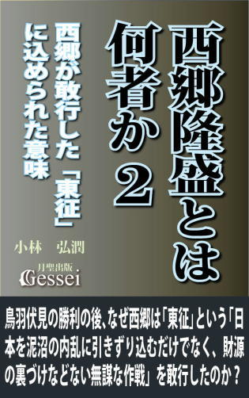
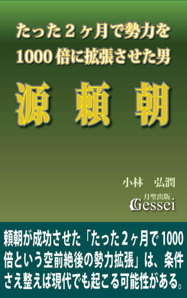
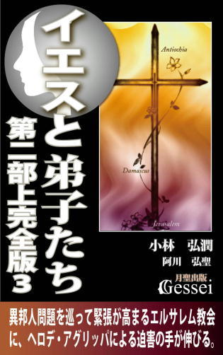
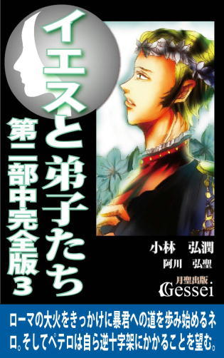
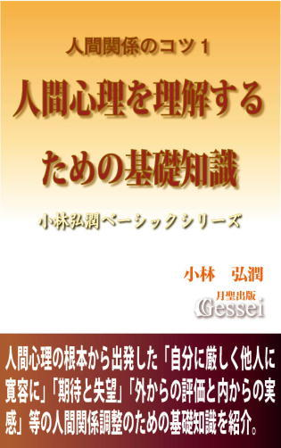
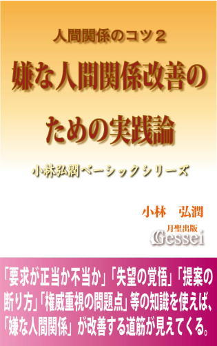
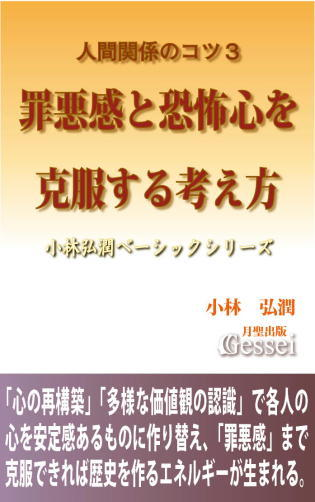

| イエスと弟子たち第二部上・廉価版（月聖出版） なぜ分裂寸前だった弟子たちが、結束してイエスの教えを広めるようになったのか？ | |
| 小林弘潤 | |
| Gessei Shuppan (2017) | |
イエスと弟子たち
第二部上廉価版
小林弘潤 （企画・構想 阿川弘聖）
※更新履歴
2017/1/25 1版
※著者ツイッターで、「本の価格を上げる場合の時期の情報」等の情報を発信しています。ご興味ある方はどうぞ（携帯からも読めます）。
第二部を手に取られた方へ
現代のキリスト教が「世界一の宗教」であることは世界中の誰もが認める事実だと思いますが、不思議なことに一般の人だけでなく教会関係者の方でさえ「イエスの死後に弟子たちが教えを広め、キリスト教が世界宗教になる基盤を作ったこと」がごく当たり前の話として認識されている感じがします。
ただ、聖書に書かれた記述を元に当時の状況を冷静に考えた場合、絶対的リーダーだったイエスに頼り切っていた弟子たちにとってイエスの処刑による衝撃と失望は計り知れないものがあったと思うので、そのショックで彼らは散り散りになり、教団は消滅して終わるのが普通の流れだと思います。
ところが、弟子たちはその後結束してイエスの教えを各地に広める行動を起こし、やがて教団はローマ帝国の隅々にまで広がって国教となり、徐々に世界各地に浸透していって最終的に「全世界に数十億の信者を持つ世界一の宗教」になってしまいます。このことは私たちが認識している世界史の中では「史上最大の大逆転劇」ではないかと思います。
なぜイエスと比べて何の力もなかった弟子たちが結束し、過酷な迫害に耐え抜いて教えを広めることができたのか。そして、なぜ一時は消滅寸前だったイエスの教団が勢力を蓄えて外の世界に拡張していくようになったのか。この第二部ではそうした過程を描いていきたいと思っています。
ローマ帝国の支配下にあったイスラエルの地で独自の教えを説き始めたイエスは、伝統あるユダヤ教を冒涜し民衆を扇動する危険人物としてユダヤを統治するエルサレム衆議会（サンヘドリン）に敵視され、様々な妨害を受ける。そして「奇跡を起こしてイスラエルを解放する王」であることをイエスに期待した民衆たちも、期待に応えないイエスの姿を見て失望する。
弟子たちの一部が去り、筆頭弟子のペテロでさえ何もできずにいた時、社会の最下層にいる娼婦として絶望の日々を送っていたマグダラのマリアがイエスの前に現れる。
過越の祭りにおいて民衆は再びイエスを熱狂的に支持するが、策謀によってヘロデ・アンティパスを操り、洗礼者ヨハネを葬ったアンナスがユダを利用してイエスを逮捕する。そしてピラトの公開裁判で民衆を扇動して十字架刑の判決を出させ、最大の敵を処刑することに成功する。
ペテロは追いつめられた恐怖のあまりイエスを知らないと言ってしまったことを後悔し、自信喪失状態に陥ってしまう。そして、イエスの弟子たちは誰もが精神的支柱を失って虚脱状態となり、教団はいつ分裂してもおかしくない瀬戸際に立たされていた。
※この小説の記述は聖書等の史料に描かれた人物や出来事をベースにしていますが、ところどころにオリジナルの話を入れています（どのエピソードが聖書や史料にある話かは「注と解説」に記載しています）。著者として「この内容はすべて事実であり真実だ」と主張するつもりはまったくなく、「解釈の一つ」として受け止めてもらえればと思います。解釈の中でも「事実に近い解釈」と「事実から遠い解釈」がありますが、この内容に盛り込まれた解釈が事実に近いかどうかは、読まれた方一人一人の判断に委ねます。
『イエスと弟子たち・第二部』全体目次
第一章 復活
第二章 始動
第三章 殉教
第四章 回心
第五章 離脱
第六章 懇願
第七章 会議
第八章 弁明
第九章 逆十字架
第十章 開戦
第十一章 炎上
第十二章 イエスとペテロ
主要登場人物
イエス その後二千年にわたって全世界に影響を与え続ける「キリスト教」を興した始祖。十字架後に結束した弟子たちの前に現れ、その後も彼らを導き続ける。
ペテロ 十字架後、生前のイエスの思いに触れて心の弱さを克服し、教団のリーダーに指名された後は徐々に自信をつけてリーダーとして成長していく。様々な問題に悩みながらも、やがて必死さや一生懸命さによって皆に認められるようになっていく。
アンデレ ペテロの弟。十字架後のガリラヤ滞在時に兄をイエスの下に導く役割を担う。十二使徒の一人。
使徒ヨハネ 生前のイエスから与えられた役割を忠実に守り、ペテロに様々な助言を行って彼を教団のリーダーへ導く。論戦が得意で、信者がいない新たな地域に赴く開拓伝道も精力的に行う。冷静な現実感覚と苛烈さを両方持った極端な性格の持ち主。
使徒ヤコブ ヨハネの兄。ヨハネと共に「雷の子」と呼ばれたほどの激しい性格を克服し、徐々にイエスの教えの真意を理解するようになっていく。そしてそれを体を張ってヨハネにも教えようとする。十二使徒の一人。
アリマタヤのヨセフ 十字架後、分裂しそうになった教団に赴いて弟子たちを結束させる役割を担う。その後も衆議会に所属しながら教団の側面援助の活動を行い、イエスの教団の発展に少なからぬ貢献を果たす。
マグダラのマリア 十字架後もイエスに強い思いを持ち、それを受けたイエスが最初に彼女の前に現れる。伝道者としても女性の心情の機微を洞察した話によって多くの女性の心をとらえ、教団における女性信者のリーダー的存在になっていく。
ハンナ ペテロの妻。エルサレム移住時に教団に合流する。マリアの補佐役を務め、彼女の美貌に惹かれて寄ってくる男たちを撃退する功績も積み重ねる。
ステファノ 教団の信者の中で外の世界から来たユダヤ人である「ヘレニスト」たちのリーダー。仲間思いで、教団における仲間たちの立場を良くしようと懸命の努力を行う。会堂でサウロとも論戦を繰り広げるが、神殿礼拝をしなくなったことをつけ込まれて衆議会に告発される。
ピリポ ヘレニストグループの一人で、ステファノの盟友として彼を補佐する。ステファノ殉教後は彼の意志を引き継いで各地を情熱的に伝道し、ペテロたちの牽引役となる。
パウロ（サウロ） 小アジアのタルソス出身で、青年時はユダヤ教徒のエリートとしてエルサレムに留学し、高名なガマリエル門下で学ぶ。生粋のユダヤ教徒としてのプライドからステファノらヘレニストたちを迫害するが、彼らの強烈な信仰心を目の当たりにして戦慄する。ダマスコへの途上で律法遵守では心が満たされない葛藤に苛まれていた時、荘厳な声で語りかけるイエスの姿を見る。
アナニヤ ダマスコ在住のユダヤ教徒だったが、天からの啓示を受けたことでサウロを自宅に引き取って介抱する役目を担う。さらに、祭司たちのお尋ね者となったサウロをダマスコから脱出させる準備も率先して行う。
バルナバ タルソスに近いキプロス島出身の年配の信者で、懐の深い鷹揚な性格の持ち主。異邦人問題が持ち上がった際は、エルサレム教会の代表としてアンティオキア教会に赴く。
シラス ヨハネと同年代の青年信者で、教団の中ではエルサレムに常駐する律法重視派に所属。コルネリウス改宗事件では割礼のない異邦人に洗礼を与えたペテロのやり方を批判する。
コルネリウス カイザリヤに駐在するローマ軍の百人隊長。懇意にしている部下を使者として派遣し、ヤッファにいたペテロを食事に招待しようとする。
イエスの弟ヤコブ 律法遵守の真摯さでは並ぶ者がなく、祭司や律法学者からも「義人ヤコブ」と敬意を受けているほどの人物。エルサレム移住時に教団に参加し、ペテロたちが外の世界に向かった後はエルサレム教会における指導者となる。
カヤパ エルサレム衆議会の大祭司として聖俗双方の権力を握るが、実権が義父のアンナスにあることは衆議会の誰もが承知していた。イエス死去の際に至聖所の垂れ幕が真っ二つに裂けたことに恐れを抱き、先手を打ってイエスの弟子たちを一網打尽にしようとする。
アンナス 老練な陰謀家として巧妙な手段で洗礼者ヨハネとイエスの二人を葬ることに成功したが、ペテロたちを雑魚の集まりと思い込んだことから歯車が狂い始める。イエスの死によって最大の脅威がなくなったために監視体制が緩み、それによってイエスの教団がエルサレムに定着する余地が生まれる。
アレクサンデル 衆議会議員でもある壮年の祭司で、エリート意識が強い。ボアズに代わってペテロたちの教団を監視する役目を担い、ペテロやヨハネを尋問しただけでなくイエスの埋葬の手助けをしたヨセフをも告発しようとする。
シモン・カンテラス 衆議会議員で、衆議会を牛耳るアンナス家にとって不倶戴天の敵であるボエトス家の当主。イエス死後の情勢の変化をボエトス家再興の好機と見、ヨセフに接近したことで衆議会内の力関係が変わっていく。
ペテロニウス ローマのカリグラ帝が皇帝崇拝を帝国中に要求した際のシリア総督。カリグラの命令を実行すべく大軍団を率いてイスラエルに南下するが、皇帝崇拝に反対するユダヤ人の決死の懇願を受けて戦慄し、打開の道を探そうとする。
マッティアス アンナスの五人の息子の一人で、ユダヤの地がヘロデ・アグリッパ王の統治下に置かれた際に大祭司となる。アグリッパの命令を利用してエルサレム教会に迫害を加えようとする。
ヘロデ・アグリッパ ローマに送られた子供時代は困窮の日々を過ごしたが、権力闘争の機微を学んでからは運命が好転する。カリグラ帝の死後、クラウディウス帝擁立に多大な功績を立てたことで皇帝の後ろ盾を得、ついにヘロデ大王以来のパレスチナ全土の王として君臨する。巧みな手法でアンナス家とボエトス家を操って磐石の体制を築こうとするが、彼の死によってその治世は数年で終焉する。
Ⅰ
カヤパに呼び出されたアンナスが、神殿にある大祭司の執務室に入ってきた。
「わざわざ呼び出すとは、何用じゃ」
「義父上、これでイエスの教団を壊滅させることができますぞ。今部下から報告が入りまして、奴のエルサレムにおける拠点の場所がわかりました。そことベタニヤの信奉者の家にはまだ奴の弟子どもが居座っているようで、この２箇所を当たれば一網打尽にできるという話です」
「............」
「奴がいなくなった以上、逮捕さえしてしまえばどんな罪もでっちあげられますゆえ、これでもう何の心配もいりますまい。すぐにでも神殿兵士を送って逮捕させることにします」
興奮した口調のカヤパに対し、アンナスは冷ややかに言った。
「わしがいつそのような指示を出した。いくらお前といえど、兵士を勝手に動かしてもらっては困るな」
「......で、ですが、奴が死んでもその弟子どもはまだ健在ですぞ。放置しておいたらこの先何を起こすかわからない連中である以上、奴らに対する民衆の支持がなくなった今がチャンスではありませんか。不穏な芽は早めに摘み取っておく意味でも」
カヤパの口調に焦りと性急さを感じ取ったアンナスは、その奥にあるものを洞察すると陰気な笑いをひらめかせた。
「そうか......。あの至聖所の垂れ幕が裂けたことが気になっているわけじゃな(1)。もしあれを起こしたのが奴の力だとしたら、奴に関わる存在は根こそぎ壊滅させない限り安心できない、というわけか」
カヤパはアンナスの言葉に一瞬顔をこわばらせたが、すぐに表情を変化させてアンナスから視線を外した。それは、カヤパ自身も自分の本心に気づいていなかったことを物語っていた。冷笑を浮かべて自分を観察する義父に対し、カヤパは観念した表情を見せながら言った。
「......義父上は、気にならぬと言われるのですか」
「あの時も言ったはず。もし奴にそれだけの力があるなら、十字架にかかる前に奇跡を起こしておるわ。何も起こらず奴が死んだことが、奴にそれだけの力はないということの証拠ではないか」
「ですが、偶然であのようなことが起こるとは......」
「まさかお前は、ああした出来事は聖霊や悪霊の仕業で起こるとでも思っているのではなかろうな。それではペテンの業も見抜けない民衆どもやパリサイ派と同じではないか」
「い、いえ。決して、そのようなことは......」
神妙な顔をして下を向いたカヤパに対し、少し間をおいてアンナスは答えた。
「まあよい。そんなものは一時的な錯乱じゃろうから、時間が経てば落ち着きも戻ってくるじゃろうて。
ともあれ、奴の弟子どものことなど気にかける必要はあるまい。調べてみたが、ガリラヤの田舎から出てきた学問もない小物ばかりじゃ。そんな小物どもに何かをする力などあるわけがない」
「そ、そうでしょうか」
「メシアと噂された人物についていく人間など、周囲の熱狂の渦に呑み込まれて主体的な判断ができなくなった馬鹿か、ついていけば何かおこぼれの利益があると期待する便乗派のどちらかでしかない。そんな小物の集まりなど、奴が殺されたショックですぐ分裂して散り散りになるのが関の山じゃよ。そんなどうしようもない奴らに、なぜ我らが関わらねばならぬ」
「た、確かに、そうかもしれませんな」
「そうじゃ。お前はそのようなことを心配せずとも、わしの言うことを聞いておればよいのじゃ。そうすれば、あと数年は大祭司の地位に留まらせてやるぞ。せいぜいありがたく思うことじゃな」
最後の言葉のトーンを上げて言った後、アンナスはそのままカヤパの執務室を出て行った。カヤパは内心の動悸を鎮めようと静かに椅子に座ったが、心に芽ばえた不審の思いを抑えることはできなかった。
彼らにとっての最大の脅威が去った今、二人の心に微妙なズレが生じ始めていた。
イエスの遺体が埋葬された金曜の夕方から１日が過ぎ、安息日が明けた。
ベタニヤのラザロの家に滞在していたヨハネは、ガリラヤに向かう通りに見知った人物の姿を見つけた。その人物はラザロの家に寄る気配を見せず、ガリラヤへの道を急いでいる雰囲気があった。ヨハネは立ち上がり、その人物を追って走り出した。
早足でベタニヤを去ろうとする人物の近くまで走り寄ると、ヨハネは背後から声をかけた。
「ペテロさん、どこに行かれるのですか」
ペテロはその声に立ち止まり、逡巡した後で振り返った。うつろな目を浮かべてヨハネの姿を確認すると、弱々しい声で答えた。
「どこにって......。ガリラヤに帰るに決まっているだろ。もうエルサレムにいても仕方がないからな」
ヨハネは遠慮なくたたみかけた。
「逃げるんですか？」
しばらく沈黙した後、ペテロはばつが悪そうに答えた。
「......別に逃げるわけじゃない。肝心の先生がああなってしまった以上、私たちは解散するしかないじゃないか。どう考えても、先生抜きの私たちには何もできないよ」
「その言い方は僕には、逃げることの言い訳にしか聞こえませんけどね」
ペテロは一瞬ムキになった表情でヨハネを見たが、すぐに視線をそらして言った。
「ほう、それならお前には先生抜きでも何かできると言うのか？ どうせみんな私と同じ気持ちだろうから、みんなで先生の教えを広めようなんて言っても誰も賛同なんてしないさ。誰もいなくなってお前一人になるのがオチだよ」
ヨハネは躊躇なく答えた。
「それでも構いません。僕はたとえ一人になっても先生の教えを広めるつもりです。きっと先生もそれを望んでいるでしょうから」
ペテロはさらに視線を外し、嘲笑するように言った。
「先生の教えなんて誰が聞くもんか。みんな先生が奇跡を起こしてイスラエルの救世主になってくれることを期待していたのに、先生はそれを裏切ったんだ。......まったく、他人を救いながら自分一人救えなかったなんて、とんだお笑い草だ」
これを聞いたヨハネはペテロのそばに近づき、左手でペテロの左肩をつかんだ。
視線をそらしていたペテロがようやくそれに気づいた時、目の前にはすでにヨハネの右拳があった。
ヨハネは勢いよくペテロの左頬を殴った。ペテロは吹っ飛ばされ、地面に倒れ込んだ。
彼はうつぶせになって倒れ込んだまま、立ち上がって反撃しようとはしなかった。やがて殴られた左頬を右手で軽くさすった後、体を震わせながらつぶやいた。
「......だって、どうしようもないじゃないか。
私たちは先生にすべてを頼ってきた。何もかも先生がやって下さると期待していた。まさか先生がいなくなるなんて、そんなこと考えたこともなかった。先生がいなくなってしまった今、私たちの力で何ができるんだ」
ヨハネは黙って聞いていた。ペテロはヨハネに向き直り、語気を強めて言った。
「私たちは祭司や律法学者じゃない。学問をしたわけじゃないから何の知識もない。ただの漁師や下層の人間の集まりだ。そんな人間が教えを広めようとして、誰が聞いてくれると言うんだ！
仮に聞いてくれる人がいたとしても、祭司たちや衆議会は反対して迫害してくるに決まっている。あれだけの力を持った先生でさえああなってしまったのに、私たちのような人間に一体何ができると言うんだ！」
ヨハネは冷静な口調で言った。
「じゃあ、あなたは僕たちを選んだ先生の目が節穴だったとでも言うのですか。ここで僕たちがあきらめたら、先生は何のために活動していたのかわからなくなってしまいます。先生がしていた必死の努力が、すべて無駄になってしまいます。ペテロさん、あなたはそれでもいいのですか？」
「............」
「もちろん僕らには先生のようなことはできません。いえ、できるはずがありません。でも、力のない僕たちであっても、何かできることはあるはずです。
仮に、僕たちが先生と同じような目に遭うことになったとしても、やるべきことをやったのだからそれは仕方がないことです。でも、何かできることがある以上、今逃げることは先生の努力を無駄にする行為でしかありません。そうではないでしょうか」(2)
何も答えられないペテロを見て、ヨハネはさらに続けた。
「......殴ってしまったことは謝ります。ただ、僕はもう二度とあなたを殴らないでしょう。もしあなたがこのまま逃げて先生のことを忘れてしまっても、僕は何をする気もありません。なぜなら、その時のあなたはもう殴るだけの価値すらもない人間だからです」
そしてペテロに背を向けて言った。
「僕は僕にできることをやるつもりです。さっきも言いましたが、もし皆があなたのように逃げ散って一人になってしまっても、僕は死ぬまで先生の教えを広めます。どうかそれだけは、忘れないで下さい」
その場を動こうとしないペテロを見て、ヨハネはその場を立ち去った。ベタニヤの家に帰った彼は、書き物をしながら窓越しに往来を見ていた。しばらくの間誰も通る者がいない様子を確認すると、やがてヨハネはペンを置いた。
あわただしく立ち上がると、矢も楯もたまらず走り出した。通りに出て、ガリラヤ方面へ行こうとする人影を探したが、走り寄れる範囲に見える人影はすでになかった。
ヨハネはしばらくうつろな表情になって遠くを見ていたが、やがて息をついて気合いを入れようとした。
その時、背後から自分を呼ぶ声が聞こえた。
「ヨハネ......」
驚いて振り向いたところに、左頬を腫らしたまま、はにかんだ表情を浮かべた一人の男が立っていた。
「ペテロ、さん......」
「これからエルサレムに帰ろうと思ったんだが、よかったら一緒にどうかと思って......」
ヨハネは安堵のため息をつくと、若者らしく元気よく答えた。
「はい、喜んで」
二人が歩き出そうとした時、ペテロが小さく言った。
「また気に入らないところがあったら、いつでも殴ってくれ」
ヨハネは笑顔で応えた。
「その言葉、そっくりお返しします。僕の方こそ、ペテロさんに殴られないように頑張りますよ」
エルサレムへの道すがら、ヨハネはペテロに語りかけた。
「先生の教えを広める前に大事なことは、僕たちが先生が説かれた教えをできるだけ納得することだと思います。僕たちが納得できていないのに、ただ先生の教えは素晴らしいから信じろと言っても、誰も聞いてくれないのはペテロさんの言われる通りだからです。
だから僕は、先生が説かれた教えを一つ一つ思い出して筆写し、それらを納得できるように考えていたんです」
「な、なるほど......」
「ただ、先生が言われたことの中にどうしても納得できない言葉があるんです。以前お話ししました『汝の敵を愛せよ』の教えもそうですけど(3)、もっとわからないのは先生が過越の食事の時に言われた『私はすでに世に勝ったのだ』という言葉です。
僕には、十字架にかけられて殺されるという結果が〝世に勝つ〟ことだとはどうしても思えないんです。でも、そうしたことすら僕たちが納得できるように努力しなければ、先生の教えは決して広まらないと思います」
ペテロは少し考えた後、答えた。
「でも、その言葉にはそれほどの意味はなく、心配する私たちへの励ましという軽い気持ちで言われただけだったんじゃないか」
「そうかもしれません。でも、あれだけ自らの言葉に責任を持つ姿勢を持っておられた先生が、軽い気持ちで『すでに世に勝った』と言われたとは思えないのです。励ましという程度の気持ちならば、『世に勝ったと思う』とか『おそらく、勝てるだろう』という言い方になるはずです。それなのになぜ、自信にあふれた『すでに世に勝った』という言い方をしたのでしょうか」
「そうか。確かにそうかもな......」
ペテロが考え込むと、ヨハネは自分に言い聞かせるように言った。
「......まあ、焦っても仕方ないですからね。これからみんなと一緒にじっくり考えれば答えが出てくるかもしれません。ところでペテロさんには、先生の教えの中で納得できないと思われていることはないのですか」
「いや、私の場合は納得できなくてもひたすら先生についていく、という気持ちしかなかったから、そんなこと考えたこともなかったけど......。ただ、私の中にはまだ先生が亡くなったという現実を認めたくない気持ちがある。そういう気持ちが出てきてしまう理由は、私たちが〝先生なら必ず奇跡を起こしてくれる〟と信じていたからだと思う。
先生は『求めよ、さらば与えられん』と言われた(4)。だからこそ私も、みんなも、そしてイスラエルの民衆も先生が奇跡を起こしてくれることを求めた。求めれば奇跡が与えられるはずだ、とみんな思っていたから。
でも、現実には奇跡は起こらなかった。それは、『求めよ、さらば与えられん』という先生の教えが間違っていたからなのだろうか......」
「ペテロさんは、その教えが間違っていたと思いますか？」
「いや、そうは思いたくない。先生の教えは正しかったと思いたい。でも、お前の話を聞いて一つわかったことがある。それは、ただひたすら先生を信じるという気持ちだけではだめなんだ、ということだ。信じる気持ちが強いと自分が望まない結果になった時の苦しみも大きいから、いざという時に苦しみから逃げようとする心が出てきてしまう。だからこそ、先生の教えをただ鵜呑みにするのではなく、自分なりに考えて納得しないといけないんだ、と」
ヨハネは満足げにうなずいた。
「その通りだと思います。あわてることもないでしょうから、そうした疑問はこれからみんなでじっくり考えていきましょう」
「ああ、そうだな」
Ⅱ
ペテロとヨハネがエルサレムの拠点の家に着くと、そこで心配顔を浮かべたペテロの弟・アンデレの出迎えを受けた。
「よかった。僕はてっきり兄さんが逃げてしまったんじゃないかと......」
そう言いながらペテロの顔を見たアンデレは驚きの声をあげた。
「ど、どうしたの、その頬？ 誰かに殴られでもしたの？」
ペテロは、まだ腫れが残っている左頬をなでると、ヨハネを横目に見つつ言った。
「私の不注意で、ちょっと堅いものにぶつけただけだよ。そんなに痛くはなかったから、......いや、少しは痛かったけど(5)、とにかく心配するほどじゃない」
だが、アンデレの心配には相応の根拠があった。
「実は、さっきこの家の中をのぞき込んだり観察していた人がいたらしいんだ。ひょっとしたら衆議会のスパイかもしれないから、てっきりスパイに襲われたんじゃないかと思って......」
これを聞いて、ペテロとヨハネの表情は緊張と警戒を帯びたものになった。その時、玄関から使徒の一人のマタイがその場に近づき、ヨハネに話しかけた。
「ヨハネ、今玄関に衆議会議員の人が来ている。まずはお前に会ってもらいたいそうだ」
これを聞いたペテロとアンデレは緊張感を高めた。ヨハネは少し思案すると、マタイに尋ねた。
「マタイさん、その人が衆議会議員だとわかったのは、あなたが事前にその人のことを議員だと知っていたからですか？」
「いや、その人が自分で衆議会議員だと名乗ったからだが」
ヨハネはそれを聞いてうなずき、警戒した顔を浮かべているペテロに言った。
「大丈夫です、ペテロさん。もしスパイなら、自分のことを衆議会議員だなんて言うはずがありません。きっとあの人ですよ」
ヨハネは訪問者を家にいれ、男の弟子たちが集まっていた広間に通した。そこには、イエスの生前に使徒として指名されたペテロやアンデレ、ヤコブ、マタイ、トマス、ピリポ、ナタナエルらが集っていた。
「紹介します、皆さん。アリマタヤのヨセフさんです。ヨセフさんは衆議会議員ですが、密かに先生を支持している人です。
十字架刑で処刑された先生は、本来葬式も埋葬も許されないはずでしたが、この人が総督のところに出向いて許可を取ってくれて、しかもご自分が所持するお墓に埋葬してくれたおかげで、先生のご遺体をさらし者にせずに済んだのです(6)。僕だけでなく、先生のお母さんやマグダラのマリアさんがその証人です。もしヨセフさんが衆議会のスパイなら、そうした行為は絶対にしないはずです」
それを聞いた全員がうなずき、ヨセフに対する警戒を緩めた。ヨセフは、適切な紹介をしてくれたヨハネに礼を言うと、その場に座ってこの訪問の目的を語った。
「突然の訪問、驚かせてすまない。私にとっても危険を伴うことだったのだが、あの方に選ばれた使徒である君たちに、どうしても話したいことがあったのだ」
そう言うと、その場に集った弟子たちの表情を観察した。警戒する雰囲気はなくなったが、どの顔にも生気がなく目に光が感じられなかった。
「......今君たちは、あの方が亡くなられたショックで今後自分たちが進むべき道を決めかねて、迷ってしまっていると思う。そこで、何らかの参考になればと思って、あの方の裁判や十字架をこの目で見た私が考えたことを話さなければという思いになったのだ。
あの方が逮捕された後、まず大祭司官邸で裁判が行われた。その裁判で、あの方は『自分が死ぬことは神の計画なのだ』とはっきり言われた。しかし、私にはその意味がわからなかった。あの方が十字架刑の判決を受け、ゴルゴタへ向かっている時も、十字架にかけられている時も、神はなぜ、これだけの義人をむざむざと殺されるがままに任せるのか、まったく理解ができなかったからだ。
そして私は考えた。このまま無実の罪で殺されたら、それではこの人の人生は何の意味も持たないことになってしまうではないか。神とはそれほど無慈悲で、冷酷な存在であるのか、と......。
私は必死に考えた。考え続けた。すると突然、私の脳裏に天啓のようにひらめいた聖書の章句があったのだ」
ヨセフの言葉には、直接の目撃者であることから来る重みと、誠実な人柄から生じる真摯さが感じられた。誰もが身を乗り出して次の言葉を待つ中、彼は持ってきた巻物を手に取って一同の前で開いて見せた。
「......あの日、あの方の遺体を埋葬した後、急いで家に帰った私は、その章句が書かれた書を開いてみて驚いた。そこにはこう書かれていたからだ」
ヨセフは聖書の巻物を開き、その章句を朗読し始めた。それは、数百年前に書かれた預言書であるイザヤ書からの話だった。
「私たちは彼を尊ばなかった。
彼が担ったのは私たちの病、彼が負ったのは私たちの痛みであったのに。
我々は思っていた。神の手にかかり、打たれたから彼は苦しんでいるのだ、と。
しかし、彼が打ち砕かれたのは私たちの罪のためであった。
彼は自ら罰を受けることで私たちに平安を与え、
その打たれた傷によって私たちは癒されたのだ。
私たちはみな羊のように迷って、それぞれ自分の道に向かって行ってしまった。
神は我々すべての者の不義を、彼の上に置かれた。
彼は虐げられ苦しめられたが、何も言わなかった。
屠殺場に引かれて行く小羊のように、
また毛を切る者の前にうなだれた羊のように、口を開かなかった。
彼は苛酷な裁きによって命を奪い取られた。
その時代に生きた人間の誰が思い巡らしたであろうか。
彼は我らが民の罪のために打たれ、命ある者の住む地から断たれたことを。
彼は不法を働かず、その口に偽りもなかったのに、
その墓所は神に逆らう者と共に設けられ、悪人と共に葬られた」（イザヤ書第五十三章より）(7)
ヨセフは一呼吸ついて巻物を置き、周囲を見渡した。どの顔にも驚きの表情が浮かんでいた。
ペテロが思わず言葉を発した。
「ま、まるで先生のことじゃないですか。聖書にそんなことが書かれていたなんて......」
「この章句があるイザヤ書は数百年も前に書かれた書物だ。それほど昔の時代の預言者が、将来こうした人物が現れることを神から預言されて書いたものなのか、私にはわからない。ただ、ここに書かれている人物の姿はあまりにもあの方に似ている。不気味なまでに、似すぎている......」
ヨハネがヨセフに尋ねた。
「ではヨセフさんは、先生は自らの意思に関係なく、神が計画された通りに、神の命じられるままここに書かれた通りの人生を歩んだ、と言われるのですか」
「そうだな......。もしかしたらそうかもしれない、としか言いようがないな」
ヨハネは間髪入れずに反論した。
「僕はそうは思いません。人間が自らの意思に関係なく、神の計画のままに生きているだけだとしたら、人は何のために自分の人生を悩み、何のために生きているのかわからなくなります。先生とてご自分の意思で自らの人生を歩み、苦難の中で死ぬことさえご自分の意思で選択されたのだと思います」(8)
「......確かに。ただ、まずはっきりさせておきたいのは、私には聖書の内容の正確な解釈ができるような力はない、ということだ。私にできるのは聖書に書かれていることをそのまま君たちに紹介し、必要があれば私なりの解釈も話して君たちの参考にしてもらうことだけだ。
だから私の意見としてする話を正確な解釈だと思ってもらっては困る。君たちは私の意見をあくまでも参考意見として受け止め、最終的にどう解釈するかは自分たちの責任で決めなければならない。それがあの方に使徒として認められた、君たち自身の責務なのだから」
ヨハネは、ヨセフの謙虚で冷静な態度に感銘を受けたようにうなずいた。
「わかりました。ではヨセフさんの解釈をお聞かせ下さい。あくまでも参考意見としての、ヨセフさんの意見を。それをどう受け止めるかは、我々の責任で決めます」
この言葉に全員が賛同した。ヨセフは周囲を見渡し、皆が聞く姿勢ができているのを確認してうなずいた。
「では話そう。実は私もヨハネ君と同意見で、あの方がご自分の意思をねじ伏せて神の言いなりの人生を送ったとは思えないのだ。いや、こうも思うのだ。むしろ神は、あの方の命を救おうとしておられたのではないか。しかしあの方はそうした神の思いを制止し、罪人として処刑されるという屈辱と苦痛を自らが望まれたのではないだろうか、と」
沈黙の後、ペテロが皆の思いを代弁するようにつぶやいた。
「な、なぜ、そう思われるのですか？」
「......これはあくまでも私の推測にしか過ぎないのだが、あの方はこのイザヤ書の章句を既に読んでいたのではないだろうか。そして、自分の周囲に死の気配が漂い始めた時、ここで語られた人物とご自分の姿を重ね合わせたのではないだろうか」
これを聞いて皆が粛然となった。ヨセフは言葉を続けた。
「あの方は、もし本当に自分がこの人物のような罪人扱いを受けて殺されるだけの人生を歩むとしたら、どうなるかと考えたのではないか。おそらく、そのような死など到底受け入れられないものだったに違いない。
あの方はメシアとしてイスラエルの地をローマから解放してくれる、と民衆から期待されていた。期待が大きいと落胆や失望も大きいから、みじめに殺されるという結果を見て多くの人が憤り、弟子たちも散り散りになって自分のことなど跡形もなく忘れ去られるだけだ、と思うだろう。みじめに殺されて何も残らないという人生など、あの方にとって耐えられない思いだったに違いない......」
それを聞いたペテロは思わず顔を伏せ、胸の内から湧き起こって来るような罪悪感を味わっていた。そしてそれはペテロだけでなく、ほとんどの弟子に共通する感情だった。
その様子を見て、ヨセフはもう一度巻物を手に取って言った。
「ただ、先のイザヤ書の章句にはまだ続きがあるのだ」
ペテロは驚いて顔を上げた。全員の視線が注がれる中、ヨセフは再び朗読し始めた。
「彼を打ち砕くことは神の計画であり、神は彼を大いに悩ませた。
しかし彼が自らを償いの献げ物とした時、
その子孫を見ることができ、命を長くすることができる。
かつ神の計画が彼の手によって成就される(9)。
彼は自らの魂の苦しみから生まれた光を見、それにより満足を得る。
我が義なる僕はその見識によって多くの人を義とし、また彼らの罪を負った。
それゆえ、我は彼に多くの者を与え、共に獲物を分け与える。
これは彼が死に到るまで、自らの魂を注いで罪人の一人に名を連ねたからである。
多くの人の罪を背負い、不義ある者のために我に取りなしをしたのは、
まさにこの人であった」（イザヤ書第五十三章より）
巻物を置くと、ヨセフが言った。
「自らを償いの捧げ物にするということは多くの人の罪を背負うということであり、それは自らが死ぬことで多くの人の罪が軽減されるという意味になる。それに気づいてあの方は決意を固めたのではないだろうか。
弟子たちが散り散りになっても、すべての人が自分のことを忘れ去って何も残らなかったとしても、自分が代わりに罰を受けることで多くの人の罪が軽減されるのならそれでいい、と。
いや、むしろ進んで屈辱と苦痛の死を受け入れよう、と......」
沈黙が流れた。そして、あちこちで嗚咽をこらえる様子が見られた。
ペテロは、湧き上がってくる感情をこらえきれずに噎び泣くと、ヨセフに懇願するように言った。
「教えて下さい！ 我々は、一体どうしたらいいのですか。どうすれば、先生の思いに応えることができるのですか」
ヨセフは冷静な表情を崩さずに言った。
「それは私にもわからないし、もしわかったとしても君たちに教えられる資格など私にはない。その資格があるのは、私たちの先生であるあの方だけなのだから」
ペテロは顔を伏せ、つぶやいた。
「先生が、生きていてくれたら......」
沈痛な雰囲気がその場を圧しそうになった中、ヨセフは付け加えた。
「ただ、先の章句には神がその僕に与える栄光についても書かれている。それは『我は彼に獲物を分け与える』という言い方だ。
多くの者の罪を背負って神にとりなしをした功績により、彼は神から何か褒美を得る。そして、神が与える〝獲物〟である以上、金銭や宝石のような物質的なものではなく、もっと価値のある何かである可能性が高い」
これを聞いて皆が顔を上げた。ヨハネが尋ねた。
「何か、とは？」
「それも私の力では答えようがないが、言えることが一つある。私がそれが何かを考えていた時、イザヤ書の別の箇所に記された章句が心に浮かんできたということだ」
一呼吸置いたあと、ヨセフは答えた。
「それは、『あなたの死者は生き、彼の亡骸は起きる。塵に伏す者よ、目覚めて悦び歌え』という章句だ」(10)
この言葉に全員が驚いた。皆を代表してペテロが尋ねた。
「つまり、神は多くの者の罪を背負った功績として、一度失われたその人の命をよみがえらせる、と。ということは、先生が生き返ってもう一度私たちの前に姿を見せてくれる可能性もある、と......」
皆の顔に生気が戻り、場に期待感が充満し始めた。しかしヨセフは、そうした楽観的な空気に逆らうように、慎重な表情を作った。
「生半可な期待は禁物だ。我々は今まであの方一人に依存しすぎた。また同じことを繰り返すだけなら、あの方が我々の前に姿を見せることは決してないだろう。我々にまず必要なのは、あの方の志を受け継いで自分たちの力だけでやり遂げる、という強い決意かもしれない」
ペテロは身が引き締まるような思いに打たれた後、大きくうなずいた。ヨセフが続けた。
「我々がそうした気持ちを忘れなければ、あの方は我々の前に現れて我々が何をするべきか教えてくれるかもしれない。少なくとも私は、そうなることを信じたい」
ヨセフの言葉を聞いていたペテロは、自分の心に天啓のようなものが降ってくるのを感じた。その勢いのまま上ずった声を発した。
「わかった、わかったぞ、ヨハネ！ 先生が言われた『求めよ、さらば与えられん』の言葉の意味がわかった！」
ペテロはヨハネに向き直り、勢いよく話し始めた。
「つまり、この言葉はいいかげんな気持ちで求めても与えられる、という意味ではなく、それだけの強い気持ちで、全身全霊を込めて求めた時に初めて与えられる、という意味なんだ。
奇跡を求める時に『奇跡が起こらなければおかしい』という気持ちではダメなんだ。奇跡を求めた時、仮にそれが起こらなくても受け止められるような思いにならないといけないんだ。少なくとも先生は、奇跡というのは起こって当然だ、とは一度も言っておられなかった。そうじゃないか、ヨハネ」
ヨハネはペテロの様子に驚きを禁じ得なかったが、すぐに真剣な表情になってうなずいた。
「はい、ペテロさん」
ペテロは皆の方を向いて力強く言った。
「いいかげんな気持ちではなく、本当に真剣な気持ちで求めなければ決して与えられることはない。つまり、私たちが先生にもう一度会いたいと真剣に求めない限り、絶対に先生に会えるはずがない、ということだ」
この言葉に、その場にいた全員がうなずいた。
やがて、弟子たちはヨセフが持ってきた聖書の巻物を借り、他にも重要なことが書かれていないか研究することを決めた。彼らは皆必死だった。全員が「自分にできることを何とかやらなければ」という思いだった。
ヨセフは拠点の家を離れる時、最初は死んだ魚のようだった彼らの目に輝きが戻ったのを見て安堵した。
彼らは深夜を過ぎても眠ろうとしなかった。ある者は聖書を凝視するように読み、ある者はイエスが語った言葉の数々の内容を真剣に議論し合った。
夜が更け、空が明るくなり始めても誰一人やめようとはしなかった。
Ⅲ
日曜の夜明け前、人影もまばらなエルサレムの通りを一人の女性が歩いていた。
その女性は前夜に購入した香油の小瓶を大事そうに抱え、唇を固く結んでいた。マグダラのマリアだった。
歩きながら、彼女はイエスに出逢った頃のことを思い出していた。
......預言者の噂を聞き、どうすれば救われるのか知りたくてマグダラの会堂を訪ねたが、会堂に入ることを拒絶された。遊女屋に戻りながら「自分は救いの道に入ることは許されていないのだ」という気持ちになり、何の希望も持てずに生きていくしかないという思いに襲われた。
しばらくして、預言者の説法が会堂ではなく湖畔や山腹の平原で行われるようになったことを人づてに聞いた。「今度こそ救いの道を教えてもらえるかもしれない」という希望が生まれたが、同時に別の不安も感じた。
「自分のような罪深い人間が、預言者という立派な方の近くに寄ってお話を聞くことなど、許されるのだろうか？」
悩んだ末、「姿も見えないほど遠くに座って聞くだけなら、ご迷惑もかかるまい」という思いになった。多くの人が集った山上で、ギリギリ声の届くところに座った。預言者の姿はほとんど見えなかったが、声ははっきり聞こえた。そこでなされたイエスの説法は、ひと言ひと言が胸に突き刺さってくるようだった。
「神とは常にあなた方と共にあり、あなた方の横に座り、あなた方を励まし、あなた方を常に導かんとしている存在であるのだ」
「たとえ、あなた方がどのような境遇にあろうとも、どのような苦しみの中に置かれていたとしても、神はあなた方を常に見守っておられる」
「あなた方の中には、数多くの罪を犯した者もいるであろう。そうした罪の重さにおびえ、神の怒りがいつ我が身を襲うかと恐れおののいて生きている者もいるであろう。確かに、不信心な者には神の怒りが下ることもある。しかしそれは、人間が一つ罪を犯したら、神の怒りから決して逃げられないということではないのだ。
なぜなら、神はあなた方が律法に違反し、戒律を守らずに悪を犯したことがあったとしても、悔い改めという機会を待っておられるからだ。悪を犯した人間であっても、本心から悔い改めて二度とそのような悪を犯さない人間となった時、神はあなた方の罪を許してくださる。神とは、そのようなお心を持った方であるのだ」
そしてイエスが語った次の言葉が決定的だった。
「あなた方の中には、これだけの重い罪を犯した自分など、神はもう見捨ててしまわれたのではと思っている者もいるかもしれぬ。しかし私は言おう。神はあなた方を、決して見捨ててはいない。なぜなら、あなた方は現に命があり、今こうして、私の話を聞いているからだ。
もし、あなた方が神に見捨てられた人間であるならば、神はあなた方の命を即座に奪っているであろう。あなた方が今生きているということは、神がまだあなた方に機会を与えているということだ。あなた方にはまだこの地上で、やるべきことがあるということだ」
この時、マリアの中で何かが起こった。胸の奥に強烈な熱球のようなものを感じ、それが次第に心の隅々にまで広がっていった。
そのほとばしるような思いは即座に彼女の涙腺に伝わり、マリアの目は涙で満ちた。しかしそれは、それまでに体験した悲しみや絶望の涙ではなかった。
彼女は自分の思いをこらえるための努力をしなければならなかった。再びイエスの説法に意識を向け、ひと言も聞き漏らすまいと必死に耳をそばだてた。その後の話には、これから自分が何をするべきかについての指針すら盛り込まれていた。ひと言ひと言を胸に刻んでいった。
しかしその後、山上の雰囲気が一変した。聴衆の数人が立ち上がって何かを叫び始め、説法が中断されてしまった。「メシア！ メシア！」という熱狂的な声がやがて聴衆全体に広がり、会場が異様な空気に満たされた。
気がつくとイエスの姿は見えなくなっており、聴衆の一部がわめき立てて暴動でも起こったような有り様になった。会場が騒然とした中、数人が「あんな奴はメシアじゃない。あいつはニセモノだったんだ！」という声をあげて聴衆の間を走り回っていた。
会場ではあちこちで事の次第を話し合う様子が見られたが、やがて多くの人が失望と落胆の表情を浮かべてその場を去っていった。マリアの周囲にいた人々も次々と山を降りていき、とうとう弟子たち以外は誰もいなくなってしまった。
残った弟子たちからは姿が見えない場所に隠れていたマリアは、イエスが再び戻ってきたことを確認した。遠くからだったが、その姿は憔悴し、やつれているように見えた。マリアは「自分の気持ちを何とかお伝えしなければ」という衝動に駆られ、イエスと弟子たちがいる場所へ向かって歩き始めた。
歩きながら「あの方のそばにいたい。あの方のお役に立ちたい」という思いが心に浮かんだ。しかしすぐその思いを戒め、自分に言い聞かせた。
「そんな大それたことを思ってはいけない！ 自分のような卑しく罪深い人間がそばにいたら、あの方のご迷惑になってしまうだけだ。自分の気持ちをお話ししたらすぐに帰らなければ......」
近くに寄り、マリアは自分の思いを必死に話した。自分が味わった思いのほんのわずかしか伝えられなかったが、長い時間いてはいけないと言い聞かせ、その場を去ろうとした。
その時、信じられない言葉が彼女の耳に飛び込んできた。
「もしあなたがよければ、このまま私たちと行動を共にしてはくれまいか」
どう答えたらいいかわからなかった。動揺する心を落ち着かせ、本音を出してはいけないと自分を抑えながら返事をした。しかしイエスは、自分が卑しい娼婦であることを承知の上で、しかもユダの制止を振り切ってまで自分に語りかけてくれた。
「迷惑がかかるかどうかはあなたが心配することではない。私がすでにそれを受け入れたのだから」
この言葉を聞いた時、それまで自分が味わってきた苦難や悲しみ、絶望がすべて吹き飛んでしまったような思いに打たれた。マリアは何度もこの現実を確かめるように息を整え、イエスの申し出に承諾の返事をした。そしてまた胸の奥からこみ上げてくるような衝動が襲い、彼女は嗚咽をこらえようとして震えた手を口に当てた。
その後、マリアは教団における自分の役割を見出した。なるべくイエスのそばには近寄らず、弟子たちの身の回りの支度や食事の世話などの地味な仕事を率先して行った。そうした仕事ができることが心底嬉しかった。
朝起きた時、何度も「あの出来事は夢だったのではないか」という不安に駆られたが、今自分がいる場所が遊女屋ではないことを確認すると安堵の思いに包まれた。やがて、自分に与えられた境遇に次第に実感が伴うようになっていった。
しかし、そうした時期は長く続かなかった。イエスはエルサレムで捕らえられ、十字架刑の判決が下った。そのことを知ったマリアは、女性たちと共にゴルゴタの丘へ向かう道を付き従った。
彼女にはその光景が信じられなかった。処刑場に着いた後、マリアは女性たちと共に神が奇跡を起こしてイエスを救い出してくれることを祈った。最後は「自分の命と引き換えにしてもいいですから、先生のお命を救って下さい」と何度も願った。
しかし奇跡は起きなかった。十字架から降ろされた遺体を目にしながら、彼女は「せめて、先生のお体に香油を塗らせていただきたい」と強く思った......。
香油を持ち、イエスが埋葬された墓へ向かいながら、マリアは今の自分の気持ちを確かめた。彼女はイエスにどうしても言いたいことがあった。
朝霞が漂う中、マリアはイエスが埋葬された洞窟のような墓に着いた。その墓の様子を見て驚いた。
埋葬された時、その入り口は大きな石でふさがれたはずなのに、石が動かされて入り口がぽっかりと開いていた。マリアは駆け寄って墓の中をのぞき込んだ。
その中には白い亜麻布があるだけで、遺体はどこにも見えなかった。
「そ、そんな。どうして......」
彼女は力無く膝をついた。やがて、こらえていた感情が溢れ出てくるようになり、涙が頬を伝った。彼女には、どうしていいのかわからなかった。
その時、朝霞の中を静かに近づいてくる人物がいた(11)。
マリアはそれに気づかず、なおも泣き続けた。その人物の足がマリアの前で止まった。
その人物は静かに言った。
「あなたはなぜ泣いているのか」
マリアはその声に気づくと、振り向かずに答えた。
「誰かが、私の先生のご遺体を、どこかに運び出してしまったのです......」
「いつまでも泣き続けていてはいけない。悲しむべき時はもう終わったのだから」
マリアはこの墓の庭番が声をかけているのだと思い、この言葉に注意を払わなかった(12)。声の主に懇願するように言った。
「あなたがご遺体を動かしたのなら、どこに置いたか教えて下さい(13)。私が引き取りますから......」
そう言った後、マリアは我に返った。彼女は、今の声が聞き覚えのある声であることに気づいた。声の主を確認するために恐る恐る振り向いた。
最初は朝霞の中でぼやけていたその姿が、その後背から輝き始めた朝日を受けて浮かび上がった。
マリアはそこに、自分が心から慕ったイエスの姿を見た。驚きと恐れの入り交じった表情で尋ねた。
「先生、なのですか？」
イエスは穏やかな表情でうなずいた。それを見たマリアの顔が自然に変化した。真剣な表情で自分の思いを伝えようとした。
「先生......。あの、私、どうしても、どうしても先生にお伝えしたいことが......」
様々な感情が入り乱れ、その後の言葉がつなげられなかった。その様子を見たイエスが静かに言った(14)。
「ありがとう」
それを聞いたマリアは思わず「え？」という言葉を発してイエスの顔を見た。それは自分が言いたかった言葉とまったく同じだったのだ。
透明感のある穏やかな表情を浮かべながら、イエスはマリアに語りかけた。
「あの時、あなたが声をかけてくれたから、私は与えられた仕事を最後までやり抜くことができた。もしあなたがいなければ、私はあの時打ちのめされ、挫けてしまったかもしれない。
あなたの言葉がどれほど励みになり、その後の生きる意欲になったかわからない。本当に、ありがとう」
イエスの言葉を聞いたマリアは手を口に当て、涙を浮かべながら答えた。
「そんな......。私こそ、私の方こそ、あの時の先生のお話で救われたのです。
私はそれまで何度も生きることに絶望して、自分の命を断とうとしてきました。ですから、あの時私は、先生に命そのものを救われたのです。どれほどお礼を言っても、足りないくらいです。
本当に、本当に、ありがとうございました......」
さらに言葉を交わした後、最後にイエスはマリアに伝言を頼んだ。マリアはうなずいた。
「はい。必ず皆さんにお伝えします」
マリアはエルサレムの拠点の家への道を急いだ。今自分が会い、話をしたイエスが本物か幻か、単に夢を見ただけだったのか、そんなことはマリアにはどうでもよかった。
自分としては間違いなく先生にお会いすることができたと確信できるし、心底言いたかった自分の気持ちも伝えることができた。
彼女にはそれだけで十分だった。
拠点の家に着いたマグダラのマリアは、使徒たちが集っている部屋に入り、皆の前で自分が体験したことを報告した。
「皆さん。私は先生のお墓に行ってきたのですが、そこで先生に会うことができました」
最初の熱気が一段落して眠気を感じていた弟子たちは、この言葉に再び衝撃を覚えて目を見開き、皆が一斉にマリアの方を見た。ペテロが確認の質問を行った。
「会うことができた、って......。それはどういう意味です？」
「あの、私は先生のご遺体に香油を塗りたいと思ってお墓に行きました。すると墓をふさいでいた大きな石が取り去られていて、お墓の中にご遺体がありませんでした。私が途方に暮れていると、誰かが声をかけてきたのです。私は最初、庭番だと思ってしまったのですが、すぐに先生だと気づきました。それで私は、ずっと先生にお伝えしたかったことを伝えることができたのです」
「......つまり、先生が生き返っていて、あなたと会話をされたと」
「はい。皆さんにこう伝えて欲しいと先生は言われました。今からガリラヤに行きなさい、と。そこで私に会うことができるから、と」
これを聞いたヨハネは興奮した口調で、ペテロに言った。
「す、すごい話ですね、ペテロさん。すぐに行きましょう」
その場にいた皆がヨハネと同様に喜びの表情を浮かべている中、ペテロは一人だけ表情を変えなかった。むしろマリアに対して警戒するような顔を向け、冷ややかな口調で尋ねた(15)。
「先生が、なぜわざわざガリラヤに行けと？ このエルサレムでもいいはずなのに、なぜガリラヤでなければならないのですか」
「それは私にもわかりません。先生はただ、ガリラヤに行きなさいと伝えて欲しい、と言われただけですから」
「......そんな大事なことなのに、なぜ理由を聞かなかったのですか。あなたのような人にそう言われただけで、我々がそれを素直に聞くとでも思っていたのですか？」
ペテロの口調に険悪なものを感じ、マリアは緊張感を覚えた。
「す、すみません......。でも、先生がガリラヤに行きなさいと言われたのは本当です」
「本当ですか？ 先生は実は、我々にエルサレムに留まりなさいと言われたのではないのですか。あなたが、我々を追い払って自分一人だけで先生と会おうとするために......」
マリアは涙を必死にこらえながら、かろうじて言葉を絞り出した。
「......いえ、確かに先生はガリラヤに行くように伝えなさい、と言われました。私は絶対に、嘘はついていません」
「私は、あなたが先生から特別扱いされていたことを知っている。我々だって一生懸命先生についていこうと頑張っていたのに、あなたは我々の仲間になった最初の時から先生にひいきされていた。だから今回も......。先生はもう我々のことなんか、どうでもいいと思っているはずだ」
「いいえ、決してそんなことはありません。先生が皆さんのことを見捨てるはずがありません」
この言葉を聞き、ペテロはついに感情を前面に出した。
「じゃあどうして先生はこれだけ必死に努力している我々の前ではなく、あなたの前に現れたんだ！ それは我々よりもあなたの方を信頼している、という意味じゃないか！」
「でも、先生は確かに、ガリラヤへ行きなさいとおっしゃったのです。どうか、どうか、信じて下さい......」
マリアは目に涙を浮かべながらそう言うと、ついにこらえきれなくなってその場に泣き崩れた。
その姿を見たペテロは我に返り、ようやく自分の感情を鎮めた。彼はマリアから離れた壁の近くに移動し、そこに座るとゆっくり顔を伏せた。
皆が黙ってその様子を見ている中、ヨハネがペテロに近づいて小声で言った。
「ペテロさん、これからどうすればいいか、指示を出して下さい。それをするのはあなたです」
ペテロは顔を伏せたまま吐き捨てるように言った。
「......やめてくれ。私はリーダーなんかにふさわしい人間じゃない」
その口調には後悔の響きがあった。ヨハネはペテロに詰め寄るように言った。
「いえ、リーダーはあなたです。少なくとも今の時点で、我々がこれからガリラヤに行くか、エルサレムに留まるか、あなたの責任で判断しなければならないのです」
ペテロは顔を上げると、視線をそらしながら言った。その話をその場にいた皆が聞いていた。
「わかるだろう......。私はマリアに嫉妬しているだけなんだ。先生がマリアの前に現れて、我々の前に現れてくれないのは当たり前のことだって、そのくらい私にだってわかる。
裁判によって先生に対する風向きが変わり、民衆が先生や我々に敵意すら見せるようになった後、私たちは外に出るのを恐れて先生の最期の姿を見ようともせずに隠れていた。そんな臆病者で、卑怯者の私たちの前にどうして先生が現れてくれるというんだ。
いや、みんなは隠れていただけだからまだいい。私は、命惜しさに先生のことを三度も知らないと言ったんだ。......先生を裏切ったのはユダだけじゃない。私だって先生を裏切ったんだ！
自分が裏切り者であることを棚に上げて、嫉妬の思いから他人を責めることしかできない卑怯者に、どうしてリーダーの資格があるというんだ」
誰もペテロを責めなかった。その場にいた者は皆、ペテロの告白は自分の問題でもあることを感じていた。
ヨハネが穏やかな声でペテロに助言した。
「それなら、なおのことガリラヤに行った方がいいと思います。ガリラヤに行った後、いつまで待っても先生が現れなかったら、それは先生が卑怯者の我々に与えられた罰だと思えばいいんですから」
ペテロはハッとした思いに打たれ、ヨハネを見て感心したように言った。
「......そうか、そうだな。まったくその通りだ。以前から思っていたよ。リーダーにはヨハネ、お前こそがふさわしいって。年齢や経験なんて気にする必要はない。お前がリーダーになれよ」
「ペテロさん、誰がリーダーになるかは先生が決めることです。もし先生が僕を指名するなら、僕はそれに従います。マリアさんが選ばれるのなら、我々はそれに従わねばなりません。でもペテロさん、先生はおそらくあなたを選ばれるはずです」
ペテロは狼狽したように尋ねた。
「ど、どうして......」
「今はそのことより、ガリラヤに行くかどうかを決めて指示を出すことが先です。とはいえ、別に全員に強制しなくても、行きたい人だけが行けばいいとは思いますけどね」
ペテロはこの助言通りに、ガリラヤに行くかどうかは各人の判断に任せることに決めた。それを皆に伝えると、そこにいた男の弟子全員がガリラヤ行きに賛同し、すぐに支度を始めた。
Ⅳ
ペテロたちはガリラヤへの途上にあった。弟子たちの大半が、あの夜の熱気そのままにイエスの生前の言葉や行動について語り合っている中、ペテロだけは沈痛な面持ちで歩を進めていた。アンデレがその様子を見て心配そうに声をかけた。
「兄さん、そんなに気を張りつめていたらガリラヤに着く前に参っちゃうよ。マリアさんだって兄さんの気持ちはわかってくれたと思うから、そんなに気にすることないよ」
「ああ、マリアには後でちゃんと謝っておくよ」
「それに、兄さんがマリアさんを問い詰めたことで、結果的にマリアさんの真剣さがみんなに伝わったと言えるんじゃないかな(16)。あの時マリアさんが真剣に訴えていなかったら、生き返った先生に会ったという話が信じられなくて、ガリラヤに行こうとしない人も出ていたと思うよ」
ペテロは苦虫をつぶしたような顔を浮かべた。
「皮肉か？ それは」
「いや、励ましているつもりなんだけど......」
「それより、私が途中で倒れたら、その時は私を置いて皆で先に行ってくれよ。私がいない間に先生が現れて、私だけ先生に会うことができなくても、それはそれで構わないから」
「そ、そんな......。先生は兄さんをのけ者にするなんてことしないよ。兄さんが先生を知らないと言ったことだって、僕も同じ状況に置かれたらそうしてしまうかもしれない......。先生が、そのことで兄さんを恨んでいるはずがないよ」
「............」
この会話を聞いて、すぐ後ろにいたヨハネが声を出した。
「アンデレの言う通りですよ、ペテロさん。何せ先生は、過越の晩餐の時に既にそれを予言しておられたのですからね(17)。そうしたことすら承知の上で、先生はペテロさんのリーダーとしての資質を認めておられるのだと思いますよ」
これを聞いたペテロはヨハネに向かって振り返り、疑問に思っていたことを尋ねた。
「ヨハネ、お前はなぜそうも私をリーダーにしようとしたがるんだ。先生が逮捕されたゲツセマネの園の時からお前はそうした言い方をしていたが、なぜそんな早い時期からそこまで考えることができたんだ？
あの時は、私だけでなく皆も気が動転してどうしたらいいかわからなくなっていたというのに、お前だけ冷静に的確な指示を出して皆をリードしていた。お前はそれだけの冷静さも行動力も持っているのに、なぜリーダーの座を私に譲ろうとするんだ」
ヨハネは少し考えた後、答えた。
「わかりました。その理由は後でお話しします」
一行はガリラヤ湖が見える手前のところで休息を取ることにした。ヨハネはペテロを呼び出し、二人だけで話をする場を設けた。ヨハネが語り始めたのは、イエスが亡くなる半年前のヘルモン山に滞在していた頃の話だった。
「......エルサレムで仮庵の祭りが終わる頃、ヘルモン山で先生とペテロさんと、兄のヤコブと僕の四人で話をしたことがありましたよね。あの時、先生がすごく厳しい話をしていたことを覚えていますか？」
それはペテロにとって、イエスの激しい怒りを初めて体験した出来事だったため、忘れられるはずがなかった。
「ああ、もちろん」
「先生の厳しいお話を聞いて、僕は密かに決意したことがあったんです。そして、後で先生と二人でお話しできる機会があったので、そのことを先生に申し出てみたんです」
「それは？」
「それは、もし先生が逮捕され殺されそうになったら、僕が先生の身代わりになります、という申し出です」
これを聞いたペテロは驚いてヨハネの横顔を凝視した。今になってようやく、イエスが言っていた「雷の子」という意味がわかったような気持ちになった(18)。
ヨハネは淡々とした口調で話を続けた。
「でも、先生は僕の申し出を即座に拒否されました。そして、しばらく僕の様子を見ていた後、僕の心理を言い当てたのです。その時先生はこう言われました。お前はヨハネ先生のところに行きたがっているのだろう、と。......先生は、僕自身がまったく気づいていなかった心の奥にある思いすらも、わかっておられたのです」
ヨハネは、その時のイエスとのやり取りを再現して見せた。
「お前はヨハネ先生のところに行きたがっているのだろう。それはある意味、この世に生きているのは嫌だから自殺したいという思いではないか、ヨハネよ」
「......で、ですが、もし先生が殺されるようなことになったら皆はどうなります？ 先生は皆にとっても、イスラエルの民たちにとっても必要な人間である以上、僕は先生をむざむざ殺させるわけにはいかないのです」
「そうか。お前は自分の師が無惨に死ぬ姿を二度と見たくないのだな。ヨハネ先生に死なれた時のような、悲しい思いは二度とごめんだ、と......」
「............」
「よいか、ヨハネよ。私が生きるか死ぬかは私が決めることではない。それは神が決め給うことだ。だからお前に、私は決して死なないから安心せよと言うことはできない。ただ、そうである以上、万が一の時は私に代わって皆を率いるリーダーを選んでおかねばならないな」
「リーダー、ですか？」
「本当はお前に頼みたいのだが、お前にはその資格はない。なぜかわかるか」
「そ、それはもちろん......、青二才の僕には人生経験も乏しいですし、何より先生に代わって皆を率いることができる器などありませんから」
イエスは首を横に振った。
「そうではない。お前にそうした、悲しみから逃げようとして自殺したがる傾向がある以上、危なっかしくて任せられないということだ」(19)
「............」
「いや、今のは冗談だ。皆のリーダーになれるかどうかは器の問題ではなく、役割の問題だということだ。お前の役割は、私が選ぶリーダーを補佐し、リーダーに何かがあったら身代わりになる覚悟で守ることだ。その方がお前の性格にも合っている気がするが、どうだ？」
「た、確かに」
ヨハネは深くうなずいた後、尋ねた。
「では、リーダーを誰にするかは、先生はもう決められているのですね」
「ああ。彼はまだ未熟だが、いずれ私の期待に応えてくれるだろう。いつか必ずな」
最後にイエスはこう付け加えた。
「ヨハネよ、はっきり言っておく。お前がこれからも今回のように悲しみを避けて生きることから目を背ける行動を続けたら、逆にお前は死ぬことができなくなる。お前はこれから、いつまでも生き続けるだろう(20)。それが今回の申し出をしたお前に対する、私からの罰だ......」
ヨハネはペテロを見据え、話を続けた。
「おそらく、先生はその時に既に死を覚悟されておられたはずです。ただ、僕にそうした素振りを見せたら僕が何をするかわからないから、あえて隠そうとしていたのでしょう。ヨハネ先生もそうでしたから......」
一呼吸おいた後、ヨハネはペテロに真剣な眼差しを向けた。
「そして先生が選ばれたのが、ペテロさん、あなたなのです」
ペテロは躊躇しながら答えた。
「だ、だが、その話だけではまだ私と決まったわけじゃないじゃないか。〝彼〟という言い方から男性であることはわかるけど、私ではなくお前の兄さんのヤコブかもしれないし、トマスやマタイ、それに、一番最初の弟子だったアンデレかもしれない。まだ私であると確定したわけでは......」
「ペテロさん、ヘルモン山で僕たち四人が話していた時、先生が最初にあなたに言われたことを覚えていますか」
「最初に......？」
ペテロは考え込んだ。その時の話の中ではイエスの激しい怒りの印象が強烈だったため、その前の話の印象がペテロの記憶からは薄れていた。少し考えた後、ようやくペテロはその言葉を思い出した。
「そう言えば、先生は私に対して『私の羊を養いなさい。私はお前の上に教会を建てよう』と......」(21)
ヨハネはうなずいて言った。
「そういうことです。だから僕は、あなたを今まで先生亡き後に皆を率いるリーダーとして認識し、助言や補佐をしてきたのです」
ペテロの表情にはまだ狼狽の色が浮かんでいた。ヨハネはさらに言った。
「正直言いますと、最初は本当にこの人にリーダーが務まるのかと半信半疑でした。でも、今はそうは思いません。なぜ先生があなたを選ばれたのか、わかるような気がします」
そうした評価の言葉を聞いてもなお、ペテロは自身の心から躊躇する気持ちを取り去ることができなかった。自信がなかった。「自分のような人間に先生の跡を受けたリーダーなど務まるのだろうか」という思いがよぎり、肩の荷が重くなるだけだった。
一行は再びガリラヤに向けて出発した。ヨハネは今度はペテロたちから離れ、兄のヤコブと共にイエスの生前の言動について議論し合っていた。
「......いや、兄さん。僕はどうしても『汝の敵を愛せよ』の教えには納得できないな。自分たちに向かってくる敵の行為を認めて許したら、それは敵がやっている行為を認めて自分たちがしてきた努力を否定することになるんじゃない？ それじゃ人間は何のために努力するのかわからないじゃないか。生半可な気持ちでその教えを実践しようとしても、絶対に長くは続かないよ」
ヨハネが興奮した口ぶりで言うと、ヤコブは腕組みをしながら言った。
「そうかもしれないな......。でも、先生が言われたことなのだから、納得できないとしても否定する必要もないんじゃないか。今は納得できない教えであっても、時間が経てばその真意がわかってくることもあると俺は思うがね」
「もちろん、否定することはないさ。でも、中途半端に実践するとかえって逆効果になるのも確かだよ」
二人が議論し合っている中、同じくガリラヤに向かっていた一人の巡礼客が近づき、彼らに話しかけた。
「あなた方は何を話し合っているのかね」
ヨハネにはその人が、小柄な老人に見えた。彼らが話していたことが過越の祭りにおいて処刑されたイエスという人の話であることを聞くと、その老人は不思議そうな顔を浮かべて首をかしげた。その様子を見てヤコブが言った。
「あなたも過越の祭りのためエルサレムに来ていた巡礼客でしょう。祭りの最中に起こったことを知らなかったのですか」(22)
老人はそれには答えず、二人に様々な話を持ちかけた。しかしそれらの内容は二人にとって関心を呼ぶものではなく、話が深まらなかった。その場の雰囲気を察した老人が言った。
「同行するとお邪魔になりそうだから、失礼させてもらうよ」
ヤコブもヨハネも止めなかったので、すぐにその老人は二人の視界から消えた。ヨハネは最初この出来事を気に留めることなく、すぐに生前のイエスの言動に意識を移した。
ガリラヤ湖に到着し、ペテロたちはイエスが生前活動した場所を順に当たっていくことにした。マグダラに入ると、以前来た時に最初に説法をした会堂の近くを訪れ、さらに山上に登った。その後またガリラヤ湖に沿って北上し、イエスが生前中心的に活動したカペナウムのあちこちも当たってみた。しかしどこに行っても、イエスの姿を見つけることはできなかった。
ガリラヤに到着してから１週間が過ぎたが、何の収穫も得ることはできなかった。ヨハネがガリラヤ湖の湖畔に座って一人で考え事をしていると、カペナウムの拠点の家から出て来たペテロがその姿を見つけて声をかけた。
「なあヨハネ、いつまで先生を捜したらいいと思う？」
それを聞いたヨハネは振り返り、ペテロの顔をまじまじと見つめる仕草を見せた。
「な、なんだ？」
「いえ、ペテロさんだなあ、という思いになりまして......」
「はあ？」
ヨハネは真剣な表情でペテロに言った。
「僕は今あなたのことを、ペテロさんだと認識できましたよね。なぜそれがわかったのかと聞かれたら、ペテロさんはどう答えますか」
「なぜ、って......。私がいつも通りの格好をして、いつも通りの顔をしていたからじゃないのか」
「そう、あなたの今の姿が僕の心のイメージにあったペテロさんの格好と、ペテロさんの顔と合致したから、僕はあなたがペテロさんだと認識できたんです。もしあなたが、僕のイメージにあるペテロさんの格好ではなく、顔も僕のイメージと違っていた場合、僕はあなたをペテロさんとは認識できませんでした」
ペテロはヨハネが何を言いたいのか、まるで理解できなかった。
「おいおい、何を言っているんだ？ そんなことより、いつまで先生を捜せばいいか意見を聞かせてくれよ。もう１週間だ......。やはり先生は、卑怯者の我々に罰を与えるために、ガリラヤに行けなんて言われたのかもしれない」
ヨハネはペテロの表情を見ながら言った。
「ペテロさんは、マリアさんが言っていた話が本当だと信じておられるのですね」
「......ああ。アンデレに言われて気づいたが、あれだけ真剣な態度を見せられては信じざるを得ないよ」
「ペテロさん、実は、僕はそのマリアさんの話がずっと気になっていたんです」
「そうか、お前はマリアがした話が嘘だと思うのか。......実際マリアが見たのは、彼女が自分で作った先生の幻だったのかもしれない。でも、仮にそうだとしても、マリアが生き返った先生と話をしたと信じていることは間違いないから、その意味でマリアは嘘は言っていないんじゃないかな」
しかし、ヨハネが言いたかったことはペテロが思ったこととは違っていた。
「いえ、そうじゃないんです。僕が気になっていたのは、マリアさんが先生のお墓に着いて先生に会われた時『最初は庭番だと思ってしまった』という話です」
ペテロは意表を突かれた表情でヨハネを見た。
「それがどうかしたのか？」
「マリアさんが最初その人を庭番だと判断したということは、その人の姿や声がマリアさんの心にあった庭番のイメージと合致したということです。でもマリアさんはすぐにそのイメージを切り替えてその人が先生だと認識できたことで、先生と話をすることができた。
もしマリアさんがその人のことを庭番だと認識し続けたら、先生と話をすることはできなかったはずです」(23)
ペテロはここでようやく、最初にヨハネがしていた話とこの話の整合性に気がついた。ヨハネはさらに話を続けた。
「考えてもみて下さい。先生は既に亡くなっておられるのです。もう一度会えるかもしれないと言っても、普通の人間と同じように会えるとは限らないはずです。もしかしたら先生は、生前の先生とは違うお姿を取って現れるかもしれない。
あるいは、我々はここに来るまでに既に先生に会っていたのに、その人が先生だと認識できなかったから先生と話ができなかったのかもしれません」
ペテロは話の内容に戸惑いながらも、何か重要な示唆が含まれていると感じ取ることはできた。
「よ、よくわからないけど、つまりこれからは会う人会う人にできるだけ声をかけて、先生ですかと尋ねればいいということか？」
この問いにヨハネは即答できず、思案の後に答えた。
「......いえ、何か違うような気がします。それをやっても先生が姿を現してくれるとは思えません。でも、何かあるはずです。マリアさんと僕たちとの違いが。なぜマリアさんはその人をすぐに先生だと認識できたのか、その理由が」
二人は共に思案する仕草を見せたため、しばし沈黙が流れた。やがてヨハネが尋ねた。
「......いっそのことペテロさん、マリアさんに直接聞いてみますか？」
これを聞いたペテロはさらに考えた後、首を横に振った。
「やめておくよ。......いや、マリアに尋ねるのがイヤだというわけじゃない。マリアだけじゃなく、その答えを他人に聞いても意味がないような気がする。ヨセフさんに言われたように、我々は先生に依存し過ぎて自分たちからは何もしようとしなかった。ここで自分たちの力で何とかしようとする気持ちを忘れたら、永遠に先生には会えないような気がする」
ヨハネは黙ってうなずいた。
Ⅴ
それから３日が経ち、ペテロたちがガリラヤに着いて10日ほどが過ぎた。男の弟子たちの中で、イエスの姿を見たという報告は未だになされていなかった。
この日の夜、ペテロは湖畔にある漁師の集会場で網の手入れをしていた。彼を探していたアンデレがその姿を見つけると、思い思いに話をしている漁師たちの間を縫って兄がいるところに駆け寄った。
「兄さん、どうしてここに？」
ペテロはアンデレに気づくと、網の手入れをしながら答えた。
「漁師に戻ろうと思ったわけじゃないよ。この集会場を通りかかった時、一度先生に自分が捕った魚を食べてもらいたかった、という気持ちになってさ。見てみたら私の網はまだ保管されていたから、網を直して漁に出てみるかと思っただけだよ」
「そうだね。先生が姿を現してくれたら、うんとおもてなししないといけないものね」
網の手入れが終わると、ペテロはアンデレと一緒に漁に出た。夜のガリラヤ湖で舟を漕ぎながら、ペテロはアンデレに尋ねた。
「なあ、アンデレ......」
「なに？」
「私はさ、心底先生に会いたいと思っているつもりだけど、先生の本当のお気持ちはどうなんだろうな。
私とマリアの違いがどこにあるかいろいろ考えてみたんだけど、私とマリアが先生にお会いしたい気持ちはそれほど変わらない気がするんだ。となると、先生はマリアには会いたいと思っていながら、私に対しては会いたくないと思われていて、やっぱりそこが違うんじゃないかと思うんだ」
アンデレは、少し間を置いてから答えた。
「エルサレムでマリアさんと兄さんが話をした時、兄さんはマリアさんに対して、あなたは先生に特別扱いされていた、って言ったよね。僕も考えてみたんだけど、あの山上でマリアさんが僕たちの仲間になった後で、マリアさんと先生が話をしていたところって見たことある？」
ペテロは少し考えた後、答えた。
「そう言えば、一度も見たことがないな」
「そうなんだよ。ラザロの家で食事をした時もそうだけど、マリアさんは食事の支度はいつも自分がやることを率先して申し出ていたみたいで、先生と一緒に食卓についたことさえ一度もないんだよ」
「............」
「マリアさんはあの時先生にすごく熱心に誘われて僕たちの仲間になったわけだけど、それは僕たちが見ているところだったよね。普通、ああいう状況でリーダーに気に入られて途中で組織に入った人ってさ、その組織に最初からいたメンバーからはひいきされているように見えるから、嫉妬の対象になって組織のまとまりが崩れやすくなるんだよ。
たぶん、マリアさんそのことを知っていたんじゃないかな。組織のまとまりを崩さないために意図的に先生と話をしないようにして、先生に迷惑をかけないように気を配っていたんじゃないかな(24)。もちろん先生も、そうしたマリアさんの配慮がわかっていたと思うしね」
ペテロは舟を漕ぎながら、アンデレに背を向けて答えた。
「つまり、その辺がマリアと私の違いだってことか。そこまで言われれば私にだって納得できるよ。先生がマリアに会いたいと思われて、私には会いたくない気持ちになることが......」
「いや、そうじゃないんだよ、兄さん。先生は兄さんにだって、僕たちにだって会いたいと思っているはずだよ。
ただ、マリアさんに対してはその思いがすごく強かったって気がするんだ。マリアさんが先生に話したくても話せなかったのと同じで、先生もマリアさんに対してそう思っていたはずだから、いつも話ができた僕たちに対する気持ちよりも強くなるのが自然じゃないかな」
ペテロの舟を漕ぐ手が一瞬止まった。今のアンデレの言葉に、何かが見えたような思いになった。しかし、同時に絶望的なものも感じた。
「お互いがそれだけ強い思いを持っていないと、会えることはないってことか。でも、そうなると、そうした思いの強さでかなわない私たちは、簡単には先生に会えそうもないな......」
沈黙が流れた後、アンデレが話を換えた。
「兄さん、先生が亡くなった後で先生が出てくる夢を見たことある？」
「いや、ないけど」
「僕はね、一度だけ見たことがあるんだ。でも夢を見ている時の自分ってさ、体が縛られた感じで思うように動けなかったり、普段あるはずの記憶が薄れたり途切れたりして思ったような行動ができないことがあるじゃない。
僕が夢で先生に会った時、何か先生に関する記憶がなくなっている感じになって、何も話しかけられずに終わっちゃったんだよ。起きた後でそのことを思い出して、なんで話しかけなかったんだろうって何度も思って。また夢の中で先生が現れてくれたら、今度こそ話しかけるぞって思ってるんだけどね......」
その時、ペテロたちの舟の周りを霧が覆い始めた。
それまで月明かりに照らされていた舟の周囲の視界がきかなくなっていき、ペテロはそうした突然の変化に途惑いを覚えた。アンデレを呼んだが、返答がなかった。ペテロは櫂を置いて舟の後ろに寄ると、アンデレはその場で寝入ってしまったようだった。
やがて、霧がさらに濃くなって自分の舟の中すら見えなくなっていった。
......ペテロは一人で舟を漕いでいた。夜が明けて周囲が明るくなり、霧も薄れ始めた。ペテロは近くの岸に舟を止めようとした。すると霧の中、湖岸に誰かが立っているのが見えた。
「な、なんだ？」
小さく叫ぶと、寝ていたアンデレが起き上がってその人影を確認した。
「先生だ」
ペテロが舟を岸に着けると、アンデレが先に降りてその人物のところに駆け寄った。その人物の姿を見ながら、ペテロは不思議そうな顔を浮かべてつぶやいた。
「先生って、一体誰のことだ？ 私はあんな人は知らない」
その人物はアンデレの話にうなずくと、ペテロがいる場所に近づこうとした。その時、ペテロの体が勝手に動き、櫂を持って一人で舟を出した。
自分でも何をしているのかわからなかった。彼は必死で舟を漕ぎ、岸が見えなくなるところまで行った。
一息ついて周囲を見回すと、それまで静かだった湖の波が激しくなっていた。舟が大きく揺れ、いつの間にか空には黒雲が覆っていた。すぐに嵐になり、激しい雨と風が襲いかかった。
急いで岸に戻ろうとしたが、体が重くて思うように櫂を動かせなかった。激しい波と打ち付ける雨と風が容赦なく舟の行く手を阻み、ペテロにはどうすることもできなかった。重くなった体で歯を食いしばって必死に櫂を動かすしかなかった。
やがてその光景が消えた。体が重く、疲れ切ったペテロの前にまったく別の光景が浮かび上がった。
上り坂の道で、一人の男性が何かを担いで歩いていた。その人物の頭には茨のようなものがつけられ、十字型をした自分の体以上の大きさの木を担いでいた。額には汗だけでなく血も流れており、体は憔悴しきっていた。重さに耐えかねて膝をつくと、そばにいた兵士が容赦なくムチをふるい、その人物の顔は苦痛に歪んだ。
ペテロはその光景を見てつぶやいた。
「だ、誰だ、あれは......。なんで、あんなひどい目に遭っているんだ」
そう思ったところでまた別の光景が現れた。今度はペテロは、どこかの家の中庭のような場所にいた。
そこには多くの人々が集まり、思い思いに何かを話し合っていた。そうした中に神殿兵士の格好をした者がおり、それらの幾人かが自分の方をちらちら見ている様子に気づいた。ペテロの心臓が早鐘を打ち始め、外に出ようとしてその場を立った。すると、それを見た年配の女性が言った。
「あれ、あんたもイエスの仲間じゃないのかい」
ペテロは首を振って「違う」と言った後、門に向かって歩き始めた。
「イエス？ それがあの人の名前なのか......。でも、私はそんな人は知らない。そんな人の仲間であるはずがない」
早足で歩きながら、ペテロは心臓の鼓動がさらに激しくなるのを感じた。周囲から多くの視線が投げかけられ、それを感じるたびに胸に突き刺さるような苦痛を味わった。
前方に門が見えた。「あそこを出ればこの苦痛から解放される」という思いになり、さらに足を速めようとした。その時、急に足が重くなった。次の一歩が簡単に出なくなった。
後ろから自分を追ってきた兵士の足音が聞こえた。心臓が凍りつき、悪寒が全身を駆け抜けた。目的地の門は目の前にあった。息を切らせ、重くなった足を懸命に踏み出そうとしたが、ついに後ろから追いついた兵士の集団に前方をふさがれた。
ペテロを取り囲んだ兵士たちは殺気立った声で口々に言った。
「なぜ逃げる？ さてはお前もイエスの仲間だろう」
「おい、俺は庭園で耳に傷をつけられた兵士の身内だ。あの時傷をつけたのはお前じゃないのか！」
ペテロは恐怖のあまり全身を震わせた。心身共に限界状態となった時、彼は自分に囁きかける声を聞いた。
「知らないと言えばいいのだ。あの人を知らないとはっきり言えば、お前はこの苦痛から解放される」
ペテロがこの声に従って「知らない」と言おうとした、その時だった。誰かに自分の左肩をつかまれた。気がつくと、目の前に大きな右拳があった。
よける暇はなかった。拳はペテロの左頬を打ち、全身に衝撃が走った。
その衝撃でペテロは再び、十字架を担いで坂道を上る人物のビジョンを見た。道端にいる見物人から嘲笑や罵声が浴びせられる中、その人物は必死に重い十字架を担いで歩いていた。その瞬間、ペテロの心に天啓のような言葉が浮かんだ。
「あの方は決意を固めたのではないだろうか。弟子たちが散り散りになっても、すべての人が自分のことを忘れ去って何も残らなかったとしても、自分が代わりに罰を受けることで多くの人の罪が軽減されるのならそれでいい、と。
いや、むしろ進んで屈辱と苦痛の死を受け入れよう、と」
その時、ペテロの胸の奥から突き上げるような衝動が襲い、その勢いでそれまで彼の頭を覆っていた霧が一挙に晴れた。ペテロの頭にすべての記憶が戻った。
ペテロの前に自分を問い詰める兵士たちがいた。彼は自分がやるべきことを瞬時に悟り、拳を握りしめて覚悟を決めた。目を見開き、兵士たちに力強く言った。
「そうだ、私はあの人を知っている。私はあの人の仲間だ。......そしてあの人は、私の大切な先生だ！」
その言葉を発した後、ペテロの周囲にあったすべての光景が消えた。
やがて、高速でどこかへ移動しているような感覚にとらわれた。彼はやがて意識を失っていった。
そこはどこか暖かく、柔らかい草原のような明るい場所だった。目を閉じていたペテロの耳に、遠くから自分を呼びかける声が聞こえてきた。
「ペテロよ......」
彼は目を覚ました。もう自分を覆っていた霧はなくなっていた。ペテロはその声の主が誰かをすぐに認識することができた。
「先生！」
「ペテロよ、やっと会えたな」
イエスはペテロの目の前に立っていた。その顔には十字架を背負っていた時の苦渋の色はなく、周囲から柔らかな黄金色の光が発されていた。自分を見つめるイエスの柔和な表情を見て、ペテロの心の奥から深い安堵感がこみ上げてきた。
何を言うべきか決めかねて混乱に陥りそうになったが、ようやく言うべきことを明確にすることができた。
「先生、私たちは、これからどうすればいいのですか。......どうか、私たちが進むべき道を、教えて下さい」
しばらくペテロの顔を見た後、イエスは答えた。
「エルサレムへ移住し、そこで私の福音を述べ伝えなさい」(25)
この答えに、ペテロは思わず問い返した。
「エルサレムへ......？」
「そうだ。これからはガリラヤではなくエルサレムを本拠地にするのだ。そして、ペテロよ。お前は私の羊を養いなさい」
ペテロは思わず顔を伏せた。ヨハネに言われて心の準備はできていたはずだったが、いざイエスから面を向かって言われると、狼狽する思いが先に出ざるを得なかった。答えられないまま、意識が薄れていった......。
ペテロは目を開けた。既に朝になっており、青空が広がっていた。舟は既に岸につけられていて、自分が舟の中で寝続けていたことがわかった。
近くにいたアンデレが、ペテロが起きたことに気づいた。
「やっと起きたね、兄さん。ヨハネたちも心配していると思うから、すぐに家に帰ろうよ」
ペテロはアンデレに気づくと、周囲を見回して不思議そうな顔を浮かべた。
「アンデレ、先生は？」
「先生、って......。ああ、兄さん、先生の夢を見ていたんだね。その夢の中で、先生は兄さんに何か言っていたの？」
「......夢？」
ペテロは今まで自分が体験したことを落ち着いて振り返ってみた。普段見る夢は起きた後で思い出そうとしてもほとんど思い出せないのに、さっき見た光景は今もはっきり覚えていた。そして、普段見る夢と比べるとあまりにもリアル過ぎた。
「いや、とても夢とは思えない。アンデレ、私は先生に会えたんだ！ 先生は私に、エルサレムで福音を述べ伝えなさい、と言われたんだ」
「え？」
その場をアンデレに任せ、ペテロは急いで拠点の家に戻った。男の弟子たちがいる部屋に行くと、ヨハネら数人が待っていた。
「どうしたんですか、ペテロさん。アンデレと一緒にどこに行ったのか、と皆で心配していたんですよ」
ヨハネの問いかけを半ば無視し、ペテロは興奮した口ぶりで言った。
「ヨハネ、先生に会うことができた。私は先生と話をすることができたんだ！」
それを聞いたヨハネやその場にいた弟子が一様に驚きの表情を浮かべた。その様子を見てペテロが自らの興奮ぶりを鎮めようと、深呼吸した後で言った。
「......いや、もしかしたら夢だったのかもしれない。でも、とてもリアルで今でもはっきり思い出せるくらいだから、私には、ただの夢とは思えないんだ」
ヨハネは思わず立ち上がり、上ずった声を出した。
「ペテロさん......、その中で先生は、エルサレムで福音を述べ伝えなさいと言われませんでしたか？」
これを聞いて、今度はペテロが驚く番だった。
「な、なぜそれを知っているんだ？」
「実は僕も、今朝先生が現れる夢を見たんです。そして、その中で先生は、同じことを言われていたんです......。それに、僕だけじゃないんです。兄のヤコブも、マタイも、同じ夢を見たと言っているんです」
その場にいたヤコブとマタイが大きくうなずいた。彼らを様子を見ていたペテロは、やがて自分の体が震えてくるのがわかった。必死に呼吸を落ち着かせながら言った。
「......夢じゃない。皆が同じ夢を見るなんて、そんなことありえない。
夢じゃないんだ。私たちは本当に、先生に会えたんだ！」
Ⅰ
その日以来、弟子たちの中で「夢の中で先生と会い、話をすることができた」という報告が続出した。
その日までは半信半疑だった者も多かったが、ペテロたちから「複数の人間が同じ内容の夢をほぼ同時に見た以上、ただの夢ではない」という話を聞いたことで彼らの意識が変わり、それが波及効果を生んでいった。やがて「夢ではなく現実世界の中で先生の姿を見た」という報告も入るようになった。
ペテロは「エルサレムへ移住せよ」という指示がイエスからあったことを皆に伝え、本拠地をエルサレムに移すための準備を始めた。今までのエルサレム行きは〝旅行〟でしかなかったが今回は〝移住〟であるため、引っ越しや財産の移転のための本格的な準備をすることになった。ガリラヤに実家や嫁ぎ先の家がある者はそれを伝えに帰郷することも必要だったため、さらに２週間ほどの日数を見てエルサレムへ向かうことを決めた。
ガリラヤに滞在している間、ペテロはさらにイエスに会うことができた。彼が再び漁に出て大量の魚を捕って戻ってくると、イエスが火をおこして待っていてくれた(1)。
自分が捕った魚をおいしそうに食べるイエスを見てペテロは満足し、その後でイエスから分けてもらったパンの味も忘れられないものになった。食事が終わって落ち着くと、イエスはペテロに真剣な顔を向けて尋ねた。
「ペテロよ、お前は私を信じるか」
イエスの威厳のある表情にペテロは思わず緊張し、背筋を伸ばして答えた。
「はい、先生」
「そうか。では私の羊を養いなさい」
真剣な表情を向けるイエスに対し、ペテロは思わず目をそらした。やがて、自分の心情を訴えるように言った。
「先生、私にはそんな力はありません。先生の跡を継いで、皆を率いるリーダーになることなど、私には重すぎるのです。そんな重荷を背負っていく自信など、とても持てません......」
下を向いたペテロに対し、イエスは落ち着いた口調で言った。
「ペテロよ、私を信じることは神を信じることだ。神は人間に試練を与えることもあるが、それは人間を苦しめるためではなく、最後に大きな喜びをもたらしてくれるために行われるのだ。神を信じるとは、一時期は苦しみに見えるような試練であっても、最後は自分にとって大いなる喜びになると信じることでもあるのだ。神は、その人に背負い切れない重荷は決して与えない」(2)
そしてイエスはもう一度尋ねた。
「お前は私を信じるか」
イエスの話を聞いても、ペテロはまだ気持ちを固めることができなかった。懇願するような口調で言った。
「......私より、ヨハネやマリアの方がふさわしいのではないですか。私には、ヨハネのような行動力も冷静さもありませんし、マリアのように先生のお気持ちを的確に把握して配慮できるような力もありません。私は、あの二人にはとてもかないません。先生は、私のことを過大評価しているのではないでしょうか」
イエスは即座に言った。
「ペテロよ、私が選んだのはヨハネでもマリアでもない。お前だ」
口調は厳しくなかったが、有無を言わせない峻烈さがあった。ペテロは追い詰められたような思いすら感じた。
その様子を見て、イエスは柔らかな表情で言った。
「心配するな。私も最初は今のお前のようにまったく自信が持てなかったが、必死にやっていく中で少しずつ自信がついてくるようになったものだ。そして何とか、神から与えられた仕事を最後までやり遂げることができた。私にさえできたのだから、お前にも必ずできるはずだ」
しかしこの言い方はペテロにとって慰めにはならなかった。彼はイエスに向き直り、ムキになった口調で言った。
「そんな......。私は先生とは違うのです。先生にはできても、私のような人間にできるはずがありません」
これを聞いたイエスは悲しげな表情を浮かべた。
「それを言われるのが私にとって一番つらいな......。では、もう一つだけ言わせてもらおう。お前は、私と同じことをやる必要はないし、ヨハネやマリアの真似をする必要もない。お前にはお前にしかできないことがある。お前はそのできることをやっていけば、それでよいのだ」
「私に、できること......」
ペテロの心に、少し前にヨハネが言っていた「力のない僕たちであっても何かできることはあるはずです」の言葉が浮かんだ。
ペテロの気持ちが少し変化した。沈黙の後、イエスが尋ねた。
「もう一度聞く。お前は私を信じるか」
ペテロは顔を上げてイエスを見据えた。これ以上の逡巡は許されないことはわかっていた。覚悟を決めてうなずいた。
「......はい」
「ではお前に私の羊を預ける。お前が約束してくれた以上、私も約束しよう。お前たちはこれから、聖霊が受けられるようになる」
「聖霊......？」
「そうだ。洗礼者ヨハネは多くの人に水で洗礼を与えたが、お前たちは幾日もたたぬうちに多くの人に聖霊で洗礼を与えられるようになる。これは私が約束するだけでなく、父なる神が約束されたことでもあるのだ」
そう言うとイエスは立ち上がり、歩きながら言った。
「ペテロよ、私が最初に復活してから40日が経った日、私の羊たちをオリーブ山に集めなさい。それが今回、お前たちに姿を現す最後の機会となる」
最後、という言葉を聞いたペテロは思わず問い返した。
「先生、やはり私たちと行動を共にすることはできないのですか？」
「私はこうして復活したが、それは私がまた地上で生き続けることを意味するのではない。神がこの復活によってあなた方に何を望まれているのか、それはあなた方が考えて結論を出さなければならない」
「は、はい」
「......神はこの世界を、命あるものは必ず死ぬように造られた。この世における死ということを通じて、神が我らに何を伝えんとしているのか。そうした神の意図を知る努力もまた、あなた方自身の力で行わなければならない」
エルサレム移住を決めてから２週間後、準備を終えた弟子たちは合流し、皆でエルサレムに向かった。イエスが最初に復活してから40日後、弟子たちはオリーブ山に集い、約束通りイエスは皆の前に姿を現した。イエスは彼らを見据え、荘厳な声で言った(3)。
「......我が弟子たちよ、父なる神はあなた方に聖霊を送って下さることを約束された。やがてあなた方は聖霊の導きを受け、その力で多くの人に洗礼が与えられるようになるだろう。
その聖霊はあなた方だけではなく、あなた方から洗礼を受けた者にも与えられる。それが聖霊による洗礼ということだ。そうしてすべての者に聖霊が与えられることが、今回神があなた方になされた約束である」
ペテロがイエスに尋ねた。
「先生はこれからも、私たちを導いてくださるのでしょうか」
イエスは当然のようにうなずいた。
「これからはあなた方の前に様々な聖霊の導きがあるが、それを率いるのはすべて私である。私は世の終わりに至るまで、いつもあなた方と共にいる。このイスラエルだけでなく、すべての地に約束の国をもたらすまで」
「約束の国......？ それがもたらされるのはいつになるのですか」
「それは我が父なる神が決められることであり、あなた方が知るべきことではない。そして、そうした国とはイスラエルだけに独占されるべきものではなく、ローマやエジプトや東方の国々、さらにはそれらをも超えた世界の果てにまでもたらされなければならない。
これからあなた方に下る聖霊の力で、あなた方はイスラエルだけでなく世界の果てまで我が教えを述べ伝え、私の証人となりなさい。あなた方はすべての民を我が弟子としなさい」(4)
そう言った後、イエスは全員を見渡した。弟子たちが決意を固めた表情でうなずいているのを見て、イエスは満足そうな表情を浮かべた。
伝えるべきことを話し終えた後、イエスは目を閉じた。するとその体が空に浮き、そのまま天に向かって少しずつ昇っていった。弟子たちはその様子を見ているだけだったが、イエスの姿が雲に覆われようとした時、ペテロが叫ぶように言った。
「先生、もう二度と会えないのですか？」
返答はなかった。イエスの姿が雲に隠れて見えなくなった後、なおも彼らは空を見つめていた。
その時、低空の空からイエスとは別の荘厳な声が聞こえた。
「......お前たちはなぜいつまでもぼんやり立っているのか」
皆が声が聞こえた方に一斉に向くと、そこには威厳のある雰囲気をたたえた二人の人物が立っていた。紅玉のような輝きを持つ目をした人物が話を続けた。
「イエスは天に返られた。だが、お前たちがイエスに言われた言葉を忘れずに努力し続ける限り、イエスはやがてお前たちの前に姿を現すだろう」
やがてその二人も空に浮かび、羽根を生やした天使の姿となって天に昇っていった。
Ⅱ
彼らは山を下り、神殿のそばを過ぎながらエルサレムの市街地に入った。ペテロの胸には様々な思いがよぎり、簡単には整理できそうになかった。
ふと周囲を見ると、すぐ近くに神殿が見えた。重厚な神殿の姿を横目に見ながら、ペテロは隣にいたヨハネに話しかけた。
「これからは毎日のように、あの神殿を見ながら生活することになるんだな」
「ペテロさんは、エルサレムで生活するのは初めてなんですね」
「ああ。まさか自分がエルサレムで生活するようになるとは思わなかったよ。先生に出逢うまでは、自分はガリラヤで漁師として一生を終わるだろうと思っていたくらいだからな。ここ数年の自分の環境の変化を考えると、信じられない思いになってくるよ」
「そうですね。でも、これからの環境の変化だって相当なものになると思いますよ。世界の果てまで教えを広めないといけない以上、エルサレムで一生を終えるなんて最初から考えない方がいいでしょうからね」
ペテロはこれを聞いて、イエスからリーダーに指名されたことを思い出して責任の重みを感じた。覚悟は決めたつもりだったが、自信が持てず不安が出てきてしまう状況に変わりはなかった。
彼のそうした様子を察したヨハネが言った。
「ペテロさん、焦ることはありませんよ。世界の果てまでの伝道というのはあくまでも最終目標で、まずやるべきことは今後の活動方針を決めるなどして組織の基礎を固めることです。基礎ができていない組織が焦って外へ拡張しようとしても、すぐ空中分解して消滅するしかないんですから」
「でも、そうした組織の活動方針というのは、先生が言われた聖霊の導きによって与えられるものなんじゃないか。だとすると、まずは聖霊が与えられるのを待つ必要があると思うんだが」
「いえ、ただ待っているだけではダメだと思います。まずは僕たち自身がやるべきことをやらなければ、与えられることはないと思います。
覚えてますか？ ヨセフさんが先生の復活の話をされていた時、ペテロさんは『求めよ、さらば与えられん』の意味がわかった、と言われましたよね。僕はあれも聖霊の導きだと思いますよ」
「......そ、そう言えば、あの時は突然あの言葉の意味が心に浮かんだような、不思議な感じがしたものだったが」
「それはペテロさんが、あの言葉の意味を真剣に考えようとしていたからですよ。それに、ヨセフさんの心に聖書の章句が浮かんだのもヨセフさんが必死に考えていたからで、聖霊の導きというのは真剣に求めているところに与えられるものだと思います。
例えばペテロさんが聖霊だったとして、人生の真理を誰かに教えたいと思ったとします。努力をせず楽をすることしか考えない人間と、努力して人生の真理とは何かを考え続けている人間がいた場合、どちらに教える気になるかの答えは明らかでしょう」
この話にペテロは深くうなずいた。
「確かにそうだな......」
「まずは僕たち自身が何とかしようとしなければ、決して与えられることはない。それこそが、『求めよ、さらば与えられん』の教えを通して先生が言われたかったことだと思います。その意味で、聖霊というのは努力している人間には誰にでも与えられるもので、別に特別なものではないのかもしれません」
ペテロはヨハネの話を大筋で納得しながら、少し違和感のようなものも味わった。
それから彼らはエルサレムの拠点の家に入り、引っ越しの片付けや生活の体制作りや組織の方針作りなどを行った。組織の意思決定は使徒による話し合いで行われ、最終的な議決権は教団のリーダーのペテロが持つことになった。
組織の形態は「過越の食事でイエスがパンを皆に分け与えた」ことに倣って、構成員を分け隔てせず様々なものを平等に分かち合うスタイルが重視され、財産すらも共同で管理する共同生活の形式になることが決まった(5)。エルサレムの拠点の家は大人数が収容できるほどの広さがあったため、新たに信者として教団に参加する者も受け入れられるほどの余裕があった。
彼らがエルサレムでの新たな生活を始めてから10日後、神殿では五旬祭（ペンテコステ）が行われようとしていた(6)。五旬祭とは過越の祭りの翌日から数えて50日目に行われる小麦の収穫感謝祭と言うべき祭りで、使徒を中心とした教団の構成員は皆でこの日に神殿に出向き、最初の福音を述べ伝えることが決まった。
その日の前夜、ペテロは緊張と不安で寝付けなかった。彼は、イエスからの指示で一人で福音を述べ伝える旅に出てベツサイダで話をした時、何を話してもまったく聞いてもらえずに散々な目に遭ったことを思い出していた。
「な、なんだ今の話は......。そんなことしたら、せっかく稼いだお金が無駄になっちまうじゃないか」
「そんな話よりさ、イエスの弟子って言うんなら奇跡ができるはずだろ。すごい奇跡を見せてくれたら、信じてやってもいいぜ......」
最初に話をして聴衆の反応を確認した時、自分が予想していた反応とあまりに違うのでショックを受けた。その後も数回懸命に話したが、自分が話したことがすべて聴衆の耳から耳へすり抜けて行くような思いになり、何度もむなしさを味わった。
聴衆の中には、感銘を受けた様子もなくただ聞き流す人が多かったが、中には文句をつけたり、あざ笑う人もいた。カペナウムに帰った後、同じように旅に出た仲間が皆嬉しそうにしている様子を見て、さらに落ち込んだ。
その時の記憶を思い出しながら、「自分のような人間の話を聞いてくれる人なんているんだろうか......」という思いになった。
五旬祭を迎えたエルサレムは、ガリラヤやサマリヤだけでなく世界各地からの巡礼客でにぎわっていた。教団が新たな体制になって初めて福音を述べ伝えるこの日、ペテロは心にある緊張と不安を外に出さないように注意しながら神殿までの道を歩いていた。一緒に歩いていたヨハネが声をかけた。
「ペテロさん、体調は大丈夫ですか」
「え、なんで？ いつも通り、何も問題はないよ」
昨夜は緊張と不安でほとんど眠れなかったとは言えず、ペテロは無理をして笑顔を作った。そうした様子を見たヨハネが言った。
「無理しなくてもいいと思いますよ。大勢の巡礼客の前に立って話をするなんて、最初は誰だって緊張しますからね」
「そ、そうだな......」
そう答えながら、自分が極度に不安な状態にあることや緊張していることを口に出してはいけないという思いになった。それがリーダーとしての心得だ、と自分に言い聞かせた。
二人は門をくぐって神殿に入った。大勢の人がごった返す中、周囲を見ていたヨハネは一人の女性がぐったりしながら座っている様子に気づいた。隣に幼い子供も座っており、母子のようだった。ヨハネは周囲の人が誰もこの様子に気づいていないことを察し、近づいて声をかけることにした。
女性はヨハネに気づくと、口を開いて何か言葉を発した。しかしそれは彼が理解できる言語ではなかった。困惑の表情を浮かべたヨハネに対し、ペテロが口を挟んだ。
「なんて言っているんだ？ アラム語じゃないのか」
「ギリシャ語です。勉強はしているんですけど、僕には簡単な会話ぐらいしかわからないのでお手上げです。ペテロさんはギリシャ語は話せますか」
「お前に話せないのに、田舎者の私に話せるわけがないだろう」
その時、女性の隣にいた子供がヨハネに話しかけた。ヨハネが反射的に答えると、それを聞いた母親が目を輝かせ、彼女の国の言葉で自分の事情を訴え始めた。
「な、なんだ？」
ヨハネは不思議な感覚を味わった。女性の話の内容が瞬間的にアラム語に翻訳されて頭に入ってくるような感覚だった。その女性はディアスポラのユダヤ人（パレスチナ以外の異国に住んでいるユダヤ人）として巡礼のためエルサレムに来ており、仲間と待ち合わせをしたのだがその場所がわからず今までずっと探し回っていた、という話だった。人に聞いても言葉が通じないので誰も教えてくれる人がおらず、途方に暮れていたとのことだった。
ヨハネは事情を了解し、その場所を教えようとした。すると今度は、自分が話そうとした言葉が流暢なギリシャ語として口から発された。女性はうなずきながらそれを聞き、よくわかりましたと言って深く頭を下げた。
女性と子供がその場を去った後、茫然としているヨハネにペテロが声をかけた。
「今話したのはギリシャ語じゃなかったのか？ 話せるんだったら最初からそう言えば......」
ヨハネはペテロの言葉を遮るように言った。
「いえ、僕は本当にギリシャ語は話せないんです。何か、今話したのは僕自身ではない感じがします。ギリシャ語が話せる人が、僕に乗り移ったような......」
「乗り移った？」
「......どうやら僕の考えは甘かったようです。これから、何か大変なことが起こるかもしれませんよ」
それから二人はさらに歩き、先に神殿に入っていたアンデレたちと合流した。アンデレは二人を見つけると、興奮した様子で自分たちの周囲で起こったことを報告した。
「兄さん、大変だよ！ みんな急にいろんな国の言葉を話せるようになって、それぞれの国の人に彼らの国の言葉で福音を述べ伝えているんだ。周りで聞いていた人がみんなあっけに取られて、あいつらは酒に酔っているんだって言う人もいてあちこちで話題になっているよ」(7)
ペテロが返す言葉を見つけられずにいると、ヨハネが自分の興奮を抑えながら言った。
「以前僕は、聖霊とは努力している人になら誰でも与えられるから特別ではないと言いましたが、先生が約束された聖霊というのはどうやら僕の想像以上のようです。考えてみたら、あの先生が改めて約束されたことなのですから、並の聖霊であるはずがないですよね......」
ヨハネの落ち着きを欠いた表情を見て、ペテロは彼の興奮ぶりが伝わってくるような思いになった。
「......だからペテロさん、この機会を逃す手はないと思いますよ」
ペテロはうなずき、その勢いで近くにあった演壇に上った。自分の心にある不安と緊張を興奮による勢いでかき消しながら、近くにいた人々に語りかけた。
「エルサレムの皆さん、私の言葉に耳を傾けて下さい。今、私たちの仲間がこの神殿の様々な場所で、異国の言葉で福音を述べ伝えています。私たちは皆ガリラヤから出てきたばかりの田舎者で、異国の言葉が話せるだけの教育は受けていません。ではなぜそうした言葉で福音が語れるようになったのか。それは私たちが酒に酔っているからではなく、神との約束によって私たちの上に聖霊が臨んだからなのです」
近くにいた幾人かがこの話に足を止めた。「異国の言葉を話す人がいる」という噂は既にあちこちに知られており、この話に関心を持った人が集まるまでにそれほど時間はかからなかった。
「神の力によって聖霊が臨むことは、既に預言者ヨエルを通して言われているのです。
『神は言われる。最後の日に、私はすべての人に私の霊を注ごう。
すると、あなた方の息子と娘は神の言葉を語り、青年は幻を見て老人は夢を見る。
またその日には、私の僕と端女とに、私の霊を注ごう。
彼らは預言する。上では天に不思議な業を、下では地に徴を示そう。
すなわち血と火と立ち上る煙がそれだ、と。
主の偉大なる輝かしい日が来る前、太陽は闇に、月は血に変わる。
しかし主の御名を呼ぶ者は皆救われる』(8)
......皆さん、私は、この聖書の章句を今まで知らなかったほどの無学な人間です。ではなぜ、私がこうした章句の話ができたのかわかるでしょうか。それは、今こうして私の上にも聖霊が臨んでいるからなのです。無知な田舎者でしかない私たちがこうして聖書の言葉を語れることが、現実に聖霊が臨んでいることの何よりの証拠ではないでしょうか」
ペテロは一呼吸置いて聴衆の様子を見た。興味や関心を伴った視線が注がれていることがわかり、手応えがあった。すぐに続きの話が口から出てきた。
「今エルサレムに来ている皆さん、よく聞いて下さい。あのナザレ人イエスこそ神から遣わされた方なのです。神は、イエスを通してあなた方の前で行われた奇跡と、不思議な業と徴とによって、そのことを証明して下さいました。あなた方自身が既に知っての通りです。
神はイエスを、既に定められた計画によってあらかじめ承知の上であなた方に引き渡されました。それなのにあなた方は、律法を知らない者たちの手を借り、十字架にかけて殺してしまったのです。
しかし神は、イエスを死の苦痛から解放して復活させて下さいました。イエスが死というものに支配されることなどありえなかったからです。ユダヤの王ダビデは、イエスについてこう言っています。
『私はいつも目の前に主を見ていた。
主が私の右におられるので、私は決して揺らぐことがない。
だから私の心は楽しみ、舌は喜び体は希望の中で生きる。
あなたは私の魂を死の世界に捨ておくことなく、
あなたの聖なる者を朽ち果てさせることはない。
あなたは命に至る道を私に示し、あなたのそばで私を喜びで満たして下さる』
ここで語られた〝私〟とは、ダビデのことではありません。なぜなら、ダビデは死んで葬られ、その墓は今でも私たちのところにあるからです。ではこの〝私〟が誰かということを言いましょう。ダビデは預言者でもあったため、神が彼の子孫の一人をその王座に就かせると誓ったことを以前から知っていたのです。そしてこれが救世主の復活のことであるともわかっていたので、『彼は死の世界に捨ておかれず、その体は朽ち果てることがない』と語ったのです。
神は救世主であるイエスを復活させられました。私たちは皆、その証人です。そして、イエスは神の右に上げられ、約束された聖霊を私たちに注いで下さいました。私が聖霊によって語っていることは、あなた方もこうして見聞きしているはずです。
今こそ全イスラエルの人々は知らねばなりません。神が救世主としてあなた方に送ったイエスを、あなた方は十字架にかけて殺してしまったことを！」
絶叫するような口調になったところで話をやめ、ペテロは聴衆の反応を待った。たいていの人はうつむき加減になっており、話を深刻に受け止めている雰囲気がうかがえた。
やがて一人の聴衆が顔を上げ、その場で叫んだ。
「ふざけるな！ 十字架にかかってみじめに殺された人間の、どこが救世主だ！」
その声には激しい怒りの感情が込められていた。多くの聴衆がその声に反応して顔を上げ、同じような怒りの声をペテロにぶつけた。
「そうだ。あいつは救世主なんかじゃない。救世主であるなら俺たちをローマの支配から救ってくれるはずなのに、奴は自分すら救えずに死んじまったじゃないか！」
「聖書の章句が何だというんだ。そんなもの、お前たちが自分に都合のいいように勝手に使っているだけじゃないか！ 聖書の権威で奴が救世主だと思わせて言うことを聞かせようとするなんて、そういうのを脅しと言うんだ」
やがて、声をあげた者は落胆したような表情を浮かべてその場を立ち去り、多くの者がそれに倣うようにそこからいなくなった。
聴衆から発された怒りをまともに受けたペテロはしばらくその場に硬直したまま動けなくなってしまった。ヨハネがそばに近づき、ペテロの立場を配慮した言葉をかけた。
「すみませんペテロさん。僕が興奮してあんなことを言わなければ......。演説ができそうな状況かどうか、僕がもっと冷静に考えて判断するべきだったと思います」
「......い、いや、別にお前のせいじゃないさ。でも、聖書の章句がどんどん出てきたことを考えると、聖霊が下ったのは確かだと思う。それなのに、どうして......」
「わかりませんが、どこかで聴衆にとって気に障るところがあったのかもしれませんね。でも、途中までの聴衆の反応はかなり良かったことも確かですから、完全な失敗というわけではないと思いますよ。どこが問題だったのかをしっかり考えて、また出直すことにしましょう」
「あ、ああ......」
Ⅲ
彼らは食事や休憩も兼ねて一度拠点の家に戻った。皆の様子を確認していたヨハネが、ペテロのところに戻ってきた。
「みんなの話を聞いて来ましたけど、男性陣は皆同じような結果みたいですね。異言を話すことが話題になったことで多くの人が集まって、最初は関心を持ってもらえたようですが、途中から聴衆の反応が変わってしまう傾向があったようです」
「でも、聖霊が下っていながら、なんであんな反応になってしまうんだろう」
ヨハネは困ったような表情を浮かべた。
「それは難しい問題ですね......。聖霊の導きがあると、僕の異言やペテロさんの聖書の章句の引用のように普段できないことができるのは確かですが、導きさえあれば何をやっても必ず成功する、というわけでもないと思います。聖霊の導きは尊重して大切にしながらも、同時に絶対的に信用するのも問題、という感じでしょうかね。
大事なことは、聖霊の導きを参考にしながらも、最後は僕たちの主体的な選択によって行動することだと思います」
「......なるほど」
「それで、みんなの話を聞きながらどこに問題があったのか考えてみたんですけど、みんな『救世主である先生を十字架にかけたことを悔い改めよ』という話をしていたそうです。僕が思うに、そうした上から押しつけるような言い方が偉そうに聞こえて、反発を食らったんじゃないでしょうかね」
ペテロは黙ってうなずいた。その様子を見てヨハネはさらに付け加えた。
「いい知らせもありますよ。男性陣に対して、女性陣の成果はなかなかのようです。特にマリアさんの話を聞いたことで、信者として教団に加わりたいという人も幾人かいたみたいですよ」
この話にペテロは顔を上げて感嘆の言葉を出した。
「そうか。やっぱりすごいな、マリアは......」
「もっとも、マリアさんの美貌に惹かれて寄ってきた男もいたみたいですけどね。でも大丈夫ですよ。そうした男が出てくるたびにハンナさんが『この人の美貌目当てならお断りします』ってきっぱり言っていて、それでたいていの男は逃げてしまうようですから」
ハンナとはペテロの妻の名前で、彼女もエルサレム移住に際してガリラヤから移って来ていた(9)。
「ハンナさんがそう言うたびに、マリアさんは恐縮して頭を下げているみたいですけどね。ともあれ、あの人がいてくれればマリアさんも鬼に金棒ですよ」
ハンナに対するこの評価に対して、ペテロはほめられているのかどうかわからず複雑な思いになった。ヨハネは、ペテロが逡巡している様子を見て以前と同じ提案をもう一度することを決めた。
「ペテロさん、マリアさんに聞いてみませんか？ どんな話をすれば聞いていた人が心を動かされるのか、参考にするためにも」
ペテロは乗り気でない口調で答えた。
「いや、それでは他人に頼ることになる気がするから、やはり自分で考えないといけないと思うんだが......」
「話を聞くということは、言われたことを鵜呑みにして真似をすることだけじゃないですよ。他人の話の中で自分の参考になるところを選ぶという意識を持てば、それはその人の主体的な判断ということになるんですから。
それに、リーダーだからって皆に弱みを見せてはいけないと思う必要はないと思いますよ。時には頭を下げて仲間から教えを受けるのも、リーダーの度量じゃないでしょうか」
ペテロはこの話にうなずいた。
「......確かに。あの先生でさえ、私たちの足を洗ってくれたくらいなんだからな。それに比べたら私なんて、毎日のようにみんなの足を洗うくらいが当たり前かもしれない」
「そうですね。ただ、そうした謙虚な姿勢は大事だと思いますけど、ペテロさんは先生の行為の真似をする必要はないと思います。
さっきのペテロさんや男性陣の話が『悔い改めなさい』と要求するような口調になったのは、無意識の中で先生の真似をすれば言うことを聞いてくれるはずだ、という心理があったからだと思います。でも、そうした口調が通用するのは先生のように力がある人だけで、僕たちのような力のない人間がやってもかえって逆効果になるだけだと思います。
だから、ペテロさんは先生の行為をいたずらに真似するのではなく、自分にできるやり方を見つけるべきだと思います。ペテロさんにはペテロさんにしかない、武器があるはずですから」
これを聞いて、ペテロはイエスに言われた「お前にはお前にしかできないことがある」の言葉を思い出した。ヨハネの助言を受け入れ、マリアのところに話を聞きに行くことを決めた。
ペテロが女性たちがいる部屋に入ろうとすると、ハンナがそれに気づいて夫に尋ねた。
「珍しいわね。どうしたの？」
「いや、ちょっとマリアと話したいことがあるんだが......」
ハンナは何も聞かずにマリアを呼ぶと、他の女性たちとともに部屋を出て二人だけの場を作った。
若干緊張の色を浮かべているマグダラのマリアに対し、ペテロはまず謝罪の言葉を口にした。
「......あの時は、すまなかった。あなたが先生に対してどれだけの心配りをしてきたかを考えもしないで、自分の都合だけでひどいことを言ってしまった。もう二度とあんなことは言わないようにするから、どうか許して欲しい」
ペテロは小さく頭を下げたが、マリアはそれを遮るような仕草を見せた。
「いえ、私の方こそ、あの時先生にしっかり理由を聞いておけばよかったのです。それに、皆さんの前であのように感情を出してしまったことを申し訳なく思っています。これからは、人前で簡単に泣くことがないよう自分を戒めていくつもりです」
その後沈黙が流れた。次に言うべき言葉がなかなか出てこなかったが、とうとう自分のプライドをねじ伏せるようにマリアに尋ねた。
「......それで、もしよければ、あなたがどんな話をして多くの人の支持を集めたのか、聞かせてもらえると嬉しいのだが」
ペテロは、何か告白でもしたかのような恥ずかしさを感じ、マリアの顔をまともに見られなかった。マリアはペテロのそうした様子にはこだわらず、真剣な顔で答えた。
「私は、皆さんのように聖書や律法のことは何も知りませんから、私自身の体験をお話ししています。私は、地獄の底から先生に救い出してもらった人間ですので、その時に私が感じたことをお話ししているだけです」
「地獄の底？」
ペテロの問いかけを聞いてマリアはかすかに躊躇の色を浮かべたが、意を決したように言った。
「......私が先生に救い出していただくまで、娼婦をしていたことです。でも、いざとなったらそうしたことすら、多くの人の前で告白できると思っています。もちろんそれを言うのは怖いですけど、それまでの地獄の苦しみに比べれば大したことではないですから。それに、先生が味わわれたあの苦痛のことを考えると......」
話を聞き終わると、ペテロは礼を言ってその場を辞した。歩きながら、改めて「この人にはとてもかなわない」という思いになった。ただ、その感情は単なる劣等感とは違ったものだった。
そしてマリアから聞いた話と、ヨハネに言われた「先生の真似をして要求する口調になるとかえって反発される」ことも考慮し、どんな話をすればいいのか考え始めた。
「ペテロさんにはペテロさんにしかない、武器があるはずです」
ヨハネの言葉を思い出した時、何かが見えたような思いになった。ペテロの心に高揚感が満ち、もう一度挑戦しようという意欲が湧いてきた。
ペテロはヨハネたちと共に再び神殿に入り、先程と同じ演壇に立った。多くの巡礼客の姿を見ると「また失敗するのでは」という不安がもたげ、この場から逃げたいという思いがよぎった。しかし、すぐに自分に言い聞かせた。
「失敗してもいいんだ！ 失敗してもまたやり直して、何度でも挑戦すればいいんだから」
覚悟を決めてその場の人々に語りかけた。近くにいた人は最初「またか」というような顔を浮かべ、からかうような態度で聴いていた者が多かった。ペテロはヨハネの助言を意識し、悔い改めを要求するような口調を抑えて丁寧に語りかける言い方を心がけた。
「皆さん、私はあなた方より偉い人間だからこうして話をしているのではありません。私は先生のところに弟子入りするまでは、学問も何もなく律法すらほとんど知らないただの漁師でした。私は先生に必死についていき、先生が説かれる数々の教えを学び、先生が行われた数々の奇跡をこの目で見ました。そうした中で、イエスという人の偉大さを知りました。先生の偉大さは、私のような人間にはとても語り尽くせるものではありません。
ですが、どうしても知っていただきたいのです。こんな私のような人間でさえ、先生はお見捨てにならなかったということを......」
聴いていた人の顔が真剣になっていった。そして、イエスの名前が出ると周囲にいた人々が反応し、話を聞きに来る人の数が増えていった。
聴衆の数が増えたことによる雰囲気の変化は演壇にも伝わり、ペテロは次の話をすることに一瞬躊躇した。しかし「私にはこれしかないんだ」という思いで、自らの体験を語り始めた。
「......皆さん、私はそのイエスを裏切った人間なのです。私は先生が捕らえられて裁判を受けている間、大祭司官邸の中庭にいました。気がついた時、神殿兵士が私の回りを取り囲んでいて、イエスを知っているかと問い詰めました。私は怖さのあまり、先生のことを知らないと言ってしまいました。鶏が鳴く前に三度も、イエスのことを知らないと言ってしまったのです。
私は先生を裏切りました。そしてその後、先生が重い十字架を担いでいた時も、十字架にかけられて苦痛に耐えていた時も、私はその場にいることなく、兵士たちに見つからないように隠れていました。私という人間はこれだけ、臆病者で卑怯者なのです......」(10)
聴衆の反応を観察していたヨハネは、ここで多くの人々の表情が変化したことに気づいた。大半の聴衆の表情には明らかな後悔や罪悪感が浮かんでいた。ヨハネはここでようやく、先程のペテロの演説で聴衆が感情的な反応を返した理由に気がついた。
「そうか......。みんな心の奥では先生を十字架にかけたことに罪の意識を持ち、後悔していたんだ。さっきは、それをいきなり指摘されて罪の重みを自覚させられたことで反射的に反発してしまったんだ。ここだ！ ここで聴衆の心を動かす話をすれば、反応は一気に変わるはずだ！」
ヨハネがそう思った瞬間、ペテロが声のトーンを上げた。
「しかし皆さん、それでも先生は私をお見捨てにならなかったのです！ 十字架にかけられた先生は神から再び命をいただき、私たちの前に復活して下さいました。そして主イエスは、臆病者で卑怯者の私のような人間の罪すらも許して下さったのです。
そして、主イエスは卑怯者の私の罪を許してくれただけでなく、すべての者の罪を許そうとしてくれたのです。なぜなら、神は奇跡を起こして主イエスの命を救おうとしておられたのに、イエスはその神の思いを制止し、すべての者の罪を許すために自ら望んで十字架にかかってくれたからです！」
これを聞いた聴衆の表情がさらに変わった。うつむき加減だった多くの者が一斉に顔を上げ、驚きの表情でペテロを見た。ペテロはそうした聴衆の雰囲気に気づくことなく、無我夢中で話を続けた。
「皆さんの中には、主イエスを十字架にかけたことの罪悪感に苦しんでいる人もいると思います。これだけ偉大な人を殺してしまった以上、いつか自分に罰が下るのではないかと恐れている人もいると思います。でも、どうか私を見て下さい。主イエスを裏切る、という大罪を犯した人間であっても、このように心は平安であり、喜びに満たされているのです。
主イエスとは、すべての者の罪を背負って自ら十字架にかかろうとするほどの愛を持ったお方なのです。そして主の愛を私たちも日々実践すれば、私のような重い罪を犯した者であっても許されるのです。
それは、主イエスがそれだけ偉大なお方であることの証明ではないでしょうか。私のような者でさえ、これだけの喜びを得ることができた以上、皆さん方も罪悪感から解放され、心を喜びに満たすことができるのです。
そのためには、まず主イエスを信じることです。信じる心を持ち、イエスが言われた愛の教えを実践することができれば、心が喜びに満たされるようになるのです......」
無我夢中で話していたペテロは、ようやく聴衆の反応を見る余裕が生まれた。
ペテロは、その場の雰囲気がまったく変わっていることに気づいた。怒りの声をあげたり、嘲笑したり、馬鹿にするような表情を浮かべている人間は一人もいなかった。大半は、何かを訴えるような真剣な表情を浮かべており、中には涙を浮かべている者もいた。
やがて聴衆の中から拍手が起き、周囲に広まっていった。その様子を見たペテロは驚き、途惑ったようにあちこちを見回した。ヨハネがペテロの肩に手を置いて言った。
「やりましたね、ペテロさん」
その後でヨハネが教団に関する説明を始めると、そこにいた多くの者が関心を示した。ペテロはそうした様子を見ながら、全身に力が湧き起こってくるような思いになった。思わず拳を握りしめてつぶやいた。
「......できた。私でも、この私でもできたんだ。先生、私にもできましたよ！」
ペテロのやり方は他の男性陣にも感化を与え、彼らは五旬祭の間神殿の様々な場所で演説をして多くの信者を得ることに成功した。
彼らの教団はその後も少しずつ活動を続けて信者を獲得し、やがてエルサレムの人々に認知される存在になっていった。
Ⅳ
エルサレムでは仮庵の祭りを迎えようとしていた。
エルサレム神殿の一角にある石造りの会議室では衆議会議員による会議が行われており、その席でアレクサンデルという壮年の祭司が最近の情勢に関する報告を行った(11)。
「皆様も、今年の過越の祭りでイエスという男がローマへの反逆の罪でローマ総督によって処刑されたことはご存じのことと思います。そして、これもご存じの方が多いとは思いますが、そのイエスの弟子たちがエルサレムに教団を作って独自の活動をしているようです。
生前のイエスはガリラヤに拠点を置いておりましたが、弟子たちの方はこのエルサレムを中心に動いているようです。部下からの報告によりますと、それまでガリラヤに居住していた者が大挙してエルサレムに移住し、皆で共同生活を送っているとのことです」
この報告にアンナスが敏感に反応した。報告者に鋭い視線を向けたが、アレクサンデルはそれに気づかずに報告を続けた。
「彼らは神殿に礼拝したり、エルサレムの民衆に自分たちの教えを説いているようですが、その中で死んだイエスが復活して自分たちを導いている、という話をしているようです。それはローマへの反逆を企んだ男を崇める行動と言えますから、また民衆が扇動されてローマへの反抗運動が燃え上がってしまうかもしれません。早めに動きを封じた方がいいと思いますが、皆様方はいかが思われますか？」
この問いかけにあちこちの議員から賛同の声が上がった。そうした様子を見てアレクサンデルは一つの提案をした。
「いかがでしょう。責任者を一度衆議会に出頭させて尋問をしてみては。所詮、ガリラヤ出身の田舎者どもに過ぎませんから、一度尋問をすれば衆議会の権威に圧倒され、それだけで人畜無害の存在になるものと思われます」
アレクサンデルはカヤパの方を向き、大祭司に裁決を仰ごうとした。カヤパが口を開きかけた時、口を挟んだ議員がいた。
「死者の復活じゃと？ そんなたわけた話を信じる連中など、まともな頭をしているはずがあるまい。民衆の中で一時期信じるような者がいても、しばらくしたら熱気が冷めてそれっきりじゃよ。ガリラヤから出てきた小物どもの行動に、なぜ権威と伝統ある衆議会が関与せねばならぬのかな」
アンナスが不機嫌そうな顔で言い放つと、出席している議員たちの意識が変わった。皆、発言者に遠慮して意見を控えたので、しばらく沈黙が流れた。
そうした様子を見た後、カヤパは大祭司としての威厳を欠いた声で言った。
「......で、ですが義父上、奴らの教団は日増しに勢力を増しているようです。最初は民衆も無視や冷やかしで答えていたようですが、今ではかなりの支持を集めているという話も聞きます。今のうちに何か手を打っておかないと、取り返しがつかなくなってしまうこともありますぞ」
カヤパの口調には明らかな不安と狼狽の色が見られ、その雰囲気は出席者にも敏感に伝わった。〝大祭司の懇願〟に対し、アンナスは少し間を置いて答えた。
「......まあいいじゃろう。尋問程度なら多少の暇つぶしにはなるじゃろうから、やってみるがよい」
会議の終了後、議員たちが退出した後でカヤパはアンナスに近寄って小声で語りかけた。
「義父上、皆が見ている会議の場であのような発言はご遠慮いただかないと......。どうか、私の大祭司としての面目というものも考えてはいただけませぬか」
アンナスはカヤパの問いかけを半ば無視し、問い詰めるように言った。
「なぜわしに無断で監視などをつけた」
「は？」
「イエスの弟子どもの教団への監視じゃ。報告者とお前の話し方から、お前の許可で監視がついたことぐらいすぐにわかるわ。わしに無断で神殿兵士を動かしたり監視などをつけるなと、何度言ったらわかる？」
アンナスはカヤパに鋭い視線を浴びせた。カヤパは一度下を向いて恐縮したが、すぐに顔を上げて言った。
「......わかりました。これからは義父上の許可を取るようにいたします。ですがその代わり、今後は皆が見ている会議の場でああした発言は控えていただけますか」
アンナスは冷然と答えた。
「今さら何を言うか。もう皆、衆議会の中で誰が実権を握っているかは承知しておるわ。試しに聞くが、イエスの裁判の時に奴の死刑を明言したのは誰だったかな？ もし、お前にわしより先に奴の死刑を明言するだけの勇気があったのなら、わしも会議の場で出しゃばるような真似はしなかったのだがな」
それだけ言うと、アンナスも会議室を出て行った。一人会議室に残されたカヤパは、屈辱の思いを自身の右拳に集めて体を震わせていた。
同じ頃、ペテロたちも教団運営の方向性を定める会議を開いていた。エルサレムでの布教が進んで少しずつ勢力が拡大していったため、最初は使徒だけだった意思決定機関（使徒会議）の構成員が徐々に増えていくようになった。今では、十二使徒ではないイエスの弟ヤコブや、ディアスポラのユダヤ人の代表の者も会議に加わるようになっていた。
最近の情勢について、ヨハネの兄の使徒ヤコブが報告を行った。
「......最近はまた、衆議会が私たちを監視していることが明らかになっています。私たちがエルサレムに移住した五旬祭の頃はそうした気配もなかったのですが、やはり私たちの勢力が拡大したことで彼らも放っておけなくなったのでしょう。今後は、神殿への礼拝の際に祭司たちから尋問を受けることを覚悟しなければならないと思います」
その報告を聞いたペテロが腕組みをしながらつぶやいた。
「そうか。とうとう来たか......」
ペテロの隣に座っていたヨハネが言った。
「遅かれ早かれ、こうなることはわかっていましたからね。僕はむしろ、この時期まで何もなかったことの方が意外とすら思いますよ。教団の基礎が固まるまでに何かやられていたらかなり厳しかったですが、今ならだいぶ基礎も固まったので何とかなりますよ。ですから皆さん、自信を持ちましょう」
ヨハネの前向きな発言に皆がうなずいた。その後、衆議会から動きがあっても連絡を密にして冷静さを失わない対処を心がけることを確認し、その日の会議を終えた。
その後、ヨハネは誰もいないところでペテロに語りかけた。
「ペテロさん、皆の前ですからああは言いましたが、先生の例を見ても衆議会はどんな手段を使ってくるかわかりません。もしかしたら、何の前触れもなくリーダーのペテロさんを逮捕するくらいの暴挙すら企んでいるかもしれません」
ヨハネの真剣な表情を見て、ペテロは身が引き締まるような思いになった。
「ああ。衆議会ならそのくらいはやりかねないかもな。でも、不思議とそれほど怖いという感じはしないな。むしろ、先生が味わわれた迫害を自分で体験するいい機会だという感じがして、胸が高鳴ってくるほどだ」
ヨハネは表情を緩めて言った。
「すっかりリーダーらしくなられましたね、ペテロさん」
「......いや、まだまだ先生の足元にも及ばないことぐらいわかっているつもりだ。それに、少しでもリーダーらしく見えるようになったのだとしたら、お前の助言のおかげだよ」
「ともあれペテロさん、もし逮捕されそうになったら必ず僕に言って下さいね」
「そうも言っていられないだろう。相談する機会など与えられず、即座に逮捕されることもあるんだから」
「そうですね......。ですが、衆議会であっても何の口実もなく逮捕したり処罰を与えることはできないはずです。処罰を与える場合は何らかの口実を見つけようとするもので、例えば、『神を冒涜したイエスの教えを広めているということは、お前たちも神を冒涜しようとしているのだろう』などと言ってくるものです。彼らにそうした口実を与えないようにするには、『私たちは常日頃、律法や神殿の権威を高める行動をしています』ということをアピールすることが大事です」
「なるほど。そういうものなのか......。実際、お前ならそういう尋問があっても、相手に口実を与えることなく無事に乗り越えてしまいそうだな」
「ですから、もし僕ら二人が逮捕されて尋問を受けることになった場合、僕に任せて下さいね。もっとも、あまりにひどい尋問があって僕が感情的になってしまった時は、ペテロさんに助けてもらうしかありませんけど......」
二人の予測は的中した。翌日、礼拝のために神殿に入ろうとしたペテロとヨハネの前に武装した神殿兵士が近づき、有無を言わさず二人を衆議会へ連行していった。
ペテロとヨハネが連れて来られた場所は、神殿内にある裁判を行う部屋だった。部屋の前方には祭司の礼服を着た数人の尋問者が泰然とした顔で座っていた。尋問を受ける者の席に比べて尋問者の席はかなり高い場所に設置されており、部屋に入ったヨハネは即座にこの尋問の意図を察した。
「最初から衆議会の権威を見せつけて威圧しようというわけか......。ガリラヤ出身の田舎者など、多少の精神的圧迫を加えればすぐ屈服するとでも思っているんだろうな。ということは、この尋問者たちはただ威張りたいだけの小物ばかりの可能性が高いな」
そう思いながら、ヨハネは前方に並んだ尋問者たちの顔を眺めていった。ふと、右端に座っていた尋問者が見知った顔であることに気づいた。
「あっ」
この声を発したのは隣にいたペテロだった。ヨハネは右手の人差し指を口に当ててペテロの方を向き、「黙って」の合図をした。幸い、他の尋問者の中でその様子に気づいた者はいないようだった。
尋問者の真ん中に陣取っていたアレクサンデルが立ち上がり、尋問の開始を告げた。彼の「人を見下すような表情」を見て、ヨハネはかつてイエスに挑んだボアズの顔を思い出し、「ここは冷静にならないとな......」と自分に言い聞かせた。
アレクサンデルは最初は余裕のある、自信満々の顔で尋問をしていたが、一つ一つの尋問を余裕で返すヨハネの姿を見て次第に表情が変わっていった。
「お前たちは涜神罪で告発されたイエスの教えを奉じているそうだな。それは律法に反する行為だとは思わないか」
「とんでもありません。私たちは日々神殿に礼拝し、神を信仰する行為を率先して行っております。私たちの行為を見たエルサレムの人々が、以前にもまして神を崇めるようになったことは事実です。そうした私たちの行動が、どうして律法に反する行為なのでしょうか？」
「何を言っている。イエスの教えはモーセの律法に明らかに違反しているではないか。イエスの教えを信じて、それまで律法遵守を心がけていた民の中で律法を軽視する行動に走った者が多数出ているのだぞ。それだけで、イエスの教えが律法に反することは明らかではないか！」
「そうでしょうか？ 私たちが奉じているイエスの教えは、伝統あるモーセの律法と何ら矛盾するところはありません。律法で最も大事な教えとは、まず汝の主なる神を愛し、次に汝の隣人を愛せよ、ということであるはずです。伝統ある律法の一番大事な部分を、私たちは広めようとしているのです」
アレクサンデルの心に次第に焦りが生じ始めた。
「何をたわけたことを......。律法を遵守することこそ神のお心にかなうはずなのに、イエスは安息日規定を破って安息日に病人を治すことなどを平気で行った。律法を遵守しない人間が説く教えのどこが神のお心にかなっているというのだ！」
「律法の遵守も大事ですが、それが行き過ぎると律法が形骸化し、本来の精神が人々に伝わらなくなるという結果を招きます。律法の本来の精神が伝わらなくなることは神も望んでおられません。だからこそ、神は祭司や律法学者だけでなく預言者という存在を常に送り続けたのではないでしょうか。
聖書にも明確に『あなたの神、主はあなたの同胞の中から私のような預言者を立てられる。あなたたちは彼に聞き従わねばならない』と書かれています(12)。預言者の存在を否定することは、歴史と伝統ある聖書やユダヤ教の権威を軽んじることではないでしょうか？」
アレクサンデルはこの答えに反論できなかった。言葉に詰まってしばし逡巡してしまったため、それを見ていた他の尋問者も困惑と狼狽の表情を浮かべた。このタイミングを見計らって、右端にいた尋問者が意見を述べた。
「アレクサンデル殿、私も彼らの行動を見ることがありますが、今の話の通り彼らは毎日神殿に礼拝し、神への信仰を常に行動で示しているところがあります。私には彼らのグループが『イエスという人物だけを崇め奉る新興宗教』ではなく、『伝統ある律法の精神を重んじるユダヤ教の一分派』にしか見えません。彼らがユダヤ教の一分派として自らを律している以上、これ以上強圧的な尋問を続けたら我ら衆議会こそが鼎の軽重を問われるのではないでしょうか」
この意見を述べたのはアリマタヤのヨセフだった。自分たちへの援護射撃になる発言を聞いて、ヨハネは思わず発言者に目配せした。ヨセフはそれを受けようとしたが、自分に向けられたアレクサンデルの鋭い視線を感じて表情を改めた。
アレクサンデルが感情を抑制した声でヨセフに問いかけた。
「強圧的な尋問？ あなたは、私がこの者たちに対して威圧したり感情的になっていると言われるのですかな」
「そうではありません。この部屋の構造自体が、尋問する相手にそうした雰囲気を与えてしまうということです。それに、威厳や権威というものは、一歩間違えれば強圧や脅しになります。民衆に衆議会の権威を示すのが必要な時もありますが、いつもそればかりでは民衆は衆議会に反発を抱くだけだと思います。その辺りをご考慮いただければ幸いです」
アレクサンデルは少し考えた後、裁決を得るために尋問を休止すると宣告した。ヨハネとペテロをその場に待たせ、尋問者たちは隣の会議室に移動することになった。
尋問者が部屋から退出した後、ペテロはヨハネに感嘆の声を発した。
「さすがだな、ヨハネ。あそこまで見事に切り返せるなんて、まるで先生の論戦を見ているみたいだったよ」
「いえ、まだまだ先生の足元にも及びませんよ。あの祭司は最初から僕らをなめてかかっていましたから、あのくらいの反論すら予想できなかったみたいですけどね。あの程度では、過越の祭りの時に先生に決死の覚悟で挑んできたボアズとは次元が違います。あの時の先生とボアズの論戦を見た後となっては、もっと歯ごたえのある相手じゃないと張り合いがないですよ」
ペテロは感心したような、あきれたような口調で言った。
「それは頼もしいな......」
「ただ、あの祭司は議論で勝てなければ力や脅しを露骨に使ってくるタイプです。そうである以上、ちょっと心配ですね......」
「心配って、何が？」
「ヨセフさんです。あの祭司、裁決を得ると言っていましたが、その合間にヨセフさんを問い詰める気なんじゃないでしょうか......」
会議室には、大祭司カヤパをはじめとする衆議会議員が既に集まっていた。ただ、アンナスだけは「少し脅せば簡単に屈服することが目に見えている以上、参加する必要はない」という理由で臨席せず、それを聞いたカヤパも無理に参加を勧めなかった。
アレクサンデルは議員たちに尋問の様子を報告した後、すぐにヨセフに対して鋭い視線を浴びせた。
「ヨセフ殿、聞くところによるとあなたは重犯罪人のイエスを埋葬する手伝いをしたということだが、それはまことですかな？」
この問いによって議員の間にどよめきの空気が流れ、ヨセフはあちこちの議員から不審の視線を投げかけられた。しかし彼は逡巡することなく答えた。
「ええ。確かに私はあの人の遺体を埋葬する手伝いをしました」
これを聞いたアレクサンデルは自信満々の表情で言った。
「それは困ったことですな。名誉ある衆議会議員の一員であるあなたが、十字架にかけられた呪われた男の埋葬という不名誉なことをなさるとは。あの男には神を冒涜したという重大な罪があるのに、まさかあなたはそれを知らなかったと言われるのではないでしょうな？」
「あの人の罪状は涜神罪ではなくローマへの政治的反逆の罪でしょう。そうでなければ十字架刑ではなく石打ち刑になっているはずですから。私は、あの人は本当の意味で神と律法の権威を高める行動をなされたと思っています。仮に、あの人がローマへの反逆の罪を犯していたとしても、彼が行った神と律法の権威を高める行為まで抹殺されると言うのでしょうか？」
アレクサンデルは一度ヨセフから視線を外し、ため息をついた後言った。
「やれやれ、どうやらあなたは衆議会の緊急裁判に参加していなかったようですな。では教えておきますが、裁判においてあの男は自らがメシアであると詐称したのですよ。それは、律法の中で最も重要なモーセの十戒にある『汝みだりに神の名を口にするなかれ』に違反することは明白ではありませんかな？ まさかヨセフ殿は、十戒という律法の中で最も尊重すべき戒律に明白に違反した人間をかばおうとされるのではないでしょうな」
ヨセフは表情を崩さずに答えた。
「確かに、その裁判でイエスは自らをメシアであると宣言し、それによって衆議会が一度涜神罪による死罪の判決を下しています。ただ、もう一つ考慮しなければならないことがあります。
それは、大祭司猊下はなぜその後で彼を政治犯としてピラト総督に引き渡したのか、ということです」
この答えにカヤパが敏感に反応した。大祭司が自分に鋭い視線を向けるようになったことに気づきながら、ヨセフは冷静な口調で語り続けた。
「それは涜神罪という罪状では不確かであるのでそちらの刑では執行できず、もう一つの政治犯という罪状を重視したということではないでしょうか。涜神罪が確定しているのなら、迷うことなく石打ち刑にという指示をされているはず。言っておきますが、もし大祭司猊下が衆議会裁判の判決通りに石打ち刑を指示なされていれば、私は決してこのようなことは申しません」
聞いていたカヤパはヨセフに対し露骨に険悪な視線を浴びせた。一方、アレクサンデルはなおも余裕のある表情でヨセフに尋ねた。
「ヨセフ殿、その発想は飛躍しすぎです。奴を総督に引き渡したことと涜神罪の罪状が不確かであることがなぜ結びつくのですか？ 奴には涜神罪とローマへの反逆という両方の罪があった。しかしローマへの反逆の罪の方が重いゆえ、大祭司猊下は奴を総督に引き渡した。それだけのことではないですかな」
「......失礼ながら、今のアレクサンデル殿のおっしゃりようは、律法の中で最も尊重すべき十戒の戒律がローマの法律より軽いと言われているように聞こえます」
これを聞いたアレクサンデルの表情が変わり、彼は再び反論できなくなった。屈辱の表情を浮かべたアレクサンデルに対し、ヨセフはなおも落ち着いた表情で言った。
「私が思うに、大祭司カヤパ猊下はローマの法律より歴史と伝統ある我らが律法と十戒の方をこそ重んじられるお方です。その猊下が涜神罪の判決よりもローマへの反逆の罪の方を重視された以上、彼の涜神罪という罪状は不確かなものだったと解釈するのが自然ではないでしょうか」
アレクサンデルは苛立ちの表情を浮かべ、本性をむき出すように声のトーンを変えた。
「......貴様、屁理屈もいい加減にしてもらいたいものだな。お前がイエスの信奉者であることはわかっているのだ。これ以上あの男に肩入れしたら、お前は名誉ある衆議会議員という地位を失うことになるぞ！」
ヨセフはアレクサンデルの冷静さを欠いた反論を一通り受け止めると、一度呼吸を整えた後で答えた。
「もし衆議会議員という地位が真実価値のあるものなら、私はその地位を失うことを心底恐れるでしょう。ただ、私はイエスという人は最後まで神と律法の権威を高める行動をなされたと思っております。もし、衆議会が神と律法の権威を高める行為を抹殺することしか考えられない存在に堕落してしまったのなら、私はその地位を失うことに何らの未練も感じません」
「な、何だと......」
「私が言いたいことはただ一つ、イエスやその弟子たちがやっていることが神と律法の権威を高める行為であるならば、それを弾圧し抹殺するのは決して神の御心にかなわないということです。大祭司カヤパ猊下は、この意見にどう思われるでしょうか」
「......き、貴様、無礼だぞ！ 求められもせぬのに大祭司猊下にお尋ねするなど」
しかしヨセフは表情を変えず、カヤパの方を向いて答えを待っていた。カヤパはしばらく鋭い目でヨセフを見ていたが、やがて声のトーンを抑えながら言った。
「とにかく、奴らがやっていることがまだ神と律法を高める行為かわからぬ以上、我らとしても監視を緩めるわけにはいかぬ」
ヨセフは間髪入れずに問いかけた。
「では、彼らがやっていることが神と律法を高める行為であれば、活動を阻害する理由はないわけですな」
臆することなく自分を見つめるヨセフに対し、カヤパは裁決を出した。
「いや、今後はイエスの名を出した布教を禁ずる。奴がローマに対する政治犯であることは明白である以上、その名による活動を行うことはローマへの反逆を扇動することにもなりかねぬのだからな。そのことを奴らに申し渡し、今回はムチ打ちを与えて釈放せよ。よいな！」(13)
ヨセフは黙ってうなずいた。
この時、一人の衆議会議員が一連のやり取りを凝視しており、ヨセフの行動に少なからぬ感銘を受けていた。
「このヨセフという男、見事に大祭司から言質を取ったな。それに、尋問者の話ではイエスの弟子たちとやらもアンナスが思っている以上に力があるのではないか？ この場にアンナスが不在であることといい、どうやら絶好の機会が巡ってきたようだ......」
Ⅴ
その後ペテロとヨハネはムチ打ちを受けたが、それほど深刻なものではなかった。解放され、拠点の家への帰路の際にヨハネはペテロに話しかけた。
「ペテロさん、大丈夫でしたか？」
「ああ。思ったより大したことなかったな」
「でも、甘く見ない方がいいかもしれませんね。ムチ打ちを指示した奴が『今回は手加減したが、次はこの程度で済むと思うなよ』という脅し文句を言っていましたけど、最初は威嚇で軽めに抑え、言うことを聞かずに同じことをしたら懲らしめのために程度を上げる、というのが普通のパターンですからね」
「そうだろうな......。でも、それでも先生が受けられた苦痛に比べたら大したことはないはずだ。実際にこういう体験をしてみて、どんなにひどい迫害に遭っても恐れずに受け止めることができれば、何とか耐えられるんじゃないかという自信が出てきたよ」
ペテロの話を聞いていたヨハネは、天から降ってきたようなひらめきを感じた。
「......ペテロさん、先生が言われた『私はすでに世に勝ったのだ』の言葉の意味がわかったような気がします」
「え？」
「それは、普通は敗北のように見える出来事であっても、そうしたものを覚悟して受け止めてしまえばそれは敗北ではない、という意味ではないでしょうか。十字架刑による死という、普通に考えたら敗北としか思えない出来事であっても、それを事前に受け止められる心境になれればその時点で苦痛でも屈辱でもなくなる......。先生はそう言いたかったのではないかと思います」
ペテロは大きくうなずいた。
「その通りだな。先生は私たちにそれを気づかせるために、過越の食事の時にその言葉を言われたのだろう。そして、私たちは今こうして団結して先生の教えを広める活動をし、これからどんな迫害に遭っても耐えていこうとする気持ちができつつある。......自分で言うのもなんだが、少し前だったら考えられない成長ぶりだなって思うよ」
「いえ、この短期間での僕たちの成長ぶりは大いに誇っていいと思いますよ。大事なことは、今の段階で満足してしまわないように気をつけることです。
今の段階がゴールだとは思わず、自分たちにはまだまだ成長の余地があるんだという気持ちになることです。そうすれば、これから何が起こっても自分たちの成長の糧として受け止められるようになるんじゃないか、って思いますよ」
これから何が起きるのか......。それはペテロにもヨハネにもまったく予測しようがなかった。ペテロは取りあえず、この日に実感した自分の成長ぶりをささやかな喜びとし、信頼すべき仲間たちが待つ拠点の家に戻った。
エルサレム神殿のカヤパの執務室を、祭司のアレクサンデルが密かに訪れた。彼は周囲に誰もいないことを確認すると、小声でカヤパに語りかけた。
「カヤパ様。あのヨセフという男には少しお灸を据える必要があると思います。奴のところに刺客を送ってもよろしいでしょうか」
これを聞いたカヤパは「この男も相当な屈辱を味わったようだな」という思いになったが、口に出したのは別の言葉だった。
「最初は殺すな。脅すだけだ」
アレクサンデルは恭しく頭を下げた。
次の日の夕方、アリマタヤのヨセフはイエスの弟子たちの拠点の家の近くを訪れ、誰もいない場所でヨハネと会う機会を作った。
「......君たちの処分を決める裁決の場で、あの方の涜神罪の罪は不確かなものだということを大祭司に確認させることができた。今後、祭司たちがあの男は涜神罪を犯したと尋問してきても、『大祭司猊下があの人を石打ち刑ではなくローマへの政治犯として告発した以上、あの人に涜神罪の罪はなかったと大祭司猊下も認めている』と言えばそれで済む。これで君たちがやっていることが神や律法を冒涜する行為だ、という口実は一切成り立たないはずだ」
ヨハネは思わず感嘆の声を発した。
「す、すごいですね......。そこまで大祭司に認めさせていたなんて」
「それに、大祭司はあの方の名前を出した活動を禁じると言ったが、それはローマへの反乱を扇動する活動を禁止するという意味だ。そうした方向に行かないように注意し、神殿と律法を敬う行動を重視してエルサレムの民衆の支持を集めれば、彼らは必要以上の手出しはできない。これからも、形式を整えるための尋問と軽いムチ打ち程度の処分で終わる可能性が高い」
ヨハネはさらにヨセフの行為に感銘を受けて賞賛の言葉を発しようとしたが、あることに気づいて神妙な表情になった。
「......でも、僕らが尋問の場でそうした話をしたら、ヨセフさんから聞いた話だと他の議員たちに気づかれる恐れがありますね。議員の誰かが漏らさなければ、僕たちがその話を知っているはずがないわけですから」
ヨセフは平然とした顔で言った。
「いや、私のことは気にしなくていい」
「でもそれではヨセフさんのお立場が......。それに、議員たちがいる会議の場で大祭司に確認を取った以上、既に議員たちからは疑われているのではないですか」
「ああ。君たちに尋問したあの祭司は私があの方の埋葬を手伝ったことを知っていて、既にそうした目で私のことを見ている」
「やはりそうですか......。そうなると、ヨセフさんは議員を辞めさせられてしまう可能性もありますね」
心配顔を浮かべたヨハネに対し、ヨセフはあっけらかんとした顔で答えた。
「それも気にしなくていい。私はもう衆議会議員を辞める覚悟はできているからな。面白いもので、いつ辞めてもいいという覚悟ができた後は急に肩の荷が軽くなって、どうせ辞めるならなるべく有効なところで使ってやるかと考えられる余裕も出ているほどだ。......ただ、辞めたら収入が入らなくなって、今までのように君たちに寄付をすることもできなくなるから、そこは承知してもらいたいと思っているが」
「......わかりました。どこで辞めるカードを切るかはヨセフさんの判断にお任せします。でも、くれぐれも無理をなさらないで下さいね」
「ありがとう。それと、これは私個人の意見だが、今は律法や神殿を敬う行動を推進して民衆の支持を固めることが一番大事だと思う。毎日の神殿への礼拝を欠かさないようにした方がいい」
「はい。皆にしっかり伝えておきます」
ヨハネと別れた後、ヨセフは人気のない路地を出て大通りに出ようとした。その時、音を立てずに近づいてきた男に突然背後から腕をつかまれ、口もふさがれた。やがて「大声を出すな」という低い声が聞こえ、口をふさいでいた手がのけられてその分体の自由が奪われた。
ヨセフは小声で言った。
「誰の手の者だ......。まさか、大祭司か？」
刺客はヨセフの問いを無視し、依頼者から受けたメッセージだけを述べた。
「あなたは衆議会の裏切り者だ。再びあのような裏切りの言動を弄すれば、次は命はないと思え......」
その時、ヨセフは自分の背後から発された鈍い音を聞いた。次の瞬間、自分を拘束しようとした男の力が緩んだことに気づき、ヨセフは刺客の手を振りほどいた。向き直ってみると、そこには脇腹を痛打されて苦痛に歪んでいる男と、その近くで武器を手に構えている男が立っていた。
不意を突かれて苦痛の表情を浮かべた刺客が、自分を襲った男に向かって舌打ちした。
「チッ。護衛がいたとはな......」
ヨセフを襲った刺客は即座に退散した。ヨセフを助けた男も、彼に一言二言発するとすぐにその場からいなくなった。
その日の夜、アレクサンデルがカヤパの大祭司官邸に入り、事の次第を報告した。
「邪魔をされただと？ イエスの弟子どもがヨセフに護衛をつけていたと言うのか？」
「それが......、刺客の話によると素人の動きではなかったようです。イエスの弟子どもの中にそんな奴がいるとは考えられませんし、ヨセフが自分でその手の者を雇ったとも思えません。誰か他の人間がヨセフを護衛しようとしたのではないでしょうか」
「馬鹿な！ 今の衆議会の中で、我らアンナス家に対抗しようとする勢力などあるはずが......」
カヤパは吐き捨てるようにつぶやいたが、すぐにある名前に思い当たって得心した。
「ボエトス家か。チッ、しばらくおとなしくしていたと思ったら......」(14)
アンナスやカヤパなどのアンナス家が一大勢力として台頭するまで、衆議会の支配権を握っていたのはボエトス家だった。ヘロデ大王の死去、アルケラオスの暴政と追放、ユダヤがローマ直轄領に組み込まれるという変転と混乱の中、紀元６年に大祭司となったボエトス家のヨアザロスは、ローマがユダヤ全土に発令した人口調査を積極的に支持し、民衆に人口調査の意義を説明するという行動を取った(15)。
しかし混乱を収拾させることはできず、ガリラヤ人ユダの組織がローマに反乱を起こした。反乱は圧倒的多数のローマ軍の前に鎮圧されたが、反乱を防げなかった責任を取らせる形でローマ総督コポニオスはヨアザロスを大祭司から解任した。代わって大祭司に任命されたのがアンナスで、約９年の在任期間の間に彼は衆議会におけるアンナス家の支配力を徐々に高めることに成功した(16)。
アンナスは、大祭司職を辞した後も自分の息子のエレアザロスと、娘婿であるカヤパを大祭司に就任させることに成功したため、衆議会におけるアンナス家の支配力は揺るぎないものとなった。
ヨアザロスの大祭司解任以降、ボエトス家の影響力は低下してその後20年以上もアンナス家の下風に立たされるという屈辱を受け続けた。
ボエトス家の中では「あの時ガリラヤ人ユダの組織が反乱を起こしたのは、ヨアザロスがローマと取引したという噂をアンナスが故意に反乱組織に流したからだ」という噂がまことしやかに流れており、一族の者はアンナスを恨んでアンナス家への反抗の機会を常にうかがっているところがあった。
考え込んでいるカヤパを見て、アレクサンデルが尋ねた。
「カヤパ様。どういたします？」
カヤパは不機嫌そうに答えた。
「どうするとは？」
「ボエトス家が反抗の気配を見せたことを、アンナス様にご報告した方がいいのではありませんか。それに、尋問してみた限りイエスの弟子どもの力は決してあなどれませんぞ。それも合わせてアンナス様と本格的に対策を協議した方がいいと思いますが......」
しばらく逡巡した後、カヤパは首を横に振った。
「いや、その必要はない。義父上はイエスの弟子どもをただの雑魚だと思い込んでいるところがあるから、我らが何を言っても聞くまい。それに、もう義父上も相当の高齢である以上、このまま楽隠居させてやるのも我らの務めというものよ......」
カヤパの言葉には彼自身の様々な感情が含まれていたが、アレクサンデルがそれを洞察することはできなかった。それに、もし洞察できたとしても、名目上とはいえ大祭司の地位にある人物に明確に異議を唱えることは不可能だった。
アリマタヤのヨセフは、自分を助けてくれた男の言葉を受け、この時のボエトス家の当主であり衆議会議員でもあるシモン・カンテラスという男と接触した(17)。カンテラスはヨセフに対して堂々と「ボエトス家を復興させるために、アンナス家の支配を弱めさせたいと思っている。そのための協力は惜しまない」という話をした。ヨセフはこの申し入れが「自分が支持するイエスの教団への支援ではなく、権力闘争のための一時的な協定」でしかないことに気づいたが、同時に妙な安心感も覚えた。
それは、この申し出が「アンナス家と明らかに敵対関係にあるボエトス家の当主」からのものであるため、これがアンナスの陰謀である可能性は極めて低いと判断できるからだった(18)。打算による協定ではあるが、自分やイエスの弟子たちの教団にとっても大いに有利になることが明らかな以上、申し出を拒む理由はなかった(19)。
こうして、衆議会の中でも権力を巡る力関係が少しずつ変化し、ペテロたちの教団がエルサレムに完全に定着できる状況が生まれようとしていた。
しかし、そうした状況を根底から揺さぶる動きが教団の内部から起こった。そのきっかけは教団内におけるディアスポラのユダヤ人の数が増え、彼らの勢力が増大したことにあった。
その「ディアスポラのユダヤ人グループ」のリーダーの名を、ステファノと言った。
※『イエスと弟子たち第二部２』に続きます。
『イエスと弟子たち第二部２ ステファノの殉教、サウロの回心』 イエスの教団に襲いかかる衆議会からの弾圧と迫害。アンナスの罠にはまってステファノが殉教を遂げるが、その死は教団がイスラエルの外に拡張する呼び水となった。そして教団を迫害していたサウロは、内心で律法遵守では心が満たされない葛藤に苦しんでいた。彼はダマスコに向かう途上、荘厳な声で語りかけるイエスの姿を見る。
※関連する電子書籍（Kindleストアで購入できます）
イエスと弟子たち第一部１
イエスと弟子たち第一部２
イエスと弟子たち第一部３
イエスと弟子たち第二部２
イエスと弟子たち第二部３
※関連する紙の本（月聖出版ＨＰから購入できます）
イエスと弟子たち 2800円＋税
イエスと弟子たち・第二部上 3600円＋税
イエスと弟子たち・第二部中 3800円＋税
・感想、ご意見等はこちらへ （フォームメール画面が開きます。いただいたご意見に対しては、時間の許す限りお返事いたします）
第三章 殉教
Ⅰ
ディアスポラ（離散）のユダヤ人とは、本国であるイスラエルの地から離れて外国に移住したユダヤ移民とその子孫を指す。
聖書にも、イスラエルの民が律法を軽んじて蔑ろにした際は「主はあなたたちを諸国の民の間に散らされる」（申命記第四章）という記述があり、この予言は紀元前８世紀のアッシリア捕囚(1)や前６世紀のバビロン捕囚、さらにペルシア帝国やセレウコス朝シリアの支配、ローマのポンペイウスによる捕囚等によって成就した。
それにより、多くのユダヤ人が本国から引き離されて諸国を放浪しなければならなかったが、彼らは異国の地にあってもユダヤ教徒であることをやめなかった。異国に散らされたユダヤ人の多くはそれぞれの地方の主要都市に住み、各地にユダヤ教の会堂を作って先祖伝来の信仰をその地で貫き通す道を選んだ。
時代が下るに連れ、各地に散らばったディアスポラのユダヤ人の数は増え続け、例えばアレクサンドリアを中心とする当時のエジプトには約１００万人のユダヤ人がいたと言われている。それに対し、本国であるイスラエル（パレスチナ）在住のユダヤ人は50～70万人程度しかおらず、ディアスポラのユダヤ人の数は全体のユダヤ人の８割を超えていたとさえ言われている(2)。
祭りの時期になると、各地に散らばったユダヤ人が大挙して神殿に巡礼客として訪れていたが、彼らの中にはエルサレムに移住しようとする者も少なくなかった。そうした「エルサレムに移住したディアスポラのユダヤ人」がイエスの弟子たちの教団にも多数所属するようになり、教団の中で一大勢力を形成するようになった。
彼らの大半はギリシャ語圏の地域（ギリシャ、小アジア、エジプト）で育った者たちであるため、イスラエルの日常言語であるアラム語を話せる者はほとんどいなかった。そのため、教団に所属したディアスポラのユダヤ人の中でアラム語も話せるステファノのような人物が教団の執行部と彼らをつなぐ仲介役を務め、ステファノは一大勢力となったディアスポラのユダヤ人の代表として使徒会議にも参加するようになった。
「ギリシャ語圏以外の地域に住むギリシャ語を話す人」のことをヘレニストと呼ぶが、教団に所属するディアスポラのユダヤ人のほとんどがヘレニストであったため、彼らのグループは「ヘレニストグループ」と呼ばれていた。
教団では定例の使徒会議が開かれていた。いくつかの報告と議論が行われた後、ヘレニストグループの代表であるステファノが遠慮がちに手を挙げ、一つの提案を行った。
「毎日の神殿礼拝の件ですが、私たちの仲間の中には毎日の礼拝に時間を割くよりも外で働きたいと思っている者が多く存在します。皆様方が毎日の礼拝を重んじていることは十分承知しているつもりですが、どうしても必要がある場合にはその時間の間外で働くことをご許可いただけないでしょうか」
この提案を聞いて、普段あまり発言をしないイエスの弟ヤコブが挙手をし、発言を求めた。議長であるペテロは少し驚いた表情を見せながら、ヤコブに発言を促した。
「私はそれには反対します。ヘレニストの皆様にもお考えがあろうかと思いますが、エルサレムに在住している以上、神殿への礼拝は最優先事項として考えるべきです」
その声は小さく、聞き耳を立てなければ聞き逃してしまいそうなほどだったが、この人物特有の重厚な響きと独特の説得力が含まれていた。
イエスの弟ヤコブはエルサレム移住以降に教団に所属した人物だが、「律法遵守のための地道な努力を日々怠らない」という点でこの人の右に出る者はいなかった(3)。律法の細かな規定まで黙々と遵守しようとする真摯さは教団の外の人々にも知られており、祭司や律法学者の一部からも「義人ヤコブ」として敬意を受けているほどだった。教団内でも「イエスの弟」という血縁とは関係なく周囲の尊敬を集めるようになり、使徒会議に出席できるほどの地位を築くまでにそれほど時間はかからなかった。
ヤコブの意見に対し、ヨハネが賛同の声を発した。
「僕もヤコブさんの意見に賛成です。ヨセフさんも言われていましたように、今は律法と神殿を敬う行動を推進して民衆の支持を固めることを最優先にすべきだと思います(4)。神殿に礼拝する人数が少なくなってしまったら、それを見ているエルサレムの民衆は僕らに神殿への敬意がなくなったのではないかと思うかもしれません。それによって衆議会に口実を与え、今まで彼らが抑えていた弾圧や迫害のエネルギーが一気に集中してしまう恐れもあると思います。ヘレニストの皆さんには、そうした僕たちが置かれた事情をご考慮いただきたいと思うのですが......」
イエスの弟ヤコブとヨハネの意見に他のメンバーも賛意を示し、そうした周囲の声を受けるようにペテロがステファノに言った。
「私も、今は皆で毎日の神殿礼拝を欠かさないようにした方がいいと思います。それでいいでしょうか？」
ステファノは表情を変えずにうなずいた。
「はい、わかりました」
ペテロはステファノの様子を見て、一言付け加える必要を感じた。
「他に不満があったら何でも言って下さい。ヘレニストグループは私たちの教団の中ではかなりの勢力になっています。数が多い分あなた方の発言権も増していますし、何せ私たちは共にイエス様の教えを奉じる同志なのですから。遠慮はいりません」
ステファノは頭を下げた後で答えた。
「ありがとうございます。今のところ不満などはありませんので、また何かありましたらお願いいたします」
会議の終了後、ヘレニストがいる部屋に戻ったステファノは仲間のピリポ（十二使徒のピリポとは別人）から声をかけられた。
「どうだった、ステファノ？」
ステファノは残念そうな表情で答えた。
「言えなかった。今の状況では、とてもそこまでは言えるもんじゃない。もう少し時間が経たないと無理だ」
「そうか......」
ピリポは軽い落胆の表情を浮かべた。その後、二人はこれからの展望を語り合った。
それからしばらくの間、教団にとっては順風満帆の日々が続いた。教団内の規律は保たれて毎日の神殿礼拝を欠かしたことがないため、エルサレムの民衆の中からも「イエスの教団はサドカイ派やパリサイ派より律法や神殿に忠実なんじゃないか」という高評価が飛び交っていた。彼らに対する民衆の支持は確固としたものとなり、彼らに敵意を持つ衆議会議員であっても簡単には手出しができない状況になっていた。
時おりペテロやヨハネなどの代表者は「イエスの名を出して教えることを禁止した通達を破った」という口実で衆議会に出頭を求められたが、「反ローマの運動を推進しているわけではない」とアピールすればたいていは軽いムチ打ちで釈放され、教団にとってほとんど実害はなかった。
午前中の神殿礼拝を終えて拠点の家に戻ったペテロとヨハネは、最近の情勢について語り合っていた。
「最近は驚くくらい何もないな。衆議会からの迫害もほとんど形だけのものになってきたし、順調すぎて何か怖いくらいだよ」
「やはり、ヨセフさんが大祭司から『神や律法の権威を高める行動をすれば迫害する理由はない』という言質を取ったのが大きかったんでしょうね。それに、衆議会の内部に権力闘争の動きが出て、それによってアンナス家が露骨な脅しをかけることもなくなったという話ですから、ヨセフさんが議員を辞めさせられる可能性もかなり低くなったようです。本当に見事な展開ですね」
「まあ、それも私たちの力だけではなく、聖霊を通して先生が様々に支援してくれるおかげだろうな」
「そうですね。......ただ、このままエルサレムで教団の勢力を伸ばしていくだけでいいんだろうか、とも思ってしまいますけど」
「ん？ どういう意味だ」
「オリーブ山で先生は僕らに、全世界へ伝道しなさいと言われました。教団の基礎が固まるまではエルサレムだけに目を向けていればよかったわけですけど、基礎が固まりつつある今は目を外の世界に向けていく必要があると思います。そろそろ、教団の方針を変更する時期になっているのかもしれません」
「いや、方針を変更する必要はないんじゃないか。もちろん、最終目標は全世界の伝道にあるわけだけど、今の方針でも教団の勢力は順調に伸びているのだから、今のままやっていけば少しずつ全世界伝道という目標に近づけるんじゃないかな」
「............」
ヨハネは今のペテロの見解については即答を避けた。
この日は昼食後に使徒会議が行われる予定になっていたが、ヨハネは一度ペテロと別れて自分の用事を済ませようとした。
その時、ヨハネは教団に所属するヘレニストの子連れの寡婦たちが少し離れた場所で何か話している姿を見た。彼は反射的に立ち止まり、物陰から彼女らの話を盗み聞きすることにした。
以前はギリシャ語の聞き語りにおいて初心者の域を出なかったヨハネだったが、教団の中でヘレニストが急増してからは本腰を入れてギリシャ語を習得しようと努力し、今ではかなりの会話が理解できるようになっていた。
ヘレニストの寡婦たちの会話が聞こえた時は「自分のギリシャ語の能力がどれだけ上がった確認してみよう」という軽い気持ちだったが、会話の内容が理解できて話の深刻さを認識した後は、ヨハネはしばらくその場に立ちつくしてしまった。
使徒会議の席上、「教団は順調に勢力を伸ばしている」と思っていたペテロが耳を疑うような報告が行われた。それは「このエルサレムの拠点に所属する信者の数は増えているものの、構成員の生活のために必要な財産はほとんど増えていないため、財政的に厳しい状態に陥っている」という報告だった。
教団の中心組織はエルサレムの拠点の家だったが、ここでは「信者が自分たちの財産を持ち寄って分かち合う財産共有システム」が採用されていた。拠点の家に入ることになった信者は自分が持っていた全財産を共同体に寄付し、そこから食事や生活に必要なものを配給されることになっていた。このシステムでは、共同体に多額の財産を寄付できる者が多ければ共同体全員が潤うが、そうでない者が多くなれば共同体全体が財政危機に陥りやすいという欠点があった(5)。
また、信者からの寄付だけでなく一般民衆からの寄付も重要な財源だったが、最近はエルサレム全体が不況期に入っていたため、好況期には寄付をしてくれた人が財布のひもを堅くしているという事情もあった。
「そんなに財政が厳しかったのか......。でも、この拠点に入る信者の数を増やしたり、民衆からの寄付をもっと募ればいいんだから、私たちがもっと布教を盛んにするしかないだろうな」
腕組みをしながらペテロが言うと、ステファノが挙手して発言を求めた。
「財政的に厳しい理由は明らかです。私たちヘレニストの中で寄付がほとんどできずに入信した者が少なからずいるため、数が多い分この共同体の財政を圧迫しているのです。そこでお願いしたいのですが、神殿礼拝が終わる午後からでいいですから私たちに外で働かせてもらえないでしょうか。私だけでなくヘレニストの皆が、今のままでは共同体の方々に迷惑をかけるばかりで心苦しい、という思いを持っていますので」
この提案に対し、ペテロは即座に反論した。
「迷惑をかけているなんて、そんなことはありませんよ。私たちは先生の教えを奉じる同志ですし、先生なら『互いに愛し合うことが大事である以上、財産を持たない人に対しても差別をしてはならない』と言われるはずです。
それに、外で働く人が増えると共同体の中に世俗的な意識が蔓延してしまって、今の敬虔な雰囲気が損なわれるという問題もあると思います。それでは敬虔な宗教組織という評判が立たなくなって一般民衆からの寄付はかえって減少すると思います。皆さんはどう思われますか？」
ペテロの呼びかけに他のメンバーからも意見が出されたが、外で働くことを許可することについては賛否両論という状態になった。ペテロはヨハネにも意見を求めたが、彼は珍しく歯切れの悪い言い方で答えた。
「......僕は、もう少し様子を見た方がいいと思います。様子を見てどうしても働く必要が出てきたら、それはそれで仕方がないんじゃないでしょうか」
ここでステファノがもう一つ提案を行った。
「では、こういうのはどうでしょう？ 今までは使徒の皆様が行っていたこの共同体の財政と生活管理全般の仕事を私たちヘレニストに任せてもらい、使徒の皆様は布教の方に専念していただくのです。今までは使徒の皆様は組織運営の方にエネルギーを取られ、本来の布教活動に集中できていなかったと推察しますので、今後は布教の方に専念していただければと思うのですが」(6)
この提案は出席者の多くの賛同を得たため、組織の中のヘレニストと使徒の役割分担が決まった。
会議の終了後、ヨハネが深刻そうな表情を浮かべながらペテロに話しかけた。
「......ペテロさん、僕も今まで気づかなかったのですけど、ヘレニストの中でも子供がいる寡婦の人たちには満足に配給が届かず、かなり厳しい生活を送っているようです(7)。子供たちへの食事が足りなくて自分の食事を子供に回してしまうため、何日も絶食して衰弱してしまっている寡婦もいるようです」
これを聞いたペテロは驚いて聞き返した。
「どこでその話を？」
「実は、会議の前に彼女たちの話を偶然聞いてしまったもので......」
ペテロは珍しくヨハネに不満げな顔を向けた。
「ヨハネ、なぜそれを会議の席で言わなかったんだ？ そんな大事な問題は、皆に知ってもらって共同で何とかするべきじゃないのか」
「僕も言おうかどうか迷ったのですけど、ステファノさんの様子を見ていたら、彼もこの問題を明らかに知っている感じがしたので......。もし彼が知らなかったのなら皆の前で言ってもよかったと思いますけど、彼が知っていて言わなかったということは、彼自身が皆の前で言うべきではない、あるいは言いたくないと判断していたことを意味しますから」
それを聞いてペテロはヨハネの判断を理解した。
「......そうか。確かにそうだな。ステファノはそれをはっきり言いたくなくて、代わりに外で働く許可が欲しいと言ってきたんだろうな」
「もしかしたら、以前ステファノさんが神殿礼拝の時間に働く許可が欲しいと提案してきた時から、既にこういう状態だったのかもしれません。ヘレニストの寡婦たちへの配給が不足している以上、その分自分たちが働いて何とかしたいと思って、あの提案をされたのかもしれません......」
ペテロはしばらく自分の感情が整理できない状態に陥った。共同体の中にそうした実態がありながら、それに気づかなかった自分たちに対する不甲斐なさ、情けなさを心の奥で感じた。ただ、この時はそうした感情を別の方向で吐露してしまった。
「......でも、ステファノたちも水くさいじゃないか！ 私たちは同じ教団の同志なのに、そんな隠し事をしていたなんて。私たちを信頼してはっきり言ってくれていれば、もっと早く何とかする道を見つけられたはずだ」
「言いたくても言えなかったんじゃないでしょうか。教団にお世話になっている身である以上不満なんて言うのはもってのほかだし、もしそれを言って配給が多くなったとしても、今度はヘレニスト以外のメンバーからの不満が高まって教団の中に居づらくなると思ったんだと思います」
「不満？ 不満なんか出るわけがない。私たちは先生の『互いに愛し合いなさい』という教えを奉じている同志じゃないか。ガリラヤで先生が復活された時、先生から分けてもらって食べたパンは心底おいしかった。苦しい中でも、皆で持っているものを分け合って共有することは喜び以外の何物でもない。先生の教えを体現した同志である私たちなら、皆でその喜びを共有することができるはずだ。そうじゃないか？」
ヨハネはこの意見に全面的に賛同することはできなかったが、ここは反論しても仕方がないと思って穏当な意見を述べた。
「そうですね。とにかく僕らは布教に専念して信者の数と寄付を増やせるように努力しましょう。全体の収入が増えれば、ヘレニストの寡婦たちへの配給も増やせるわけですから」
ヘレニストたちはグループの中からステファノを含めた７人を選び、彼らが分担して共同体の財政と生活管理を行うことになった。共同体の財政状況の資料を見ていたステファノに対し、ピリポが状況を尋ねた。
「どうだ？ 寡婦たちへの配給を増やせそうか」
ステファノはため息をついた後答えた。
「思っていたより厳しいな......。この状態で自分たちへの配給を増やそうとしたら、他のメンバーからどうしても不満が出るだろう」
「私たちはエルサレムに持ち家もなく、財産がない者も多い。そうした者が数多く財産共有の共同体に入ったら、多くの財産を寄付したメンバーが不満を抱くのは当然だからな」
「この状況が続けば午後の間は外で働く許可はもらえるかもしれないが、神殿礼拝をやめて午前中も働かないと抜本的に改善するのは難しいな。そうなると、いずれはグループ全体でここを離脱するしかないだろう......」
Ⅱ
ペテロやヨハネらの使徒たちは布教に専念できるようになったため、彼らはエルサレムの各地でイエスの教えの精力的な布教を行った。エルサレムですっかり認知された「イエスの弟子たちの教団」の話を聴きに来る人は少なくなかったが、そうした人の中でも「支持はするが信者になって共同生活を送る気はない」「寄付をするのは勘弁して欲しい」という反応が大半だった。
ペテロは演説を聴いていた聴衆の中で、理解を示してくれた人を見つけて個別に話をすることにした。すると、こうした答えが返ってきた。
「あなた方のやっていることには敬意を表しますし、イエスの教えにも賛同できるところは多いのでこれからも支持はさせてもらいます。ただ、全財産を寄付してあなた方の共同体に入ろうという気にはなりません。選ばれた信者だけで共同生活を行うというやり方をした場合、その組織は少人数のサークルにしかならず、エッセネ派のように引きこもって社会に何の影響も与えない集団になってしまうと思います(8)。それは単なるエゴイストで、自己満足するだけの者たちの集まりでしかないと思います。
もちろん、こうして一般民衆にも布教する努力を怠らないあなた方はエッセネ派に比べて立派だとは思いますが、私としてはあなた方の信者の仲間入りをして共同生活を送る気にはなれません」
宗教活動に理解のない人の場合、こうした話が返ってくることもあった。
「信者になるには全財産を寄付し、世俗的な仕事を禁止するというやり方で広がるわけがない。入信する者がすべて仕事を辞めなければならないのなら、世俗的な仕事を行う人がどんどん減って社会が成り立たなくなるが、あなた方はそうした現実を知っているのか？
宗教組織とは世俗的な仕事をする人間からの寄付によって成り立っているもので、信者を増やして世俗的な仕事に従事する人を減らしたら自分たちの首を絞めることになるんだぞ。これはあなた方だけの問題ではなく、サドカイ派やパリサイ派、エッセネ派も含めた宗教組織全般に言えることだが、もっと世俗的な仕事に従事する私たちに対する配慮が必要だと思うね」
もっと露骨な言い方をする人もいた。
「俺たちは日々の生活の中で常に十分の一税という税金を払わされているんだ(9)。このエルサレムではただでさえ宗教に従事する人間が多くて、世俗の人間は寄付を強制されてばかりなんだから、これ以上新しい分派が出てくるのは迷惑以外の何物でもないね」
使徒たちが一日中布教活動を行っても、新しく信者になって共同体に所属したいと申し出る人はほとんど見つけられなかった。寄付は少しは集まったが、飢饉があったばかりの不況期では雀の涙ほどの額にしかならず、共同体の財政の逼迫状況は簡単には改善しなかった。
そしてペテロにとって、聴衆から言われた「入信する者がすべて仕事を辞めなければならないのなら、世俗的な仕事を行う人が減って社会が成り立たなくなる」「これ以上新しい分派が出てくるのは迷惑以外の何物でもない」という話がかなり堪えた。これを聞いた後は、「信者を増やせば増やすほど社会が成り立たなくなるのなら、自分たちがやっている活動は社会にとって有害でしかないのだろうか......」という深刻な疑念が浮かぶようになり、布教の意欲が日増しに低下するようになっていった。
神殿礼拝からの帰り道、深刻な顔をしていたペテロに対し、ヨハネが話しかけてきた。ペテロが今自分が悩んでいることを口にすると、ヨハネはてきぱきとした答えを返してきた。
「僕も布教をやっている時にその疑問をつきつけられたのでずっと考えていたんですけど、宗教組織や布教活動そのものが社会に不必要で有害ということはないと思います。社会の中で宗教的教えや神への敬虔さがまったくなくなってしまったら、社会を有効に動かすための潤滑油がなくなって社会全体が堕落と頽廃の方向に向かってしまうだけだと思います」
「でも、宗教的な信者は社会の生産活動に従事しなくなる以上、信者が増えれば社会が成り立たなくなるというのもわかる気がするんだ......。私たちの組織は、一般の人から寄付を募らなければ存続できないことも事実だから、我々はひょっとしたら社会の中の寄生虫なんじゃないかって思ってしまうことさえある」
ヨハネはペテロの深刻な表情を見て、「この人は何でも真面目に考えすぎるな」という思いになった。
「その発想は極端すぎますよ、ペテロさん。社会における宗教組織というのは、必要か有害かという両極端で考えるのではなく、『ある程度の割合までなら必要とされるが、一定の割合を越えたら有害になる』という程度問題で考えるべきだと思います。
それはちょうど政治や役所の仕事の中で、必要以上に役人が増えたら税金ばかり取り立てられて社会が疲弊してしまうことと同じです。『役人が増え過ぎたら社会にとって有害になるから、政治に携わる役人をすべて抹殺してしまえば社会に秩序が保たれる』とは誰も思わないでしょう？ 宗教に従事する人間も同じで、僕たちが程度を越えない範囲で社会にとって有益になる仕事をしていれば、必ず社会から必要とされる存在になりますよ」
「でも、このイスラエルでは既にサドカイ派やパリサイ派、エッセネ派という既存の宗教組織が社会の中で確固たる地位を占めている。彼らが社会における宗教のニーズを満たしているのなら、後から先生や私たちが出てきたことで社会が欲している宗教活動の許容範囲を越えてしまうんじゃないか？」
「先生が活動を開始したのは、伝統的なユダヤ教では社会が欲している宗教活動のニーズを担えなかったからだと思います。宗教組織というのは権威化してしまうと、本来の精神を軽視して自分たちの組織をひたすら保守する方向に堕落してしまい、社会に何の利益も与えない有害な存在になってしまうことすらあるものです。もし、伝統的なユダヤ教が社会が欲している宗教的ニーズを担える存在だったのなら、先生はこのイスラエルで独自の教えを説く必要を感じなかったのではないでしょうか。
伝統的なユダヤ教が堕落して有害な存在になりつつあったからこそ、神は先生に新たな教えを説くことを命じ、先生の教えを広めるために僕たちが活動しているんだと思います」(10)
ペテロはここでようやく、自分たちがやっていることの存在価値を見つけられたような気持ちになった。
「......なるほど。確かに、その通りだな」
ヨハネはさらに付け加えた。
「でも、伝統的な宗教というのは『自分たちが堕落して社会にとって有害な存在になっている』ということは決して認めませんから、後から出てきた僕たちが社会の宗教活動のニーズに応えて勢力を拡張することを歓迎しないものです。僕たちが民衆の支持を得て勢力を拡張すればするほど、自分たちの勢力や利権が侵害されたような思いになるので、どうしても弾圧や迫害を加えるようになってしまうものです。これはもう歴史の必然のようなもので、新興勢力が伝統勢力から敵視されたり弾圧されるのはあきらめるしかないんじゃないかと思いますけどね。
......ただ、僕たちが本当に社会の宗教活動のニーズに合致した活動をしているかどうかは、当事者の僕たちではなくそれを受けた人々やその後の歴史が決めることです。僕たちにできることは、常に社会の宗教活動のニーズに合致した活動になるための努力を怠らず、それでいてもし自分たちの判断が間違っていて社会に何の利益も与えていなかった場合は、潔く社会から退場するだけの覚悟を事前に持っておく、というところでしょうかね」
ヨハネの話を聞いて、ペテロは全身に新たな力が湧き上がってくるような思いになった。自分がこの人物からどれだけの恩恵を受けているかを改めて感じ、「いつかちゃんとした形で感謝の気持ちを示さないといけないな」という思いになるのだった。
ヨハネのおかげでペテロが抱えていた問題の一つは解決したが、共同体の財政状況の逼迫というのは簡単に解決できる問題ではなかった。やがて、使徒たちが布教に専念してもめぼしい成果は得られないという現実を前に、「ヘレニストたちが午後の間だけでも外で仕事をすること」は承認せざるを得ない情勢になっていた。
やがて使徒会議の席上、ヘレニストからの熱心な要望は使徒たちの賛成多数という状況もあって認められ、ステファノらのアラム語が話せるヘレニストたちはさっそく働きに出かけた。
また、ヘレニストだけでなく使徒以外の信者の中でも働きに出る者が少なからずいた。その間、使徒たちはたいていエルサレムのあちこちに布教に出かけるため、皆で行う神殿礼拝を終えた午後になるとエルサレムの拠点の家から半分以上の人間が外に出るようになった。
ただ、アラム語がわからないヘレニストの寡婦たちはエルサレムで働くことができなかった。彼女らは以前からアラム語の勉強をしていたものの、書かれたテキストがない以上教える人がいない時は勉強をすることができず、ステファノたちが働きに出ている間は祈りなどの宗教的儀式以外何もすることがなかった。
そうしたある日、共同体の中で一つの事件が発生した。多くの者が布教や仕事に出ている午後、ヘレニストの寡婦とその子供が何者かに襲われて怪我をさせられたことが発覚した。幸い、拠点の家に残っていた信者の中で医学の心得のある者がすぐに治療に当たったため大事には至らなかったが、報告を受けたペテロら使徒たちの間では「衆議会からの攻撃や嫌がらせに違いない」という声が飛び交った。
共同体の構成員の安全にかかわることだけに秘密にしておくわけにも行かず、全員を集めた会議の場で「人が少なくなる時間帯での外からの襲撃には注意して欲しい」という連絡や、安全体制の構築のための話し合いが行われた。
ところが、この事件は衆議会からの迫害や陰謀とは何の関係もなく、共同体の内部の人間の犯行であることがすぐにわかった。全員を集めた会議の終了後、事の重大さに気づいた犯人が「まさかこんな大事になるとは思わなかった......」と言って自首してきたのである。
犯人は、最初の時期に全財産を寄付して信者の仲間入りをした青年だった。ヘレニストの寡婦と子供に怪我をさせた理由として、彼はこうした話をペテロら使徒たちに語った。
「財政状況が苦しくてみんなが外に出て一生懸命働いているのに、ヘレニストの寡婦や子供は何もしていない。彼らの様子を見て、あいつらは何もせずに遊んでいるだけじゃないかという思いになって、つい感情的になってしまった......。俺だけじゃない。ヘレニストの寡婦たちに対しては、入信する時に何の財産も寄付しなかったのに、なんであんな奴らをのうのうと遊ばせておくんだって不満を持っている仲間がたくさんいる......」
この話を聞いて、尋問していたペテロはつい声を荒らげてしまった。
「私たちは、イエスの教えを信奉して共に助け合う同志じゃなかったのか。『汝の隣人を愛せよ』『互いに愛し合いなさい』とイエスは言われたじゃないか。あなただってこの共同体に入って、毎日イエスの教えを確認しているはずなのに、どうしてイエスの教えに逆らうようなことをしてしまったんだ！」
男はこれを聞いて何も言えなくなり、罪の重さに打ちひしがれてしばらく顔を上げられなかった。その姿を見て、尋問したペテロも重苦しい思いを感じた。やがて男が顔を上げ、必死の形相を浮かべて言った。
「......俺だって、互いに愛し合うという教えは大事だって頭ではわかる。でも、俺は自分の家にあったありったけの財産を寄付してここに入信したんだ。その財産というのは自分だけじゃなく、自分の家の先祖たちが必死に努力して作ったものなんだ。そうした大切な財産が、働きもしないでただ遊んでいるだけの寡婦や子供に無駄に使われていると思うと、耐えられなかったんだ......」
これを聞いたヨハネが男に言った。
「あなたの気持ちもわからなくはありません。ただ、ヘレニストの寡婦たちは何もせずに遊んでいたわけではなく、働きたくても働けなかったのです。彼女らはギリシャ語しか話せず、このエルサレムでは言葉が通じないのでどこへ行っても雇ってもらえなかったのです。
もちろん、彼女らはアラム語を習得しようと努力していましたが、異国の言葉というのは簡単に話せるわけじゃないですからね。彼女たちも懸命に努力していたものの、それがあなたには見えなかっただけだと思います。
......それに、元々彼女たちへの配給は不足していて、自分への配給を子供に与えるので何日も絶食して衰弱していた寡婦もいたんです。それなのに、ヘレニストの人たちはそれに対する不満を一切口にせず、この共同体のことを考えて必死に頑張ってくれていたのです。彼らの名誉のためにも、これだけははっきり言わせてもらいます」
尋問に参加していたステファノはこのヨハネの言葉を聞いて驚き、思わずヨハネに頭を下げた。使徒たちの中でもヘレニストの現状を知っていた者は少なく、これを聞いた多くの者が意外さと羞恥の思いが混ざった複雑な表情を浮かべていた。
寡婦と子供に怪我をさせた男は申し訳なさそうにうつむき、心から自分の罪を詫びた。そして、男は「自分はもうここにいる資格はない」と話し、この共同体からの離脱を申し入れた。ペテロらは慰留したが男の決心は固く、入信時に寄付した額から少しでも返却したいという申し入れも固辞し、彼はその日のうちに共同体を去った。
この事件は共同体全体に少なからぬ衝撃を与えた。執行部の使徒たちの間では、それまでは顕在化していなかった「ヘレニストグループに対する不満」が明確な形となって表れたことで、「多額の寄付をして入信した者の中で、他にもヘレニストへの不満を強く持っている者はいるのでは」という思いが生まれ、磐石だと思えた組織内の団結に亀裂が入るかもしれないという不安となって拡大しようとしていた。そうした使徒たちの雰囲気を察して憂慮するペテロに対し、ヨハネが今後の展開を予測した。
「おそらく、ヘレニストグループはここから離脱しようとするでしょう。自分たちがこのままここにいても、迷惑をかけるだけだと思うしかないでしょうから......」
ペテロはムキになった表情で答えた。
「だが、せっかく一つの建物に住んで家族のような意識が芽生えている私たちが分離してしまったら、私たちは何のために活動してきたのかわからなくなってしまう。どうしてみんな、苦しくても仲間たちと多くのものを共有することの喜びがわからないんだ......」
「ペテロさん、これは僕の意見ですけど、人間というのはその人が努力している姿が見えなければ、その人のために何かをしようという気持ちにはなれないのだと思います。例えば、僕が尋問の場でヘレニストの寡婦たちを擁護する意見を言う気になったのは、僕が偶然彼女たちの本音の話を聞いて彼女らの努力を明確に認識できるようになったからです。僕には多少なりとも彼女たちの努力の様子が見えていた。しかし、彼にはそれが見えなかった......。
もし、僕があの会話を聞いていなければ、僕も彼と同じように彼女たちは何の努力もせず大切な財産を食い荒らしているだけだという認識になって、彼と同じことをしてしまったかもしれません。その人の努力の様子が見えない場合、実際は努力しているにもかかわらず『あいつは努力をしていないのだ』という認識をどうしても人間は持ってしまうものです。本当に難しい問題ですけどね」
ペテロは今の話を多少は理解できたが、心情的には納得できない思いの方が勝っていた。
「だが、先生は『同じ家の者同士が争ったらその家は成り立たない』と言われた(11)。このままヘレニストたちが分離してしまったら、先生に対しても申し訳が立たないじゃないか......」
ペテロはその後も、教団のリーダーとしてどうすればいいかを考えた。しかし、打開策は見つかりそうになかった。
次の使徒会議の席上、ステファノから「このままお世話になっても迷惑をかけるだけなので、自分たちヘレニストグループはこの共同体から離脱したい」という申し入れが行われた。出席者の大半はこの申し入れを予期していたので拒もうとはしなかったが、ペテロだけは最後まで彼らを慰留した。
ステファノはペテロの配慮に感謝の言葉を述べると、今後の方針に関する説明を加えた。
「離脱すると言っても、イエス様の教えを捨てるということではありません。ここで教えていただいた教団の大きな方針は私たちも尊重するつもりですし、今後も宗教的なご指導はいただきたいと思っています」
この話を受け、定期的に使徒がヘレニストグループの拠点を訪れて指導や助言を行うことが確認され、それによってヘレニストグループの離脱が正式に決まった(12)。
Ⅲ
ヘレニストグループは一つの家ではなく様々な家に分散して住み、定期的に集まって独自の活動を開始するようになった。ただ、「イエスの教えに対する学び」「日々の祈り」「食事における聖餐式」などの基本的な様式はペテロたちの教団のそれを踏襲することになり、時おり使徒たちが彼らの教会に当たる家を訪問して指導していた。
ある日、ペテロとヨハネの二人がヘレニストの拠点の家を訪問すると、グループの責任者であるステファノではなく彼を補佐する立場のピリポが二人を迎えた。
「ステファノさんはまだ外で仕事をやっているのですか？」
ヨハネが尋ねると、ピリポが答えた。
「ええ。彼は早朝から夜まで一日中働いていますから。それが終わって戻った後で私たちのグループの運営に関する仕事もやってくれますし、寡婦たちの家に出向いて彼女らにアラム語を教えたりもしていますよ。おかげさまで、寡婦たちも少しずつ仕事ができるようになりました。あと、安息日には私たちのようなヘレニストが集まる会堂に出向いて話をしたりもしています」
これを聞いたペテロは感嘆の声を発した。
「すごいな......」
ヨハネがピリポに尋ねた。
「そのヘレニストが集まる会堂には、我々の教団に所属していない人もいるのですか」
「そうです。ディアスポラのユダヤ人はアラム語が話せない人が多いですから、ギリシャ語を話す人がその会堂に集まって集会を行っているんです。イエス様の教えを奉じる我々だけでなく、解放奴隷やクレネ、アレクサンドリア、キリキア、アジア地方の出身者など様々なディアスポラのユダヤ人がその会堂に集まっています。ですから、彼はイエス様の教えの布教もバッチリやっているわけですよ」
ヘレニストの拠点の家からの帰り道、ヨハネがペテロに語りかけた。
「ペテロさんは、ヘレニストたちが離脱したらその家は成り立たなくなって先生の教えに反してしまうと言われましたけど、僕にはそうは思えないです。家が成り立たなくなる状況というのは先生の教えに反した行動をする人が出てきた場合で、ステファノさんたちは決してそうじゃないですから」
この言葉にペテロはハッとした。
「そうか......」
「一つ屋根の下に住んでいなくても、先生の教えを奉じることを通してつながっている限り、僕たちは一つの家に住んでいるようなものですよ」
「家が離れていても、同じ思いと志を持ってつながっていれば家族と同じ、か。確かに、私は今まで『一つ屋根の下に住んで宗教生活を送らなければ同志として信頼できる関係になれない』という点にこだわり過ぎていたのかもしれない。一つ屋根の下で暮らさなくても、各人がそれぞれの仕事を持ってそれぞれの家に住みながら、心を通わせるようにしていけばいいんだ」
ペテロの心に、以前聴衆から言われた「選ばれた信者だけで共同生活を行うやり方をした場合、その組織は少人数のサークルにしかない」という言葉が浮かび、今になって「本当にその通りかもしれない」と納得できる思いが出てきた。
ヨハネが答えた。
「そうですね。僕たちは自己満足のために活動しているわけではなく、先生の教えを全世界に広めるという目標がありますからね。そのためには、今後の組織形態として今ペテロさんが言われた形にするのが一番いいのかもしれません」
この時の二人の心に浮かんだイメージは「出家信者と在家信者を分け、宗教活動に専念しない在家信者も相応に重んじる」というやり方だった(13)。ただ、どんな組織形態が広がりやすいかについてはまだまだ多くの課題があり、これから後も様々な努力と試行錯誤を積み重ねていく必要があった。
その後、二人は神殿の近くを通りかかった。そこには神殿に連なる新たな建物を建設する工事現場があり、そこで多くの男たちが働いていた。何気なくその様子を見ていたヨハネが、ペテロに向かって言った。
「ペテロさん、あれを......」
ヨハネが指さした方向に、多くの男たちに交じって汗だくになって働いているステファノの姿があった。その工事現場では相当な重量のある石を運ぶ作業も行われており、緊張感を越えた鬼気迫るような迫力が感じられた。二人はステファノに声をかけることは遠慮することに決め、すぐにその場を離れた。
歩きながら、ペテロがつぶやいた。
「......本当にすごいな、ステファノは。彼のような人こそ、本当の意味で仲間たちから信頼されるリーダーなんだろうな」
この言い方にペテロの微妙な感情を察し、ヨハネが励ましの言葉をかけた。
「でも、ペテロさんだってリーダーの責任を立派に果たしていると思いますよ」
これを聞いたペテロは即座に首を振った。
「いや、自分にはとてもあそこまでやれる自信はない。ステファノは本当にすごいと思う」
うらやましそうな表情になったペテロの様子を見て、ヨハネにはふと思い当たることがあった。彼は心の中で考えを巡らした。
「リーダーというのは、圧倒的な力強さで皆を引っ張ることだけが大事なんじゃない。力強さがなくても、懸命に皆のことを考えようとする真面目さがあれば、周囲の人間は何とかこの人の助けにならなければという気持ちにさせられるんだ。
考えてみたら、僕自身だってこの人に助言する気になったり、様々なことを考えようとする気になるのは、この人の真面目さに応えたいという思いになってしまうからだ。その意味で、僕が成長できるのもペテロさんの魅力に引っ張られているせいかもしれない......」
ヨハネは今思ったことをペテロに話そうと思ったが、「今は受け入れてもらえそうにないな」と判断して口には出さなかった。ヨハネの心理状態に気づかなかったペテロはこの時、独語するように言った。
「なぜステファノはあそこまでできるんだろう......」
大祭司カヤパは久しぶりにアンナスに呼び出され、神殿内のアンナスの執務室に入ろうとしていた。自分を迎える義父の冷ややかで鋭い視線を受け、「ついにばれたか......」と覚悟を決めようとした。
「呼び出した理由はわかっておろうな。なぜイエスの教団に関する報告をわしに知らせなかったのか、理由を聞かせてもらおうか」
静かだが迫力のある声に対し、カヤパは声を振り絞って答えた。
「い、いえ......。あのようなガリラヤ出身の小物ごときの処置に義父上の手を煩わせるまでもないと思いまして」
「お前もなかなか言うようになったな。で、その小物どもの処置は今どこまで進んでおるのかな。まさか、何も口実が見つからないので手出しのしようがないなどと言うのではあるまいな」
アンナスの迫力と屈辱的な言い方にカヤパは一瞬沈黙したが、ここは自重しなければという思いから義父の存在感を立てる言い方を心がけた。
「申し訳ありません。義父上のお力がないと、私どもでは何も進めることはできません。このような事態になった以上、何とか義父上のお知恵を拝借したいと思っているのですが......」
従順に頭を下げたカヤパに対し、アンナスは視線をそらせて矛を収めたように言った。
「......まあいいじゃろう。わしも奴らの力を少し見くびっていたようじゃからな。改めて調べてみたが、多少は骨がありそうだからわしとしてもやり甲斐があるというものよ。で、お前の方はどこまで事情を知っておる？ 奴らの教団からヘレニストのグループが分離したことぐらいは聞いているか」
「え、ええ。でもさすがは義父上、そこまで独自に調べておられたとは。では、そこに何かつけ込む隙があるでしょうか」
アンナスは学生を教える教師のような表情で尋ねた。
「お前に聞くが、ディアスポラのユダヤ人とエルサレムに在住するユダヤ人では神殿に対する考え方に違いがある。どこが違うかわかるか？」
突然の質問にカヤパは困惑したが、すぐに考えを巡らせた。
「......それは、エルサレムに在住するユダヤ人の方が神殿を重視して敬う気持ちが強い、ということですか」
アンナスは「よくできた」と言わんばかりの表情を見せた後、カヤパに言った。
「エルサレム在住の者であれば頻繁に神殿に参拝する機会があるから、自然と神殿を重視する意識が強くなる。それに対してディアスポラのユダヤ人というのは、このエルサレムから距離が遠い地域に住んでいる者ほど神殿に参拝する機会がないから、神殿を敬う気持ちがなくなってくる。神殿に対してはサドカイ派の祭司だけでなく、エルサレムに住むパリサイ派や一般の民衆でも重視する意識が強いから、神殿を軽視する言動には敏感になるところがある......。
どうだ、わしが何を言いたいかわかるか」
カヤパは一瞬だが真剣に考えた後答えた。
「......つまり、教団から分離したヘレニストに対して大勢の人間がいる場で神殿軽視の言動をさせ、激発した人々の意向に沿って処分する、ということですか」
アンナスは満足そうにうなずいた。
「基本的な流れはそういうことじゃ。では、どうやって大勢の前で神殿軽視の言動をさせればいいと思う？」
この陰謀を聞いたばかりのカヤパにはさすがにそこまでは思いつかず、降参して教示を願った。アンナスは機嫌良さそうな表情で答えた。
「同じディアスポラの者を使えばいい。一度ディアスポラとして異国に住んだ経験がある者の中でも、エルサレムに移住してここでの居住が長い者の場合は、自分たちの仲間であるディアスポラの神殿軽視の言動に敏感になりやすい。なぜなら、そうした神殿軽視の言動を許したらエルサレムに在住するディアスポラの者全体のイメージが悪くなってしまうわけじゃからな。
だから、そうした神殿重視派のディアスポラの男を教団から分離したヘレニストが通っている会堂に送り込めばいい。そうすればその男は自然にヘレニストの言動に注意を払うようになり、神殿軽視の言動が少しでもないか神経をとがらせるじゃろう。
そうした男を送り込み、そのヘレニストを挑発していけばやがてそいつは告発されて衆議会に連行される。そこで大勢の前でそいつに神殿軽視の言動をさせれば、それを口実にイエスの教団に大きな打撃を与えることができる」
「なるほど......」
カヤパの心からの感嘆の言葉を聞いてすっかり機嫌を良くしたアンナスに対し、カヤパはさらに尋ねた。
「もしや、義父上には会堂に送り込む神殿重視派のディアスポラの者の人選まで既に行っているのではないですか？」
アンナスは笑いをひらめかせて言った。
「ああ。そいつはお前などよりよほど頭が切れる人材じゃろうな。なにせ、あの律法学者のガマリエルの門下でも優秀な成績で卒業した男のようじゃから......」
様々なディアスポラのユダヤ人が通う会堂で、ステファノが演壇に立ってギリシャ語による聖書の解説を行っていた。一通りの解説が終わって聴衆に質問を促したところ、この会堂の集会に初めて参加したディアスポラの者が手を挙げて質問を始めた。
「聞くところによりますと、ステファノ殿は以前は神殿礼拝を毎日欠かさず続けていたものの、最近では神殿に対して足が遠のいているとのこと。私もディアスポラの者ですが、神殿礼拝は非常に大事だと思っています。ステファノ殿は最近エルサレムで有名になっている新教団のリーダーをなされているという話ですが、リーダーである以上神殿礼拝は最優先すべきではないでしょうか」
ステファノは真摯な口調で答えた。
「いえ、私はその教団のリーダーではなく、その教団内のヘレニストが集まる分派の中で責任者を務めている者です。ご指摘の通り、エルサレムに住むユダヤ人にとって神殿礼拝は大変重要であると私も思っています。
私は、このエルサレムに住む方々が神殿を大変重要視されていることを知っていますし、私自身も神殿に対していつも敬意を払っているつもりです。ただ、今の私どものグループは経済的に裕福な状況ではないため、仲間の生活を考えて私自身は仕事の方に時間を割いています。ですが、私としては仲間たちにはできるだけ神殿礼拝をするように勧めておりますし、私自身も神殿礼拝ができずにいることをいつも残念に思っています」
ステファノはこれだけ答えれば十分だろうと思ったが、質問者はこの問題をさらに追及してきた。
「ではさらにお聞きしますが、同じユダヤ人でも一度異国で暮らしたことのあるディアスポラの人間は、神殿への敬意をおろそかにしがちになる傾向があると聞きます。ステファノ殿はそのことについてどう思われますか」
これを聞いたステファノは何か違和感を覚え、質問者を少し観察した後で尋ねた。
「失礼ですが、あなた様のお名前をお聞かせいただけますか」
質問者は自分の非礼を素直に詫びた後で答えた。
「これは失礼いたしました。私はサウロと申します。キリキア地方タルソス出身で、律法学者ガマリエルの門下で学んだ者です」
サウロはそれから数回、ステファノの話が終わると質問してその後様々な話を議論した(14)。
「神殿というのは神が住まう場所だ。あなたは『神を愛せよ』という戒律が最も重要だと言われた。そうである以上、神殿を大切なものとするのは当たり前ではないか」
サウロの尋問のような問いかけに対し、ステファノは真剣な表情で応戦した。
「あなたは神は神殿におられると言われたな。では、会堂には神はおられないのか？ 神がおられるのはエルサレムの神殿のみで、各地にある会堂には神は一切おられないと言うのか」
「......ではあなたはどう思うのだ。神殿だけでなく、各地の会堂すべてに神がおられると言うのか」
「そうだ。各地の会堂に神はおられると思う。ただ、それは会堂を管理する人間やそこに集った人間が真摯に神を思い、神を愛せよという戒律を大事にしている時だけだ。そうした神への思いがなく、形だけ神を拝んでいるだけの場合、神はそこに現れては下さらない。神とはそういうものだと思う。
律法で最も重要な教えは『汝の主なる神を愛し、隣人を愛せよ』というものにある(15)。その最も重要な戒律を守るために様々な律法が定められている。神への信仰と隣人愛を失った時、律法は形骸化して権力者の都合のいいように使われる単なる道具になってしまう。
そしてそれは神殿も同じだ。神殿が特権階級の利権を守るだけの道具となって本来の精神を見失ってしまった時、神殿にはもはや神はいない。なぜなら、神とは神を思い、愛を行う者のところにいるからだ。神殿と律法が形骸化して権力者の道具に成り下がった時、神殿にも律法にも神はいない。神は愛を行う者のところにいる......」
Ⅳ
その日の夜は激しい雨が降っていた。雨の中、一人の男がイエスの弟子たちがいるエルサレムの拠点の家を訪れた。
来訪者を告げる合図を聞いて、ヨハネが警戒しながら玄関に出ると、そこにはヘレニストグループの補佐役を務めるピリポが立っていた。ピリポが「夜分申し訳ないが、ペテロさんとヨハネさんと三人でお話がしたい」と告げると、その深刻な表情を見たヨハネは事の重大さを察した。
ヨハネはすぐにペテロを呼び、三人で話をする場を作った。落ち着いた後、ピリポは単刀直入にこの日にあったことを二人に伝えた。
「ステファノが衆議会から出頭を受け、今裁判が行われています。前日の会堂での彼の話に、神殿を軽視し冒涜する発言があったからということのようです」
これを聞いたペテロは最初は腕組みをして考えたが、すぐに「それほど深刻になることもないのでは」という思いになった。ペテロは自分が裁判を受けた経験から「しっかり弁明すればそれほどひどいことにはならない」という認識を持っていた。
ペテロはそう言った後ヨハネに意見を求めたが、彼はペテロほど楽観的な観測を持てなかった。
「今、ステファノさん自身は神殿礼拝をしているわけではないですから、そこにつけ込まれる可能性はあります」
これを聞いて神妙な表情を浮かべて考え込んだピリポに対し、ヨハネが尋ねた。
「それにしても、ピリポさんはステファノさんのことを本当に心配しておられるんですね」
「え、ええ......。ステファノという男は普段は頼もしい奴ですが、我を忘れると感情的になってしまうこともあるので、つい心配になってしまうんですよ」
それを聞いたペテロがからかうように言った。
「その気持ち、よくわかりますよ。私もヨハネを見ていると心配になることがよくありますから」
「ペテロさん、それは僕だけじゃありませんからね。先生から雷の子と言われたのは僕と兄のヤコブの両方ですから」
「いや、最近はヤコブもだいぶ性格が柔らかくなってきたから、私たちの仲間の中で雷の子と呼ばれる資格があるのは一人だけになったと思うがね」
場が少し和やかになり、そうした雰囲気の中でヨハネがピリポに尋ねた。
「ピリポさん、ステファノさんとはどこで知り合われたのですか」
ピリポは一瞬照れくさそうな表情を見せたが、やがて昔を懐かしむように答えた。
「......私は諸国を放浪していた人間で、彼とはアンティオキアで出逢いました。当時、彼は神と聖書についてそれほど関心もない青年でした。アンティオキアにも会堂はありましたが、安息日にも会堂には行かず平気で仕事をやっているような奴でしたよ」(16)
この話題に今度はペテロが関心を持った。
「彼はその時から、あれだけ仲間に対して献身的な人だったのですか？ 寡婦たちに対してあそこまで身を挺して尽くそうとするほどの」
「いえ、どちらかというと結婚するまでは他人の気持ちを省みない自己中心型の性格でしたね。彼は結婚してから変わったんだと思います。彼の妻の名はカタリナと言うんですが、傍目で見ていてうらやましくなるほど、ステファノとカタリナは愛し合っていました。
ただ、二人が心底望んだにもかかわらず、カタリナにはなかなか子供が授かりませんでした。その後、ステファノは子供が授かるためにどうすればいいか懸命に考え、近くの会堂に熱心に通い始めました。会堂で聖書の話を聞いては自分が何をすべきか考え、それこそ必死の思いで神に祈っていました」
ペテロとヨハネは興味津々の表情でうなずいた。ピリポはさらに語り続けた。
「その結果、カタリナは子供を授かりました。子供はティモンと名付けられ、両親の愛情を一身に受けたものです。そして、ステファノは子供を授けてくれた神に感謝するため、エルサレム神殿に礼拝しなければならない、と考えるようになりました。元々体が弱かったカタリナと幼いティモンを残し、彼は一人でエルサレムに巡礼に行きました。そしてアンティオキアに帰った時、彼の愛する妻子はもうこの世にいませんでした......」
話が深刻なトーンになってしまったことに気づいてピリポが話をやめようとしたが、ヨハネは「是非、そのまま聞かせて下さい」と頼んだ。ペテロもうなずいたので、ピリポは深呼吸すると続きを話し始めた。
「カタリナが殺されたのは、アンティオキアの現地の人間がそこに在住するディアスポラのユダヤ人を虐殺する事件を起こしたからでした(17)。我々のようなユダヤ人ではない現地の者から見ると、ユダヤ人というのは自分たちだけが神に選ばれた民と称して独自の集まりを作り、常に自分たちを陥れる陰謀を企んでいるように見えるようです。
裁判の場で、カタリナを殺した犯人はステファノに言いました。お前たちユダヤ人は、自分たちの民族ではない者をすべて異邦人と称して虫けらのように扱うじゃないか。その証拠にお前たちの聖書には、異邦人は皆殺しにしても構わないと書かれてある。俺は自分の家族や仲間を守るために、先手を打ってお前たちを殺そうとしたのだ、と......。
それを聞いたステファノは犯人を責める意欲を失い、悲しみと憤りのエネルギーを自分に向けるようになりました。カタリナとティモンを殺したのは自分だ。自分がエルサレムに行ったから二人を死なせてしまったのだ、と。
そして彼は、聖書や律法の教えに対しても疑問を抱くようになりました。神という存在がおられるなら、なぜ愛する妻子が無残に殺されなければならなかったのか。心のこもらない形骸化した律法の教えで本当に人間が救われるのか。そして、ユダヤ人だけを救ってそうでない異邦人を差別する神が本当に神と呼ぶに値するのか、と......。
体力的にも精神的にも憔悴し、生きる希望さえも失ったステファノの姿を見て、私たちは彼にもう一度神殿に礼拝することを勧めました。エルサレムまでの旅行を通して、彼に新たな人生へのきっかけが与えられれば、という気持ちでした。そうした状況で私たちは２年前の過越の祭りの時、エルサレムに赴きました。そこで、神殿の広場で大勢の人を前に力強く語りかけるイエス様の姿を見たのです」
イエスの名が出た時、ペテロとヨハネの表情がさらに真剣になった。
「そこには、ステファノが、そして私たちが必死に求めながら得られなかった答えがありました。神という存在は神殿や会堂だけにいるのではない。神を信じ、愛を行う人間の心の中に宿っている。自分たちは神に見捨てられた罪人だからもはや何の希望もないと絶望している人であっても、悔い改めて神が望まれる人生を送ればその人の罪は許されるのだ、と。
その後の祭司との論戦の中で、律法の本来の精神が『神を信じ、隣人を愛することにある』と命を賭けて訴えようとするイエス様の姿を見た時、ステファノは私に言いました。自分が求めていたものはこれだったのだ、と。その時の、彼の生気に満ちた顔は今でも忘れられません......。
しかし、イエス様は十字架にかけられて処刑されてしまいました。私たちには何が起こったのかわからず、ただ狼狽するばかりでした。ステファノにとっては、ようやく見つけた希望が絶たれてしまったような思いだったのかもしれません。『なぜなんだ？ なぜあれだけの人が殺されなければならないのだ』と何度も言い、彼は再び生きることに絶望するようになりました。
ステファノは最初からアンティオキアに帰るつもりはなく、エルサレムで自分の人生を終えようとしていました。彼一人をエルサレムに残していくわけには行かず、せめてステファノが立ち直るまでの間は我々もつき合うことにしました。そして五旬祭を迎えました。そこでペテロさん、私たちはあなたの演説を聴いたのです」
ピリポが表情を改めてペテロを見据えると、ペテロはその真摯さに緊張するような思いになった。
「その時までは、イエス様が処刑されたことの衝撃と疑問が濃厚に残っていました。そうした思いが、ペテロさんの懸命な話を聞いて吹き飛ばされた思いになりました。
大変な衝撃を受けてもなお、志を受け継いで必死にイエス様の教えを広めようと努力する人たちがいる。いつ迫害されて自分たちの先生と同じ目に遭うかわからないのに......。聴き終わった後、ステファノは私に言いました。何度も生きることに絶望し、自殺しようとした自分が恥ずかしくなった。これからは自分もイエス様の教えを広めるために生きる、と......」
ここでピリポが一呼吸置くと、ペテロが声を震わせながらヨハネに言った。
「ヨハネ......」
「はい、ペテロさん」
「以前先生は、伝道を芥子種にたとえた話をしておられた。種を一生懸命蒔いたものの、大半の種はやせた土地や砂漠に落ちたためにすぐに枯れてしまった。でも、一粒だけ肥沃な大地に落ちた種があり、しばらくは忘れていたその種がいつの間にか成長して気がついたら何十倍、何百倍にもなっていた。そうした一粒の種の成長ぶりはすぐには見えないものだから、大半の種が枯れたことを落胆することなく伝道を続けなさい、と......(18)。
何か、先生が言われたことの意味がやっとわかったような気がするよ」
ヨハネは大きくうなずいた。
「はい。僕もそう思います」
ピリポが話を続けた。
「それからのステファノは人が変わったようになりました。生前のイエス様の教えを貪欲に学んでいっただけでなく、エルサレムで困窮しているヘレニストたちを見つけて救いの手を差し伸べ、彼らのためにいつも最大限の努力をしてくれました。彼が特に寡婦や子供たちに優しいのは、彼らの中に自分が愛した妻子の姿を見ていたからかもしれません......。
そして、いつしか私たちもステファノに引っぱられ、気がついたら私たち全員が家族のような関係になっていました。ヘレニストグループは皆、ステファノに何らかの感化や影響を受けていますし、彼に命を救われた寡婦や子供も少なくありません。イエス様がステファノにとっての恩人であったように、ステファノは我々ヘレニスト全員にとっての恩人なのです。......ですから、もし今行われている衆議会の裁判で彼が不穏当な発言をしてしまい、それによって我々にも危害が及ぶようなことになったとしても、我々には何の後悔もありません」
これを聞いたヨハネは再び神妙な表情で言った。
「確かに、ステファノさんがそれだけの思いを持っておられる以上、裁判の場でそうした発言をしてしまう可能性もありますね......」
「いや、今のステファノは大人だし私なんかよりずっと冷静だから、心配しなくても大丈夫だと思うが」
ペテロの楽観的な言い方に対し、ヨハネはあえて慎重な表情を作った。
「ペテロさん、それは状況によります。もし衆議会の連中が言ってはいけないことを言ってきた場合、ステファノさんは反論せざるを得なくなります。実は、僕が衆議会の尋問を受けていた時に一番不安だったのはそれだったんです」
「言ってはいけないこと？」
「それは、先生を侮蔑したり先生の生き方を否定するような言い方です。僕が尋問を受けた時はペテロさんが隣にいましたから、仮にそうした事態になっても何とかなったかもしれません。でも、今のステファノさんは一人ですから、冷静さを失ってしまう可能性もあります。もしそういう事態になった場合、僕たちも覚悟する必要があるかもしれませんね......」
ピリポが真剣な表情で言った。
「いえ。もしそうなったとしてもあなた方には決してご迷惑はかけません。それは出頭する前にステファノも言っていました」
ペテロは少し考えた後で言った。
「......いや、先生の生き方を否定されたら私だって反論したくなる。だから、もしそれによって教団全体が迫害されることになっても、それは仕方がないことだと私には納得できる。むしろ先生が味わわれた苦痛を体験できる貴重な機会だ、と。そして、これは私だけの思いじゃなく、皆に話せばわかってもらえるんじゃないかな」
ペテロがヨハネの方を向くと、ヨハネは躊躇なくうなずいた。その様子を見たピリポは二人に頭を下げた。
「ありがとうございます......」
Ⅴ
同じ頃、神殿内の一室で裁判が行われていた。それはペテロやヨハネが尋問を受けた部屋よりも広い場所で、大祭司からの緊急召集を受けた数十人の衆議会議員が集まっていた。その中には大祭司カヤパだけでなくアンナス、そしてアリマタヤのヨセフも同席していた。
ヨセフは「神殿軽視の疑いがある者への尋問」という話の割には本格的な物々しい裁判になっていること、そして出頭させられた者がイエスの教団におけるヘレニストのリーダーであることを知り、この裁判にきな臭い匂いを感じた。
ステファノを告発したサウロが証人として立ち、周囲を見渡しながら訴えるような口調でステファノの非を鳴らした。
「衆議会議員の皆さん、このステファノという男は『神殿には神がいない。神殿など偶像である』と会堂で言い放ちました。これはユダヤ人である私たちが最も敬意を払っている神殿を冒涜する言葉ではないかと思います」
ステファノはすぐに反論した。
「誤解しないでいただきたい。私がそこで言ったのは『もしそうであれば』という話です。もし、今の神殿が特権階級の利権を守るための道具となっている場合、今の神殿には神はいないと言ったのです。ここにおられる衆議会議員の皆様が利権を守ることに汲々として神の御心を忘れるようなことがない限り、私も神は神殿にいらっしゃると思います」
このやり取りを聞いた議員たちがざわめいている中、ヨセフは少し安堵する思いになった。
「皮肉のようにも聞こえるが、まあ今の言い方ならギリギリ大丈夫だろう」
さらに神殿軽視の件に関するやり取りが続いたが、明確な神殿軽視の言質が取れなかったためサウロはやがて尋問の話題を換えた。彼は今度は「イエスは救世主を詐称した罪人であるのに、なぜ罪人を救世主と認めるのか」という問題をステファノに問いただした。
「イエスという男は一度涜神罪によって衆議会から死刑の判決が下された。それはその男が裁判の場で自分のことを救世主と宣言したからで、これはその場に居合わせた議員のすべてが聞いている確かな事実だ」
ステファノは落ち着いた表情で答えた。
「だが、イエスの罪はローマへの反逆の罪であるはずだ。一度涜神罪として死刑の判決が下されながら、その後ローマの総督に送られて改めて裁判をやり直したということは、彼の涜神罪としての罪は不確かなものだったという意味ではないのか。言っておくが、これは誰かに聞いた話ではなく、あくまでも私が一人で考えた上での意見だ」
ヨセフはこの言い方を聞いてステファノが自分に配慮しようとしていることを察し、何とか裁判が彼に有利な方向に進むよう手助けしなければ、という思いになった。
ステファノの反論を聞いたサウロはさらに問いかけた。
「そうとは限るまい。なぜなら、衆議会裁判の後で大祭司猊下がその男をローマへ政治犯として告発したのは、猊下がその男に温情をかけ、もう一度チャンスを与えようとされた可能性もあるからだ。とにかく、総督のところに送られたことだけでその男に涜神の罪はないと主張するのは暴論だ。事の本質はそのことではなく、その男が自らを救世主であると宣言した事実にある。それが十戒や律法への冒涜行為であることは明らかではないか。
そうした律法を冒涜した男を、お前たちはなぜ救世主として崇めようとする？ それはお前たちも律法冒涜者であると宣言していることにならないか」
「......明らかに救世主ではない人間が自分を救世主と宣言した場合、それは十戒や律法に違反することになると私も思う。ただ、もし本物の救世主が自分のことを救世主と宣言した場合、それは偽証ではなく事実その通りであって、律法の違反でも冒涜でもないと思う。
私が思うに、あの人は自分が救世主だと公式の場で言った場合は神を詐称した罪で告発されると明確に知っていたのではないか。知っていてなぜ言ったのか？ それは、あの人は偽証して罰を免れるより、正直に言って罰を受けた方がいいと判断し、それを覚悟したのではないだろうか」
「そんな推測でしかない話では我々を納得させることはできない。我々を納得させたいと思うなら、あなたはイエスが本物の救世主であることを証明することだ。それができれば私もあなたの言うことを信じられるし、この尋問を聞いている衆議会議員の方々も納得できると思うが」
「それは証明できるような問題ではなく、一人一人の判断に委ねるしかないと思う。あなたがイエスを救世主と思えなくても、私にはあの方が救世主だと信じられる。そうした一人一人の判断の問題として考えればいいのではないだろうか......」
さらに尋問は進んだが、ステファノが明確に神殿軽視や律法冒涜をしていたという言質を取ることはできなかった。
尋問が一通り終わって裁決に移りそうな雰囲気になり、ヨセフが「どうやらそれほど重い刑になることはなさそうだ」と安堵したその時だった。出席していたアンナスがステファノに向かって語りかけた。
「やれやれ......。異国に住んでいたディアスポラの者は聖書などまったく読んでいないと見える。聖書には、『木にかけられた者は呪われる』とはっきり書いてあるのにな(19)。神に呪われ、民衆から十字架にかけろとまで言われた負け犬のような男に肩入れして何の意味があるのか、まったく理解に苦しむわ」
これを聞いたステファノの表情が変わった。低い声でアンナスに問いかけた。
「今、何と言った？」
「何度でも言おう。十字架にかけられてみじめに殺されたイエスとは神に呪われ、民衆からも見捨てられた負け犬だ、と(20)。そして、そんな何の価値もなく無駄な人生を生きただけの負け犬を救世主だとか、死者が墓から復活したなどと騒いでいるお前たちの行動など正気の沙汰ではない、とな......」
ステファノはしばらく伏し目がちの仕草を見せた後、そのままゆっくり立ち上がった。その様子を見たアンナスが「かかりおったな」と心の中でつぶやいた後、とどめの言葉を発した。
「ほう。まだ何か言いたいことがあるのかな。あるなら言ってみるがよい」(21)
アンナスは裁判の進行役に「言いたいことを言わせてやれ」と合図をした。やがてステファノは立ち上がったまま語り始めた。
「......私が先ほど言ったように、神とは神を思い、愛を行う者のところにいる。神殿や会堂という聖なる場所であっても、神殿や会堂を管理する人間やそこに集った人間が真摯に神を思い、愛を実践していない場合、そうした場所には神はおられない。そこであなた方に問うが、今の神殿に果たして神がおられるか？
それに関して聖書に書かれた話をあなた方に教えよう。モーセがシナイ山で神から戒律を授かった時、ユダヤ人は金の小牛の偶像を作って供え物を捧げ、それによって神から怒りを買った。『あなた方は、モロクの幕屋とロンパの神の星をかついでいた。それらはあなた方が拝むために造った偶像ではないか。それゆえ私は、あなた方をバビロンの彼方に移す』と書かれている通りだ。
その後も、ユダヤ人は神のためと称して神殿を建てた。しかし、高いところにおられる方は人間の手で造った家には住まわれない。『天は私の玉座、地は私の足の足台である。あなた方はどのような家を私のために建てようとするのか。私の休むところとはどこか。私の手がこれらのものを皆造ったのではないか』とイザヤが預言されているではないか。
つまり、このエルサレムの神殿も結局は偶像にしか過ぎず、あなた方は神殿を拝んでいながら神を拝んでいない。本当の意味で神を礼拝していない人間は、神の御心に逆らっているのである！」
聞いていたヨセフは、ステファノの口調がそれまでとはまったく違っている様子に驚いた。何とか止める手段はないかと考えたが、その間もステファノは話を続けた。
「あなた方が神の御心に逆らっていることの証拠はもう一つ、神から遣わされたイエスをあなた方は十字架にかけて殺してしまったことだ。もちろん、イエスが本物の救世主であるかどうかは各人が判断することでしかない。ただ、あの人は衆議会の裁判の場で自らが救世主であると宣言したと聞いている。それを言えば涜神罪として処刑されることを承知の上で、なぜイエスは自らを救世主と宣言したのか。
それは、イエスが本物の救世主だったからではないか！ 自分は救世主であるという確信があったからこそ、否定したら逆に偽証したことになってしまい、自分が救世主であると言わざるを得なかったのではないだろうか。
繰り返し言う。私はイエスが本物の救世主であると信じる。では、救世主であるイエスを殺したお前たちは一体何者か。お前たちは既に、神の御心を忘れて自分たちの都合や利権しか考えられない者どもではないのか。そのような人間たちが管理する神殿になぜ神がいるのだ。
はっきり言おう。この神殿にはもはや神はいない。今の神殿は特権階級の利権の道具と化し、律法で禁じられた偶像崇拝の対象となっているだけだ！
もう一度言う。あなた方は神がいない神殿を偶像として拝んでいる。そして、神から遣わされた救世主であるイエスを殺した。この二つからあなた方が神の御心に逆らっていることは明らかだ。
もし、あなた方が神の御心を体現し、心底神を礼拝していると言うなら、神のために自らが持っているものを捧げることができるはずだ。私はこうして、神のため、そして主イエスのために自らの命すらも捧げることができる。しかしあなた方にそれだけの覚悟があるか！」(22)
ここで、それまで黙って聞いていた議員の大半が我慢できずに立ち上がった。彼らは口々に「この男は神殿だけでなく我々衆議会議員すらも冒涜した！」「涜神罪であることは明らかだ」「石打ちによる死刑だ！」と絶叫した。
立ち上がった議員の目は全員血走っており、怒濤のような猛烈な怒りがステファノに注がれた。ヨセフは止めようとしたが、すぐに観念した。もうどうしようもなかった。
すぐに裁決に入り、判決が下った。ステファノには神殿冒涜の罪による死刑が言い渡された。
次の早朝、夜までの雨は既に上がっていた。
ステファノは神殿の外にある処刑場に連行され、石打ちが行われようとしていた(23)。ステファノを告発する証人になったサウロが刑の執行人になり、ステファノと最後の会話を交わした。
「今ならまだ間に合うかもしれない。イエスは救世主を詐称した罪人だと言って、これからは心を入れ替えて神殿を尊重して律法を遵守すると誓うのだ。そうすれば、私の責任でギリギリのところで石打ちをやめてやってもいい」
しかしステファノはこの申し出に承諾しなかった。話を終えた後、サウロは石を投げようとする人々がいるところまで歩み、振り返ってもう一度ステファノを見た。
そして静かに石を拾い、それを縄で縛られたステファノに思い切り投げた。それが多くの人が行う石打ちの合図だった(24)。
多くの石が投げられ、次々とステファノの胸部から腹部に命中した。彼は心臓や内臓が破裂しそうになるほどの激痛を必死に耐えようとしたが、無理を重ねて衰弱した彼の肉体はこれ以上の衝撃に耐えられそうになかった。
激痛に気を失いかけたステファノの脳裏に、ピリポの顔が浮かんだ。ステファノはとっさに、自分を常に助けてくれた盟友に別れの挨拶を述べた。
「ピリポ。迷惑をかけてすまない。あとは皆を頼む......」
その後もヘレニストの仲間たちの顔が次々と彼の脳裏に浮かんだ。それが終わると、今度はペテロの姿が浮かんだ。
「今までありがとうございました。短い期間でしたが、毎日が本当に充実していました......」
その時、急に周囲の音が聞こえなくなった。
時間が止まったような感覚になり、痛みすらも感じなくなった。
驚いて前方を見つめると、そこには自分を見つめる光り輝く者の姿があった。それが、自分を導いてくれたイエスの姿だとわかるまでにわずかな時間もかからなかった。
自分を見つめるイエスの表情は悲しげであり、満足感が漂っているようにも見えた。
やがて、イエスの姿が上空に移動して距離が遠くなった。その低空に子供を抱いた女性の姿が現れた。それが誰か、ステファノにはすぐにわかった。
イエスと同じように、その女性は最初はうつむき加減の悲しみの表情をステファノに向けていた。しかしすぐに彼女はステファノを正面から見据え、夫に笑顔を向けた。
ステファノは、自分が今苦痛から解放されたことを知った。彼らに安堵の表情を浮かべた後、つぶやいた。
「カタリナ、ティモン。......今、行くよ」
再び時間が動き出した。
無数の石がステファノに向かって容赦なく投げられ、彼の体はさらに多くの石を受け続けていた。
様子を見ていたサウロは、ステファノの首が垂れたまま動かなくなっていることに気づき、石を投げるのをやめるよう皆に合図した(25)。
ステファノの石打ちが行われている間、アンナスの執務室でアンナスとカヤパが密談をしていた。
「ステファノという奴はまんまと挑発に乗って冷静さを失いましたな。それにしても、義父上自ら奴を挑発する発言をなさるとは......」
「あそこまで準備万端に整えた以上、他の者に任せるのでは心許なかったものでな。ただわしも、奴があそこまで議員たちが怒り狂うほどの過激な発言をするとは考えていなかったがな。
お前に聞くが、なぜ議員たちがああも猛烈に怒ったかわかるか？」
「いえ、一向に」
「議員たちはイエスの緊急裁判で、奴が『自分がもし本物の救世主であれば、あなた方は救世主を処刑したことになる』という言葉にかなりのダメージを受け、もしこの男が本物の救世主だったら、という恐怖を抱いていた。イエスの十字架刑から時間が経ち、その時の恐怖を忘れかけたところでああした話をされたら、あの時の恐怖を蒸しかえされたという思いになるものじゃ。その恐怖心が怒りのエネルギーに転化して、あそこまでの猛烈な怒りになったのじゃろうよ」
「......ともあれ、これでイエスの弟子どもの教団は罪人ステファノの仲間という口実で、教団全体を一網打尽にできるわけですな。ではさっそく、教団全体の逮捕状を発行するとしましょうか」
これを聞いたアンナスはあきれ顔で言った。
「馬鹿が......。奴らの教団の主流派の中には、神殿と律法を徹底して重んじる義人ヤコブという者がいることを知らんのか。この男は民衆だけでなく祭司やパリサイ派からも尊敬されている人間で、そのグループにまで手を伸ばしたら律法に従順な者まで抹殺したとして反発を買うだけじゃ」
自分を馬鹿にした物言いに対し、カヤパはかろうじて感情を抑制させながら答えた。
「では、どうなさると......」
「ステファノに近いヘレニストグループだけを逮捕し、教団の主流派に対しては尋問すらしないで放っておくのじゃ。既にヘレニストグループが分離している以上、ヘレニストと主流派の間には必ず何らかの感情的しこりがあるはず。そうなれば、逮捕された連中は『主流派が裏で衆議会と結託して自分たちを裏切った』と考えるので疑心暗鬼が広がり、それによって奴らの内部分裂は決定的になる。
それに、逮捕されたヘレニストが自分たちは主流派に裏切られたと騒ぎ立てれば、主流派も何らかのリアクションを起こす可能性があるから、その場合は一網打尽にすることも可能じゃがな。
ともあれ、まずやることは『イエスの弟子のステファノは神殿を偶像だと言って冒涜した。ステファノに感化されたヘレニストは全員神殿を冒涜する連中だ』という噂を民衆に流すことじゃ。そして、奴らの逮捕はサウロに任せるとしよう......」
ステファノが裁判で死刑の判決を受け、石打ちによって処刑されたことはヨセフを通してエルサレムの拠点の家に伝えられた。その話を聞いたヨハネがペテロに伝えた時、ペテロはしばらく絶句した。しかし自分たちが今置かれた状況を考えると、いつまでも感傷に浸っているわけにはいかなかった。
急遽今後の教団の方針をヨハネと相談していた時、ヘレニストのピリポが再び拠点の家を訪問した。彼は既にステファノの処刑を知っており、ヘレニストの皆を代表して別れの挨拶に来たのだった。
ヨハネがヨセフから聞いた裁判の様子をピリポに語り、最後にヨセフからの伝言を伝えた。
「ヨセフさんはこう言われていました。『何もできなくて本当に申し訳なかった。ただ、彼の埋葬は丁重に行っておくから、それだけは心配しなくていい』と」(26)
ピリポは恐縮した表情を浮かべながら言った。
「いえ、とんでもありません。こうしてステファノの最期の様子がわかっただけでなく、埋葬までしていただけるなんて心底ありがたく思います。本当に、今までありがとうございました」
ペテロが尋ねた。
「やはり、これから皆でエルサレムを出るのですか？」
「はい。どうやら衆議会の中で、ステファノだけでなく我々も逮捕しようとする動きがあるようです。今朝皆で相談し、エルサレムを出てそれぞれの出身だった地域へ戻ってそこでイエス様の教えを広めることを決めました。主流派の皆様方にご迷惑はかけませんので、心配しないで下さい」
「そうですか......」
残念そうなヨハネのつぶやきに対し、ピリポはヨハネの方を向いた。
「ヨハネさん、我々に不満を持っていた青年が寡婦と子供に怪我をさせた事件があった時、あなたが寡婦たちの事情を知っていて彼女らを必死でかばう話をしてくれたことをステファノから聞きました。彼女たちにもその話を伝えましたが、皆本当に喜んでいました」
「............」
「そしてペテロさんも、私たちがこの共同体から離脱することに対して最後まで慰留してくれたようで、本当にありがたく思っています。ですから皆で言っていたんです。主流派の皆様に迷惑をかけるようなことは絶対にしたくない、と......。
ですから、もし我々が捕まってステファノと同じような目に遭ったとしても、我々をかばおうとしたり、無理して助けるようなことはしないで下さい」
ペテロがこの言い方に反論した。
「で、ですが、もしあなた方がそうなった場合に見て見ぬ振りはできません。私たちだって迫害を受けても構わない覚悟はできています。そうである以上、黙って見殺しにするようなことは......」
「いえ、あなた方がそうした動きを見せたら、そこを突いて衆議会が教団全体を壊滅させる行動を取るかもしれません。我々のためにイエス様の教団を全滅させてしまうわけにはいきません。ですから、もし皆さんがそういう行動を起こした場合、我々ヘレニストは全員自殺するつもりです」
覚悟を決めたピリポの言い方に対し、二人はそれ以上反論することができなかった。やがてペテロは観念したように言った。
「......わかりました」
ピリポが別れの挨拶を二人にすると、ヨハネはせめてもの抵抗を試みた。
「いえ、またどこかで会えるかもしれません。その時まで、お元気で」
ピリポは笑顔でうなずいた後、すぐにその場を去った。
今後の方針を決める会議に向かう中、ペテロは勢いのある口調でヨハネに言った。
「あそこまで言われたら、負けていられるかっていう気持ちになるよ。ピリポは私たちのことを主流派と言っていたが、これではどっちが主流派かわからないからな」
「そうですね。でも、本気で自殺すると言われたらどうしようもないですね。あれは完全な脅しですよ(27)。まったく、見事に先手を打たれましたね......」
「こうなったら、私たちがこれからやるべきことは一つしかないな」
「ええ。何か迫害から逃げるようで癪ですけど、仕方ないですね」
使徒会議の席上、ヨハネが「ステファノが衆議会による裁判で死刑を宣告されて石打ちで処刑されたこと」「迫害がヘレニストグループにも及びそうなことで彼らがエルサレムを脱出して各地で教えを広める準備をしていること」を皆に告げた。
ヨハネはさらに、裁判の場でステファノが議員の前で主張した話と、ピリポから聞いたステファノの過去の話も皆に語ったため、出席者の大半がステファノの行動を理解し賛同する意向を示した。興奮した使徒の中からは「迫害何するものぞ！ 神殿や律法より主イエスの方が尊い」という意見さえ出た。
しかし、ここでイエスの弟ヤコブが慎重論を述べた。
「感情的になって皆で神殿を軽視する言動を発した場合、サドカイ派とパリサイ派、さらには民衆の怒りも買って教団は壊滅してしまう。それこそが衆議会のねらいという可能性もある」
この意見に一理あることを感じて皆が冷静さを取り戻そうとした時、ヨハネが意見を述べた。
「それなら、ステファノさんの行動に賛同する者はエルサレムを出て各地へ散って布教すればいいと思います。ヘレニストたちは既に意欲満々なようですから、我々も負けていられないじゃないですか。それに、皆が各地に散ることで寄付で生計を立てている出家信者が少なくなれば、エルサレム教会の財政難も解決することになります。
先生の言動を見たことでステファノさんが新たな命を得たように、主の福音はどこの町でも必ず必要としている人がいます。こうして皆が主イエスの教えを学び、教団の基礎も固まった以上、今後は積極的に福音を布教するのが私たちの使命ではないでしょうか。僕は行きますが、残りたい者は残ればいいと思います」
それに呼応する形でペテロが皆に言った。
「私も行きますが、それはエルサレムから永久に離れるわけではなく、一時的に離れるだけです。このエルサレムはもう私たちの根拠地であり故郷です。帰還した時のために、エルサレム教会で活動する一派も必要ですから、その間はヤコブさんに指導を任せたいと思っています。
残っている者はいつ衆議会から出頭を受けて尋問されるかわからないですから、ヤコブさんのような慎重で冷静な人の方がふさわしいと思います。それに、残っている者も迫害されるかもしれないのですから、残っている方が楽というわけではありませんしね」
ヨハネとペテロの意見に出席者のほぼ全員が賛成し、教団の今後の方針と役割分担が決まった。
そして、彼らはすぐに共同体全員が参加する会合を開き、使徒会議と同じようにステファノの過去の話と殉教の様子、ヘレニストたちがエルサレムを出て各地を布教しようとしていることを皆に報告した。そして「今後は外の世界に布教に行く活動を重視し、布教に出かける者と残って留守を守る者の役割分担をする」ことが通達された。こうした方針に皆が賛同の意思表示をし、会合が終わった後も多くの者の間で興奮状態が続いていた。
「イエス様の教えを世界中に広めるぞ」
「おう。先を行くヘレニストたちに負けてたまるか！」
「なんか、これからがいよいよ本番って気がするよ」
ペテロたちが今後の方針を決めたちょうどその時、サウロは「罪人ステファノの仲間はすべて神と神殿を冒涜した人間であるから捕縛せよ」という逮捕状を衆議会から受け取っていた。
第四章 回心
Ⅰ
サウロが生まれたのは、アジアからヨーロッパをつなぐ接点にある小アジア東南部のタルソスという都市だった。
ローマ帝国に編成されてからのタルソスは西からのギリシャ文化、東からのアジア文化を共存させて高度な文化を創造することに成功し、広大なローマ帝国内でもアテネとアレクサンドリアに次ぐ第三の学問都市だったと言われている。様々な地域との交易だけでなくリンネル織りや天幕作りなどの手工業も盛んで、この町に住む人々の生活レベルは概して高かった(1)。
サウロは、この町の主要産業である天幕作りを生業とする伝統的なユダヤ人の家に生まれ、幼少時からパリサイ派の子弟として専門的な律法教育を受けた(2)。
「ユダヤ人は唯一の神と契約を交わした誇るべき人間である」
「ユダヤ人は神から与えられた律法を常日頃守らなければならない」
サウロは幼少時から、両親や教師によってこれらのことを繰り返し教えられてきた。
ユダヤ人として神と契約を交わすには割礼を受けないといけないこと、割礼を受けていない異邦人とは同じ席で食事をしてはならないこと、安息日は聖なる日として一切の仕事をしてはならないこと、儀礼の形式や生活規則等、様々な細かな規定と戒律を教育させられた。しかしサウロは生来の頭の良さによって聖書の内容に精通するようになり、やがて両親のみならずユダヤ人の親族や学校の教師からも期待されるようになった。
また、彼はローマ市民権という特権を持っていた。これを持つ者はヘブライ語名とラテン語名の二つの名前を保持していたが、サウロという名前はパレスチナ地方で使うヘブライ語名であり、彼はラテン語名のパウロという名前も持っていた(3)。
ただ、サウロは成長するに連れて次第に一つの疑問を持つようになった。その疑問は、細かな律法の規定を学べば学ぶほど大きくなっていった。
タルソスにある律法を学ぶ学校では聖書で定められた食物規定の授業を行っており、教師が聖書に書かれた律法の一部を朗読していた。
「すべて厭うべきものは食べてはならない。食べてよい動物は次の通りである。 牛、羊、ヤギ、オジカ、カモシカ、小ジカ、ノヤギ、レイヨウ、大カモシカ、ガゼル。その他ひづめが分かれ、完全に二つに割れており、しかも反芻する動物は食べることができる。ただし、反芻するだけか、あるいはひづめが分かれただけの動物は食べてはならない。ラクダ、ノウサギ、岩ダヌキ。これらは反芻するが、ひづめが分かれていないから汚れたものである。イノシシ。これはひづめが分かれているが、反芻しないから汚れたものである。これらの動物の肉を食べてはならない。死骸に触れてはならない。
水中の魚類のうち、ヒレ、ウロコのあるものはすべて食べてよい。しかしヒレやウロコのないものは一切食べてはならない。それは汚れたものである」（申命記第十四章）
教師はこの時の授業で、これらの動物名をすべて覚えること、そしてこれらの食べることを禁止された動物は決して食べてはならないことを強調した。その時サウロは、それまでぼんやりと思っていただけの疑問を明確な形で感じるようになった。
「なぜ、こうした戒律を守らなければならないのだろう？」
ある時勇気を出して教師にこの疑問を尋ねてみた。すると教師は厳しい表情を浮かべて答えた。
「なぜ、ということは考えてはいけない。律法というものはすべて神様が決められたものであり、特に律法の中核にあるモーセの律法は千年以上もの間続いてきたものなのだ。律法とはそれだけ長い歴史と伝統を持つ絶対的な教えである以上、人間心でなぜ守らねばならないのかなどと考えてはいけないのだ」
その時の教師の口調に冷たく突き放すような雰囲気を感じ、サウロはこれ以降パリサイ派の教師にこの疑問をぶつけようとはしなかった。
タルソスのベト・ミドラシュ（中等学校）で勉学を重ねた彼は(4)、地中海地方の公用語であるギリシャ語はもちろん、パレスチナ地方の公用語であるアラム語もマスターし、さらにはユダヤ人の古典言語であるヘブライ語の読み書きもできるようになった(5)。これによって、サウロは「ユダヤ教の伝統を体現した生粋のユダヤ人」でありながら、「ギリシャ語やギリシャ文化にも習熟した国際人」として将来を嘱望されるようになった。
両親や教師たちからは「お前は世界一の律法学者になって、世界中に律法を広める使命があるのだ」という期待をかけられ、彼もそうした周囲の期待に応えようと懸命の努力を重ねた。
成人したサウロはさらに学びを深める場所として、タルソスにある大学ではなくユダヤ人の心の故郷であるエルサレムに留学する道を選んだ。彼は、当時高名な律法学者ヒッレルの後継者として活躍していたガマリエルの門下に入ることを許された(6)。ガマリエルは後に周囲から「彼が死んで以来律法に対する畏敬がなくなり、清さと節制がどこかへ行ってしまった」と嘆かれるほどの尊敬と声望のあった律法学者で、この教師の下で学ぶことだけでも大変な名誉と言えた(7)。
ガマリエルが学生たちを集めた講義の席で語った次の言葉が、サウロの心に深い印象を残した。
「律法を通して神が定められた規則や戒律を常に遵守することによって、私たちは神と出会うことができる。そして、私たちは人間が陥りがちな様々な欲望をコントロールして神近き人間になることができるのだ」(8)
エルサレム留学以降のサウロは、故郷のタルソスにいた時以上に律法を学んでその遵守を心がける生活を送った。
幼少時に思っていた「なぜ律法や戒律を守らなければならないのだろう」という疑問は、ガマリエルの講義を受けていく中で解決した。例えば、律法で「食べていい動物と食べてはいけない動物」が細かく区別されているのは「神近き人間になるためには清いものと汚れたものを区別しなければならず、汚れた動物を食べたら神近き人間になれない」からであり、ガマリエルは「聖と俗、清いものと汚れたものを的確に区別できるかどうかが律法を理解するための鍵なのだ」と学生たちに強調した(9)。
清いものと汚れたものの区別についての規定は動物だけではなく、生活において必要な様々な物質に及んでいた。例えば「汚れた動物を食べたり触ってはいけない」という規定が定められている以上、その汚れた動物に触ったらどうすればいいかという規定も必要になるため、聖書にもこうした規定が書かれていた。
「（汚れた）生き物の一つが死んで、何かの品物の上に落ちた場合、それが木の器、衣服、皮、袋、その他何であれ道具であるなら、汚れる。それは水に浸しておかねばならない。夕方まで汚れるが、それ以後は清い。その死骸が土器の上に落ちた場合、その中のものはすべて汚れる。その土器は壊す。この器の中の水がかかった食物はすべて汚れる。これらの死骸の一つがかまどや焜炉に落ちたならば、それらを壊す。汚れたからである。それは汚れたものになる。
しかし泉やため池に死骸が落ちた場合、その水は清いままである。ただし、その中の死骸に触れた場合は汚れる。それらの死骸の一つが種もみに落ちた場合、種もみは清いままである。しかし種もみが水に浸されていて、その上に死骸が落ちた場合、種もみは汚れる」（レビ記第十一章）
しかし、聖書に書かれている程度の規定はパリサイ派の子弟であれば中等学校で学んでいる内容であり、ガマリエルの門下においてはさらに専門的な内容を覚えなければならなかった。
「木製器と皮製器、骨製器とガラス器は平らなら清い。容器状ならば汚れうる(10)。しかし、壊れるなら清い。それらから再び器を作るなら、その時点からそれ以降、汚れを受けるものである。土器と明礬器の器には、汚れが同じようにある。汚れうるし、空気によって汚しうる。それらが汚れるのはそれらの底部からであり、それらの外側面からではない。しかし、壊れると清くなる」
「肉汁とひき割り豆汁、及び乳はそれらが湿らせる液体である限り、これらは第一級の汚れにある。凝固するとこれらは第二級になる。元に戻って液化すると、それらがちょうど卵ほどであるならば清い。卵ほどより以上あると汚れている。なぜなら最初の一滴が出るや否や、卵ほどによって汚れたからである」
サウロは、このような膨大な口伝律法の規定を毎日毎日暗記する生活を繰り返していた。また、こうした律法の規定は「実践するもの」でもあるため、これらの膨大な規定を日々の生活の食事や手洗い、祈りの時間において常に遵守し実践する生活を送らなければならなかった。
例えば「手洗い」という行為はそれまでに汚れたものを清くする聖なる儀式であるため、そこにも様々な規定が定められていた(11)。
「手洗いには最少量として１ログ（卵６個分）の４分の１の水を１人、あるいは２人用に両手に流す。半ログなら３人、あるいは４人のため、１ログ以上なら５人、10人及び１００人のため用いられる」
「どんな器からでも、水を両手に注いでもよい。水を両手に注いではならない場合とは、壊れた器の側面からはいけないが、壊れた杓子の底からも駄目であり、また壺の栓からもいけない。また、自分の同僚の両手に水を、自分の両手のひらを窪ませて注いではならない。なぜなら、水を引き、聖化して、贖罪の水を注ぎ、あるいは手洗い用の水を両手に流すのはひとえに器によってのみだからである」
「自分の一本の手に一度の流し水から注ぐと、彼のその手は清くなる」
「最初の水を彼の手に注いだが、彼の手に木片か小石があるのが見つかった場合、その手は汚れている。なぜなら、後の水のみが最初の水を清めるからである」
こうした律法教育を最後まで貫徹するのは困難を伴い、教師の地位を目指した多くの学生が途中で脱落していった。「千人の者が聖書を学び、しかしこれを全うするのは百人のみである。百人の者がミシュナ（口伝律法）を学ぶ。しかし全うするのは十人だけである。十人の者がタルムード（高度な法律上の知識を含んだ律法）を学ぶ。しかし教師の地位に到達するのは一名だけである」とさえ言われていた(12)。
律法の規定を暗記し、遵守する日々が続く中、サウロは次第に自分の心の中に空虚な思い、満たされない思いを感じるようになった。そうした時は自分の心に「なぜ、こんなに細かいことにこだわった生活を送らなければならないのだろう」という疑問が浮かんできた。「汚れたものを排除するためには、清いものと汚れたものを区別することが大事なのだ」ということは頭ではわかっていたが、自分なりに必死に実践を続けても「自分の体が清いものに満たされ、充足感が得られる」という感覚になることはほとんどなかった。
しかし、サウロはこうした疑問が浮かんできた時は常に自分にこう言い聞かせていた。
「こんなくだらない疑問が出てくるということは、まだまだ自分の律法遵守の努力が足りないからなのだ。挫けずに努力していれば、いずれ報われる。もっと努力すれば、私はきっと神近き人間になれるはずだ！」
人口の多いエルサレムでは、神殿から離れた裏町の方に歓楽街のような場所もあった。自分の宿舎に戻る途中、そうした歓楽街で楽しそうに遊ぶ人々の姿をよく目にした。
中には、自分と同程度の年齢の男性が女性たちと明るく歓談している光景も見られた。そうした姿を見かける度に「うらやましいな」という思いが湧いてくることもあったが、彼はその度に「自分はあんな連中とは違うんだ。くだらない誘惑に負けてはいけない」と自分に言い聞かせた。
ある日、ガマリエル門下で共に学んでいる友人が、エルサレムでも見かける娼婦や取税人に対して「あいつらは唾棄すべき奴らで、神の敵としてこのエルサレムから排除しなければならない。あんな奴らは殺されても仕方がないんだ」という話をしていた。それを聞いたサウロはこの友人に反論してみた。
「それは言い過ぎじゃないか。彼らは異邦人ではなく私たちと同じユダヤ人なのだから、そんなに悪く言ってはいけないと思うが」
しかし友人はサウロの反論を受容しようとはしなかった。
「あいつらが俺たちと同じユダヤ人だって？ ユダヤ人とは常に律法を遵守して神との契約を守り続けている人間のことを言うんだ。律法を破ってそれを恥ともしない奴らなど既にユダヤ人じゃない。あいつらは異邦人、いや、それ以下の虫けらでしかない。そうした奴らを神の敵と言って何が悪いんだ！」
その翌日、ガマリエルが講義する授業で学生との質疑応答が行われた。その席で一人の学生がガマリエルにこうした質問をした。
「ずっと疑問に思っていたのですが、律法で死刑に相当する罪を犯した人間に対し、石打ちによって殺してしまうのは、十戒の一つである『殺すなかれ』の戒律に違反することにならないのでしょうか？」
ガマリエルはその学生に答えた。
「君は、十戒の『殺すなかれ』に反するからと言って、律法で死刑に相当する罪を犯した人間に対して何の罰も与えなかったらどうなると思う？ 例えば、モーセ五書の一つであるレビ記には『自分の父母を呪う者は必ず死刑に処せられる』『人の妻と姦淫する者、すなわち隣人の妻と姦淫する者は姦淫した男も女も共に必ず死刑に処せられる』『口寄せや霊媒は必ず死刑に処せられる。彼らを石で打ち殺せ』（第二十章）という戒律が明確に書かれているが、現実に父母を呪う者や他人の妻と姦淫する者に対してこの通りの罰を与えなかったらどうなるか。それは少し考えてみればわかるだろう。
人間というのは悪いことをしても罰せられなかったり、悪いことをしながら罰せられない人を見た場合、『もっと悪を犯してもいいんだ。どんなに律法に違反してもいいんだ』という意識になってしまう。そうなってしまったら神が定めた戒律を誰もが守らなくなり、律法の権威が失墜して形骸化してしまうだけではないか。それは千年以上にわたって続いてきた歴史と伝統ある律法に対する冒涜になるとは思わないか？
だから、律法で死刑に相当する罪を犯した人間には、律法に書かれている通り死刑を与えなければならない。そして、十戒にある『殺すなかれ』という戒律と『彼らを石で打ち殺せ』という規定は決して矛盾しない。なぜなら『殺すなかれ』という戒律の意味は『律法で死刑に相当する罪を犯していないユダヤ人を殺してはならない』ということだからだ。そうである以上、死刑に相当する罪を犯した人間を死刑にせず許してしまうことは律法の権威を失墜させることになり、それこそが罪なのだ」
講義の後、前日「娼婦や取税人は神の敵だ」と語った友人がサウロに言った。
「ガマリエル先生も言っていたじゃないか。律法で死刑に相当する罪を犯した人間がいたら、迷わず死刑にしてこのイスラエルから汚れたものや悪を取り除くことこそ神の御心にかなっているんだ。神に逆らう者の存在を許したら、そうした者がこのイスラエルに増殖してしまう。神に逆らう者は排除しなければならない。聖書にも『イスラエルの中から悪を取り除かねばならない』という神の言葉が何度も書かれているはずだ」(13)
サウロは迷いながらも再び友人に反論してみた。
「明らかに律法で禁じられた姦淫の罪を犯している娼婦の場合はそうかもしれないが(14)、取税人はどうなんだ？ 取税人は娼婦と違って律法で明確に禁じられたことを行っているわけじゃない。そうである以上娼婦と一緒にするのはどうかと思うが......」
「サウロ、お前は本当に甘い奴だな。いいか、取税人というのは俺たちがローマに納める税金を無理に徴収していく奴らなんだ。俺たちを支配しているローマというのはユダヤ人の国か？ そうではなく異邦人の奴らが建てた国だろう。異邦人の国であり敵国でもあるローマの手先になって、俺たちユダヤ人の同胞から不当な税金を巻き上げる奴らになぜ同情する必要がある？
それに、奴らはユダヤとサマリヤ、ガリラヤの境界に関所を作って通行税まで徴収しているが、そんな税金など神は一切認めていない。つまり、奴らは神や律法に背いて不当な税金を我らユダヤ人から取り立てる罪人にしか過ぎないんだ。お前は、取税人は律法で定められた罪を犯していないと言ったが、奴らは明らかに律法で定められた戒律に背いた行動を繰り返している。十戒の中の『盗むなかれ』という戒律にな」(15)
サウロが反論できずに黙っていると、その友人はさらに言った。
「......ま、所詮タルソスという異教文化に染まった町で暮らしていたお前には、生粋のユダヤ人の考えは理解できないかもしれないがな」
これを聞いたサウロは顔を上げ、ムキになった顔で言い返した。
「そんなことはない。私の家は先祖代々律法に忠実なユダヤ人の家だし、私自身も生まれて８日目に割礼を受けた生まれながらのユダヤ人で(16)、アラム語だけでなくヘブライ語の読み書きもできる。タルソスで育った人間でも律法に忠実で神の言葉を常に守っていれば、生粋のユダヤ人と言えるはずだ」
サウロの鋭い目を見た友人が、待ってましたとばかりに語りかけた。
「そうか。そこまで言うならお前に聞いておきたいことがある。異邦人の中で、我らが律法に定められた石打ちという刑は残酷だという奴がいるが、お前はどう思う？」
「え？」
「それを言った異邦人が住んでいる国では、一般人が罪人に罰を加えることは一切なくすべてその職業専門の人間がやっているという話で、そいつは石打ちなどという残酷で非人間的な刑はやめるべきだ、とさえ言っていたようだ。そこで聞くが、お前は石打ちという刑は残酷だと思うか？」
「......いや、私は別に残酷だとは思わないが」
「理由は？」
サウロはそこまでは考えていなかった。逡巡した挙げ句、無難な答えを返すことにした。
「理由などなくても、神がそう決めたことなのだからそれに従うのがユダヤ人の責務だと思うが」
「まあその答えでも悪くないが、ガマリエル門下で学んだ以上はもっと突っ込んだ答えができるようになった方がいいと思うぞ。俺が思うに、石打ちという刑を神が我らに与えられた理由は、それが裁判に参加しない一般人が律法を自分の問題として考える機会になるからだと思うね(17)。どうだ、この意味がわかるか？」
「......いや」
「つまりこういうことだ。律法に違反した人間に与える罰を専門家に任せて一般人は一切手を下さないことになったら、一般の人間はその罪人への罰を自分の問題として考えることができなくなるじゃないか。いくら罪人であっても石で打つという行為ができるためには、相当な覚悟が必要だ。もしその罪人が実際は罪を犯していなかった場合、石を投げた自分の方が『殺すなかれ』の戒律を破ってしまうことになるんだからな。
だからこそ、石打ちをする時は律法というものを真剣に考えようとする意識が生まれ、専門家でない一般人であっても律法を自分の問題として考えるいい機会になる。そうは思わないか？」(17)
「た、確かに」
「石打ちは残酷だと言った異邦人など、自分はそうした罪人などにかかわりたくない、手を汚したくないと思っているだけの憶病な人間でしかない。そしてそれは、罪人に対して石を投げることから逃げようとするユダヤ人も同じだ。そんな奴は、律法を自分の問題として真剣に考えようとしない臆病者にしか過ぎないってことさ」
その日の夕方、サウロは宿舎への帰路に就いていた。様々なことが頭を巡って考え込んでしまい、気がついたら普段の道とは違った歓楽街の中心地を歩いていた。慌てて宿舎への道に戻ろうとして周囲を見回した時、背後から女性の声が聞こえて振り向いた。
その女性は派手で露出度の高い身なりをし、周囲には香水の匂いが漂っていた。その目から、誘いかけるような魅惑的な視線がサウロに投げかけられた。
「真面目そうな学生さんね。どう？ これからお時間ある？」
サウロはその視線と周囲の雰囲気をまともに受け、その声に引き込まれそうな思いになった。今まで努力して心の片隅に封じ込めることに成功していた欲望が、結界を破って自分の心に大挙して侵入してきたようだった。
だが、そうした今の自分に対する警告と後悔の思いも同時に感じた。その時に残っていた労力を総動員し、欲望と誘惑に負けそうになる衝動を懸命に抑えようとした。その努力は彼の表情にも表れ、事情を感じ取った女性は一瞬クスリと笑った。
「そんなに無理しなくてもいいじゃない。真面目に律法を守るだけの人生なんて疲れるだけで、何の楽しみもないでしょう？」
それを聞いたサウロは低い声で言った。
「あなたは、娼婦か？」
姦淫の罪が発覚した場合は厳罰を適用されることもあるため、この問いに正直に答える娼婦はいなかった。女性は口元に笑みを浮かべながら答えた。
「さあ、どうでしょうね。気になるなら自分で調べてみたらどう？ 私はあなたみたいな真面目な人が大好きだから、あなたの言うことならどんな尋問でも正直に答えるつもりよ......」
こうした場合に娼婦ではないかと疑われても、彼女らはそれほどの不安は感じなかった。律法に『男も女も共に必ず死刑に処せられる』という規定がある以上、一度誘惑させて関係を持ってしまえば共犯になってしまうため、それによって娼婦であることが明確になっても何の問題もなかった。
こうした事態に免疫のない学生の場合、関係を持った後は後悔や罪悪感に襲われるようになるため、その時を見計らって優しい口調で「大丈夫。私とあなただけの秘密にすればいいんだから。私は絶対に今夜のことを誰にも言わないわ。だからあなたも」とささやけば、９割方発覚することはなかった。発覚した場合でも前途有能な学生の場合はたいてい不問に付されるので、自分たちに害が及ぶことはないことを彼女らは知っていた。
サウロは狼狽しながら答えた。
「正直に、って......。あなたは今も、自分が娼婦だとは認めていないじゃないか」
「馬鹿ね。こんな人通りの多いところで秘密の話なんてできるはずがないじゃない。誰も人が来ない場所でなら、正直に答えてもいいと言っているのよ。調べるだけで何もしないなら律法違反にはならないのだから、心配することないでしょう......」
サウロはどうしたらいいかわからず、次の言葉が出てこなかった。女性は魅惑的な声で言った。
「あなたは私のことを娼婦だと疑ったのだから、その責任は取らないとね。近くに私の家があるの。私が一人で住んでいて誰も来ない場所だから、そこに行きましょうか？」
これを聞いた時、サウロの心の奥で強烈な警告のシグナルが鳴った。我に返った思いになると、その時に湧き上がってきた感情をそのまま女性にぶつけた。
「あなたたちは、どうして私たちのような神に仕えようとする人間を悪の道に引き込もうとするんだ？ 娼婦というのは律法で禁じられた姦淫の罪を犯し、しかも私たちまで悪の道に引きずり込もうとする、神の敵だ！」
これを聞いた女性は、サウロに憐れむような視線を投げかけた。その視線をまともに受けたサウロは女性の反論を聞くことなく後ろを向き、逃げるようにしてその場を離れた。宿舎への道を急ぐ間彼の心には様々な思いや感情が去来し、簡単には整理できそうになかった(18)。
Ⅱ
数年後、ガマリエル門下での留学を終えて一度故郷のタルソスに帰っていたサウロは、再びエルサレムに戻った(19)。律法学者としてユダヤ教と律法を布教する立場になった彼は、記念すべき最初の拠点としてエルサレムという地を選んだ。
彼はエルサレムで様々な律法学者や祭司と接したが、たまに彼らとの会話の中で出てくる「イエスという人物とその弟子たちによる教団」についての話に関心を持った。生前のイエスが行った言動に賛同する声も皆無ではなかったが、律法学者や祭司の中では批判的な意見の方がはるかに多く、サウロもそうした意見に同感するようになった。
ある日、イエスに批判的な律法学者がサウロに対して「イエスという男はパリサイ派が行っている律法遵守の努力を嘲笑し、馬鹿にするような話をした」と語った。それはこうした話だった。
「過越の祭りの時、イエスは神殿でこんな話を民衆に語っていたんだ。『パリサイ人と取税人が神殿に行ってそれぞれの祈りを神の前で行った。パリサイ人は、自分は盗んだり不正をしたり姦淫をすることもなく、週に二度も断食して十分の一税もきちんと神様に捧げていますと祈った。それに対して取税人は、遠くの方で目を天に向けようともせず、こんな罪人を憐れんでくださいとだけ祈った。私はあなた方に言うが、神が義と認めたのはパリサイ人ではなく取税人だ』と。
イエスという男は、私たちパリサイ派の人間が毎日どれだけ律法遵守の努力をしているか理解しようとせず、勝手なことばかり言って民衆を扇動してきた奴だ。今イエスの弟子の教団がエルサレムで活動していて、民衆だけでなく我らパリサイ派の中でも支持する人間が出てきているというが、私はこいつらはユダヤ教の一派でも何でもなく律法冒涜者の集まりでしかないと思うがね」
この話を聞いたサウロは憤慨し、イエスの教団を「パリサイ派の努力を嘲笑し、否定する律法冒涜者の集まり」という目で見るようになった。そんな時、衆議会からサウロに対して「イエスの教団に所属するヘレニストのリーダーを務める人物が会堂で神殿軽視の言動をしている噂がある。その男を監視してくれないか」という依頼が入った。
ずっと「自分が律法や神殿に忠実な生粋のユダヤ人であることをエルサレムの人々にアピールしたい」と思っていた彼はこの依頼を二つ返事で受け、早速指定された会堂に行ってその人物に接触することにした。
「......私はサウロと申します。キリキア地方タルソス出身で、律法学者ガマリエルの門下で学んだ者です」
その後、サウロは会堂で神殿軽視の件だけでなく、イエスに関する質問も様々にステファノにぶつけた。
「あなたたちが信奉するイエスという男は、安息日規定を平気で無視して仕事を行うなど、律法を冒涜する行為を多数行ったと言うではないか。この男は律法冒涜者ではないのか？」
「あなたに聞くが、安息日に子供が井戸に落ちたとして、自分の命を賭けてその子を井戸から助け出した人がいたとする。あなたは、そうした人にまでこいつは律法冒涜者だと言いふらすのか」
こうした反論を聞いた時、サウロは「この男、一筋縄では行かない奴だ」という印象を持った。とはいえ、彼は長年の努力によって身につけた「議論を優位に進める技術」に自信を持っていたため取り乱すことはなかった。
「それは極端過ぎる論法だ。確かに、安息日規定において何が仕事であり何がそうでないかの区別は難しいところもある。ただ、社会的に影響力のある者が大勢の前で平気で律法に違反する行為を行ったら、遵法精神が忘れられて律法なんて守らなくていいんだという風潮が蔓延してしまうではないか。イエスという男は多くの民衆に支持され、社会的にかなりの影響力があった。だからこそ、社会の秩序を守るためにも率先して律法遵守の大切さを民衆に訴えるべきではなかったのか？」
ステファノはさらに反論してきた。
「遵法精神とは、形骸化して意味もわからない戒律を言われた通りに守ることではないはずだ。そうした律法や戒律が何のために存在するのかという本質的なところを知り、時代を越えて変わらない本質的な戒律は遵守しながら、そうではない戒律は時代に合わせて柔軟な解釈をすることが大事ではないか。
イエスは律法の奥にある精神を大事にせよ、と言われた。形骸化した戒律を言われた通りに守るだけでは本当の意味での遵法精神にはならず、『律法とは何のためにあるのか』という本質を押さえた対処の仕方こそ真の遵法精神だと私は思う」
「立派な意見だが、多くの民衆が今の理論を言い訳にして戒律を破る言い訳にすることも可能ではないか。律法や戒律を破っても、『これは本質的なものではなく時代に合わない戒律だと思ったので破りました』と言えば罪に問われないことになったら大変なことになる。そうした勝手な解釈を防ぐため、祭司や律法学者などの専門家が存在しているから社会の秩序が保たれているのだ。専門家ではない人間が律法を軽視する言動を説いて民衆が専門家の言うことを聞かなくなったら、社会秩序というものは成り立たなくなってしまう。そうではないか？」
サウロは経験上「ここまでの反論をすれば普通は黙るだろう」と思ったが、今回の相手は彼の予想を超えていた。ヨハネと同じように、イエスとボアズの最後の論戦を真剣に聞いていたステファノにとって、この意見に対する反論を考え出すのはそれほど難しくなかった。
「あなたの意見にも一理ある。ただ、それは祭司や律法学者らの専門家が、本質的なものと表面的なものの区別ができていればの話だ。あなたに聞くが、律法の中で最も重要で本質的な戒律とは何だと思う？」
「......それはもちろん、モーセが神から与えられた十戒だ」
「十戒も大事だが、私はそれ以上に『汝の神を愛せよ』と『汝の隣人を愛せよ』の二つが重要だと思う。十戒の中にある『偶像を造るなかれ』『安息日を心に留めよ』等の戒律は、神という存在を大切にする精神がその根本にある。さらに、『姦淫するなかれ』『殺すなかれ』『盗むなかれ』『隣人に偽証するなかれ』等の戒律は、隣人を愛するという本質的な項目の具体化として考えることができる。そう考えていけば、十戒の奥にあるものは『汝の神を愛せよ』と『汝の隣人を愛せよ』の二つの戒律に尽きている。そうではないか」
「............」
「本来、祭司や律法学者らの専門家がそうした本質的な戒律と表面的な戒律の区別ができ、民衆に的確に神の道を伝えていればイエスのような人が教えを説き始める必要もなかった。しかし、専門家がそうした律法を形骸化させてしまい、意味がわからずともとにかく民衆に律法遵守を強制させればいいという風潮が蔓延したことで、律法の精神がどこにあるかわからなくなってしまった。だからイエスは律法の本来の精神を取り戻そうとして、自らが教えを説く必要を感じたのだ。いわば、イエスこそが本来の律法の権威と価値を取り戻そうと命がけで努力した人間であるのだ」
これを聞いてそれ以上の反論に窮したサウロは、「何か、この男を黙らせる論題はないか」と必死に考えた。その時、少し前に律法学者から聞いた話が頭に浮かび、それによって狼狽することなく次の話をすることができた。
「なるほど。あなたもかなりの勉強をされておいでのようだ。ただ、イエスという男が律法学者の努力を否定する言動をしたことは確かな事実であり、これはいくらあなたでも否定のしようがない。過越の祭りの時、イエスは民衆に対して『パリサイ人と取税人の祈り』に関する話をされたようだが......」
サウロはその後、律法学者から聞いたイエスの話をそのまま再現した。彼は自信満々の表情を浮かべて答えを待ったが、ステファノは落ち着いた表情を崩すことなくサウロに尋ねた。
「あなたはそのイエスの話を直接自分で聞いたのか？」
「いや、私は当時エルサレムにはいなかった。このイエスの話を聞いた律法学者から伝え聞いた話だ」
「そうか。私はそのイエスの話を自分で直接聞いたのだが、微妙なところでニュアンスが違うな。おそらく、あなたが伝え聞いた話はその律法学者の主観が入って本質とは違った内容になっていると思う」
「な、なんだと？」
「私が聞いた話を紹介しよう。パリサイ人と取税人が神殿に行きそれぞれの祈りを神の前で行い、取税人の祈りの内容が『こんな罪人の私をどうか憐れんでください』というものだったことはその通りだ。しかし、パリサイ人の祈りの内容が違う。その時イエスはパリサイ人の祈りの内容についてこう言われたのだ。『自分は、他の人のように盗んだり不正なことをしたり姦淫をすることもなく、さらにこの取税人のようではないことも感謝します』と。
この話を通してイエスが言いたかったことは、パリサイ派の律法遵守の努力を否定することではない。また、不当な税を取り立てている一部の取税人を擁護することでもない。パリサイ派の人間に限らず、自分と他人を比較して他人を平気で見下す態度を取るのはよくない、ということをイエスは言いたかったのだ。
いくら律法遵守のための努力を積んでも、他人を平気で見下す態度を取って謙虚な姿勢を忘れてしまったら、神が望まれる心からどんどん遠ざかってしまう。『自分はあいつらとは違う』と言って平気で見下す態度は人を裁いているだけであり、それでは神の心から遠ざかって神が祈りを聞いてくれることもなくなる、とイエスは言いたかったのだ」
サウロは今度こそ何も答えられなかった。次に何を話せばいいか考える余裕は既になく、心の中で沸騰しつつある屈辱の思いを表情に出さない努力をしなければならなかった。
しばしの沈黙の後、ステファノが先に口を開いた。
「その話を聞いた律法学者の中でも、イエスに対して偏見を持っていない者であれば『これはパリサイ派に対してのみ言っているのではなく、誰でも自分だけ偉いと思って人を裁き続けると神の心から遠ざかってしまうという意味だ』というイエスの真意を見抜けると思う。それに対し、イエスを偏見の目で見ていた律法学者がその話を聞いたら『これは自分たちパリサイ派の悪口を言っているのだ』という受け止め方をしてしまうものだ。
人から伝え聞いた話にはその人の主観や偏見がどうしても入ってしまうものだから、そのまま鵜呑みにして事実や真実だと思わない方がいいのではないか」(20)
サウロは神殿内のアンナスの執務室を訪れ、ステファノに対する監視と尋問の様子をアンナスに報告した。「パリサイ人と取税人の祈り」に関するステファノとの問答についての報告を聞いた後、アンナスはサウロに助言した。
「......なるほど。『人から伝え聞いた話にはその人の主観や偏見が入るから、鵜呑みにして事実や真実だと思わない方がいい』か。確かにそうかもしれんが、だからといってその律法学者の受け止め方が偏見で、ステファノという男の受け止め方が正しいとは言い切れまい。なぜなら、それはステファノの受け止め方にも彼の主観が入っていることを意味し、彼が認識した〝イエスの真意〟とやらが、実際に奴の真意とは言い切れないからじゃ。違うかな？」
これを聞いたサウロはハッとした。
「た、確かに」
「そうである以上、律法学者の受け止め方の方が正しく、ステファノの受け止め方の方がイエスを身びいきしようとする意識によって生まれた〝偏見〟の可能性もあることになる。そうじゃろう？」
サウロが大きくうなずくと、アンナスが続けた。
「お前に言っておくが、イエスという奴はその説法の後、我ら衆議会の者が懸命の捜査の末に逮捕した姦淫の罪を犯した女を公衆の面前で許してしまったのじゃ。一度公衆の面前でそうした行為をされると釈放要求が出るから我らとしてもどうしようもなく、明らかに罪があるその女を釈放せざるを得なかった。
この様子を見ていた民衆の中で、『律法で死刑と規定された罪を犯しても許されるのなら、自分たちも罪を犯してやれ』という思いになった人間はかなりいたじゃろうな......。あの男が群衆の前で公然と律法の権威を失墜させる行動を取ってくれたおかげで、どれだけ多くの民が扇動されてしまったことやら」
これを聞いていたサウロの心に、以前ガマリエルが話していた「死刑に相当する罪を犯した人間を死刑にせず許してしまうことは律法の権威を失墜させることになり、それこそが罪なのだ」という言葉が浮かんだ。サウロの表情が真剣さを増したのを見て、アンナスはさらに付け加えた。
「ステファノをはじめとするイエスの弟子どもは、ローマへの反逆罪で処刑されたイエスという男がイスラエルを解放する救世主だと未だに信じ込んでおる。
だが、イエスが預言者ですらないことは聖書を読めば明らかじゃ。聖書にはちゃんと『その預言者が主の御名によって語っても、そのことが起こらず、実現しなければ、それは主が語られたものではない』（申命記第十八章）と書かれているのじゃからな。神が奇跡を起こすことなくみじめに十字架で殺された奴が預言者であるはずがない以上、救世主などということは万に一つもありえんことじゃ」
サウロはうなずくと、次の尋問の後でステファノを衆議会に連行することを約束した。彼の様子を見て、アンナスはサウロにもう一つの提案を行った。
「どうじゃ、ステファノを告発する証人にならぬか。もし裁判の席で涜神罪による死罪の判決が下った場合、お前が石打ちの責任者となって奴に最初に石を投げることになるが、それでも構わぬのならな。まあ、同じディアスポラの人間である以上お前も心に思うところがあるじゃろうから、無理に勧めるつもりはないか......」
サウロは一度目を閉じ、この提案を受けるべきか考えを巡らした。やがて呼吸を落ち着かせた後で答えた。
「いえ、構いません。やらせて下さい」
次の会堂での議論の後、サウロは「発言の中に神殿軽視の意図があった」という口実でステファノを衆議会に告発した。ステファノは裁判で涜神罪による死刑を宣告され、神殿の外にある処刑場に連れて行かれた。つながれているステファノに対し、サウロが前に立って語りかけた。
「今ならまだ間に合うかもしれない。イエスは救世主を詐称した罪人だと言って、これからは心を入れ替えて神殿を尊重して律法を遵守すると誓うのだ。そうすれば、私の責任でギリギリのところで石打ちをやめてやってもいい」
ステファノは首を振り、この申し出を明確に拒絶した。その様子を見たサウロが言った。
「なぜお前ほどの男がそこまでイエスという男に肩入れするのだ？ そこまで意地を張らなければ、こうして処刑されることもなかったろうに」
「理由を知りたいのか。ならば教えよう。イエスは私の命を救い、私に生きる希望を示してくれた恩人だからだ」
この言葉はサウロに軽い衝撃を与えた。
「......いくら恩人であっても、律法の権威を失墜させて救世主を詐称した男に、なぜそこまでできる？」
「もう一度言おう。あの人は律法の権威を失墜させたのではなく、神の命令を受けて律法の権威を高めるために自らの命を賭けたのだ。そして、私にはあの人が本物の救世主であるとしか思えない」
サウロは答えた。
「それは証明できるような問題ではなく一人一人の判断に委ねるしかない、ということだったな。それなら私も言おう。私には、イエスが救世主であるとは思えない、と。......どうやら、これ以上語り合うこともないようだな」
サウロが説得を断念してその場を去ろうとした時、ステファノが小さく言った。
「......今、私の心には何の後悔もなく、ただ安らぎと満足感しかない。こうした思いはイエスが私に与えてくれたものだ」
これを聞いてサウロは立ち止まった。ステファノはさらに言った。
「サウロ、お前は形だけ神殿に礼拝し、形だけ律法を守るだけで心に安らぎがあるのか？」
サウロは答えず、黙ってその場を離れた。石を投げようとする人々のところまで来た後、静かに石を拾ってもう一度ステファノの姿を見た。その時、以前友人が語っていた「石を投げることから逃げようとするユダヤ人は臆病者にしか過ぎない」という言葉が彼の心に去来した。
サウロは拾った石を、先刻まで話していた男に思い切り投げた。
同じ頃、アンナスとカヤパが密談をしていた。
「......ともあれ、まずやることは『イエスの弟子のステファノは神殿を偶像だと言って冒涜した。ステファノに感化されたヘレニストは全員神殿を冒涜する連中だ』という噂を民衆に流すことじゃ。そして、奴らの逮捕はサウロに任せるとしよう」
これを聞いてカヤパが尋ねた。
「義父上が会堂に送り込んで、ステファノの涜神罪の証人になった男ですか？ そんな男に任せずとも、裁判の場で激高した議員の誰かにやらせた方がいいと思いますが」
「いや、サウロが一番適任じゃ。なぜなら、あの男はイエスが活動していた時期や最後の過越の祭りの時にこのエルサレムにいなかったからじゃ」
カヤパにはこの意味がわからなかった。
「......どういうことですか」
「その時期にエルサレムにいなかった以上、サウロが入手したイエスに関する情報は直接見たり聞いたりしたものではなく、すべて他人から聞いた伝聞にしか過ぎない。その場合、程よく操作した情報を与えておけば後の行動は本人がそれまでに作り上げた認識によって決まるものじゃ。そしてその認識とは、彼が今まで受けてきた教育や環境が決める。
サウロはガマリエル門下のエリートとしての教育を受けた。それによって、自分は人一倍律法遵守の努力をしてきたという誇りがあるから、他人が律法を軽視しているのを見ると自然に敏感になるところがある。
さらに、以前も言ったようにサウロがイスラエル生まれではなくディアスポラの人間であることも大きい。おそらく、エルサレムに来てからは『異教文化の中で育ったお前には生粋のユダヤ人の気持ちはわからない』と周囲から何度も言われてきたじゃろうからな。サウロの中には『何とか生粋のユダヤ人として認めてもらいたい。そのためにはどんなことでもやってみせる』という強い気持ちがある。
他の議員の場合、ステファノ個人への怒りや憎しみはあったが、教団全体に対してはどうかわからぬ。しかしサウロの場合、こいつらは律法の権威を失墜させたり冒涜する輩だと判断した連中を容赦なく弾圧することができる。だからサウロが一番適任なのじゃよ」(21)
Ⅲ
逮捕状を受け取ったサウロは、即座にヘレニストの家々に押し入って幾人かを逮捕して苛烈な尋問を加えた(22)。ヘレニストの中で、既にエルサレムを出る手はずを整えていた者は探索の目をかいくぐって脱出に成功したが、準備に手間取った者はことごとく拘禁されて衆議会に連行された。
サウロは逮捕されたヘレニストに対して「イエスが救世主を詐称した罪人だと言えば、釈放してやってもいい」という話を持ちかけた。しかし、尋問を受けたヘレニストはすべてこの申し出を拒否したため、サウロは仕方なくアンナスに言われた「主流派が裏切ったと思わせて教団の内部分裂を誘う策」を実行することにした。
「私が衆議会から受けた逮捕状の対象はステファノの仲間のヘレニストグループだけで、同じイエスの弟子の中でも使徒や主流派に対しては何もするなと言われてある。どうしてかわかるか？
実は、主流派の一人は私たちにこんな話を漏らしていた。『ヘレニストどもは自分たちの意向に常に逆らって神殿軽視の言動を行い、勝手なふるまいを続けた挙げ句に離脱した。あいつらは神殿には敬意を払いなさいというイエスの教えにさえ逆らっているのだ』と。私が思うに、お前たちヘレニストグループは主流派に売られたのではないか？」
だが、この話を鵜呑みにする者もいなかった。尋問を受けたヘレニストは口々に「そんなはずはない。私は主流派の方々を信じている」と反論したり、「仮にそうだとしても主流派を恨むつもりはない。今まで十分良くしてもらったのだから」という反応を返していた。サウロからこの報告を聞いた時、アンナスは若干不満げな顔を見せた。
「奴らが分離する際、ヘレニスト側は主流派にそれほど不満を持っていなかったということか。......まあよい。この策が成功すれば問題はない」
次に、アンナスはサウロを通して、主流派の中でも神殿重視と律法遵守で名の知られたイエスの弟ヤコブに極秘で取り引きを持ちかけた。
「逮捕したヘレニストグループを尋問した結果、皆が『自分たちは主流派に裏切られた。主流派だって神殿軽視の言動をしていたのに、我々だけに罪を押しつけた』と言っていた。だが、ヘレニストグループとあなたを中心とするグループは違い、あなた方は神殿を重視して律法遵守を心がけていると我々も認識している。あなたが裁判の場で証人として出廷し、彼らヘレニストグループは全員神殿軽視の輩だと証言すれば、あなたのグループだけでなく主流派全体の安全を保証する」
交渉相手として主流派のリーダーのペテロではなくヤコブを選んだことにもアンナスの計算があった。アンナスは、ヤコブが独断でこの申し出を受けて裁判で証言すれば、彼はヘレニストだけでなく主流派からも裏切り者として糾弾され、一層内部分裂が進むだろうと踏んでいた。
数日後、サウロはヤコブの返事をアンナスに伝えた。
「断っただと？」
「はい。ヘレニストの中には神殿に敬意を表していた者も多かった以上、そんな証言はできない、と」
アンナスは考えた挙げ句、サウロに次の指示を伝えた。
「それなら、ヤコブのグループも含めてイエスの教団そのものを壊滅する、と脅すのじゃ」
この指示にサウロが驚き、躊躇するような態度を見せたため、アンナスが補足した。
「心配するな。本当に教団そのものを壊滅させるわけではない。奴らは意地を張っているだけで、こういう場合は多少の脅しをかけた方がいいのじゃよ」
しかし、次にサウロが伝えたヤコブの返事はアンナスの予想を超えていた。
「いくら衆議会と言えど、神と律法を尊重する我々に対して露骨な脅しをかけることは明らかに神の意向に反している。我々は脅しには屈しない」
この返事に驚いたアンナスはサウロを下がらせ、カヤパを呼んで今後の対策を協議した。
アンナスから報告を受けたカヤパは憮然とした表情で言った。
「やはり、イエスの弟子どもを甘く見ない方がよかったようですな」
「まさか、ヤコブという奴は知っていたのか？ 自分たちが律法遵守と神殿重視を打ち出して民衆の支持を得ている以上、衆議会であっても手出しができないということを......」
「しかも、部下からの報告によりますと、教団の大半の者が既にエルサレムにはおらず外に出ていったという話です」
「......逃げたというわけか。ま、いずれはヘレニストのように迫害を受ける恐れもあったわけだから、それも当然じゃろうな」
しかし、これもアンナスが予想した事態とは違っていた。
「いえ、どうやら逃げたわけではなく、イエスの教えを布教するために各地に散った、という話です」
「な、なんだと？ まさか......」
アンナスの狼狽するような表情を見てカヤパが言った。
「義父上、これでは教団を分裂させたり弱体化させるどころか、かえって奴らの団結を強めてイエスの教えを外に広げる手助けをしたようなものではありませんか。あなたの、いや我らの策がやぶ蛇になったのではないですか」
「教えを外に広げる手助けだと？ ......それなら、イエスの弟子どもはすべて律法冒涜者だという口実であちこちの地域に追跡団を送り、エルサレムに連行すればいいだけのことよ」
カヤパは義父が冷静さを失っていることを感じ取り、諭すような口調で忠告した。
「失礼ですが、それではそれぞれの地域の王が黙っていますまい。逮捕の権限を持つ追跡団を送るなどの現地の捜査権を無視した越権行為をしたら、彼らとの間に余計な摩擦を引き起こすだけになるのではありませんか」
「では、お前はイエスの弟子どもをこのまま増殖するに任せろと言うのか？」
「それが可能な地域のみに厳選した方がいいと申し上げているのです。今の状況ではガリラヤだと摩擦を生むだけですが、例えばダマスコの町なら実質的に支配しているのがアレタ王の代官なので話がつけられます。そうした町をいくつか探し、そこの会堂に手配してイエスの弟子どもが活動しているかどうかを監視させるのです」(23)
「アレタ王か。確かに、奴なら裏取引を持ちかければ進んで協力するじゃろうな」
「では、そうした地域の会堂から報告が入ったら追跡団を組織してそれぞれの町へ向かわせましょう。それで奴らを逮捕してエルサレムに連行すれば、他の地域に逃げた者への見せしめにすることができるでしょう」
アンナスはカヤパの提案を了解し、この策が実行された。
やがてダマスコの会堂から報告が入った。すぐにこの町への追跡団が組織され、メンバーにサウロや祭司のアレクサンデルらが選ばれた。「ダマスコに入ったイエスの弟子を捕縛してエルサレムへ連行すること」を許可した大祭司からの全権委任の添書がサウロに手渡され、一行はダマスコへ向けて出発した(24)。
ダマスコへの途上、少し前を行くサウロの姿を見ながら祭司たちが小声で話をしていた。
「アレクサンデル殿、大祭司猊下はあのサウロという男に逮捕のための添書を渡したようですが、大丈夫なのですか？」
「ん？」
「なんでも、あの男の出身地は異教文化の最先端であるギリシャに近いところだと言うではないですか」
年少の祭司の懸念に対し、アレクサンデルの隣にいたピネハズという祭司も同感の思いを述べた(25)。
「ああ、俺もそれを心配しているんだ。いくら律法冒涜者のイエスの弟子どもを逮捕すると言っても、生粋のユダヤ人ではない人間に任せたら温情をかけてしまうのではないか、とな」
アレクサンデルは二人に答えた。
「いや、そうでもないらしいぞ。あのサウロという男、逮捕したイエスの弟子であるヘレニストの寡婦に対して、取り調べの最中に手を上げたらしい。どうやら、律法冒涜者であれば女子供にも容赦しない男のようだ」
「無抵抗の女を殴ったんですか？ 私にはとてもそこまではできませんね」
「ふむ......。まあ、そういう男なら取りあえずお手並み拝見というところかな」
サウロは、祭司たちの会話に気づかずひたすら前を見て歩いていた。ステファノの処刑からヘレニストの逮捕や尋問、そしてこのダマスコ行きの間、彼はステファノが最後に言っていた言葉がどうしても忘れられなかった。
「今、私の心には何の後悔もなく、ただ安らぎと満足感しかない。こうした思いはイエスが私に与えてくれたものだ」
安らぎと満足感......。自分は律法を学びながらそうした気持ちになったことはなかった。小さな満足感のようなものを一時的に味わったことはあったが、そうしたものは時間が経てばすぐ消え去ってしまうはかないものでしかなかった。そして、そうした刹那的な感覚が消え去った後は、律法の規定や戒律がとてつもなく空虚で重苦しいものに感じてしまう......。そうした経験を繰り返してきた。
サウロはその度に「それはまだ自分の努力が足りないからだ。さらに努力すればきっと報われるはずだ」と自分に言い聞かせてきた。しかし、懸命の努力を重ねれば重ねるほど、自分が延々と続く泥沼の中を歩き続けているような思いに打たれた。
「あの男、ステファノには本当にそうした安らぎや満足感があったのだろうか？」
最初は嘘だと判断した。サウロも律法の教えを広める際に「律法を学ぶことは苦痛ではありません。それは喜び以外の何物でもないのです」と無理して他人に語ったことが何度もあった。だから最初は「ステファノは私に体裁を繕うために無理をしてあんなことを言ったのだ」と思うことにした。
嘘だと思うことができれば、これほど感情をかき立てられることもなかった。しかし、あの出来事によって、そう思うことができなくなった。
......彼がヘレニストの家に押し入って逃げ遅れた幾人かを逮捕した時、華奢な体つきをしたヘレニストの寡婦がいた。サウロは最初にこの寡婦を尋問することにした。それは、あえて同情したくなる相手を最初に選ぶことで、同じディアスポラの者に対して温情をかけようとする自分を叱咤するためだった。
「イエスは救世主を詐称して律法を冒涜した罪人だ。あなたがイエスは罪人だと言って、今後は心を入れ替えて律法を遵守すると誓えば釈放してもいいが、それを言わなければあなたもステファノと同罪になる。私は律法の権威を失墜させ冒涜する人間に対してはどんな者でも容赦しない」
しかし、寡婦の反応はステファノと同じだった。サウロは思わずムキになって寡婦に詰め寄った。
「既に神から律法という救いの道が与えられているのに、お前たちはなぜ律法を大切にしようとしないんだ！ 今は生活の面でもいろいろ大変かもしれないが、律法を大切にして遵守する努力をすれば、お前たちはいずれ報われるようになるのだ。神がそれを約束されているのだから」
すると、寡婦は毅然とした表情でサウロに答えた。
「律法を遵守すればいずれ報われるとは思いません。なぜなら、主イエスの教えを学んだ私たちは既に報われているからです」(26)
この言葉は、言った本人が想像した以上の衝撃をサウロに与えた。
彼はショックのあまり無防備状態になり、自分に注がれた彼女の視線をまともに受けてしまった。その時、サウロにはその寡婦の目と、以前見た自分を憐れむような娼婦の目が二重写しになって見えた。
「あなたも、主イエスの教えに出逢えばそれがわかるはずです」
これを聞いたサウロは反射的に立ち上がり、次の瞬間寡婦に平手打ちを食らわせていた。目を血走らせながら、叫ぶように言った。
「......じゃあお前たちはこうして殴られたり、殺されるような目に遭ってもいいと言うのか。それでも自分たちの心には満足感があり、報われているとでも言うつもりか！」
寡婦は、痛みをこらえながらもサウロに先ほどと同じ視線を向けた。「これが私の答えです」と無言で語っていた。
彼は怒りと憎悪の感情で体を震わせ、心の中でつぶやいた。
「許せない！ こいつらだけは、イエスの弟子たちだけは絶対に許せない......」(27)
サウロたちはダマスコへ向けてさらに歩を進めた。ガリラヤ湖の西岸を回ってカペナウムに入り、コラジンから北へ行く道を進んでいた。歩いていたサウロの心の奥から、様々な思いが湧き上がってきた。
「私はもしかしたら、自分の個人的な感情だけでイエスの弟子たちを迫害しようとしているのではないのか？」
サウロはすぐに「違う！」と自分に言い聞かせた。
感情だけで迫害しているのではない。奴らは神が定めた神聖な律法に違反した生活を行い、それを恥じてもいないのだから仕方がないのだ。あの娼婦のように、神近き人間になろうと必死に努力している者を悪の道に引きずり込む輩など、排除するしかないんだ。それこそが神の御心にかなっているのだ！
それでも彼は、心の奥から湧き上がってくる思いを抑えることはできなかった。
「イエスの弟子たちの言動を認めたら、それまでの自分の努力を否定することになるのが怖いのではないのか。それでは自分が成り立たなくなってしまうから、そして自分が犯した罪を自覚するのが怖いから、こんな行動をしているのではないのか？」
「違う！」
必死に否定したが、自分を納得させることはできなかった。サウロの心に、疲労感と焦燥感が広がりつつあった。
「このままダマスコに着いて、イエスの弟子たちを捕縛して尋問しても、また同じように『どんなに迫害されようと構わない。私たちには満足感があり既に報われているのだから』と言われたらお前はどうする？ それではお前自身がますますみじめになるだけではないのか」
サウロは歯ぎしりした。もはや自分に囁いてくる声に反論する気力すら残っていなかった(28)。
彼は、自分が今無限の泥沼を歩いているような感覚を味わった。歩いても歩いても、このまま目的地につけるとは思えなかった。しかし、それでも歩みを止めることはできなかった。かろうじて残っていた意地とプライドだけが、彼を支えていた。
サウロが焦燥している様子は同行している祭司たちにも明らかにわかるようになった。心配した祭司たちが「大丈夫か」「少し休んだ方がいいのではないか」と何度も声をかけたが、彼はそれにさえ気づかず歩き続けた。
サウロの心に、ステファノとヘレニストの寡婦が言った言葉が続けて浮かんだ。
「今、私の心には何の後悔もなく、ただ安らぎと満足感しかない」
「主イエスの教えを学んだ私たちは既に報われているからです」
彼は邪念を払うかのように大きく頭を振った。
「なぜ、十字架にかけられた神に呪われた男に、そこまで肩入れができるのだ......」
一行はダマスコに着く寸前のところまで達した。その時、サウロはステファノの裁判におけるある議論の様子を思い出した。それまでは気にしていなかったが、この時突然彼の心に浮かんだ。
「ではなぜイエスは十字架にかかってみじめに死んだのだ。イエスが本当に救世主なら、神が奇跡を起こしてイエスを助けるはずじゃないか！」
ステファノは答えた。
「もしかしたら、神はイエスを助けようとされていたのかもしれない。しかしイエスは神の申し出を断って、自ら進んで十字架にかかったのではないか。罪人として殺されることで私も含めた多くの人の罪を自分が代わりに受け、私たちの罪が軽減されることを願って。
これは使徒の方から聞いた話だが、私もその通りだと思う......」(29)
その時だった。突然サウロの前方から強烈な光が注ぎ、彼の目に直撃した。その勢いで彼は地上に倒れた。
一瞬のことで何が起こったのかわからず、歯を食いしばって立とうとした。しかし、立てなかった。気がついた時、彼の視界から景色が消えていた。周囲には暗闇しかなかった。
その暗闇からかすかに光が漏れた。その光はやがて人の姿となり、自分の目前に大きく立ちはだかった。その人物がゆっくりと口を開いた。
「サウロよ......」
その人物の明確な姿はわからず、大きく威厳のある人影という認識しかできなかった。しかし、サウロは自分に呼びかける声をはっきり聞いた。
「サウロよ、なぜ、私を迫害するのか」(30)
「あ、あなたは、誰だ？ ま、まさか......」(31)
サウロが驚愕の表情で問いかけると、その人物は荘厳な声で答えた。
「そうだ。私はあなたが迫害しているイエスだ。私は、あなたが今まで何をしてきたかを知っている。いや、あなたが母の胎内にある時からあなたを知っている(32)。そして、これからあなたがやらねばならないことも......」
その声に圧倒され、彼は何も答えられなかった。ただ全身を震わせていると、その人物はさらに言った。
「サウロよ。起きて、ダマスコの町に入れ。そうすれば、あなたがこれからやらねばならないことが告げられる。あなたはこうして私の姿を見、私の声を直接聞いた。あなたはもう、私に対する認識を変えざるを得ない。
そして、あなたがやらねばならないことは既に決まっているのだ......」(33)(34)
Ⅳ
シリア南部の中心都市であるダマスコは、イスラエル民族の祖先であるアブラハムの時代から都市として存在しており、創世記第十四章にもその名が記載されている。
ダマスコはシリア砂漠の西端に位置するが、パレスチナを北上する際に使われる２本の道路の合流地点になっているため、ユダヤ人にとって古くから商業的にも軍事的にも重要な都市と見なされていた。この町にもディアスポラのユダヤ人は数多く在住し、この地にいたサドカイ派が「ダマスコ文書」を書いたという記録もある(35)。
倒れたまましばらく意識を失っていたサウロは、同行した祭司たちに連れられてダマスコの町に入り、ユダヤ人の祭司や律法学者が使用する宿泊所へ担ぎ込まれた。彼はすぐに意識を取り戻したが、目を開けようとしても開けることができなかった(36)。体力の方は回復したが精神的に大きな打撃を受けていたため、しばらく宿泊所で安静にしながら様子を見ることになった。
サウロと祭司たちが宿泊所に入ってから２日後、彼らが滞在していた部屋にアナニヤという人物が訪れ、「サウロという人を自分の家へ引き取って介抱したい」という申し出を行った。一緒にいた案内人が「この人は律法に忠実なユダヤ人として、この町の多くのユダヤ人から尊敬を集めている方です」と紹介したため、アレクサンデルらはアナニヤの申し出を承諾した。アナニヤは見ず知らずのサウロを客人として扱い、彼を立派な客間に招いてそこで休ませた(37)。
その翌日、一人の青年がアナニヤの家を訪れた。たまたま使用人がいなかったため自分で応対に出たアナニヤが用件を尋ねると、青年は「この家に滞在しているサウロという人に用があるので、取り次いでもらえませんか」と答えた。
アナニヤは不審に思って青年に尋ねた。
「失礼ですが、そのことをどこで知ったのですか？ この家にサウロという人がいることは、その人に同行していた数名の祭司の方しか知らないはずですが」
「それが、今朝私の心に聖霊の、いや霊感のようなものが浮かんだのです。サウロはアナニヤという人の家にいるから、その家を探して訪問しなさい、という......」
アナニヤはこの答えに驚いた。
「なんですって？ 実は私も昨日、宿泊所にエルサレムから来たサウロという人がいるから介抱してあげなさい、という霊感を受けたんです。半信半疑で宿泊所に行ってみたのですが、本当にエルサレムから来ていた祭司たちと一緒にサウロという人がいたので、これは神の思し召しではないかと思っていたんですよ。......どうやら、偶然などではないようですね」
青年を家に招き入れた後、アナニヤは彼に尋ねた。
「サウロさんの身内の方ですか？」
「いえ、身内ではありませんが、その人とは多少の因縁がありまして......。申し遅れました。私はヨハネという者です」(38)
サウロがいる部屋まで案内する間、アナニヤはサウロがダマスコに来る途中で何か事故があり、それ以来目が見えなくなっていること、体力の方はかなり回復して会話はできるようになっていることをヨハネに告げた。
ヨハネはサウロがいる部屋に通された。サウロはベッドの端に座っていたが、部屋に誰か入ってきたことに気づいて脅えるように顔を上げた。
その様子を見たヨハネがサウロに近づき、「何もしませんから、しばらくそのままでいて下さい」とつぶやくように言った。やがてヨハネはサウロの目のところに自分の手のひらを軽く当てた後、小さく祈りの言葉を唱えた。その後、彼はサウロから少し距離を取り、「ゆっくり目を開けてみて下さい」と指示した。
サウロが言われた通りにすると、彼は驚きの表情を浮かべて周囲を慌ただしく見回す仕草を見せた(39)。サウロの目の焦点が合うようになったことに気づいたアナニヤが、呆気に取られた表情でヨハネに尋ねた。
「見えるようになったんですか？ 一体どうやったんです」
「いえ、これは僕の力ではありません。僕をここまで導いてくれた聖霊の力です。僕がダマスコへ来たのも偶然ではなく導かれるままに来たようなものですし、こうしてこの人と会って話をすることも最初から決まっていたのかもしれません」
ヨハネはサウロに視線を移して言った。
「サウロさん、あなたがこのダマスコに来た目的はだいたいわかっています。ただ、あなたがここに来るまでにあった出来事や、なぜ目が見えなくなったのかの理由は僕は知りません。まずはそれを聞かせてもらえますか」
サウロは聞かれたまま、自分がエルサレムでイエスの教団に迫害を加え、ダマスコに逃げた信者を逮捕してエルサレムに連行する目的で来たが、途中で何か光のようなものが自分の目に飛び込んできて「なぜ私を迫害するのか」という声を聞いた、という話を二人に語った。
一通りの話を聞いた後、まずアナニヤが興奮した口調で言った。
「すごい神のお導きですね。つまりは、そのイエスという方がこの人に啓示を送り、さらに私やヨハネさんにも働きかけてこうして話をしている、ということなんですね。いや、私も今までの人生でいろいろなことを経験してきましたが、ここまで神のお導きがはっきり感じられることは初めてですよ。これも今まで律法遵守を心がけてきたご褒美でしょうかねえ......」
無邪気な声を出したアナニヤに対し、ヨハネは冷徹な表情でサウロを見据えた。
「はっきり言っておきます。サウロさん、僕はあなたが迫害したイエスの教団に所属する人間です。今日僕がここに来た目的は、あなたに自分の仲間をこれ以上迫害させないためです」
この言葉に先に驚いたのはアナニヤだった。
「え？ つまりヨハネさんにとって、この人は自分たちを迫害した敵、ということになるわけですか？」
「そうです」
ヨハネの低い声を聞いたサウロは恐縮するように頭を下げ、しばらく何も答えなかった。部屋に覆い始めた緊迫感を振り払うように、アナニヤがヨハネに言った。
「......で、でも、この人も『なぜ私を迫害するのか』という声を聞いた以上、これからはあなた方を迫害しようとは考えていないんじゃないですか」
ここでサウロが口を開いた。ヨハネに向かって静かに言った。
「......その声を聞いてから、私は様々なことを考えました。今まで自分は一体何をしてきたのか。そして、これからどうすればいいのか......。
今はっきり言えることは、自分がやってきたイエスの、あなた方の教団への迫害は間違いだったということです。ですから、これ以上、あなた方の教団の方々に迷惑をかけることはしません......」
それだけ言うと、サウロは再び黙って下を向いた。しばらく彼の様子を見ていたヨハネは、サウロに注文をつけるように言った。
「それだけですか？」
サウロはこの言い方に反応し、さらに言うべきことを考えようとした。しかしヨハネには、次のサウロの言葉を黙って待つことはできなかった。
「......わかりました。では今度は、僕の方からあなたにお話ししたいことがあります。アナニヤさんもどうか聞いていて下さい。これは、僕たちの教団の中で多くの人から慕われていたステファノという人に関する話です」
ヨハネは、ピリポやヨセフから聞いたステファノの過去に関する話、ステファノが裁判の場でイエスが不当に非難されたことに抗議しようとして弁明し、それによって衆議会議員の怒りを買って死刑になった話を語った。アナニヤは時おり涙を浮かべながらヨハネの話を聞いていた。
話を終えると、ヨハネはサウロの方を向いた。
「サウロさん、あなたがここ数日の間に様々なことを体験して混乱しているのはわかります。しかし、そうした状況であってもあなたが真っ先にやるべきことは、自分が石を投げたことで命を失ったステファノに対して謝罪をすることではなかったのですか？」(40)
この言葉はサウロの胸に深く突き刺さった。
「それができなかったあなたがいくら、イエス様の声を聞いた以上教団への迫害は間違いでした、これからは迫害はしませんなどと言っても、僕はあなたを信用することはできません」
「............」
「主イエスが言われていたことの中に、人を許すことに関する教えがあります。心から悔い改めて今後同じ罪を犯さないと誓った人間である限り、許すことが大切だ、と。主イエスは『汝の敵を愛し、許せ』とすら語っていました。ですから、もしあなたが今自分が犯した罪を悔い改めているのなら、主イエスも、そしてあなたに殺されたステファノさんでさえも、あなたの罪を許してくれるかもしれません。
ですが、僕はあなたを許しません。他のすべての人があなたを許しても、僕は決して許しません。あなたはそれだけの罪を犯したからです」
サウロは何も言えず、黙ってうつむくことしかできなかった。アナニヤは、ヨハネの苛烈さと迫力に圧倒されそうになったが、同時に彼の言葉から感じられる一途さや清々しさも味わっていた。
「......罪に対して悔い改めることは大切です。しかし、悔い改めだけで済ますのではなく、その罪に見合っただけの償いが必要だと思います。あなたが自分が犯した罪にふさわしい償いをしない限り、僕はあなたを許すことはできません。
サウロさん、あなたがこれから自分が犯した罪にふさわしい償いとして何をするか、それをここで聞かせて下さい」
ヨハネはサウロの反応を待ったが、この状況ですぐに答えが出てくるはずはなかった。それを察したアナニヤが言った。
「......その気持ちはわかりますが、今すぐに答えてくれというのは酷ではないですか。この人に、少し考える時間を与えた方がいいんじゃないでしょうかね。もちろん、その間はここで面倒を見させてもらいますよ」
ヨハネは少し考えた後答えた。
「......わかりました。では、また明日ここにうかがいます。それまでに、あなたがこれからやるべき償いを考えておいて下さい」
ヨハネは部屋を出ようとして席を立った後、もう一言付け加えた。
「念のため言っておきますが、ここから逃げても無駄です。あなたが僕たちイエスの弟子を追いかけてこのダマスコまで来たように、もしあなたが逃げたら僕はあなたを地の果てまで追いかけるつもりです。そして万が一、あなたが再び僕らの仲間を迫害するような真似をした場合、この身に代えてもそれを阻止してみせます。どうかそのことを覚えておいて下さい」
ヨハネが振り向いて部屋を出ようとすると、後ろからサウロがつぶやくように言った。
「なぜ、そこまで......」
この言葉にはサウロの保身から生まれた恐怖心ではなく、「あなたはなぜそこまでできる？」という純粋な疑問の思いが込められていた。ヨハネはそれを感じ、もう一度サウロに向き直って答えた。
「......実は僕も、以前衆議会に連行されてステファノさんのように裁判を受けたことがあったのです」
軽い驚きの表情を浮かべたサウロに対し、ヨハネは続けた。
「その時の裁判では彼らが本気になっていなかったので、軽いムチ打ちを受けただけですぐ釈放されました。それに対して、ステファノさんの裁判ではあなたもご存じのように、彼らは本気でヘレニストグループを陥れようとしてステファノさんを意図的に挑発する発言をし、その結果彼は死刑の判決を受けることになりました。
それを聞いた時僕が真っ先に思ったのは、もし自分の裁判の時にこれをやられていたら、自分は間違いなくステファノさんと同じように感情的な反論をしてその結果死刑になっていた、ということでした。それは、僕はステファノさんと性格が似ているからです。
その意味で、彼は僕の身代わりになってくれたのかもしれません。そうである以上、彼に石を投げた人間であるあなたの処遇は僕が責任を持って何とかしなければならないのです。仮に、あなたがさっき言っていた悔い改めの言葉がこの状況を逃れるためのウソで、あなたがここを逃げ出しただけでなく再び僕たちを迫害するという行動に出た場合、それはすべて僕の責任です。だから、この身に代えても何とかしなければならない、と思ったのです」
「............」
「ま、ここまで言えば、僕が本気であることはわかってもらえたと思いますけどね」
部屋を出た後、アナニヤがヨハネに今夜はこの家に泊まっていくように勧めた。ヨハネが「そこまでお世話になるのは......」と言って遠慮する仕草を見せると、アナニヤはさらに言った。
「その代わりと言ってはなんですが、イエスという人のお話をもっと聞かせてもらえませんかね。あなたのお話を聞いて大変興味を持ちましたもので」
ヨハネは嬉しそうにうなずいた。
翌日、アナニヤがヨハネにサウロの様子を告げた。
「あえて見張りなどはつけませんでしたが、逃げるような素振りはありませんでしたよ。これから自分が何をするべきかずっと考えていたんじゃないでしょうかね」
ヨハネはうなずくと、二人はサウロがいる部屋に入った。ヨハネはサウロが、やつれた表情を見せながらも落ち着きを失っていないことに気づいて安堵感を覚えた。
「サウロさん、考えはまとまりましたか？」
サウロはしっかりした口調で答えた。
「十戒には『殺すなかれ』という戒律があります。そして十戒という律法の中で最も大事な戒律を破った場合、その罪を償うために石打ちという刑があるのだと思います。私は、『殺すなかれ』という戒律を明確に破りました。私が今まで律法を遵守することを最優先した生き方をし、律法学者としてそれを多くの人に広めてきた以上、責任を取らなければならないと思います......」
そこには既に覚悟を決めた人間の表情があった。ヨハネはサウロが言おうとすることを先取りするように言った。
「ですが、僕らにはあなたに石を投げる権限はありません。石打ちをしてくれと言われても、それは無理です」
「わかっています。ですから、あなたに私の処分を任せたいと思ってます」
この答えはヨハネの想定外だった。
「......僕に、ですか？」
「ええ。どんな処分を受けても文句は言いません」
簡潔だが気持ちのこもった答えだった。ヨハネは「これは、自分にとって一番肩の荷が重くなる答えだな」という思いになり、慎重に考えた末に最善と判断した処分を述べた。
「では、これから僕と一緒にエルサレムに帰ってもらいます。そして、迫害を受けた僕の仲間たちに会ってもらい、彼らにあなたの処分を任せます。僕はそこまで重い責任を負う気持ちにはなれませんので、僕の仲間に責任を押しつけたいと思っています。それでいいですか？」
サウロはうなずいた。
この時、アナニヤの家を訪れる複数の者がいた。この家の使用人が応対に出ると、彼らは用件を告げて半ば強引に家に入ってその部屋まで案内させた。
アナニヤが突然の訪問客に気づいた時、彼らは既に部屋の中に入ってきていた。
「おや、サウロさんと一緒にいた祭司の皆様ですな。ずいぶん突然のお越しですなあ」
訪問者の一人は皮肉たっぷりに言った。
「いえ、私たちの同行者を預かってもらうまではよかったのですが、それから２日も何の連絡もないので心配になりましてね。てっきり拘束でもされたのではないかと思って、わざわざ迎えに来てやったと言うわけですよ」
これを聞いたアナニヤが不愉快にならないはずがなかった。反論しようとして口を開いたが、もう一人の祭司が部屋にいた先客の姿に気づいて声をあげる方が早かった。
「き、貴様は、イエスの弟子の一人の......、確かヨハネとか言ったな。なぜ貴様がこんなところにいる？」
これを聞いたヨハネが今の声を発した者の方を向いた。その人物がなぜ自分を知っていたのか気づくまでに若干の時間を要した。
「ああ、以前神殿で行った裁判でお会いしましたね。どうもお久しぶりです」
ヨハネの方はアレクサンデルの名前はすっかり忘れていたので、「失礼な応答になってしまったかな」という思いになった。一瞬、向こうが自分の名前を覚えていたことに感心したが、「それだけ僕らを執念深く監視していたんだな」と気づいて感心するのをやめた。
アレクサンデルはヨハネの態度にはこだわらず、サウロの方を向いて人を見下すような表情で言った。
「サウロ、我々もお前のためにずいぶん時間を無駄にしてしまった。もうお前には任せられん。お前が大祭司猊下から預かった全権委任の添書を私に渡すのだ」
これを聞いたアナニヤが尋ねた。
「なんですか？ その全権委任の添書というのは」
イエスの弟子であるヨハネがこの場にいる以上それを言うわけにはいかず、アレクサンデルはサウロだけを相手にした。
「お前たちには関係ない。さあ、早くよこせ」
サウロは覚悟を決めた表情を浮かべ、首を横に振った。
「申し訳ありませんが、あなた方にそれを渡すことはできません」
これを聞いて、最初に皮肉を言ったピネハズがサウロに言った。
「それは、お前自身が責任を持ってその仕事をやるという意味だな。それなら、まずここでやるべきことをやってもらおうか」
ピネハズはそれを促すように、視線をヨハネの方に向けてあごをしゃくり上げた。その様子を見たヨハネがサウロに言った。
「サウロさん、あなたが持っている添書とは、イエスの弟子を捕縛することを命じた逮捕状ですね」
「......そうです。ダマスコに逃げたイエスの弟子たちを逮捕し、エルサレムに連行することを許可した添書です」
これを聞いたアナニヤが立ち上がった。
「なんですと？ そんなのは現地の捜査権を無視した越権行為じゃないですか。このダマスコはエルサレムの従属都市などではなく、独自の警察権と捜査権がちゃんとあります。なぜエルサレムの大祭司が出した逮捕命令にダマスコの人間が従わねばならんのですか？」
これにピネハズが反論した。
「何を言っている。国外逃亡した犯罪者を本国に連行するのは当然のことだ。ディアスポラのユダヤ人は、マカバイオス戦争の時代にローマの執政官が諸国の王に対して『ユダヤから国外逃亡した犯罪者はユダヤに引き渡すべし』という書簡を送ったことすら勉強していないのか？」(41)
アナニヤはこれを聞いてますます不愉快になった。
「そんな昔の話を持ち出して自分たちの不当行為を正当化しないで下さい。私は、ダマスコの捜査権を持たない人間がそんな越権行為をするのは絶対に認めませんよ」
ピネハズはアレクサンデル以上に露骨に人を見下した表情を浮かべた。
「なんだと？ ......そうか、律法に忠実なユダヤ人とか言っていたが、実はお前もイエスの支持者で最初から我々を騙していたんだな。ということは、サウロも既にこいつらに丸め込まれて我々を裏切ったということか」
サウロは祭司たちに視線を向けながら言った。
「私はもうあなた方と行動を共にすることはできません。どうか、このままお引き取り下さい......」
これを聞いたアレクサンデルが怒鳴るように言った。
「ふざけるな！ せっかくここまで来たのに、このまま何もせずエルサレムに戻れというのか」
その時、アナニヤが祭司たちの前に出て、彼らを部屋から追い出しながら言った。
「勝手に人の家に入ってきて、平気で他人の悪口を言ったり裏切り者呼ばわりしたり無節操に怒鳴り散らすのはやめてくれませんか。さあ、早くこの家から出て行って下さい。そうでないと、あなた方が勝手に私の住居に侵入したと訴えますよ！
もちろん、私はちゃんとダマスコの捜査権を持つ人間に訴えるつもりですけどね」
家の外に追い出された二人の祭司は、双方とも憤懣やる方ない表情を浮かべていた。
「こうなったのもすべてあのサウロのせいだ。何としても奴を裏切り者として捕縛し、エルサレムに連れ戻さねばならんな」(42)
ピネハズが吐き捨てるように言うと、アレクサンデルがつぶやいた。
「こうなれば、ダマスコの代官に直接ねじ込むしかないな......」
二人の祭司がこの家から離れたことを確認したアナニヤは、すぐにサウロとヨハネに言った。
「二人とも、ひとまずこの家から出ましょう。この直線通りの突き当たりのところに私の別荘のような家がありますから、そこへ行きましょう」
ヨハネが確認のため尋ねた。
「あの祭司たちがもう一度我々を捕縛しに来ると？」
「今のダマスコはアレタ王の代官が支配していますから、エルサレムと裏取引する可能性もありますからねえ。私はね、そういうよその国から政治的な干渉を受けるのが大嫌いなんですよ。
それに、エルサレムの祭司というのは本当に嫌な奴が多いですねえ。エルサレムに巡礼に行った時も、祭司の中にはふんぞり返った居丈高な連中が多いなあと思っていましたけど、今日改めて、彼らとはまともに付き合えないとわかりましたよ」
ヨハネが心から賛同した。
「その気持ち、よくわかりますよ。僕らも今まで苦労してきましたから」
家を離れる際、サウロはアナニヤに謝罪の言葉を述べた。
「......申し訳ありません。私のために大変なご迷惑をかけてしまったようです」
「いえいえ、あなたが謝ることはありませんよ。私があなたと関わるようになったのは神の思し召しですし、あの祭司たちを追い出したのは私自身ですからね。ま、自分で蒔いた種ってことですよ」
アナニヤには激しいところもあったが、どこか懐が深い大らかなところも感じられてヨハネは安心感を覚えた。昨夜はイエスの話に相当な関心を示していたので、何とかしてこの人に自分たちの仲間になってもらいたい、という思いになった。
代官に話をつけたアレクサンデルたちは、すぐにアナニヤの家に戻った。しかし既にサウロたちがいなくなっていることに気づき、先を越されたことを知った。
「逃げられたか......。どうする？ まだダマスコから出てはいないと思うが」
「こうなったら、代官の兵士たちに町の門を固めさせるのだ。サウロが出てくるのを待って捕縛し、何としてもエルサレムに連行してやる！」
ヨハネたちはダマスコの城壁に面しているアナニヤの別荘に到着した。アナニヤが使いの者を出して町を見回ってもらったところ、アレタ王の代官の兵士が町のあちこちを見張っていただけでなく、町の出入り口の城門にも多数の兵士を配備してこの町から出る者を監視していることが報告された。
アナニヤは最初「時間が経てば彼らもあきらめるだろう」と楽観視していたが、数日が経過しても監視が緩む気配は見られなかった。この家に着いた後でサウロが体調を崩して寝込んでいたため、ヨハネだけを呼んで対策を協議した。
サウロの体調が回復したことを確認したヨハネは、夜になって彼の部屋を訪れた。
「サウロさん、どうやら狙われているのはあなただけのようです。使いの人に周囲を見回ってもらったところ、城門に代官の兵士が厳重に配備され、あなたを逃がさないように見張っているようです。アナニヤさんは、あの祭司たちと代官が取引してあなたをエルサレムに引き渡すつもりだろうと言っていました」
それを聞いたサウロは、観念したように言った。
「......そうか。それならもう捕縛されてエルサレムに連行されても構わない。私が彼らの裏切り者として裁判を受ければ、それはステファノが味わった苦しみを私自身が味わうことになり、自分がした罪の償いになるかもしれない。あなた方にこれ以上迷惑をかけるわけにはいかない以上、それが一番いいのかもしれない」
「では、もし裁判で死刑の判決が出ても、それを受け入れると？」
「ああ。それでステファノと同じ石打ちの刑を受ければ、それが一番の償いになるのだから」
ヨハネはサウロの諦観ぶりに反発するように言った。
「......いえ、僕はあなたが今捕まることにも、死刑になることにも賛同できません」
そしてヨハネは部屋の外に置いていた大きな籠を窓の方に運び、籠を支えるロープを窓のところに固定化する作業を行った。
「アナニヤさんたちが準備してくれました。この家は城壁に面していますから、この籠に乗って城壁伝いに下に降りればダマスコから脱出できます」(43)
これを聞いたサウロは驚いてヨハネを見た。懸命に作業しているヨハネの姿を見て、呆然とした表情で立ちすくんでいた。
「ただ、今エルサレムに帰ってはいけません。あの祭司たちがエルサレムに戻ったら、あなたは衆議会の裏切り者として手配されることになります。ダマスコの近くにアナニヤさんの知り合いの家があるそうですから、しばらくそこにかくまってもらって下さい。ほとぼりが冷めたらまたダマスコに呼び戻してもらえるはずです」
ようやく作業が終わり、ヨハネはサウロの方を向いた。
「なぜ......」
サウロが次の言葉をつなげられずにいると、ヨハネは弁明するように言った。
「勘違いしないで下さい。僕はあなたを許したわけではありません。あなたをここから逃がすのは、ここであなたが捕まったり、死んでしまうことが罪を償うことになるとは思えないからです」
「............」
「以前、僕たちの仲間でユダという人がいました。彼の裏切りによってイエスは十字架にかけられ、そしてユダは、イエスが奇跡を起こさず十字架上で息絶えたのを見て自分の罪の重さを悟り、自殺しました。しかし、それによって彼が罪を償ったとは僕には思えなかった......。
その後、復活した主イエスは僕らの前で言われました。あなた方の使命は全世界の伝道だと。これは僕らだけでなく、イエスの声を直接聞いたあなたにも当てはまるはずです。
ですから、あなたが心底罪を償いたいと思うのなら、死ぬのではなく、生きることです。生きて、全世界に主イエスの教えを広めることです。ステファノさんができなかった分まで、あなたがやることです。あなたがステファノさんの分までイエスの教えを広めた時、あなたの罪は必ず許されるはずです」
やがてヨハネはサウロを籠に乗せ、彼を下に降ろすためゆっくりロープを緩めていった。籠に乗っている途中、サウロの目からそれまでこらえていた涙がこぼれ落ちた。その一滴が籠の隙間から下に落ち、やがてダマスコの大地に染み渡った。
Ⅴ
それから数十日後、アレクサンデルらがエルサレムに帰還し、事の次第を大祭司に報告した。カヤパはすぐにアンナスの執務室を訪れた。
「なんだと？ あのサウロが我々を裏切っただと？」
驚きの声を発したアンナスに対し、カヤパはさらに言った。
「しかも、イエスの弟子どもの味方になってしまったようです。しばらくダマスコの門を見張ったものの出てくる気配がなく、まったく行方がわからなくなっているようです」
「............」
「サウロという男を推薦した義父上の責任を云々するつもりはありませんが、もはやイエスの弟子どもが膨張するのを止められんでしょう。もう手遅れ、......いや、義父上が腰を上げた時には既に手遅れだったということでしょうな」
少し考えた後、アンナスは感情を抑制した声でつぶやいた。
「......いや、まだエルサレムにいる連中に制裁を与えることはできる。ヤコブとそのグループを連行して拷問でも加えれば、以前お前が言っていたように一網打尽にできるかも」
カヤパは間髪入れずに反論した。
「何を言っておるのですか！ そのことは義父上が以前私に言われたではないですか。義人ヤコブは神殿と律法に従順で祭司やパリサイ派の者にさえ尊敬されているのだから、彼を抹殺でもしたら大変なことになる、と。今の義父上は完全に冷静さを失っておられます」
アンナスは反論できなかった。感情を制御することもできなくなり、屈辱の思いが表情にも表れるようになった。そうした義父の姿を見て、カヤパは問いただすように言った。
「義父上、最初私がイエスの教団を一網打尽にしましょうと申し上げた時、あなたはこう言われましたな。『お前は至聖所の垂れ幕が裂けたのが気になっているだけだ』と。
もしかして、垂れ幕が裂けたのを気にしていたのは私だけではなかったのではありませんか？」
「な、なんだと......」
この問いに反応して狼狽したアンナスの表情を見て、カヤパは得心したように言った。
「今はっきりわかりました。義父上、あなたも垂れ幕が裂けたのを気にしていたのだ。しかしあなたは、私にその心理を知られたくなかったために私の強攻策に反対し続けたのだ。それは、強攻策に賛成したら、自分もイエスの弟子どもを恐れていることがわかってしまうからだ！
私にそれを知られたくなくて、いや、自分自身でもそれを認めたくなくて、あなたは表面的には奴らを小物や雑魚だと思い込み、関わるのを避けていたのだ」
アンナスは何も答えられなかった。カヤパがとどめの一言を発した。
「それによって手遅れになってしまった以上、それは致命的な失敗と言えるでしょうな。どうですか？ 反論できますかな、義父上」
「............」
「それが答えのようですな。どうやら、あなた自身もご自分の心理に気づいておられなかったようですな。ま、他人を思うがままに操ろうとする陰謀家や策士というのは、案外そんなものかもしれませんな」
それだけ言うと、カヤパはアンナスの執務室から出て行った。その後、カヤパが自分からこの部屋を訪れることはなかった。
やがて体調を崩したアンナスは大祭司の勧めもあって療養生活に入り、二度と政治の舞台に戻ってくることはなかった(44)。
第五章 離脱
Ⅰ
ヨハネがダマスコだけでなく、ガリラヤから北方のピリポ・カイザリヤ、ツロ（ティルス）やサレプタ、シドンなどの地中海沿岸部も回っている間、ペテロはサマリヤやユダヤの地域にできた信者による拠点を巡回して教団の方針や組織作りを指導する活動を行っていた(1)。
サマリヤに対しては、エルサレムを脱出したピリポをはじめとするヘレニストたちが先にこの地に赴き、情熱的な伝道によって多数の信者を獲得していた。
歴史的に、サマリヤという地には異教文化が入って住民が異教化したことがあり、それを見たユダヤの人々が「サマリヤの連中は律法に違反して堕落した。奴らは異邦人と同じだ」と主張して彼らを神殿内のユダヤ人が入れる地域から締め出す動きを見せた。そこで、怒ったサマリヤの人々がエルサレムの神殿やモーセの律法と決別して「自分たち独自の神殿と律法を作る」という対抗処置を取ったため、それ以降ユダヤとサマリヤは常に緊張関係の様相を呈するようになった(2)。
こうした経緯からサマリヤの人々はエルサレムへの対抗意識を持ち続けていたため、それが「衆議会に迫害されてエルサレムから追い出されたヘレニスト」が受け入れられる素地となった。彼らはピリポらが説くイエスの教えに進んで耳を傾け、この地で多くの信者が生まれた。この報告を受けたペテロは早速サマリヤに行ってピリポと再会し、彼らの労をねぎらった。
「さすがですね、ピリポさん。私たちの中でもヘレニストに負けてたまるかと、仲間の大半が各地へ散って精力的な布教を行っていますが、やはりヘレニストの皆さんのエネルギーには圧倒されますよ」
「皆、ステファノができなかった分まで何とかしなければ、という思いでやっていますからね。それに、彼の行動が主流派の皆さんにまで影響を与えてイエス様の教えが世界各地に広まるきっかけになったことを知って、ステファノも今頃喜んでいると思います」
「ヘレニストの方々は、皆このサマリヤに来ているのですか」
「いえ、分散しましたのでそれぞれの出身だった地域へ戻った者がほとんどです。アンティオキアとアレクサンドリアへ向かった者が多いですが、他にも北アフリカのクレネ、小アジアのキリキア、キプロス島、そしてローマへ行った者もいると思いますよ」
その後、ピリポはサマリヤで新たに信者になった者の指導をペテロに任せ、彼自身は南下してエルサレムからガザに下る道を通ってさらなる布教を行った。ガザの北にあるアゾトに出た後は地中海沿岸の各地を回り、次々と新たな信者を獲得していった(3)。
ステファノの殉教、イエスの弟子たちによる各地への精力的な布教活動の開始から３年が過ぎた。エルサレムに戻ったペテロはしばらくこの地に滞在し、信者の指導を行ったり次の活動に臨むための英気を養っていた。
そうした中、北方伝道を続けていたヨハネがエルサレムに戻ってきた。久しぶりの再会にペテロはヨハネを笑顔で迎え、二人はがっちり握手をした。
「お前が無事で良かった、ヨハネ。聞くところによると、ガリラヤだけじゃなく北方の沿岸部を相当回ったそうじゃないか」
「ペテロさんもお元気そうで何よりです。僕はまだ信者がいない町に入って、そこで新たな信者を獲得するのが好きですからね。まずはその地域の会堂に入って、そこで話をしている教師に質問をして議論するというのがパターンです(4)。皆さん面白がって議論を聞いてくれますし、それによって興味を持ってくれる人も多いですよ」
「私はどちらかと言うと、そうして誕生した新たな信者に対して詳しい話をしたり組織作りの指導をすることが多いから、そういう開拓伝道がどんどんできるのはすごいと思うよ。
......そう言えば、ダマスコでも大活躍だったそうじゃないか」
「ええ。ダマスコのアナニヤさんはもう立派な信者になっているという話ですし、僕がダマスコに滞在していた頃にあのサウロにも会いましたよ」
「そのサウロなんだが、つい先日までエルサレムに来ていたよ。ここには15日ほどいただけだったけどな」(5)
「え、本当ですか？」
ヨハネは驚きの声をあげた後、安堵した表情で言った。
「......そうですか。サウロが無事、生きていてくれましたか」
「サウロがお前に言っていたよ。ありがとう、と」
これを聞いて、ヨハネは照れくさそうな表情を浮かべた。
「ありがとう、ですか......。何か恐縮してしまいますね」
「謙遜するなよ。私たちをあれだけ迫害していたサウロが、主イエスの教えに回心して私たちの仲間になったなんて大変なことじゃないか。それもすべてお前の功績だろう」
この言い方に対し、ヨハネは首を振った。
「いえ、サウロが回心したのは彼自身の選択の結果であって、僕の功績ではありませんよ。正直言いますと、僕は彼にかなり過酷なことをやってしまったんです。今思うと、我ながら相当ひどいことをしたなって思うくらいです」
ペテロは以前自分がヨハネに殴られた時のことを思い出し、恐る恐る尋ねてみた。
「な、何をしたんだ？」
「僕は、罪の重さに打ちひしがれている状態だったサウロに対し、ピリポさんから聞いたステファノさんが先生に出逢った経緯の話をしてしまったんです」
ペテロは拍子抜けしたような表情を浮かべた。
「え？ その程度のことがなぜ......？」
「人間が他人を平気で殺したり迫害などができるのは、その人の過去の人生や努力の様子が見えないからです。もし人の心が見えてその人の過去や努力の様子がすぐにわかるなら、殺した後で自分はなんてことをしてしまったんだという罪悪感に苛まれることが想像できますから、その場合は人殺しなんて普通できませんからね。
そうしたものが見えないから、人間というものをつい『その辺に転がっている物体と大して変わらない』という意識になってしまって、人殺しや迫害ができてしまうんです。でも、実際はそうした人にもちゃんと過去の人生や努力してきたものがあるわけで、人を殺した後で『自分が殺した人間だって自分と同じように必死の努力をしてきたんだ』とわかってしまったら、どんな人間だって大変な後悔と罪悪感に襲われますよ。
サウロの場合、先生の導きの声を聞いて心が無防備になっている状態で、自分が殺した人間が実は必死に努力してきて、多くの人に慕われた立派な人だったという話を聞かされたのですから、普通の人間だったらとてもじゃないけど耐えられませんよ」
「......なるほど」
「ですから、そうした過酷な話を聞いても罪悪感に押しつぶされたり自殺をすることなく耐え抜き、自分の人生の軌道修正ができたのはサウロ自身の力であって、僕の功績ではないんですよ。ただ、アナニヤさんの力は大きかったと思いますよ。あの人が聖霊の声を聞いていなければ、僕がサウロと会うこともなかったんですから。
......それで、ペテロさんがサウロと会われた時はどんな話をされたのですか」
「いろいろな話をしたけど、一番印象的だったのは彼が受けた啓示の話だったよ。サウロは『あなたのこれからの使命は、全世界の異邦人に福音を伝えることだ』という啓示を受けたらしい」(6)
これを聞いたヨハネは驚きの声をあげた。
「異邦人に、ですか？」
「私も驚いたけど、この啓示は、彼が回心するきっかけになったダマスコの啓示の中に既にあったらしいんだ。ダマスコを脱出した後でじっくり自分を振り返る時間が持てたので、いろいろなことを精算していった結果かなり落ち着けるようになったと言っていたけど、この『異邦人に伝道せよ』という話だけは本当にこれが主イエスからの啓示なのか、果たしてそんなことが自分にできるのか、と随分悩んだらしい」(7)
異邦人とは「ユダヤ人ではない人々」を指すが、ユダヤ人の定義を「唯一の神と契約して律法に基づいた生活を送っている人々」とした場合、異邦人とは「異教の神に帰依するなどしてユダヤ教の神と契約せず、律法に基づいた生活を送っていない人々」の意味になる。
律法が「唯一の神と契約し、律法遵守を心がけること」を人々に要求している以上、この要求を受け入れた生活を送るユダヤ人が、この要求を受け入れない異邦人を差別し、それが社会体制や風潮として浸透したのは当然の現象と言えた。ユダヤ人社会で暮らす異邦人は、会堂で話を聞くことはできたがユダヤ人の仲間に入ることはできず、食事の際に彼らと同席することすら許されなかった。
異邦人がユダヤ人と同等の権利を持ちたい場合は「唯一の神と契約して律法遵守の生活を送ること」が要求され、その象徴が「（男性の場合）割礼を受けること」「安息日規定の遵守」「ユダヤ教の神以外の偶像崇拝をしないこと」「律法で禁じられた動物などを食べないこと」だった。
そしてユダヤ人の方でも、安易な気持ちで異邦人と交際したり彼らの家に入ることは認められていなかった。安直に彼らと歓談したり彼らの家を訪問する様子を他のユダヤ人に発見された場合、「この人は異邦人の仲間になったのだから、もはや我々と同じユダヤ人ではない」と思われてユダヤ人社会から排斥されることさえあった。そのため、イエスの弟子であっても異邦人を相手に布教することは相当な苦難や困難を覚悟する必要があった(8)。
ヨハネは困惑した表情で答えた。
「......そ、それはそうでしょうね。サウロはそれまで、ユダヤ人と異邦人をはっきり区別する律法遵守の生活をずっと送ってきたわけですから。異邦人に伝道せよなんて、それまでの自分の人生をすべて否定して正反対の人生を送れ、と言われたようなものですからね」
「そのことでこの２年の間ずっと悩んできたサウロは、これに関する明確な答えがない限り先には進めないと思ったようなんだ。それでこのエルサレムに来て神殿で懸命に祈ったところ、もう一度主イエスから啓示を受けたらしい」(9)
「そ、それで？」
「主イエスはこう言われたそうだ。『急いで、すぐにエルサレムから出なさい。あなたが私のことを証言しても、ここの人々はそれを受け入れないのだから』と(10)。その後でサウロが、自分がステファノに石を投げたことやヘレニストを迫害したことを謝罪したところ、主はそれを受け止められた後で『行きなさい。私があなたを遠く異邦人のために遣わすのだから』という話をされたらしい」(11)
ヨハネは様々なことを感じながらうなずいた。
「......なるほど」(12)
「この啓示を受けた後でサウロが私のところに来て、これは果たして本物の主イエスからの啓示だろうかと相談してきたので、私はその時の勢いで本物に間違いないと答えたんだ。サウロはそれを聞いて、これでようやく自分の気持ちが固まったと言っていたよ。
......ただ、今になると私も、その啓示は本物だと断言してもよかったんだろうかと不安になることがあるんだ。ヨハネ、お前はどう思う？ サウロが受けた啓示は本物だろうか」
ヨハネはしばらく考えた後で答えた。
「それは判断が難しいですね......。サウロがダマスコの直前で受けた啓示の話を聞いた時は、僕としてもこれは本物に間違いないという気持ちになったんですけど、それは同じ時期に僕もアナニヤさんも霊感のようなものを受けていたからです。それに、僕らがガリラヤで先生が現れる夢を見て、これはただの夢ではなく先生からの啓示に間違いないという気持ちになれたのも、それが同時期に複数の人間に与えられたものだったからです。
それに対し、そうしたものが一人の人間にしか与えられなかった場合は判断が難しくなります。例えば、最初に先生がマグダラのマリアさんの前に現れた状況ですが、あれはマリアさん一人に対する復活だったので、本物だと判断することは簡単にできるわけではなく、それを知った周囲の人から懐疑的な反応が出るのが普通です。ですから、あの時のペテロさんの反応はむしろ当然のことですよ」
「そ、そうか......」
「ただ、言い方には工夫の余地があったとも思いますけどね。......それはともかく、サウロが神殿でその啓示を受けた時期に、ペテロさんの方では何らかの啓示や霊感を受けましたか？」
ペテロは考えた後、残念そうに首を振った。
「となると、それはサウロ一人に与えられた啓示と考えるしかないでしょうね。その場合、その啓示が本物かどうかは本人が自分の責任で判断するしかないと思います。
啓示というのは、夢を見ている時、祈っている時、真剣に考えている時などいろいろな状況で与えられるものですが、例えば何か夢を見た時に『この夢は実にリアルだから正夢に違いない』と思ったとしても、実際は本物ではなく自分が作り出したイメージである可能性もあります。それは、たまたまその人の心の中にあった『こうなって欲しい』という願望やこだわりがその人の中にイメージを作り出し、それを夢の中で見るということもあるからです」
「なるほど......。つまり、本物の啓示だと思ったものでも実は二種類の可能性があり、聖霊の導きと自分が作ったイメージのどちらかは簡単にはわからない、というわけか」
ヨハネは首を振った。
「いえ、その二つだけではありません。聖霊の導き、自分が作ったイメージだけでなく、さらにもう一つの可能性があります」
「......それは？」
「悪霊の働き、です」
これを聞いたペテロは背筋に悪寒を覚えた。緊張した表情になったペテロにヨハネが言った。
「大丈夫ですよ、ペテロさん。実際に悪霊の声だとしてもそれを見抜くことができればいいんですから。先生が言われていた話では、悪霊の声というのは甘い囁きやその人の欲望を肥大化させるものが多いということですから、そうした視点でチェックすればたいていの悪霊の声は見抜けると思います。その意味で、『異邦人に伝道せよ』という啓示はサウロに厳しい課題を与えているという感じですから、悪霊の声である可能性は低いと思います」
ペテロは真剣な表情で考えた後、自分の意見を述べた。
「そうなると、サウロのそれまでの人生から考えれば『異邦人に伝道せよ』という話が自分の願望で作ったイメージということはないから、本物の主イエスの啓示に間違いないということになるんじゃないか？」
「いえ、一回目の啓示はともかく、二回目の啓示は彼自身のイメージという可能性があります。それは、自分が作ったイメージというのは願望だけでなく、その人の心の中にずっと引っかかっていた〝こだわり〟によって生まれることもあるからです。
でも、二回目の啓示が彼自身のイメージだったとしてもこの場合はそれほど問題はなく、問題は一回目が本物か悪霊か、ということになりますね。啓示の中で大半が本物の聖霊の声であっても、その中に一言だけ悪霊の声が紛れ込んでいる、という可能性もありますから。でも、異邦人伝道という厳しい課題の話が悪霊の声という可能性は低いと思いますから、一回目の声も二回目の声も、どちらも主イエスからの本物の啓示だった可能性が高いという気がしてきました」(13)
「そ、そうか」
「ですが、そうした啓示の声がどんな状況で聞こえてきたのか、どういう感触だったのかということは本人にしかわかりませんから、最終的な判断は本人が行い、その責任は自分で取ると思うしかないと思います。ま、あれだけ過酷な試練を耐え抜いたサウロであれば、一度本物だと判断した以上自分自身の責任だ、という覚悟はしっかりできていると思いますけどね」
「そうだな......」
話が少し深刻になったことを察したヨハネは、すぐに話題を換えた。
「それで、サウロはエルサレムを出た後でどこへ行ったんですか」
「......あ、ああ。故郷のタルソスに帰ると言っていた。その後でタルソス近辺の地域を伝道して回るつもりだ、と」(14)
「タルソスですか。どんなところなんでしょうね。ステファノさんがいたアンティオキアに近いという話は聞きましたけど、タルソスといいアンティオキアといい、一度は行ってみたいですよね」
この時、二人がいた部屋を訪問する人物がいた。頭に白髪も目立つ年配の男性で、豊かな体型と同様に太っ腹なところもある彼は、久しぶりに会ったヨハネに声をかけた(15)。
「おお、ヨハネ。今戻ったのかな」
「ええ。バルナバさんもお元気そうで何よりです」
バルナバは体型に似た鷹揚な口調で言った。
「お前さんの新天地の開拓ぶりはわしらの間でも話題になっておるよ。会堂で論戦をふっかけて多くの人の関心を惹き、理解してくれそうな人にねらいを定めることで相当な成果を上げていると聞いたがな」
「......まあ、僕のような劇薬みたいな人間が一度引っかき回して、その後でペテロさんのような調整型の人がまとめると効果的だと思って、あえてそうしたやり方をしているんですけどね。でも、このやり方だと結構敵を作ってしまうので、後に来る人に迷惑をかけているんじゃないかと心配になることもありますよ」
「いやいや、多少は混乱なり厄介事があった方が後に来る者もやり甲斐があるじゃろうて。そうだな。お前さんにさらなる活躍の場を与えてやりたいから、今度わしの故郷のキプロス島に行ってもらおうかな」
「いいですよ。その後で後始末に入ったバルナバさんが何も文句を言わないと約束してくれれば、ですけどね」
バルナバが返答に窮していると、ペテロが助け船を出すように話題を換えた。
「そう言えば、キプロス島というのはタルソスに近いところにあるんですよね。最近エルサレムに来たサウロの故郷がタルソスにあって、彼が今故郷に帰っていることはご存じでしたか」
「ああ。ヤコブもサウロがここにいる時に話をしたそうで、そのことはヤコブから聞いたよ。律法重視派のマルコやシラスなどは迫害をしていた当時のサウロの姿を見ていて、未だに彼が本当に主イエスの教えに回心したのかと疑っているみたいじゃが、わしとしては心配する必要はないんじゃないかと思うがね」(16)
ヨハネは間髪入れずに賛同した。
「同感です。彼は既に僕たちの立派な仲間ですよ。なにせ、主イエスから直接異邦人伝道の使命を与えられたみたいですからね」
「......ほう。それはまた大胆な話じゃな。大変なことだろうが、是非頑張ってもらいたいものじゃな」
Ⅱ
ペテロはエルサレムの西側にある町に赴き、既にできていた信者の拠点の家を巡回して組織作りの指導をしたり生前のイエスの教えを述べ伝える活動を行っていた。
教団のリーダーでありながら偉ぶることなくどの信者とも対等な接し方をし、常に謙虚さを忘れないペテロの人柄は多くの信者に慕われていた。また、生前のイエスに関する様々な話は多くの人々に喜ばれたため、どの町へ行ってもペテロは信者から歓迎を受けていた。
ペテロはエマオからリダの町を巡回した後、シャロン平原を経て地中海沿岸にあるヤッファを訪れた。この町では、新たに信者になったシモンという皮なめし職人のところに泊まった(17)。
「皮なめし」とは動物の皮をはいで加工することで革製品として処理することで、悪臭を放つ動物の死体を扱うだけでなく、動物の血と常に接する必要があった(18)。
律法には「神によって創られた生命を宿す血は神聖であるから、理由なく血を地に流すことも血を飲むことも禁止する」という規定があるため、皮なめしの仕事を行う職人はユダヤ人から「卑賤の職業に従事する人間」として軽蔑され疎んじられていた(19)。また、皮なめしの仕事は町はずれの豊富な水を利用できる場所で営まれるのが普通だったため、彼らは一般のユダヤ人の住居地から離れた場所に住んでいることが多かった。
定期的な礼拝の時刻である正午になったため、ペテロは昼の祈りをしようとしてシモンの家の屋上に上った(20)。目を閉じて瞑想をしながら様々な思いを巡らしていた時、ふわっと宙に浮くような感じになり、しばらくして胸の奥から何か突き上げてくるような思いを味わった。すると、周囲の景色が変わった。
空を見た時、そこに非日常的な光景が展開していた。上空の空の一部が開き、大きなものが静かに降りてくるのが見えた。それは大きな布でできた器のようなもので、四隅が吊されて空からゆっくり地上に吊りおろされていた。ペテロにとっては夢を見ているような感覚だったので、こうした光景が突然展開したことに対して最初はそれほど驚きを感じなかった。
ペテロが驚きの感情を覚えたのは、吊りおろされた大きな器の中に入っているものを見た時だった。そこには様々な動物や鳥が雑然と並んでいた(21)。
その時、天から声が聞こえた。
「ペテロよ、これらの動物は神が清めたものである。殺して食べよ」
これを聞いた彼が慌てて器の中を見ると、そこには律法で清いとされている動物だけでなく、汚れた動物と規定されているノウサギ、岩ダヌキ、イノシシ、カラスなども含まれていた(22)。ペテロは声が聞こえた方に目をやりながら言った。
「ですが、この中には汚れた動物も入っています。私は今まで、律法で不浄なものや汚れたものと規定された動物を食べたことがありません」
しかし天から聞こえる声はペテロの反論を許さなかった。
「神が清めたものを清くないと言ってはいけない。さあ、食べよ」
ペテロが答えられずにいると、その大きな器はすぐに天に引き揚げられた。
やがてペテロは我に返った。周囲を見渡しながら、自分が今シモンの家の屋上にいることを確認した。
「い、今のは一体......」
呆然とした表情でつぶやくと、今見た幻にどんな意味があるのかと考えてみた。
「今のは聖霊の、神の声だろうか？ でも、あの中には確かに律法で規定された汚れた動物が含まれていた。もしあの汚れた動物を本当に食べてしまったら、大変なことになってしまう。でも、今のが本当に神からの、主イエスからの啓示だったら......。
しかし、もし主からの啓示だったとしても、何のためにこんな啓示を？ なぜ、汚れた動物を食べなくてはならないのだろう」(23)
その時ペテロの心に、ヨハネが言っていた「啓示に見えるものでも、実際には悪霊の働きの可能性もある」という話が浮かび、以前背筋に感じた悪寒をもう一度思い出した。
それは、ガリラヤでイエスの姿を探していた頃に見た夢の中で自分に囁いてきた「あの人を知らないとはっきり言えば、お前はこの苦痛から解放される」という声を聞いた時に感じた感覚で、その時は一瞬のうちにうすら寒い感覚が体中を駆け抜けたような思いがした。
その感覚を思い出すと不安や恐怖の思いが膨らんで冷静さを失いそうな状態になるため、ペテロは必死に心を鎮めて思案を巡らしてみた。
「悪霊の声だったらどうしようなどと怯えてしまったら、そうした霊につけ込まれてしまうだけだ。実際に悪霊の声だとしてもそれを見抜くことができればいいんだ......。
ヨハネが言っていたように、厳しい課題を与えているということは聖霊の声の可能性が高いかもしれない。でも、『殺して食べよ』とか『神が清めたものだから清くないと言ってはいけない』なんて、聖霊が、神がそんなことを言われるだろうか......。何のためにこんな啓示を下されるのかわからない以上、悪霊の声かもしれない。
どっちなんだろう？ 聖霊の声か、それとも悪霊の声か......」
この時、シモンの家を訪れる者がいた。思案しながら下の階に戻ったペテロに対し、シモンが声をかけた。
「ペテロさん。今玄関に、あなたを訪ねて見えたお客が来ています」
「私に？」
「はい。ローマ軍の兵卒で、カイザリヤにいるコルネリウスという百人隊長からの使いの者だそうです。是非あなたをカイザリヤにお招きしたいと言っていました」(24)
「カイザリヤから？」
カイザリヤからヤッファまでは50㌔ほどの距離（歩いて２日の距離）があり、それだけ遠方から見ず知らずの人間を突然訪問するなど、普通考えられなかった。また、ユダヤ人が異邦人と同一の家に安直に滞在することは許されていない以上、異邦人の突然の来訪を受けても拒否するのが普通で、その場合訪ねた側は何の文句も言えなかった。
「どうします？ ユダヤ人でない以上、追い返すこともできますが」
「いや、遠路はるばる私を訪ねて来てくれたのだから、会って用件だけでもお聞きしなければな。その人を家に入れてもいいだろうか」
「もちろんです、ペテロさん」
コルネリウスの使者が家に通され、ギリシャ語が話せるシモンを通して話をすることになった。使者が自己紹介をした後、ペテロは尋ねた。
「カイザリヤから来られたと聞きましたが、なぜ私がここにいるとわかったのです？ それに、なぜ私を招きたいと思われたのですか」
使者は答えた。
「実は、私の隊長のコルネリウスが、霊感のようなものを受けたのです。ヤッファのシモンの家にいるイエスの弟子のペテロを家に招いて話を聞くように、と」
ペテロは驚きの表情を浮かべた後、さらに質問した。
「では、その霊感だけを頼りにあなたはカイザリヤからここまで来られたのですか？ ただでさえ歩いて２日はかかる距離ですし、ヤッファに着いてもシモンという人の家を探し出すのは簡単なことではなかったと思いますが......」
「いえ、この家は驚くほど簡単に見つけることができました。イエスの弟子の方がおられる家なら、導きがあるだろうからすぐに見つかると思っていましたけど、その通りになりました」
ここでシモンが口を開いた。
「私からお尋ねしますが、こうしてペテロさんを訪ねて招待することはローマ軍の公務ではないはずなのに、コルネリウスという方はなぜ部下のあなたを派遣されたのですか」
「......それは、隊長と私はプライベートなところでも親交があるからです。隊長の申し出は命令ではなく遠慮がちな提案のようなもので、むしろ私の方が積極的に志願したんですよ。私は、隊長が受けた霊感が神からの啓示に違いないと思いましたので、言われた通りにヤッファへ行けばペテロという人に必ず会えるという感じがしまして」
これを聞いたペテロが言葉を失うと、使者はさらに言った。
「実は、私は以前エルサレムで軍務に就いていたことがありまして、当時からイエス様やその弟子であるあなた方のことは存じ上げていたのです。それに、ただ知っていただけでなく、個人的な事情から好意も抱いていました。そのことをコルネリウス隊長にもお話ししてみたら、イエス様に関する話で意気投合した、というわけなんです」
「なるほど......」
「隊長も、神の啓示を受けた以上は是非ペテロさんをお招きしたいと言っていました。ただ、隊長はユダヤ人の方は我々異邦人と一緒に食卓につくことはできないことも知っていますから、無理をしてカイザリヤにまで来ていただかなくても構わない。その場合は、お前がイエス様の話をよく聞いてきて後で私に聞かせてくれ、とも言っていました」
話を聞いた後、ペテロは考え込む仕草を見せた。しばらくして、シモンがペテロに言った。
「ペテロさん、生意気だとは思いますけど言わせていただきます。是非その人のお招きを受けてカイザリヤに行き、一緒の食卓についていただけませんか。
私は、このような仕事をしている関係で周囲のユダヤ人からほとんど拒絶されている人間だからわかるんですけど、我々のような罪人や異邦人にとって、神に近い立派な方が一緒に食卓についてもらえることだけでも本当に嬉しいんですよ」
シモンの熱意あふれる申し出に対し、ペテロは遠慮がちに答えた。
「いや、私は決して神に近い人間なんかじゃない。本当に立派なのは命を賭けて神の心を伝えようとした主イエスと、迫害や苦難にも挫けずに新たな信者を増やそうと開拓伝道をする人たちで、私なんて彼らの跡を追ってささやかな活動をさせてもらっているだけだよ」
「でも、こうして私の家にも泊まっていただいているじゃないですか。普通のユダヤ人の方ならとてもそこまではできませんよ」
「それは、生前の先生が取税人や娼婦の人とも一緒に食卓についたことがあったからだよ。先生はそれくらい彼らに優しかったから、私もこのくらいは当然だと思って......。むしろ、私の方こそ泊めてもらえてありがたいと思っているくらいだから、そう言われると恐縮してしまうよ」
シモンが自分の返事を待っていることをペテロは感じ、すぐに返事をしなければという思いになった。
「わかりました。その招待をお受けします」
これを聞いて喜びの表情を浮かべた使者に対し、ペテロはさらに言った。
「実は、さっきあなたがこの家を訪ねる直前、お祈りをしている時に幻を見たのです......」
ペテロは二人に先ほど自分が体験した話を語った後、こう付け加えた。
「もしその声が本当に主イエスからの啓示だとしても、なぜ律法で規定されている汚れた動物を食べなさいと言われたのか、その時はわかりませんでした。でも、その後あなたの話を聞いたことで、その啓示では動物を食べることだけを言われたのではなく、私たちが異邦人と呼んでいる人たちの生活習慣を一概に否定するなという意味ではないか、という思いになってきました。
ユダヤ人にとって汚れた動物であっても、そうでない人たちはそれらの動物を普通に食べている。そうした彼らの生活習慣を否定せずに受け入れるところは受け入れなさい、と。つまり、異邦人だからと言って差別せず、一緒の食卓につくことも神の御心にかなっている、ということを主は言われたかったのではないか、と......」(25)
翌日、コルネリウスの使者に案内されながら、ペテロはシモンと共にカイザリヤに向かった。
兵舎の前に着き、使者はコルネリウスに報告に行った。知らせを受けたコルネリウスが兵舎から出て、驚きと喜びが交ざった表情でペテロたちを迎えた。
「まさか、本当に来ていただけるとは......。準備はしっかり整えてありますので、どうぞお入り下さい」
食卓についた後、ペテロは申し出を受けた経緯について述べた。
「使者の方からお話をうかがった時は迷いましたが、あなたが聖霊の導きを受けられたことを聞きました。実は私も主イエスからの啓示を受けておりまして、あの啓示はこのことを伝えたかったのだという思いになり、お招きを受けることを決めました。今日、一緒の食卓につくことが主イエスが私に命じられたことだと思っています」
共に食事をしながら、ペテロはコルネリウスに生前のイエスの話を語った。ペテロがイエスの十字架について軽く触れた時、コルネリウスが言った。
「実はイエス様の十字架の話は、あなた方を案内してくれた彼もご存じなんですよ」
それを聞いたペテロが詳しく尋ねようとした時、コルネリウスの家族が何か用事を伝えようと彼のところに近づいたため、一時話の流れが途切れた。
食事が終わった後、コルネリウスは自分が今までユダヤ教に関心がありながら様々な事情で改宗できずにいたことをペテロに告げた。
「私がローマの軍人ということもありますが、ユダヤ教の改宗者になるためには割礼を受けなければなりませんからね。それに、私が改宗者になったら私の家族は異邦人ということになり、家族と一つの家に住むことも食事を一緒にすることもできなくなります。私たちにとっては大変厳しいハードルですよ」
これを聞いたペテロは、自分たちの洗礼を受けることをコルネリウスに勧めた。
「主イエスの洗礼は、異邦人であっても分け隔てなく行われます。割礼を受ける必要はありませんし、洗礼を受けた後で家族と食卓を囲んでも問題ありません。あなたが主イエスからの啓示を受け、同時期に私も啓示を受けました。そうである以上、私に送られた啓示はこういう意味だったのだと判断できますから」
コルネリウスはペテロの申し出を受け、ペテロは彼に水による洗礼を授けた(26)。
ペテロたちが帰路に就いた後、コルネリウスはヤッファ行きを引き受けてペテロたちをここまで案内してくれた使者を呼び出した。
「今日は本当に記念すべき日になった。それもお前のおかげだ。ありがとう、マルセルス」(27)
「いえ、隊長。これもすべては聖霊の、イエス様のお導きですよ」
「イエス様、か......。お前がロンギヌスから聞いたという、十字架のところに二人の天使が迎えに降りてきたという話、最初はとても信じられなかったが、今なら信じられるよ」
「ええ。イエス様の死後もこうしてペテロさんなどの弟子たちが各地へ教えを広め、こうして一大勢力になっているんですからね。十字架で殺された人に対してそこまでできるなんて、それだけでも大変なことですよ」
「うむ、確かに」
「エルサレムであの人の十字架を見た時は、何もできない自分はなんて無力なんだろうと思いましたが、あの人たちを見てそうは思えなくなりました。私にも何かできることはある。いや、是非私にできることをやらせて欲しいという気持ちになりました」
「そうか。......それで、お前は軍務が終わったらどうするつもりなのだ」
「ローマへ帰ります。私の故郷のローマでイエス様の教えを広めて、是非ペテロさんのような人の手助けがしたいと思っています」
「そうだな。今度はペテロさんを、私たちの故郷であるローマにお招きしたいものだな」
これを聞いたマルセルスは、ローマがある方角に目をやりながらうなずいた。
「そうですね」
Ⅲ
カイザリヤを出たペテロはヤッファに戻り、さらにリダやエマオにいる信者を訪問した。彼はその間、自分が受けた啓示とコルネリウスの改宗について話し、「異邦人に洗礼を授けて仲間に加えることは主イエスの御心にかなっている」と信者たちに説いた。
その後ペテロがエルサレムに戻ると、すぐに主だった信者たちによる会議が行われた。各地への積極的な布教活動が始まってからも教団全体のリーダーはペテロだったが、エルサレム教会の組織運営に関してはイエスの弟ヤコブが主導権を握っていた(28)(29)。会議の司会もヤコブが務め、この場合のペテロは一参加者という位置づけだった。
この会議にはエルサレムに常時滞在するグループである律法重視派の信者が多く出席していたが(30)、各地の布教活動から帰参していた信者の中ではヨハネの兄である使徒ヤコブも出席していた。
この日の会議では様々な議題が話し合われたが、一番問題になったのはペテロの話を知った者が提起した「異邦人に対して洗礼を与えることの是非」についてだった。
この問題を報告したシラスという信者は、教団のリーダーであるペテロに時おり配慮するような仕草を見せながらも、あえて「これは教団にとって重大かつ深刻な問題なのだ」という言い方を行った(31)。
「ペテロさん、あなたはヤッファやリダやエマオの信者に対して割礼のない異邦人と食卓についたり洗礼を与えることは主の御心にかなっている、という話をされたようですが、どういう根拠からそのような話をされたのですか？」
やや叱責する感のある口調と出席者の間に漂い始めた緊張感を察し、ペテロは恐縮した表情で事情を説明した。自分が受けた啓示とコルネリウスの使者から受けた話を合わせて考えたところ、「同時期に複数の啓示があった以上、この啓示は本物に間違いないと判断した」という経緯を語った。
この説明に対して、出席者の一人からすぐに反論が出た。
「そのコルネリウスという人が受けた啓示は、聖霊ではなく悪霊の働きということも考えられるのではないですか？」
ペテロはこの可能性を考えていなかった。一瞬「確かにそうかもしれない」という思いがよぎったが、すぐに「ここで逡巡してはいけない」と思い直した。
「いえ、私はその人と直接話しましたが、そうした雰囲気は感じませんでした。その人が受けた啓示が悪霊の働きであるとは、私には思えません」
「ですが、霊からの啓示というものに慣れていない人の場合、悪霊による囁きをすぐありがたがって、これは聖霊からの、神からの啓示に間違いないと簡単に信じ込んでしまうこともありますからな。そうしたものは慎重に見極めた方がいいと思いますが......」(32)
この言い方にペテロは少し反発を覚え、語気を強めて言った。
「いいえ。その人がそういう人であるとは私には思えません。私はその人を信じます」
自分の言い方がペテロの感情を害したことに気づいてその発言者が反論できずにいると、この問題を報告したシラスがペテロに言った。
「もちろんペテロさんのお気持ちはわかります。私も、生前の主イエスが取税人や娼婦と一緒の食卓につかれたことや、そうした者たちにも救いの機会があるのだから差別してはならない、という教えを説かれたことは存じていますし、救いの門戸を広げるために異邦人にも機会を与えようとすることは大事だと思います。
ですが現実的な視点も必要だと思います。異邦人に対して無条件に門戸を広げてしまった場合、一般のユダヤ人から反発を買って彼らとの関係が悪化することも確かです。特にその影響が一番出やすいのはこのエルサレムであり、イエスの教団は異邦人と一緒の食卓につくことを是認しているという話が広まったら民衆の支持を失い、衆議会からの迫害を呼び寄せてしまうことは必定です。私が言いたいのは、エルサレムに常駐する我々の立場も考慮して現実的な視点も持っていただきたい、ということです」(33)(34)
これを聞いて、律法重視派のユダ（通称バルサバ）という信者が発言した(35)。
「私も、異邦人への伝道そのものに反対するつもりはありません。このエルサレムから遠い場所でそれをやるのは構わないと思いますが、エルサレムとその近辺の町でそれをやるのは控えた方がいいのではないでしょうか」
この意見に対して別の信者から異論が出た。
「いや、エルサレム近辺だけではなく教団全体で異邦人伝道を禁じた方がいいのではないか。祭りになれば遠くの町から数多くのユダヤ人がエルサレムを訪れるんだ。その時に、イエスの教団の連中は異邦人と一緒の食卓につくことを是認しているという話が交わされて噂が広まったら、このエルサレム教会も危なくなってしまう」
その後も様々な意見が出され、会議は紛糾した。やがて意見が拡散して混乱の様相を見せ始めた時、使徒ヤコブが立ってペテロの行動を擁護する意見を述べた。
「啓示が聖霊か悪霊か、その判断は難しい問題です。ですが、そういう時こそ一番重要なことを考えるべきではないでしょうか。それは、主イエスの御心がどこにあるかということです。ペテロさんの話を聞く限り、その啓示が本物という可能性は十分にあるわけですから、それを一概に否定するのは主の御心に反していると思います。
私としても、エルサレム近辺の町で異邦人への伝道を積極的に勧めるのは遠慮した方がいいと思いますが、エルサレムから離れた異邦人が多い町の場合はその教会の判断に委ねるべきではないでしょうか。そうした教会の担当者には必ず聖霊の導きがあるはずですから、それによってエルサレム教会の立場が悪くなってもそれは仕方がない、と受け入れる姿勢が大事だと思います」
この意見にバルナバが賛同の声をあげた。律法重視派の中からはさらに慎重意見も出たが、取りあえずの結論として「エルサレムと近辺の町では異邦人伝道は自制する」という方針が決まった。
ペテロは会議が終わった後も、暗くなった部屋に一人残って考え込んでいた。やがて、そうした様子を見つけた使徒ヤコブが話しかけてきた。彼らは昔からの漁師仲間だったので、二人で話す際は自然にくだけた口調になった。
「ペテロ、また何を真剣に考え込んでいるんだ？」
「ヤコブか。いや、あんなに意見が分かれて収拾がつかなくなるとは思わなかったから、自分の判断が間違っていたんじゃないかと思って......。私としては、あの声は主イエスの啓示に間違いないと思ったけど、あれほど皆の心が乱れたということはあれはそれを意図した悪霊の声だったのかもしれない。
そんな判断さえできないなんて、私にはやっぱり、皆をまとめるリーダーの力なんてないのかもしれない......」
深刻そうな口調に対し、ヤコブは「こいつの真面目に考えすぎる癖は昔から変わってないな」という思いになった。思わず叱咤激励をしたくなったが、すぐに深呼吸して柔らかな口調を心がけた。
「......以前、ヨハネに教えてもらったことがあったよ。生前の先生がラザロの家に滞在していた時、先生は『神と悪魔の声、聖霊と悪霊の声を的確に区別する自信はない』と言われたそうじゃないか。俺は、これは謙遜の言葉ではなく先生の本心だと思うな。というのも、ヨハネ先生も同じようなことを俺とヨハネに話してくれたことがあったんだ。
先生のような方でさえそうなんだから、俺たちに聖霊と悪霊の声の的確な区別などできるわけがないと思った方がいいんじゃないか？ 俺たちにできることは、先生が言われたように『自分には神の声しか聞こえないと思わずに常に検証する意識を持ちながら、徹底的に考えた後でこれは神の声に間違いないと確信できたらもう疑わない』という姿勢じゃないかな。そしてもう一つ、自分が行った判断に対しては自分で責任を取るという意識を持つことかな」
「............」
「それに、ヨハネはこんなことも言っていたよ。『ペテロさんは自分はリーダーとしての力が足りないと思っているようだけど、あの人には真面目さや一生懸命さがある。その姿を見て皆がやる気にさせられるところがあり、それもリーダーの魅力の一つではないだろうか』と。
俺も同感だな。強い力でグイグイ引っ張っていくだけがリーダーのあるべき姿ではなく、人それぞれのやり方があってもいいんじゃないか？ 俺もヨハネと同じように、お前は今まで通り一生懸命にやっていればそれでいいと思うけどな」
ペテロはこの言い方にヨハネとヤコブの二人分の思いを感じた。それは即効性のある鎮痛剤のように、あっという間に肩の荷を軽くする役目を果たした。
「......そうか。ありがとう、ヤコブ」
「礼ならヨハネに言ってくれ。もっとも、あいつは昔から一度旅行に出たらしばらく帰ってこないところがあったから、今度エルサレムに戻るのはいつになることやら......」
ペテロは冗談交じりに言った。
「それにしても、お前は本当に性格が柔らかくなったな。ヨハネにも言ったけど、そんなことじゃせっかく先生が認定された〝雷の子〟の資格を失ってしまうんじゃないか」
「俺は弟思いのいい兄貴だから、そうしたありがたい資格はヨハネ一人に独占させたいと思ってね。......冗談はともあれ、あいつの感情的になりやすい性格はそう簡単に直らないだろうからな。あれだけ冷静な現実感覚と苛烈さを両方持っている人間も珍しいと思うよ」
「確かにな。極端と言えば、極端なのかもしれないが......」
ここでヤコブが話題を換えてペテロに尋ねた。
「そう言えば、ハンナさんはどうしてるんだ」
「マリアと一緒にガリラヤの方に布教に行っているよ。彼女、マリアがすごく気に入ったようで、エルサレムに来てからはずっと二人で行動しているみたいだけどな」
「ああ。傍目から見てもいいコンビという気がするよ、あの二人は」
自分の部屋に戻ったペテロは、マリアが「復活したイエスの姿を見た」と報告した時の様子を思い出した。「復活した姿を見たこと」は「啓示を受けたこと」とほとんど同じであると気づいたことで、その時のマリアの気持ちが改めてわかるような思いになった。
Ⅳ
ガリラヤに来ていたマグダラのマリアとペテロの妻のハンナは、生前のイエスが根拠地を置いたカペナウム付近の布教活動を行っていた。
派手さはないが、女性の心情の機微を洞察した感のあるマリアの話は多くの女性の心をとらえ、信者の獲得に少なからぬ貢献を果たしていた。早くからマリアの素質を見抜いていたハンナは、自分からは表に出ようとしないマリアを女性信者の看板の立場になるよう少しずつ導き、自分はマリアの補佐役に徹することで女性信者の中で確固たる立場を築いていった。
また、ヨハネから「金棒」と評されたハンナはマリアのボディーガードの役割も兼ねており、マリアの美貌に惹かれて近寄ってくる男たちをことごとく撃退する功績も積み重ねていた。
ガリラヤ湖の北側の町における二人の活躍ぶりはめざましいものがあったが、一つだけハンナが気になっていたことがあった。それは、マリアがカペナウムの東側にあるベツサイダの町を明らかに避けている雰囲気があることで、ハンナは「何か事情があるのだろう」と感じていた。
ハンナの実家はカペナウムにあったが、イエスの十字架後のエルサレム移住に際して彼女は家を引き払って夫と一緒にエルサレムに移るという判断をした。ある日、マリアはそれについてハンナに尋ねると、こうした答えが返ってきた。
「ちょうどイエス様の十字架の時期に母が亡くなってね。父も早くからいなかったし、一人で家にいるよりは夫と一緒にエルサレムに行った方が面白いと思って」
ハンナの口調には明るささえあったが、マリアは恐縮した表情を浮かべた。
「す、すみません。無神経なことを聞いてしまって......」
「別に謝ることないわよ。母は亡くなる時もすごく満足していたみたいだったし。イエス様に病気を治していただいた後は、神様から余分に命をもらったようでその後は一日一日が充実していた、って。それに、あの人がイエス様から期待されて筆頭弟子の立場を与えられていたことは誇りに思っていたみたい」
ハンナの満足そうな表情を見て、マリアは一瞬顔を曇らせた。それをハンナに気づかれてはいけないとすぐ表情を改めて話題を転じたが、その不自然な仕草が逆にハンナの注意を引いた。ハンナはやがて一つの結論に至り、それを思わず口に出した。
「そうか、ベツサイダにあなたの実家があるのね。自分が戻ったら、家族に迷惑をかけてしまうと思って......」(36)
マリアは意表を突かれ、何も答えられずにうつむいた。その反応から自分の推測が当たったことを知ったハンナは「余計なことかもしれないけど」と前置きした上でマリアに提案した。
「もし家族がどうしているか気になるなら、私が様子を見に行ってきましょうか。もちろんあなたの名前は出さないから」
マリアは最初「それではご迷惑になるから」と答えたが、「あなたが自分の家族が元気でやっているとわかった方が、今後の私たちの活動にプラスになる」というハンナの話を聞いて、好意をありがたく受けることにした。
２日後、他の信者たちと一緒にベツサイダに行っていたハンナが帰ってきた。彼女はいつになく真剣な表情でマリアに告げた。
「あなたのお母さん、病気で寝込んでいるみたいよ。誰か看病する人がいた方がいいと思うけど......」
これを聞いたマリアは驚き、思案の後で尋ねた。
「あの、家に弟はいませんでしたか？」
ハンナは首を横に振った。
「最初の日の夕方だけでなく、翌朝も様子を見てみたけど、誰かが帰ってきた様子はなかったの。外に働きに出ているんじゃないかしら」
マリアは青ざめた顔でうつむくと、やがて懇願するような口調で言った。
「ハンナさん、お願いです。母を看病してもらえないでしょうか。その間、私も出来る限りのことをしますから......」
ハンナはこの申し出を予期していたように言った。
「私は、あなたが看病した方がいいと思うけど、あなたの気持ちもわかるしね。でも、もし気が変わって自分でお母さんを看病したくなったら、遠慮せず言わないと駄目よ」
マリアはハンナに何度も頭を下げた。翌日、ハンナは信者の中で医学の心得がある者を連れてマリアの実家へ向かった。
ハンナはマリアの母に対し、「教団が行っている慈善活動の一環」という形で診察と看病を申し出た。診察を行っている間、マリアの母がハンナに尋ねた。
「見ず知らずの私に対し、本当にありがとうございます。でも、どなたに頼まれてこのようなご親切をなさっているのですか？」
「......いえ、誰かに頼まれたわけではなく、私たちイエスの教団が自主的に行っている活動です。私はたまたまご近所の方のお話を聞いてこちらにうかがわせてもらったのですが、これも神様のお導きではないかと思っています」
その後、診察した信者は「病気が末期になっていて体力の衰弱が激しく、長くは持たない」という見通しをハンナに告げた。彼女はどうするか迷ったが、それから数日はマリアの家に泊まり込んで看病を続けた。
数日後、黙々と看病を続けるハンナの姿を見て、マリアの母が口を開いた。
「こんなに親切にしていただきまして、何とお礼を言っていいかわかりません。私は、このまま誰にも看取られずに息絶えてもやむを得ないと思っていましたから、人生の最後にこうして親切をお受けできただけで胸がいっぱいです」
ハンナは無理して笑顔を作り、ぎこちない声で答えた。
「......何を言っているんですか。このままゆっくり体を休めていれば、もうすぐ元気になりますよ」
その時、マリアの母は低い声で尋ねた。
「あなたは、マリアの知り合いの方ですね」
ハンナは不意を突かれ、一瞬手が止まった。その反応だけで十分だった。
「やはりそうですか。......いえ、あの子があなたに私の看病を頼んだ理由も、この家に近づこうとしない理由もわかっています。そして、自分の体のことは私が一番よくわかりますから、もう長くないことも知っています。ですから、せめてあの子に私の最期を看取ってもらえたら、何も思い残すことはありません。できれば、あの子にそう伝えてもらえないでしょうか......」
カペナウムに戻ったハンナは、マリアに真剣な表情で事情を話した。実家に戻った方がいいと強く促すと、マリアも「もう躊躇する状況ではない」ことを悟った。
マリアとハンナがカペナウムを出た後、カペナウムの拠点の家を訪問する者がいた。彼は応対した信者から事情を聞くと、すぐベツサイダに向かうことを決めた。
ベツサイダの実家に戻ったマリアは、床に伏している母親のところにあわてて駆け込んだ。遠慮したり気を遣ったりする必要がない状況となり、彼女は自分の声に精いっぱいの気持ちを込めた。
「お母さん！」
以前はこうした娘の気持ちに警戒と躊躇の表情で応えてしまったが、今回は違った。必死に駆け寄ってくれた娘に対し、母は心からの笑顔で応えた。
「......マリア、よかった。死ぬ前にどうしてもお前に言いたいことがあって」
笑顔を浮かべていた母の目から涙がこぼれ、声を詰まらせながら言った。
「ごめんね......。お前が父さんの借金を返そうとどれだけ苦労していたかも知らないで。お前が家を出た後でそれに気がついて、どうしてもお前に謝りたくて......」
マリアは答えようとしたが、言葉にならなかった。必死で首を横に振り、母親と同じように涙をこぼした。ようやく、絞り出すように声を出した。
「お母さん、私今、本当に幸せだから......。あの時は苦しかったけど、イエス様のお話を聞いて救われて、それからずっとイエス様の教えを伝えるお仕事をすることができて。それに、とても素晴らしい人たちにいつも助けてもらって。私、本当に幸せだから......」
娘の話を聞いて満足そうな表情を浮かべた後、母は娘につぶやいた。
「よかった。お前が生きていてくれて、本当によかった......」
やがてマリアの母は、娘の腕に抱かれて息を引き取った。
数人の信者の助けを借りて埋葬を済ませた後、マリアは遺品の整理のために家に戻ろうとした。その時、家の近くに来ていた男性の姿を見て、マリアは驚きの声をあげた。
「アサフ？」
それはマリアの弟の名前だった(37)。問いかけられた方も驚愕の表情を浮かべ、警戒の目と他人行儀の口調でマリアに尋ねた。
「なぜ、あなたがここに......」
マリアは体を硬直させながら必死に答えた。
「......お母さんが病気になって、私も、どうしても最期を看取らなければと思って......」
ここで初めて母親の死を知ったアサフは、一瞬茫然とした表情を浮かべた。しかしすぐに警戒と緊張の顔に戻った。
この様子を見たハンナが、マリアの弟に事情を説明した。マリアがお母さんを気遣って最初は家に近づこうとしなかったこと、代わりにお母さんの看病を自分に頼んだが、向こうから最期に娘に会いたいと懇願があって家に戻ったこと。そして最期に間に合い、お母さんは満足した表情を浮かべて息を引き取ったことを語った。
アサフは下を向いて聞いていた。しばらく沈黙した後、顔を上げて姉に鋭い視線を向けた。
「......あなたが母さんを殺したんだ」
それは言葉の名を借りた鋭利な刃物だった。突然の状況変化に感情が不安定になった彼は、目の前の姉に対して次々と刃を投げつけた。
「あなたが罪を犯してから、母さんはずっと心が安まることはなかった。親戚や近所の人たちからも冷たくされ、日に日に憔悴していったようだった。母さんが病気になったのも、あなたが母さんの精神を蝕んでしまったからだ！」
言葉の暴力を受けたマリアは、その場に崩れ落ちそうになる自分の体を支えようとした。涙があふれそうになったが、人がいるところで泣くまいと必死にこらえた。それは、他の人がいる前で語った自分自身に対する誓いだった。
「人前で簡単に泣くことがないよう自分を戒めていくつもりです」
今まで、何度も人前で涙を見せて多くの人に迷惑をかけてきた。だから、二度とそうしたことはしない、とあの時自分の中で誓った。
そうしたマリアの胸中を知ることなく、アサフは叫ぶように言った。
「もう一度言う。あなたが母さんを殺したんだ！」
マリアは耐えられなくなった。涙をこらえることに意識が向きすぎて体の平衡を保つことができなくなった。
その瞬間だった。
彼女らの後ろから一人の男がアサフのところにすばやく駆け寄り、マリアの弟の左頬に右拳をたたき込んだ。不意を突かれたアサフは吹っ飛ばされ、地面に倒れ込んだ。
それを見たマリアとハンナは、あまりのことに呆気に取られた。その驚きはマリアよりハンナの方が大きく、彼女はしばらく言葉を発することができなかった。
マリアが、アサフを殴った男の方を見てつぶやいた。
「ペ、ペテロさん......」
倒れ込んだアサフを鋭い目で見ているペテロに対し、マリアが我に返ったように言った。
「ペテロさん、これは私たちの問題です。ですから......」
彼女の言葉が言い終わらないうちに、ペテロは興奮した口調でマリアに言った。
「男というのは、殴られないとわからないこともあるんだ！」
アサフはようやく起き上がり、左頬をさすりながら自分を殴った男を見ていた。やがて何かに気づいたような反応を見せると、険悪な表情を浮かべてペテロに言った。
「......暴力沙汰か。お前たちはイエスの教団の者だろう。よく知っているよ。普段のお前たちが、平和を大切にし隣人を愛せよと教えているってこともね。そうした教えを説いている教団の人間が、暴力沙汰なんかを起こしていいのか？」
その目には憎しみの炎が充満していた。露骨な脅迫の手段に出た相手に対し、ペテロはひるむことなく反論した。
「あなたがそう思うなら皆に触れ回るがいい。ただ、これだけは言っておく。この人は私たちの師である主イエスを救った人なのだ。私たちが先生の教えを一切理解せず先生が絶望しかけた時、この人が現れて先生の心を救ってくれた。もしあの時この人が現れてくれなかったら先生は立ち直れず、今の私たちがこうして活動することもなかったかもしれない。いわばこの人は私たちイエスの弟子すべての恩人なのだ！」
これを聞いたマリアは驚いた。ペテロはさらに続けた。
「あなたは、自分の恩人が辱められているのに黙っていられるような人間をどう思う。そんな男は勇気のない臆病者だとは思わないか？ もしあなたが臆病者でなければ、私のこうした行動も理解できるはずだ」
アサフは自分の感情をペテロにぶつけるように反論した。
「......あなた方には恩人でも、母さんと俺はその人のせいでどんなに辛い目に遭ったと思っているんだ。あんたに何がわかる！ この人は律法に定められた罪を平気で犯した上、俺たちが苦しんでいるのに平気で裕福な生活を送っていたんだ。律法に違反して平気な顔をしている罪人を責めて、何が悪いというんだ！」
これを聞いて、ハンナが一歩前に出た。それを見たマリアが制止しようと声をかけたが、ハンナは手を出してそれを止めた。夫の少し後ろに立ち、アサフに向かって彼女特有の鋭い口調で言った。
「恩を受けた者の一人として、そして女性として言わせてもらいます。あなたのお姉さんは、家族が苦しんでいるのに自分だけ裕福な生活ができるような無神経な人だと本当に思いますか？ 家族のためにお父さんの借金を返そうとして、嫌でたまらない仕事を必死にやってきたんじゃないですか。あなたはそんなこともわからないのですか？
言っておきますが、このことはあなたのお母さんがマリアさんに言っていた話です。マリアさん自身はこのことを私に一言も言いませんでした」
アサフがハンナの迫力のある声と態度に圧倒され返答に窮していると、彼女はさらにたたみかけた。
「それに、女性が自分の操を売ることがどんなに辛いことがわかりますか？ あなたのお姉さんはその辛さにずっとずっと耐えてきたんですよ。あなたがやっていることは、自分だけこんな苦しい思いをしたという不満をお姉さんにぶつけているだけじゃないですか。不満をぶつける前に、お姉さんの辛さをわかってあげるべきではないのですか」
「娼婦なんて、自分の操を売ることに何の抵抗もないはずだ......」
アサフがつぶやくと、ハンナは即座に反論した。
「確かに娼婦の中にはそういう人もいるかもしれません。でもあなたのお姉さんは違います。
嘘だと思うなら、お姉さんの左手首を見てください。何度も手首を切って自殺しようとした跡がありますから！」
これを聞いたアサフが姉の方に視線を向けた時、マリアはとっさに左手を隠した。その様子を見たアサフはようやく真実を悟り、反論の言葉をなくしてうなだれた。
マリアはハンナの隣に立ち、静かに言った。
「もう、いいですから」
しかしハンナはまだ言い足りないという表情で「よくありません！」とつぶやいた。困惑したマリアはせめてのもの弁明を試みた。
「少なくとも、私が先生や皆さんの恩人ということはありません。私こそ、先生にすべてを救われた人間なのです。何の希望も持てない絶望の中を生きていた私に、先生は希望の光を与えて下さいました。そのご恩は一生かかっても返せるものではないと思っています。
それに、先生の十字架の苦しみに比べたら、あのくらいのことは苦しみのうちに入りません。先生が受けられた苦しみのことを思えば、どんなことにでも耐えられると思っています......」(38)
アサフはもう何も言えなくなった。黙ってうなだれているアサフの様子を見たペテロは、「あとは私に任せてくれ」と二人に言った。それを聞いたハンナがマリアの手を引き、その場を去った。
ペテロはアサフの前で膝を折り、穏やかな表情で言った。
「さっきは殴ってすまなかった。実は私もある男に殴られたことがあって、それによって自分の憶病ぶりに気づかされた経験があるんだ。もしその時殴られていなかったら、私は一生自分の生き方を修正できずに卑怯な人生を送るだけの臆病者で終わってしまっただろう。
だから、さっきのあなたの姿を見て、ああしなければいけないと思ったんだ。もし、あなたがそれを不当だと思うのなら、皆の前で告発してくれても構わない。それが不当だと判断されたのなら、私はその罪を喜んで受けよう」
「............」
「言っておきたいのは、私があなたを見下してああいうことをしたわけではない、ということだ。私はあなたよりもはるかに重い罪を犯した人間だ。私は師であるイエスが不当に逮捕されたのに何もできなかった憶病な人間なのだ。
自らも逮捕されそうになったために、自分の恩人であるイエスのことを三度も知らないと私は言ってしまった......。ただ、そんな卑怯者の私でも、他の弟子たちに比べて何の能力もない私のような人間でも、主イエスは見捨てないでいて下さった。
それどころか、あの方はそうした私たちの罪を自らの身に背負おうとして、十字架にかかって下さった。あなたのお姉さんだけでなく、私もまたあの方にすべてを救われた人間なのだ。だからこそ、私はあの方のために逮捕されたとしても、仮に処刑されてそこで命が尽きたとしても、何の後悔もない。
もしあなたが、罪の重さに打ちひしがれるようなことがあれば、私たちのところを訪ねてもらいたい。主イエスはあなたを暖かく迎えてくれるだろう」
うつむいているアサフを見て、ペテロは立ってその場を去ろうとした。ペテロが一歩歩き出したところで、アサフが後ろから呼び止めた。
「......一つだけ教えて下さい。あなたは本当に、私を殴ったことを後悔していないのですか？」
ペテロは振り向いて言った。
「勝手な言い方かもしれないが、それはあなたが殴るだけの価値がある人間だと私が判断したからかもしれない。私はその判断に対して後悔していないし、もしその判断が間違っていた場合は、その責任を逃げずに受け止めるつもりだ」
「......私も、以前父に殴られたことがあります。男というのは、殴られる価値すらなくなったら終わりだ、と父によく言われていましたよ」
「そうか......」
「できれば、すぐにでもあなた方の教団のお役に立ちたいのですが、ご許可をいただけると嬉しいのですが」
ペテロは笑顔でうなずいた。
「もちろん、大歓迎だ」
「このまま、姉さんばかりに苦労をしょい込ませたら、天国の父に顔向けできませんからね。せめて、よくも姉さんに苦労を負わせたな、と私が父を殴れるくらいになるまで頑張りますよ」
この言い方を聞いて、ペテロは一言注意する必要を感じた。
「念のために言っておくが、暴力が許されるのはそれによって生じるリスクを背負う覚悟ができた時だけだ。主イエスは『剣を取る者は剣によって滅びる』と言われた。剣によって滅んでも構わないという覚悟が持てない人間は、絶対に剣を使ってはいけない」(39)
「はい、わかりました」
その後、ペテロはため息まじりにつぶやいた。
「まあ、できれば人生の中で一回限りにしたいものだな。誰かを殴るのも、殴られるのも......」
歩きながら、ハンナはマリアに言った。
「あの人は口には出さなかったけど、あなたにはっきりした形で感謝したいという気持ちをずっと持っていたのよ。でも面と向かって言うのは恥ずかしいから、それができる機会を探していたんじゃないかしら。だから、やっと願いが叶ったっていう思いで、今頃満足しているでしょうね。
......それに、私もあの人のカッコいい姿を見ることができたしね。ま、たまにはああいう説得の仕方もいいんじゃないかしら。いつもあんなことやってたら離婚するけど」(40)
マリアはずっと涙をこらえていた(41)。その様子に気づいたハンナが立ち止まり、優しく言った。
「誰も見ていないし、今は泣いてもいいんじゃない？」(42)
マリアは驚いて歩みを止め、やがて小さくつぶやいた。
「はい......」
マリアはそのままハンナの胸で、喜びの涙を流した。
第六章 懇願
Ⅰ
イスラエルの政治情勢は、イエスの十字架があった後もしばらく大きな変動はなかったが、十字架事件から６年ほどが過ぎた紀元36年に一気に動き出した。それは、10年の長きにわたってユダヤ総督の地位にあったポンティオ・ピラトがシリア総督ウィテリウスによって解任されるという事件によって始まった(1)。
元々シリア総督はユダヤ総督の監督者という立場で、現地で不公平な行政が行われた場合は住民からの上訴を聞き入れて調停役を務める役割だったが、紀元35年にシリア総督に就任したウィテリウスは自らが監督する地域を積極的に巡回するほど統治に熱心だった。
騒乱の続くサマリヤにピラトが軍を派遣した際、サマリヤの住民からの上訴を受けたウィテリウスは総督府があるアンティオキアを起って自ら現地に向かい、サマリヤ住民の訴えを聞き入れてピラトを実質的に解任した。
さらにウィテリウスは過越の祭りが行われていたエルサレムにも赴き、ユダヤ人に対して税の軽減などの融和的な政策を行った後で、18年の長きにわたって大祭司の地位にあったカヤパを解任し、アンナスの息子ヨナテスを後任の大祭司に定める人事を行った(2)。
そしてその数年後には、40年以上の長きにわたってガリラヤを統治していたヘロデ・アンティパスが追放され、ヘロデ王家内の権力闘争に勝利したヘロデ・アグリッパがガリラヤを含むパレスチナ地方の北半分の統治権を手に入れた(3)。
そしてこのような政治情勢の変化は、イスラエルだけでなくローマ帝国でも起こった。紀元37年３月、それまで22年５ヶ月の長きにわたってローマ皇帝の地位にあったティベリウスが死去し、ガイウス・カリグラが地中海世界全域を統治する皇帝の座に就いた(4)。
即位当時24歳という若き皇帝はローマ市民だけでなく属州民からも歓呼の声をもって迎えられたが、突然彼を襲った大病から回復して国政を再開した紀元38年以降、彼は豹変した。
カリグラは自らの統治に対する民衆の高評価と、自分の病気に対して帝国中の住民が一心に病気平癒を祈っていたことを伝え聞くと、自らの実力と力量を過大評価するようになった。
帝国の人々が彼の病気平癒を祈ったのは「カリグラ個人の魅力や統治者としての優秀さ」からではなく、「カリグラがローマ帝国という政治システムの象徴であり、彼が亡くなったら無政府状態になって自分たちの生活基盤が脅かされるかもしれない恐怖」からだった(5)。しかしカリグラは「彼らは自分に対してこれほどの思慕と敬意を持ってくれているのだ」と勘違いし、そうした認識が暴走して人間としての一線を踏み越える所業を行った。すなわち、ローマ帝国全域に自らを人間ではなく神として崇拝することを要求し始めたのである。
ローマ帝国の礎を作ったカエサルもアウグストゥスも、神格化されたのは死後であって生前ではない。しかも彼らの神格は、神々の最上位に位置づけられているゼウス（ユピテル）やポセイドン、アテナ、アフロディーテ、アポロンらよりも下だった(6)。それに対してカリグラは、ギリシャ・ローマの神々の中で最高神と位置づけられているゼウスと同一の立場になろうとした。
カリグラがゼウス神殿を訪れた時、ゼウスの像に向かって「兄弟よ」と呼びかけたり、彼の娘が生まれた時に彼女をゼウス像の膝の上に乗せてこう言ったと言われている。
「この子は予とゼウスのものである。つまりこの子には二人の父がいるわけだが、どちらの父が偉大かはまだ決めていない」(7)
こうしたカリグラの自己神格化と「自分を神として崇拝せよ」という要求は、聖書に記された神ではない異教の神を崇拝することを厳しく禁じられているユダヤ人にとって到底受け入れることはできなかった。これまでも、総督がユダヤ人の聖なる場所に皇帝の像が入った軍旗を持ち込むような事件はあったが(8)、今回のように「皇帝を神として崇拝しろという要求」はかつてなかった。
カリグラが大病を患った際は「ローマ帝国の社会秩序の象徴としての皇帝」の無事を祈って病気平癒の犠牲式まで行ったユダヤ人だったが、皇帝崇拝要求に対しては、イスラエルだけでなくディアスポラの者も含めたローマ帝国中のユダヤ人が猛反発した。やがて不満を蓄積させた一部のユダヤ人が、ギリシャ人がカリグラに対して犠牲式を捧げようとした大理石作りの祭壇を打ち壊すという事件が発生し(9)、これを知ったカリグラは激怒してユダヤ人に対して決定的な命令を発した(10)。
それは「エルサレム神殿の聖所の中に神格化した自分の像を建てよ」「これに背けば軍隊を差し向けて妨害する者を殺し、残りの住民すべてを奴隷として売り飛ばすであろう」という命令で、紀元39年にウィテリウスに代わってシリア総督に就任したペテロニウスはこの命令を受け、大軍団を編成してアンティオキアからイスラエルに向かった。
ペテロニウスに率いられたローマ軍は秋にはカイザリヤの北方50キロほどの距離にあるプトレマイスに進駐し、年明けの春になった時点で軍隊をエルサレムに動かしてユダヤ人に最後通牒を行おうとしていた(11)。
この話はすぐにイスラエル全土に流れ、イスラエルに在住するユダヤ人はパニック寸前の状態になった。
「ローマの奴らは本気だ。シリア総督がプトレマイスに軍隊を集結させやがった。皇帝の像を神殿に建てろという命令を俺たちが拒否したら、軍隊をエルサレムに向かわせて俺たちと戦争するつもりだ」
「......だ、だが、神殿に皇帝の像を建てろなんて命令を呑めるわけがない。このままじゃ、戦争になるしかないじゃないか」
「集結したローマ軍はすごい規模だ。あんなのとまともにぶつかったら、勝ち目なんてあるわけがない。戦争になったら、イスラエルも終わりかもしれない......」
事の深刻さに戦慄したユダヤ人の間に、「ローマと戦争になったらイスラエルは壊滅し、この世の終わりが来るのでは」という危機感が漂い始めた。イスラエル全土が恐慌状態に陥りそうになったが、手をこまねいているだけでなく真剣に対策を協議しようとする動きも生まれ始めた。
やがてエルサレム衆議会だけでなく、サドカイ派やパリサイ派、そして一般の民衆までもが利害の対立を越えて集結し、様々な討議を重ねた。プトレマイスに進駐したローマ軍が膨大であるという噂が先に広まったために皆の間に「圧倒的なローマ軍を前に軍事的対抗はできない」という共通認識があり、具体的な対策としては「非軍事的であり、自分たちの律法遵守の覚悟を彼らに見せる」という類のものに収斂されていった。
何を行うべきかの結論が出て皆の心が決まると、プトレマイスに近いガリラヤの町に在住するユダヤ人たちはさっそく行動を開始した(12)。
プトレマイスの駐屯地で休んでいたペテロニウスのところに、部下から連絡が入った。
「閣下、この近くの平原に大勢のユダヤ人が妻や子も連れて集まっており、皆で平伏しているとのことです。どう処置なさいましょうか」
自らも兵舎を出て様子を見に行ったペテロニウスは、その数の多さに驚いた。
「な、なんだこれは......。何百、いや何千というユダヤ人が集まっているではないか。ユダヤ民族というのは多民族と比べて扱いにくく、得体の知れない連中だとは聞いていたが、一体何をしようというのだ？」(13)
すぐに部下から報告が届き、「集まったユダヤ人の代表者が、総督閣下に懇願をしたいと申し出ている」と告げた。念のため彼らに厳重なボディーチェックを施し、相当数の警備兵を配置した場所で面会することにした。
ペテロニウスは「自分や皇帝陛下への非難や讒訴の声などが出てくることも覚悟しなければ」と思ったが、ユダヤ人代表者はむしろ淡々とした口調で彼に語った。
「総督閣下。神殿に皇帝の像を建てるということは我々の先祖伝来の律法で固く禁じられた行為です。そのような律法に背く所業が行われるのを目撃することは私たちにはできません。もし、あなた方が無理に皇帝の像を建てようとするのなら、その前にここに集まった私たち全員を殺して下さい」
大変なことを言っている割には淡々とした言い方であったため、逆にペテロニウスは言葉の奥に込められた迫力に圧倒されそうになった。感情的な非難や悪口よりはるかに有効な攻撃だと認めざるを得ず、先手を打たれて自分が不利な立場に置かれたことを悟った。彼は思わず舌打ちし、腹立たしげな口調で答えた。
「お前たちに言っておくが、私は皇帝ではない。私は皇帝の代理人であり、皇帝が既に決定されたことを実行する義務を負わされているのだ。その義務を怠れば、私の方が取り返しのつかない処罰を受けることになるだろう。お前たちの覚悟が賞賛に値することは認めるが、私としては何を言われようと皇帝の命令に背くことはできない」
代表者は口調を変えずに答えた。
「あなたが皇帝陛下の命令に違反するまいと決心なさっているのと同様、私たちも律法の命令に違反すまいと固く決意しているのです。私たちにとって、神が禁じられていることを自らの行為によって犯す不遜は、たとえ死の恐怖がある場合でも行い得ないのです。私たち民族の中で先祖代々続いた聖なる律法を守るため、たとえどのような運命に遭遇しようと、私たちは辛抱強く耐える覚悟です。
ここで私たちが皇帝の命令に屈した場合、各地に住むディアスポラの同胞たちだけでなく、過去律法遵守の努力を行ってきた我らの先祖、さらには未来の同胞たちからも私たちに対して臆病者という強い非難が加えられるでしょう。そのことが神の激しい怒りを招くことは火を見るより明らかです。失礼ながら、私たちの神は皇帝よりもはるかに力強い審判人なのです」
ペテロニウスは熟慮の末、軍を動かす前にイスラエル中のユダヤ人の代表を集めた話し合いの場を設けることを約束し、彼らを解散させた。ユダヤ人という民族の特質を初めて目の当たりにしたペテロニウスは、今回の自分の任務が非常に困難なものになることを感じ取り、不快さと同時に驚愕と戦慄を覚えた。
「彼らの決意を翻させることは容易ではない。戦争することなく皇帝の命令を実行することはまず不可能だ。こうしている間にも彼らは自分たちの覚悟を示すために自殺という挙に出るかもわからない......」(14)
彼はすぐ、ガリラヤ湖岸のティベリヤでユダヤ人代表者を集めた会合を開くよう部下に指示を出し、やがて自らもティベリヤに向かった。
エルサレムでは、大祭司がアンナスの息子の一人であるテオフィロスになっており、多くの衆議会議員を連れてティベリヤに赴いて会合に参加した(15)。各地から集まったユダヤ人代表者たちは皆、律法に背いて皇帝の像を神殿に建てることに反対し、総督にそれを懇願した。その間、何千何万というユダヤ人が押し寄せてきて会合の現場を取り囲み、警備するローマ兵の前で「皇帝の像を建てて神殿を汚さないで欲しい」と言い続けていた。
ペテロニウスが代表者たちに言った。
「では、お前たちはローマと戦争するというのだな。言っておくが、皇帝が戦争のために擁している人材と資材は圧倒的だ。一方、お前たちは戦争のための武器もなければ戦争の仕方さえもわかっていないではないか。お前たちはどうやってローマに勝とうというのだ！」
大祭司テオフィロスは答えた。
「決して戦おうというのではありません。ただ、私たちの律法が犯されるよりは、むしろ死を選ぶということです」
他の代表者も自分たちの覚悟のほどを語った。
「我々は日に二度、皇帝陛下とローマ市民のために犠牲を捧げておりますが、もし閣下が皇帝の像を神殿に設置しようとされるのであれば、まずユダヤ人全体を犠牲にして神に捧げなければなりません。我々は子供たちや妻たちと一緒に、いつでも殺される用意ができております」
やがて彼らはうつ伏せに倒れて首を差し出すような仕草を見せ、いつでも殺される用意のあることを総督に示した(16)。
ペテロニウスはその後も有力者との会合を重ね、話し合いを続けた。彼はユダヤ人に対してローマの軍事力、皇帝の怒り、皇帝の命令を破ったことでの自分が受ける報復等について訴えたが、彼らはどんな説得や脅しにも屈しなかった。
ユダヤ人の懇願が始まってから１ヶ月以上が過ぎた。ガリラヤの穀倉地帯を移動中、総督の部下がペテロニウスに声をかけた。
「閣下、あれを」
部下が指さしたところにある畑は手入れがされておらず、荒れている様子が明らかだった。
「普段は種蒔きの時期だと聞いておりますが、今年は皆が抗議の座り込みをやっていて種蒔きは一切なされていないようです。このまま何も収穫がなく、自分たちは飢え死にしても構わないということなのでしょう」
砂だらけになっている荒れた畑を見ながら、ペテロニウスは改めて戦慄を覚えた。
やがて、ヘロデ王家の人間もペテロニウスに懇願に訪れた。
「総督閣下、もう人々の感情は相当深刻なものになっています。ここで彼らを刺激して自暴自棄に追い込むのではなく、皇帝陛下に書簡を送っていただけないでしょうか。
彼らが畑仕事を投げ出して座り込みを続けるほど神殿に像を建てるのを反対していること、自分たちの律法が破られるくらいなら喜んで死を選ぼうとしていることを陛下に進言してはもらえませぬか？」
「だが、総督という立場の人間はいかなる場合でも皇帝を裏切る行動を取らないことがローマでは正しいとされている。それに、皇帝の命令に逆らったら私の立場も危うい。総督の解任程度で済めばよいが、下手をしたら殺されてしまうかもしれない......」
「ご冷静にお考え下さい。このまま畑の種蒔きが行われなかったら年貢による租税を納めることができず、食べるものもなく飢えた民衆の多くが盗賊となって徘徊し、イスラエル全土が無法地帯となって大変なことになるでしょう。さらに、イスラエルが壊滅したら帝国内に在住する各地のディアスポラユダヤ人が一斉に蜂起する可能性もあり、それによって争いと混乱がピークに達して帝国全体がイスラエルのようになってしまうかもしれません。
そうしたことをありのままにお伝えいただければ、皇帝陛下も事態の深刻さに気づかれて御命令を取り下げる決断をなされるのではないでしょうか」(17)
ペテロニウスは考えた。皇帝の命令を実行して何万という神に敬虔なユダヤ人を自害させ、イスラエル全土を無法地帯にしてしまうことの恐ろしさと、皇帝の命令を拒絶することで自分に襲ってくるであろう不幸......。この両者を比較考量した結果、彼はついに皇帝の怒りを覚悟してでも書簡を送ってユダヤ人の現状を報告する方がましだと決断した。
彼はユダヤ人代表者を再び集めて言った。
「こうなったら私も危険を覚悟しよう。皇帝から総督という高い地位を与えられた人間は、どんな場合でも皇帝に忠実であることが正しいとされている。しかし、お前たちは先祖から受け継いできた律法の優れた教えを命を賭けて実践しており、そうした多くの者達を破滅から救う努力をすることの方が、今皇帝の命令に忠実であるよりも正しい道であると私は判断する。
私はこれから皇帝陛下に書簡を送ってお前たちの決意をよく説明し、皇帝の像を神殿に建てる命令を撤回していただくよう懇願するつもりだ」
これを聞いたユダヤ人たちの間に小さな歓声と安堵の声が漏れたが、ペテロニウスはなおも険しい表情で言った。
「しかし、陛下がこの懇願をお聞き届け下さるかどうかはわからぬ。陛下が私の懇願に説得され、それによってお前たちと一緒に私をも救うか、それとも陛下が激怒してお前たちの命とともに私自身の命を差し出すことになるか、そのどちらかになるだろう。
この上は、お前たちの神がお前たちだけでなく、この私をも助け給うことを期待する。とにかく、お前たちは本来の仕事に戻り、畑でその汗を流して欲しい」
そう言ってペテロニウスがユダヤ人たちを解散させた直後、その地に激しい降雨がもたらされた。
その年はイスラエル全土が干魃に苦しんでいて、この日も朝から雨が降りそうな気配はまったくなかったので人々は驚いた。そして、彼らはこの降雨に「神が我らの懇願をお聞き届け下さった」という徴を感じ、神の応えがあった以上皇帝に対するペテロニウスの懇願は成功するはずだ、と口々に言い合った(18)。
ペテロニウスはプトレマイスに戻り、やがて軍団を引き連れてアンティオキアの総督府に帰った。彼はローマにいる皇帝にこうした内容の手紙を書いた。
「もし皇帝陛下がこれらの人々を殺せば、陛下はイスラエル全土から入る財源の道を断たれるだけでなく、今後永久に彼らから呪われた者として忌み嫌われることになるでしょう。しかも、この者たちの神はそれまで干魃に苦しんでいた土地に雨を降らすという確かな徴を与えられました。神の力のこのような顕現はきわめて明白たるものだったと証言いたします」(19)
紀元41年１月、ペテロニウスからの手紙を受け取ったカリグラ帝は、その内容を「ユダヤ人が反乱に立ち上がろうとしており、戦争を起こすと脅迫することで自分の命令を軽視しようとしているのだ」と解釈した。そして彼はシリア総督ペテロニウスに対しても「皇帝の命令よりもユダヤ人の勝手な言い分を優先した」と思い込んで烈火の如く怒り、彼に対して「皇帝の命令を愚弄し、その執行を遅らせたことの罪の重さとそれによる自分の義務を考えよ」という内容の返書を送った。これはペテロニウスに自害することを暗に示した内容だった(20)。
３月、アンティオキアの総督府にいたペテロニウスは、ローマからの書簡を携えた使者が到着したという報告を受けた。彼は緊張した面持ちで書簡を受け取り、深呼吸して心を落ち着かせた後で読み始めた。やがてペテロニウスの表情が変わった。
それは、カリグラ帝の死去を知らせる手紙だった。後に情報収集した結果、イスラエルだけでなくローマでもカリグラ帝の恐怖政治に多方面からの反感が強まり、若き皇帝は側近の将校たちによって暗殺されたことを知った(21)。
それから１ヶ月ほどが過ぎた４月、前皇帝カリグラからの書簡がペテロニウスの元に届けられた(22)。
「な、なんだこれは？ 冥府からの手紙か？」
ペテロニウスが困惑した表情で言うと、書簡を運んできた使者が恐縮して頭を下げた。
「申し訳ございません。冬の嵐のために船が出ず、運ぶのに大変手間取りまして......。本来なら２月にはお届けできるはずだったのですが、２ヶ月も遅れてしまいました」
ペテロニウスは、そのまま使者を待たせるとその場で手紙を読んだ。一瞬背筋に悪寒が走ったが、やがて考えを巡らせて事の次第に気づいた。彼は声を立てて笑った後、書簡を運んできた使者に言った。
「いや、お前たちが手間取ってくれたおかげで私は自害せずに済んだ。いわばお前たちは私の命の恩人だ。礼を言うぞ」(23)
「は？」
目を丸くした使者に対し、ペテロニウスは独語するようにつぶやいた。
「......いや、これもユダヤの神の御加護かもしれぬな。ユダヤの神は自分に帰依しない異邦人を容赦しないと言うが、さすがに今回は私のような不信心者の懇願にも応えてくれたということだろう」
カリグラ帝急死の知らせはやがてイスラエルにも伝えられた。それまで数ヶ月にわたって「このまま戦争になってこの世の終わりが来るのでは」という終末的な危機感の中をずっと耐えてきたユダヤ人たちは喜びを一挙に爆発させ、皆が狂喜乱舞した。
「やはり神は私たちを見捨てようとはしなかった！ 私たちの律法遵守の真摯な努力を神は認められ、私たちを救って下されたのだ」
「これで、我らの唯一の神がローマ皇帝などよりはるかに強大な力を持っておられることが証明された。思い上がって神の名を騙ったカリグラ帝には、我らが神による神罰が下されたのだ！」
「我らユダヤ民族にとって、今回のことはシリアの暗黒支配を駆逐して念願の独立を果たしたマカバイオス戦争以来の大勝利だ！」
イスラエル全土で歓喜の声が沸き立ち、勝利を祝った祝宴が各地で開かれた。それまでは律法遵守の意識が薄く、パリサイ派の細かな律法の押しつけにうんざりしていた民衆も多かったが、今回の出来事によってユダヤ民族としての誇りと同胞意識に目覚め、律法に対する意識を変えてしまった者も大勢いた。
そして、そうした「ユダヤ人の同胞意識・民族意識の高揚」という現象はイスラエルのユダヤ人だけでなく、各地のディアスポラのユダヤ人にまで波及しようとしていた(24)。
Ⅱ
白昼堂々の皇帝暗殺という前代未聞の政変が起きたローマでは、権力の空白状況による混乱を回避しようとする思惑から次の皇帝人事の動きが即座に始まった。
カリグラ帝を暗殺した皇帝側近の近衛将校ケレアは、その直後にカリグラの叔父であるクラウディウスを探し出して皇帝に推挙した。しかし、ローマを統治する執行機関である元老院は一歩間違えれば今回のような暗黒の独裁政治につながる現体制が続くことに危惧を抱き、最初はクラウディウスの皇帝就任に反対しようとした(25)。
そんな中、クラウディウスの皇帝就任に少なからぬ尽力をした男がいた。それは、その頃ローマに滞在していたヘロデ・アグリッパ（当時はパレスチナ北部地域の王）で、彼はカリグラが暗殺された直後に起こったクラウディウス推挙の動きを知り、事態の急変に困惑しているクラウディウスのところに出向いて「あなたが皇帝の地位に就かないと、帝国は不毛な後継者争いと無政府状態による混乱に陥って大変なことになる」と説得した(26)。
アグリッパの説得もあり、クラウディウスはローマ軍の前で演説して自分への忠誠を誓わせ、見返りとして兵士たちに恩給を贈ることを約束した。軍の支持が固まったことで元老院もクラウディウスの皇帝就任を認め、その後も彼は徐々に権力基盤を固めることに成功した。
新皇帝クラウディウスは勅令を出し、それまではローマの属州として総督を派遣して直接統治していたユダヤとサマリヤの地を、新たにアグリッパが統治する領土として承認した(27)。これによってヘロデ・アグリッパはヘロデ大王以来のパレスチナ全土の王となり(28)、皇帝の後ろ盾を背景に颯爽とエルサレムに凱旋して新たな支配体制を築き始めた。
ユダヤ地方の支配者がローマから派遣される総督からヘロデ王家の人間に代わったことに対しては、衆議会だけでなくエルサレムに住むユダヤ人にとっても「長年の念願が叶った喜ばしい事態」とはみなされなかった。特に衆議会にとっては「大祭司の任命権を持っている人間がローマ総督からヘロデ王家の人間に代わっただけのこと」であったため、アグリッパ王という新たな上司をどう手なずけ、いかに自分たちが有利な立場に立つかという意識から今後の展望を考えた。
ただ、大祭司テオフィロスは「自分は皇帝崇拝阻止を成功させる功績を残した大祭司であるのに対し、新たな王となったアグリッパという人物は異教の地ローマと関わりが深く、ローマの権力者に取り入って王になった成り上がり者でしかない」ことで民衆は自分たちの方を支持するだろうと踏んでおり、アグリッパが今の体制に口出しするはずがないと思っていた。
ところが、アグリッパはエルサレムで職務を開始した直後にテオフィロスを大祭司職から解任し、アンナス家にとって不倶戴天の敵であるボエトス家のシモン・カンテラスを新たな大祭司に任命した(29)。この人事を聞いたテオフィロスを始めとするアンナス家の者たちは、衆議会を通じてアグリッパに抗議行動を起こしたが、アグリッパはそうした抗議の声を馬耳東風に聞き流した。
アンナス家の者たちを丁重に追い返した後、アグリッパは新たに大祭司に任命したシモン・カンテラスと会談した。若い頃にどん底の生活すら体験しながら今やパレスチナ全土の王という栄誉を手中にしたアグリッパは、感慨を込めた言い方でカンテラスに語った。
「......予も子供の頃ローマに送られてからは随分つらい時期を過ごしたものだが(30)、ボエトス家も長い間アンナス家の下風に立たされて雌伏の時期が続いていたと聞く。予もお前たちも、一時は屈辱にまみれようとも忍耐でその時期を耐え抜き、やがてそれをバネにして頂点に昇りつめる体験をしたわけだ。こうした事例は、人生というものはまんざら捨てたものでもないことを示す良き証左と言えるのではないかな」
「ありがとうございます。我がボエトス家の境遇にまで御関心いただくとはまことに恐縮の極みです。陛下の御苦労の程は私などには想像すらできませんが、陛下が味わわれた思いの一端なりとも共有できると思うと大変光栄でございます」
取りあえずアグリッパの性格を探ろうとカンテラスは追従の言葉で答えたが、アグリッパはそうしたものには無関心だと言いたげな表情を見せ、すぐに話題を換えた。
「それで、名門だったボエトス家が失墜したのはアンナスの策謀の力が大きかったという話だが、アンナスとはそれほど策謀に長けた男だったのか？」
アグリッパが興味津々という顔で聞いてきたので、カンテラスはボエトス家とアンナス家の以前からの闘争の様子を語った。さらに「これは陛下にとって不快な話に聞こえるかもしれませんが」と前置きした後、アンナスが洗礼者ヨハネを穏便に逮捕しようとしてヘロデ・アンティパスを操っていた話も語った。
聞いていたアグリッパはむしろ愉快な表情を浮かべて答えた。
「......なるほど、叔父上は見事にアンナスに手玉に取られたということか。いや、別に不愉快とは思わぬよ。そうした勝負に勝つのは力のある者であり、叔父上には力がなかったということで別に同情しようとは思わぬ。
それに、予の父上はヘロデ大王陛下に反逆の嫌疑をかけられて処刑されておるが、だからといって祖父である大王陛下を恨もうとも思わぬ(31)。勝負において力のある者がない者に勝ち、それらを支配するのは当然のことだ」
カンテラスが返答に窮していると、アグリッパはため息をついた後言った。
「その意味で、予もこれから今のアンナス家中心の衆議会と勝負することになるわけだが、正直あまり意欲が湧いて来ないな......。アンナス家の者どもの話を聞いてみたが、彼らはカヤパという男が長期間大祭司職に留まることができた理由がわかっておらぬ。あれは無碍に大祭司を代えたら人々が混乱して争乱が起きるとシリア総督に訴えるぞ、というユダヤ総督への脅しが有効なカードになっていたからだ(32)。しかし、今はもう状況が変わっていてそんな脅しは使えぬ。なぜかわかるか？」
アグリッパが自分を試すような視線を向けたため、カンテラスは一瞬どう答えたらいいか迷った。逡巡した後、ごく無難な答えを返すことに決めた。
「いえ、私のような不憫な者には見当もつきませんが......」
アグリッパはカンテラスの表情を観察した後、不敵な笑みを浮かべて言った。
「つまり、予には皇帝の後ろ盾があるということだ。予はクラウディウスを皇帝の地位に就かせるための一助をなした。予の働きがなければ、クラウディウスの皇帝就任はなかったかも知れぬ。この功績は、他の人間が今後皇帝に対してどんな功績を残しても凌駕することができぬほど巨大なものだ。
そうした功績を立てた予に対し、皇帝は特別の意識を持っているだろう。となれば、奴らが予の政策に不満だからと言ってシリア総督に訴えても何の意味もない。そうであろう？」(33)
「た、確かに」
「アンナス家の者どもは前大祭司のテオフィロスの功績で皇帝崇拝阻止が成功した、という認識を持っておるようだが、あれは衆議会がリードしたわけではなく大半はユダヤ人の自発的な行動の成果だ。それなのに、『民衆は皇帝崇拝阻止に多大な功績を残した自分たちを支持しているはずだ』などと思っているのだから救いようがない......。正直、今のアンナス家の奴らと勝負しても余興にすらならぬ。アンナスが生きていたらさぞ面白い勝負ができたろうに、と残念で仕方ないわ！」
自信の表れとも愚痴とも取れる言い方を発して息をついた後、アグリッパはカンテラスに向き直って言った。
「カンテラスよ。今後、大祭司人事はボエトス家とアンナス家の者を相互に交替させるやり方にするつもりだ。予が何をねらっているかわかるか？ これはボエトス家にとっても損な話ではないと思うがな」(34)
これを聞いたカンテラスは、アグリッパがボエトス家とアンナス家を均衡状態に置くことで両者を牽制させようとしていることを感じ取った。「アグリッパが困るのは、ボエトス家とアンナス家が協力して自分の支配に対抗しようとする事態だ」ということも察したが、「自分たちボエトス家がアンナス家と協力することはないことを王は見抜いている」と悟らざるを得なかった。
そして、今まで長く大祭司職を得られなかった自分たちとしては、交替制になることで「確実に自分たちにも大祭司職が回ってくる」ことの魅力は大きかった。それによってボエトス家がアンナス家と対等に渡り合える勢力になれる可能性はかなり高くなるので、今後はアグリッパに協力せざるを得ない、という結論に達した。
こうしたやり取りを通して、カンテラスはアグリッパという男が権力闘争における機微を十分知っている有能な権力者であることを悟った。さらに「この男が王位にあることは我がボエトス家にとっても好都合だ」ということを感じ、形式だけでなく半分以上の本心から王に対して積極的な協力と支援を約束する返答をした。
アグリッパは満足そうな表情で聞いていたが、カンテラスは最後にこう付け加えた。
「ただ、民衆の支持を得ることも大事です。衆議会内の権力闘争だけしか見えなくなってしまったら、足をすくわれることもあります。そのためのご努力を惜しむべきではないと思います」
「ふむ。減税や建設工事などではまだ足りないかな。まあ、何かいい手があったら教えてくれよ」
エルサレムの教会に久しぶりにヨハネが帰ってきた。出迎えたペテロと使徒ヤコブはヨハネとの再会を喜び、三人で話をする機会を作った。三人とも、皇帝崇拝要求とカリグラ暗殺に対するユダヤ人たちの行動をエルサレム以外の地域で見ていたが、皆それぞれの思いを持っていた(35)。
「......それにしても、あのシリア総督への懇願の勢いはすごかったな。普段は細かな律法を無視した生活を送っている連中まで、俺もティベリヤに行ってユダヤ人の律法遵守の真摯さと覚悟をシリア総督に見せてやるんだ、って燃えていたからな。〝隠れ律法遵守派〟があんなにいるとは思わなかったよ」
ヤコブのあきれたような口調に対し、ヨハネが突っ込んだ。
「あれ、兄さんは行かなかったの？」
「ああ。村に誰もいなくなったら盗賊に狙われる可能性があったからな。おとなしく留守番をしていたよ」
「意外だな。僕はてっきり、兄さんが皆を引き連れてプトレマイスやティベリヤに懇願に行っていたと思ってたけど」
ヤコブは反論しようとしたが、その前にペテロがしみじみ言った。
「ともあれ、ローマとの戦争にならないでよかったよ。私がいた町では、このまま戦争になってこの世の終わりが来るのではと怯えていた人が多かったから、皇帝が急死して命令が撤回されたという知らせを受けた時は、喜んでいた人より安堵していた人の方が多かったけどな」
この話を受けるようにヨハネが言った。
「実は僕、神殿に自分の像を建てよという皇帝の命令が下ったという話を聞く前に、夢を見たんです。それは神殿が炎に包まれて崩れ落ちていく夢で、エルサレムの人々が泣き叫ぶ声や炎の熱さまで感じられるようなリアルな夢でしたよ......。
その夢を見た直後にローマの大軍がプトレマイスに進駐したという話を聞いたんですけど、その時は本当に驚きましたよ。これはローマとイスラエルが全面戦争になり、イスラエルが負けて神殿が陥落し炎上することを告げた正夢、主イエスからの啓示かもしれない、という不安に駆られましたからね。今となっては、啓示ではなく僕のイメージで作り上げた夢だったとわかってホッとしてますよ」
その後、三人は皇帝急死の報を受けたユダヤ人の反応について話し合った。
「ユダヤ人の多くは、カリグラ帝が急死したことに対して、あれは神罰が下ったのだと言っていますね」
ヨハネが問いかけると、ペテロが批判的な意見を述べた。
「神罰と言うのはどうかな、と思うよ。皇帝が亡くなったことで自分たちをさんざん苦しめた命令が撤回されたことを喜ぶ気持ちはもちろんわかるけど、『あいつは罪を犯したのだから、神の罰が下って不幸になるのは当然だ』という考え方には私は賛成できないな」
この意見に対し、ヤコブもヨハネも賛同の声を発した。
「ああ。その論法に従えば、先生の十字架刑に立ち会ったユダヤ人も同じになるからな。エルサレム衆議会は先生をローマに告発し、裁判に参加していた多くのユダヤ人たちは先生に対する十字架刑の判決を支持した。罪を犯した人間には神は罰を下して当然だ、とユダヤ人が思っているのなら、真っ先に神の罰が下るのはユダヤ人やこのイスラエルの地だと思う」
「僕も同感です。他人に対して『あいつには神の罰が下って当然だ』と言う前に、まずは自分が神から罰を下されそうな罪を犯していないかを振り返り、罪があったら悔い改めることですよ。そうした最低限の悔い改めをしていない人間が他人の罪を云々する資格はなく、逆に相手の反発を買うだけです。
先生が言われた『人を裁くな』の教えの意味は、まずは自分の問題として考えることができない人間に、他人を裁いたりレッテルを貼る資格はない、ということではないでしょうか」(36)
これを聞いて、ヤコブが先ほどのお返しとばかりにヨハネに突っかかった。
「なんだ、お前のことだからてっきり、『あんな無茶な命令を出してユダヤ人を苦しめた皇帝には神罰が下って当然だ』と主張すると思ったがな。お前もやっと、先生が言われた教えが理解できるようになって性格が丸くなってきたのかな？」
ヨハネは皮肉を込めて言い返した。
「へえ......。じゃあそれを言う兄さんの方は、先生の教えに反対した人にカッとなってすぐつかみかかる癖は克服したんだろうね」
ペテロが笑いながら仲裁に入った。
「大丈夫だよ、ヨハネ。少し前にも私が落ち込んでいた時に話しかけてくれて、以前だったらただ感情的になって一喝するところを穏やかに語りかけてくれたんだから。ヤコブの性格が丸くなったことは私が保証するよ」
ヤコブが恥ずかしそうな表情で、以前の性格を克服した様子を語った。
「実は先生が生きておられた時、サマリヤの人々が先生に冷たい態度を取ったことがあって、その時思わず先生に『神が天から火を降らせて彼らが焼き滅ぶといいですね』と言ってしまったんだ......(37)。その時先生にすごく叱られて、そのすぐにカッとなる性格を直しなさいと言われてから、ずっと努力してきたんだよ。
その時先生は言われたんだ。相手に対して感情的になったらまず深呼吸して、その後数秒は言いたいことをこらえて心を落ち着かせて、相手がなぜ感情的になったのかを冷静に考えるようにしなさい、と。最初は大変だったけど、最近になってようやく自分の気持ちのコントロールができるようになってきたよ」
「そうだったんだ。それはすごいな」
ペテロが感心したように言うと、ヤコブは胸を張ってヨハネに言った。
「つまり、俺は既に先生からいただいた雷の子の資格を返上したってことさ。お前も早く俺のレベルまで到達できるように頑張れよ」
これを受けてペテロがヨハネをからかうように尋ねた。
「これで正式に、雷の子の資格を持つのはお前一人だけなったな、ヨハネ。で、これからどうするつもりだ？」
「そうですね......。せっかく先生からいただいた資格を捨てるのももったいないですからね。予想外の裏切り者が出たことで最後の砦になってしまいましたが、孤軍奮闘していつまでも維持できるように頑張りますよ」
「いや、その状況で〝頑張りますよ〟ってのは変じゃないか？」
ペテロが突っ込むと、ヤコブがあきれ顔で言った。
「こいつは昔からこういうひねくれたところがあるんだよ......。自分が一度決めたことは意固地になって押し通そうとするから、周囲の人間はいつも苦労させられているよ」
エルサレムで英気を養ったペテロとヨハネがまた伝道の旅に出ようとしていた。自分を見送りに来てくれた兄のヤコブに対し、ヨハネが尋ねた。
「兄さんはまだエルサレムに滞在するつもりなの？」
「ああ。こちらの仕事の方が忙しくなってな。もうしばらくはエルサレムにいるつもりだ」
「まあ、皇帝崇拝阻止の興奮状態が続いている今のエルサレムの方が、兄さんの性格に合っているだろうからね。くれぐれも祭司や律法学者と意気投合し過ぎて、サドカイ派やパリサイ派に改宗しないようにね」
ヨハネは冗談めかして言ったが、ヤコブは真面目な表情を浮かべて弟に自分の思いを語った。
「そうだな......。でも俺はな、最近になってようやく、主が言われた『汝の敵を愛せよ』の意味がわかってきた感じがするんだ。敵として現れてくる人であっても皆それぞれの事情を抱えている以上、簡単に憎んではいけない。その人の立場というものを思いやって、できるだけその人を許しなさい、と。
......そうしたことをなぜ、主が生きておられた時に気づかなかったのか、と時々思うよ。亡くなってからでないと、その人の本当のありがたみはわからないのかもしれないけどな」
ヨハネはこの時の兄の表情を、生涯忘れることができなかった。
Ⅲ
紀元42年、ヘロデ・アグリッパ王はシモン・カンテラスを１年あまりで大祭司から解任した。
彼は後任として、アンナスの息子で紀元36年に大祭司を務めたヨナテスに復位を勧めたが、ヨナテスはそれを辞退して「自分の兄弟のマッティアスの方が大祭司の地位にふさわしい徳と力量を備えているので、できれば彼に大祭司を譲って欲しい」と王に嘆願した。アグリッパはヨナテスの無欲な申し出を賞賛し、マッティアスを大祭司に任命した(38)。
アグリッパは新たに大祭司となったマッティアスを呼び、今回アンナス家に大祭司職を任せた理由を語った。
「アンナス家の者は、予がカンテラスに大祭司を任せた際に『王はボエトス家と結託したのだ』と考えていたようだが、その認識は間違っていたことが今回のことで証明されたのではないかな。
要は、アンナス家とかボエトス家という家柄や血統ではなく、大祭司としての徳や力量を備えた者に大祭司を任せたいということだ。カンテラスを解任したのも、彼に大祭司としての力量が不足していて何の実績も残せなかったからで、相応の実績をあげた人間であればいつまでも大祭司に留まることは可能だ。
大祭司職をそなたに譲ったヨナテスは実に無欲で高潔な人物と言えるが、その者の推薦を受けた者が実際に地位にふさわしい徳と力量を備えているかはわからぬからな。予としてもそなたに、ユダヤの民のため、予のために何らかの働きをしてくれると期待している。そなたが見事な功績を残せば、予は今後もそなたやアンナス家の者に大祭司を任せようと思っているのだがな」
アグリッパは巧みな手法でマッティアスの意欲を喚起し、大祭司の仕事に緊張感を持たせると同時に自分に対する警戒心を緩めさせることに成功した。意欲満々になったマッティアスは早速議員たちを召集して会議を開き、民衆の支持を集めるための方策を討議することにした。
やがて、意気揚々とアグリッパに謁見したマッティアスが、王に一つのことを提案した。
「このやり方を行えば、陛下に対する民たちの支持が高まること疑いありませぬ」
「ほう？ それは是非、聞かせてもらいたいな」
「陛下の律法遵守ぶりは民たちの間でも評判でありますが、律法遵守に真剣な陛下であれば、異邦人を安易にユダヤ人の仲間に入れようとする行為は陛下の御意向に背くことになるのではないかと愚考いたします」
「それはそうだな。割礼のない異邦人を仲間に入れることはユダヤ人の純粋性を汚す行為であり、そうしたことを推進する輩がいたら極力排除せねばなるまい......」
「割礼」とは男性が性器の包皮を切除する風習を意味するが、ユダヤ人にとっては単なる民族的風習とか衛生上の都合という問題で終わることではなく、それは「唯一の神と契約したことの証明」を意味した。
創世記第十七章には「男子はすべて割礼を受ける。これが私とあなたたちの間の契約の徴となる。割礼によって、私の契約はあなたの体に記されて永遠の契約となる」という記述があり、割礼があるかないかがユダヤ人と異邦人を分ける分水嶺と言えた(39)。
アグリッパがマッティアスに尋ねた。
「とはいえ、このエルサレムにそのような勢力があるのか？」
「はい。残念なことに、エルサレムにもそうしたユダヤ人の純粋性を汚そうとする教団があります。皇帝崇拝阻止によって我らユダヤ人の間で団結心と同胞意識が高まっている中、今のエルサレムでは皆の律法遵守への熱意は相当なものがあります。そこで、その教団の者どもに働きかけて異邦人との接触をやめさせ、ユダヤ教の純粋性に回帰させることを陛下の御名にて行えば、民衆はより陛下を支持するようになると思われます」
「ふむ。......ただ、その教団の者どもが予の意向に逆らって異邦人との接触をやめない場合は、どうすればいいかな」
「そうした様子を見れば民衆は激高するでしょうから、適切な処置を行えればそれはそれで効果があるものと存じます」
「......なるほど。で、それはどんな教団なのだ？」
その年の秋、仮庵の祭りが行われたエルサレムでは一つの噂が広まっていた。
アンティオキアから巡礼のため神殿を訪れたユダヤ人が「アンティオキアにあるイエスの教団では、現地の異邦人を平気で仲間に入れてユダヤ人と同じ食卓につかせている」「異邦人を仲間にする場合は割礼を施してユダヤ教に改宗させるのが筋なのに、イエスの教団はそれを一切やっていない」という話をしていたのが発端となり、それが人々に伝わる中で次第に「アンティオキアで彼らが異邦人を仲間にしているのはエルサレムのイエスの教団からの指示で、エルサレムの教会が率先してユダヤ教の純粋性を汚そうとしている」という噂としてエルサレム中に聞こえるようになっていた。
こうした噂を耳にした衆議会はイエスの弟ヤコブが指導するエルサレム教会に対し、アグリッパ王の名で通達を出した。それは「至急アンティオキアの教会を調査して実態を把握し、改善点がある場合は自主的に改めるように」という話と「エルサレムの教会が異邦人を仲間に入れてユダヤ教の純粋性を汚す行為をどう考えているのか、エルサレムの民衆の前で明確に説明して欲しい」という内容だった。
この通達を受けたエルサレム教会は当時エルサレムに残っていた主要メンバーを集めて使徒会議を開き、異邦人伝道に対する方針を話し合った。この会議には地方に伝道に出かけていたペテロやヨハネは参加せず、十二使徒の中で参加していたのは唯一使徒ヤコブだけだった。
会議では、シラスやマルコらの律法重視派が「このまま『イエスの教団は異邦人を安直に仲間に入れる行動を推進している』というイメージが民衆に定着したら、このエルサレム教会だけでなく各地の教会が民衆の支持を失ってユダヤ人社会の中で孤立してしまう。そうである以上民衆の前で、自分たちも異邦人に対しては割礼を受けてユダヤ教に改宗しない限り仲間には加えない方針を持っていると明確に言うべきだ」という意見を唱え、参加メンバーの大半がこの意見に賛同した。
コルネリウス改宗事件の際にはペテロの立場を擁護した使徒ヤコブも、「この状況で異邦人伝道を禁じるのはやむを得ない」という思いになって律法重視派の意見に賛同したため、会議では満場一致で「自分たちも異邦人伝道を禁止していることを民衆の前で明言する」ことが決まった。さらにアンティオキア教会に対しては、その地に近いキプロス島が出身地であるバルナバが、アンティオキアの地理にも通じていることでその地に派遣されることになった(40)。
やがて、イエスの弟ヤコブは巡礼客が集まった神殿内で演説し、「エルサレム教会からアンティオキア教会に異邦人伝道に関する指示は一切していないし、エルサレム教会では異邦人に対して割礼を受けてユダヤ教に改宗しない限り仲間には加えない方針を持っている」と説いた。これを聞いたエルサレムの人々はひとまず落ち着き、皆が「それなら別に問題はない」という表情を浮かべるようになった。
その年の仮庵の祭りが滞りなく終了し、大祭司マッティアスが衆議会で行われた祭りの総括をアグリッパ王に報告していた。
「......エルサレムの民衆は今回の祭りが平穏無事に終わりましたことを、陛下の御威光の賜物と受け止めているものと思われます。特に、陛下の通達によってイエスの教団が異邦人を仲間に加えているという疑惑を明確に否定する説明を行ったことで、民衆は陛下の権威と影響力の大きさを改めて確認したのではないかと思います」
アグリッパは不機嫌そうな表情で答えた。
「ふん......。あの程度で民衆の支持が高まったと本気で思っているのか？ ま、お前たちの感覚ではあのくらいの対策を行うのが精いっぱいだという気もするがな」
「は、はあ......」
返答に窮しているマッティアスを尻目にアグリッパは立ち上がって近くにあった剣を取り、鞘から刀身を抜いてその輝きを見つめた後で言った。
「......マッティアスよ、お前は剣闘士の試合というものを見たことがあるか？」
「は？」
「いや、このイスラエルの地でそうした娯楽など見たことはないだろうな。剣闘士とは、このような剣を武器にして戦う戦士のことで、ローマでは剣闘士同士の試合が市民が熱狂する娯楽として認知されておる。予はローマにいた時から、イスラエルの地でもそうした民衆が喜ぶような娯楽が必要ではないかと思っていた」
「で、ですが、律法遵守を旨とするユダヤ人がそうした娯楽を歓迎するでしょうか？ 神に対する敬虔な信仰心を妨げるものとして、拒絶反応を示す者が多いのではないですか」
「そうかな？ 人間というものは自分や家族の安全が保証され暮らしが安定してくるようになると、やがて刺激を求めるようになるものだ。娯楽というのはそうした人々のニーズに応えるためになくてはならないもので、為政者がそうした人間の性質を見誤った場合はいずれ反動が来る。
ローマのティベリウス帝が、帝国全体の安定した統治を心がけながらも晩年は市民からの支持を失った一因は、彼がローマの娯楽を不必要なものだと排除してそれが市民の反発を買ったからだ(41)。その結果、次のカリグラ帝は市民の支持を集めることに意識が向きすぎて人気取り政策に走り、それが暴走して皇帝崇拝要求という反動を招いた。
統治というのは、締め付けすぎても緩めすぎてもどこかで不自然な状態が続き、時間が経てば必ず反動が来てやがて当初のねらいとは正反対の方向に社会が動いてしまうものだ。わかるかな？」
「は、はあ......」
マッティアスのあやふやな返答を聞いて、アグリッパはさらなる説明をする必要を感じた。
「......そうだな、ではこういう説明はどうだ？ パンというものをおいしく焼くためには小麦粉と水が必要だが、お前は小麦粉を少なくして水を入れすぎたパンがおいしく焼けると思うか？」
「い、いえ」
「では小麦粉を入れすぎたパンはどうだ？」
マッティアスは、「そんな当たり前のことを......」と言いたげな表情で首を振った。その様子を見たアグリッパが意地の悪い笑みを浮かべた。
「本当にそう思うか？ もしお前が、ユダヤ人は律法遵守だけを心がけていればよく、娯楽など一切必要ないという意見を持っているとしたら、それは小麦粉だらけでまったく水を入れないパンこそがおいしいパンだと言っているのと変わらんぞ」
ようやくマッティアスはアグリッパの言わんとすることを理解した。彼の表情が変わったのを見て、アグリッパは満足そうな表情で付け加えた。
「人間が健全かつ陽気に生きていくためには、律法という小麦粉と、娯楽という水のどちらかがあればよいというものではない。小麦粉と水をバランスよく調和させるという発想が必要だ(42)。
律法遵守ばかりを強調した場合は小麦粉だらけの柔らかさのないパンが出来てしまうので、やがて人々は自然に娯楽を求めるようになる。為政者がそうした娯楽を適度に与えようとしないと、人々は律法が禁じるような行き過ぎた娯楽に走ってしまうものだ。例えば、よく『真面目な学生ほど娼婦の誘惑を受けやすい』と言われるが、それは彼らに適度な娯楽が不足しているからだ。
それはつまり、行き過ぎない適度な娯楽を与えれば民衆は律法が禁じる娯楽に走ることがなくなることをも意味し、それによって民衆はより律法遵守の意識を持つようになって神の心にもかなう。そうは思わないか？」
「な、なるほど。確かに、そうかもしれませんな。ただ、民衆に娯楽を与えることの重要性はおっしゃる通りですが、剣闘士による試合というのはどうかと思いますが。実際、以前ヘロデ大王陛下が獣と人間の格闘試合を開催したところ、民衆が反発したという話も聞いたことがありますし......」
「いや、大王陛下のやり方が反発を買ったのは、勝利者に贈った人間の形をしたトロフィーが律法で禁じられた偶像に当たると思われたからだ(43)。ただ、確かにローマ風の剣闘士の試合だとユダヤ人には刺激が強すぎるかもしれぬな。なにせ、ローマの試合では剣を貫かれて命を失う剣闘士も多いのだから」
「そ、そうした試合をローマの民衆は観戦に来るわけですか......。以前、ローマから来た総督がユダヤの法は残酷だと話していたのを聞いたことがありますが、人が死ぬ有り様を平気で見物できるとは、ローマ人も十分残酷ではないかと言いたくなりますが」
アグリッパは持っていた剣を鞘に収めた後、ゆっくりと玉座に座り直した。
「......まあ、試合を行う剣闘士の大半が重犯罪を犯した死刑囚だから、観衆はいずれ死刑になる人間に与えられた最後の機会を見届けようとしている、という見方もできるがな(44)。それに、命を賭けた真剣勝負だからこそ娯楽として市民の高い人気を集めているとも言えるが」
ここでマッティアスの心に一つのアイディアがひらめいた。
「確かに、死刑が決まっている人間が戦うのであれば、残酷だと言う民衆もそれほどいますまい。例えば、律法で定められたことを平気で破っているような者たちであれば......」
その様子を見たアグリッパは、満足そうにうなずいた後で言った。
「ではお前たちにはそうした人間の人選と試合の準備を進めてもらおう。そして、最初の試合には予自らが剣闘士として試合に臨むことにする」
「陛下が、ですか？」
「予がそうした試合にいきなり高みの見物では、民衆の間から、あの王は危険なことを他人に押しつけて自分は何もしないのかという反発が出る恐れがあるからな。最初は予自らが危険を冒すことで、イスラエルにおける剣闘士の試合を民衆に認知させようと思ってな......」
数ヶ月後、アンティオキアに派遣されていたバルナバが帰還してこの地における教会の様子を報告した。
バルナバは、「ステファノの殉教によってエルサレムから脱出したヘレニストたちの多くがこの地に戻って教会を作り、イエスの教えを精力的に布教したためにかなり多くの信者が誕生している」という話を報告した(45)。異邦人への伝道に対しては「多少はそうした動きもあるが、異邦人たちにはユダヤ教に改宗するよう説得を続けている」という言い方をしたため、この話を聞いた律法重視派は「それならもう問題は起こらないだろう」と口々に言い合った。
報告会が終わった後、バルナバは使徒ヤコブを呼んで二人だけで話をする機会を作った。ヤコブは、報告会とは正反対のバルナバの深刻そうな表情に驚いた。
「......実はな、アンティオキアで新たに信者になった者はユダヤ人より異邦人の方が多いんじゃよ。異邦人たちは割礼や安息日規定、食物規定を適用しないという条件で信者に加わったようで、これからはユダヤ教に改宗して律法遵守を行って欲しいと話したら口々に反対されてな......。割礼などという野蛮な風習は絶対にご免だし、ユダヤ教に改宗したら家族と一緒に食卓につくこともできなくなるじゃないか、と。
無理に割礼を勧めたら彼らが主イエスの教えから離れてしまうのは必定で、とてもそこまではできなかった。それに、異邦人の中で信者になった者の中には、聖霊の声のようなものを聞いたという者が少なくなかったんじゃ。すべてが本物とは限らないが、かといってすべてが偽物ということも考えにくい。そうである以上、あの時お前さんが言ったように、律法遵守を旨とするユダヤ人だけでなく異邦人に伝道することは実際に主の御心なのではないか、と」
「............」
「エルサレムに戻る道中でも、こうした現状を律法重視派の前で話すべきかどうか迷ったが、今の段階ではとても話せないという気持ちになってな......」
ヤコブは、今の話を自分に打ち明けてくれたことをバルナバに感謝したが、同時に「重い課題を突きつけられたな」という思いにもなった。
異邦人伝道を行うことが主イエスの御心だとしても、エルサレムやその近辺でそれを行ったら民衆の支持を失って王や衆議会からの迫害を招き、エルサレム教会が壊滅してしまうかもしれない。さらに、アンティオキア教会で異邦人信者が多いという現状を考えると、その地の一般のユダヤ人が次の祭りの時期にエルサレムに来て「アンティオキアのイエスの教団では相変わらず異邦人がユダヤ人と一緒の食卓についているぞ」という話をして、また同じことが繰り返されるかもしれない(46)。
一体どうすればいいのか......。
ジレンマに陥りそうになった時、バルナバがヤコブに一つのことを提案した。
「それで、わしはもう一度アンティオキア教会に行って、今度は長期間彼らと一緒に行動してみたいと思っておるんじゃ。異邦人伝道をどこまで認めるか、異邦人の信者たちにどこまで律法遵守を要求するかということは、実際に彼らと生活を共にして苦楽を分かち合わないと見えてこない気がするのでな。で、どうだ、ヤコブ。お前さんも一緒にアンティオキアに来ないか？」
バルナバの勧めに対し、ヤコブは熟慮した末に答えた。
「ありがたいお話ですが、今回は遠慮させていただきます。何か、私はもう少しこのエルサレムにいなければならない気がしますので」
ヤコブの表情を見ながら、バルナバは彼の心中を察して言った。
「......そうか。ヨハネが、お前さんの弟が帰ってきた時に出迎えてやりたいんじゃな。お前さんは本当に弟思いの兄貴じゃな」
ヤコブは照れくさそうに言った。
「いえ、そういうわけじゃないんですが、弟にはいろいろ借りもありますからね。今度会ってその辺の精算が済んだところで、是非アンティオキアに出向かせていただきますよ」
「そうか。ではお前さんが来るのをアンティオキアで待っておるよ」
やがて春の過越の祭りを前に、バルナバは再びアンティオキアへ旅立った。
大祭司マッティアスは、エルサレムの公的な意思決定機関である衆議会とは違った「身内の有力者だけの密会」を行った。それは、衆議会内で大きな影響力を持つアンナス家の人間だけが参加できる会議だった。
現在は大祭司として名目上の上位にいるマッティアスが、アグリッパ王との会談の様子をメンバーに伝えた。
「......アグリッパが提案した剣闘士の試合は使えるぞ。あれなら、裁判で言質を取れなくて死刑にできない人間でも、そういう雰囲気にさせて試合に出させてしまえば殺せる可能性が高くなる。見ている民衆も、明らかに律法に違反した人間であれば殺されても仕方がないと思うだろうしな」
それを受けて、皇帝崇拝阻止の際に大祭司を務めたテオフィロスが言った。
「なるほど。そのやり方ならイエスの教団の中で、律法重視派ではない連中を民衆が見ている中で都合よく排除できるというわけか。律法重視派にはさすがに手出しはできないが、異邦人伝道に否定的でない使徒などがまだエルサレムにいるという話だしな」
ここで、メンバーの中で一番若く、父親と同じ名前のアンナスという青年が口を挟んだ。
「そんなことを言わず、この機会に律法重視派を含めたイエスの教団を一網打尽にしてしまえばいいでしょう......」
「青二才のお前は黙ってろ。以前父上が言われたように、律法重視派の中でも義人ヤコブという男に手を出したら大変なことになる。今は、律法重視派でない奴らにねらいを定めることが肝要だ」
最も年長のエレアザロスが最年少の弟の意見を一蹴すると、青年アンナスは表面上は丁重に引き下がった。エレアザロスが皆の方を向いて自分の意見を述べた。
「......前回の仮庵の祭りの時のように、外の地域から来たユダヤ人がイエスの教団を批判する言動をしてくれれば都合がいいのだがな。ああいう話があればそれを上手に加工してエルサレム中に噂としてばらまくことが可能だ」
これを受け、エレアザロス、テオフィロス、マッティアスと同様に、大祭司を務めた経験があるヨナテスが言った。
「あるいは、イエスの弟子の中で何らかの失言をしてくれる奴がいれば、そこにつけ込むこともできるんじゃないかな」
Ⅳ
エルサレムでは過越の祭りを控え、各地から巡礼客が押し寄せていた。そんな中、礼拝のため神殿に向かった使徒ヤコブの耳に、途中ですれ違った巡礼客が話していた内容が飛び込んできた。
「さっき神殿で演説していた奴が言っていたんだが、アンティオキアのイエスの教団では、相変わらず異邦人と食卓についていて彼らに割礼も要求しないらしいぞ」
ヤコブはそれを話していた人を呼び止め、どこでそういう話が行われているのかを尋ねた。教えられた場所に到着すると、そこでは各地からの巡礼客だけでなくエルサレムの民衆も集まっており、皆がアンティオキアから来た男の話を聞いていた。
その男の告発するような演説に対し、最初は黙って聞いていたヤコブも「これはエルサレムのイエスの教団からの指示としか思えない」という話が出たことで、その場で反論せざるを得なくなった。
「ちょ、ちょっと待ってくれ！ そうした異邦人への伝道はアンティオキア教会独自のやり方で、私たちエルサレム教会からは何も指示をしていない」
これを聞いて、男の演説を聞いていた人々が一斉にヤコブの方を向いた。あちこちで「あれはイエスの弟子の一人だ」「使徒の一人のヤコブって奴だよ」という話が交わされ、演説していた男もそれを聞いて反論に答えようとした。
「......ほう？ ではお前たちイエスの教団は、アンティオキアの教会に異邦人への伝道を禁止する処置をしたのか？ 俺の見るところアンティオキアの教会では秋から何の変化もなく、エルサレムの連中は黙認しているとしか思えない。それは暗に異邦人伝道を指示したことと同じじゃないのか」
「そんなことはない。ちゃんとエルサレムから使者を派遣して、既に信者になった異邦人に割礼を受けてくれという指導を行っている」
「だから、秋から何の変化もないと言っているじゃないか！ 指導していたとしても何の効果もない以上、何もしていないのと同じだ」
ヤコブは反論できなくなり、その場で黙ってしまった。その様子を見ていた聴衆がざわめき始め、「それではエルサレムの教会が黙認しているのも同じじゃないか」という声が上がった。
ヤコブはようやく反論の言葉を述べた。
「......まだ時間はかかるかもしれないが、今は割礼を受けていない信者でもいずれユダヤ教に改宗するはずだ。だから、もう少し様子を見てもらえないだろうか」
アンティオキア教会の様子を告発した男は、少し考えた後でヤコブに尋ねた。
「とはいえ、お前たちが主と仰ぐイエスという男は異邦人を仲間に加えることを明確に禁止しているのだろう？ それなら、そのことをアンティオキア教会に言えば万事解決するんじゃないか」
これを聞き、再びヤコブは反論できずに顔を歪ませた。
「それは......」
「どうした？ もしそうならこの場でそうだとはっきり言ってくれ。それなら俺もお前の言う通り、もう少し様子を見てやってもいい」
「............」
ヤコブは逡巡した挙げ句、精いっぱいの答えを返した。
「......わからない。主イエスは生前、異邦人を仲間に加えてはならないとは言われなかった。だから私たちエルサレム教会も、アンティオキア教会も、主の御心がどこにあるかを自分たちで考えて行動しているんだ」
この答えを聞いた男は、拍子抜けしたような顔を浮かべた。
「おいおい......。異邦人は一切仲間に加えないとはっきり言えばいいのに、何でそんなに異邦人にこだわるんだ？ 俺には理解できんね。俺たちユダヤ人に比べて唯一の神と契約していない異邦人なんて、クズの集まりじゃないか」
これを聞いたヤコブは、反射的に目を見開いて壇上の男を凝視した。男を非難する言葉が一瞬のうちに彼の口から発された。
「それは言い過ぎだ！ 異邦人だって俺たちユダヤ人と同じように、自分や仲間たちを幸福にしようと一生懸命努力しているはずじゃないか。神の救いがユダヤ人だけにあって異邦人にはない、というエリート主義は間違っている。懸命に努力している人間であれば、主イエスは異邦人にも救いの手を差し伸べてくれるはずだ！」(47)
これを聞いて、壇上の男だけでなくその場にいた誰もが驚き、やがて息を呑んだ。すぐに壇上の男が低い声で言った。
「......それは、イエスという男は異邦人を仲間に加えることを認めている、と解釈していいんだな？」
神殿のあちこちに目を光らせていた衆議会の監視員がこの問答を聞いており、この情報は即座に衆議会に通報された。「決定的な言質だ」という判断をした衆議会はこの話を加工し、すぐにエルサレム中に噂としてばらまく処置を行った(48)。
「イエスの弟子の使徒ヤコブという男が、イエスは異邦人を仲間に加えることを認めていると言っていた」
「イエスは生前から異邦人を仲間に加えることを是認していて、アンティオキア教会だけでなくエルサレム教会も実は異邦人伝道を推進していたらしい」
「仮庵の祭りでエルサレム教会が行った説明は真っ赤なウソで、奴らは積極的にユダヤ人の純粋性を汚す活動をしているという話だ」
過越の祭りというユダヤ人が一番興奮する時期だったこともあり、これらの噂はたちまちのうちにエルサレム中に広がった。
エルサレムの騒然とした様子を知って事の重大さを痛感したヤコブは、このまま教団に迷惑をかけることだけは避けなければという一心で、自ら衆議会に出頭することを決断した。
衆議会に出頭したヤコブは自ら裁判を受けることを望み、「自分が異邦人伝道を肯定する発言をしたことは事実だが、あれは自分一人の意見であって教団全体には関係ない。その責任を取って裁判の結果には従う」と述べた。それを受けた衆議会は討議の末、彼に処分を通達した。
「イエスの教団で使徒の一人であるヤコブよ、アグリッパ王の御名において貴殿への処分を申し伝える。貴殿はこれから、剣闘士として民衆の前で剣の試合をしてもらう。そこでお前が勝つことができた場合、お前の罪は問わぬことを約束する」
ヤコブは驚いて反論した。
「な、試合だと......？ そんなことをする必要はない。先の発言の責任はすべて自分にあるから、俺は死刑の判決が出てもそれに従うと言っているんだ！」
「もし断れば、先の発言はお前だけでなくイエスの教団全体の意向として相応の処置を取らせてもらう。どうするかはお前が決めることだ」
選択の余地がなくなったヤコブは、苦渋の末に首を縦に振った。彼はしばらく神殿の一室に軟禁されていたが、やがて神殿内にある庭の一部に設置されたリングのような場所に連れて行かれた。そこにはすでに巡礼客も含めた多くの人々が集まっていた。
騒然とした雰囲気の中、進行役を任された祭司が民衆に試合の開始を告げた。
「各地から集まったユダヤ人の同志たちよ。ここにいるのは先ほど、異邦人を仲間にしてユダヤ人の純粋性を汚す行為が神の心にかなうと放言したイエスの教団の人間だ。この男は既に自分がした発言が事実だと認めており、本来なら即刻死刑に処さねばならぬほどの罪を犯したことになる。
しかし、我らが王であるヘロデ・アグリッパ陛下は寛大なお方ゆえ、この男に最後の機会を与えたいとおっしゃって下さった。そこで、陛下が直々にこの男と剣の試合をし、試合でこの男が勝った場合は神のお導きがあったことを認め、罪を問わぬと約束された！」
この言葉にヤコブだけでなく、集まっていた観衆の全員が驚いた。やがて剣と盾を持ち、軽微な武具に身を包んだアグリッパ王が観衆の前に現れ、試合場に入った。
唖然とした顔でアグリッパを見ていたヤコブに対し、王が声をかけた。
「ヤコブとか言ったな。突然のことに途惑っているとは思うが、見たところ体格はいいようだから格闘の心得ぐらいあるだろう。剣の試合も似たようなもので、少し経験すればすぐに勘はつかめるはずだ。
それに、ハンデがないようにと思って、予も重装備をせず簡単な武具だけで留めておいた。剣の腕に関してもせいぜい素人より上という程度で、お前が勝つ可能性も十分ある。だから、命が助かる絶好の機会だと思って必死の覚悟で予に挑んでこい！」(49)
試合が始まった。アグリッパが先制攻撃をかけてヤコブに剣をふるうと、ヤコブは必死に盾を出して防戦した。アグリッパが反撃を警戒して、剣をふるった後はすぐ距離を取る動きを見せたが、ヤコブは反撃しようとしなかった。その動作を何度か行った後、アグリッパは息を切らせているヤコブに尋ねた。
「なぜ反撃して来ないのだ。逃げてばかりでは、既に疲労しているお前はすぐ動きが鈍くなって予の剣に貫かれるだけだ。何を考えているのだ？」
精神的な負担が肉体にも影響して既に疲労困憊していたヤコブは、肩で息をしながらアグリッパに答えた。
「......主イエスは、『剣を取る者は剣に滅びる』と言われた。だから、こんなところで人を傷つけるわけにはいかない」
「なるほどな......。師の教えを守ろうとするその心意気には敬意を表そう。もしお前が最後までその意地を貫き通せば、予は無抵抗の者をなぶり殺しにしたことになってここにいる観衆か、少なくともお前の仲間からは非難を受けることになるわけだ。だが、反撃しなければ殺されるこの状況で、お前のその意地が最後まで持つかな！」
アグリッパはさらに鋭く剣をふるったが、ヤコブは必死の形相でそれをかわした。
イエスの教えを守りたいだけではなかった。ここで剣をふるって王に怪我をさせるだけでなく致命傷を負わせることにでもなれば、「イエスの教団の者が剣を取って人を殺した。しかもユダヤ人の王たる者を」と口々に語られて教団全体のイメージが地に墜ちる可能性さえあった。そうである以上、ここで反撃するわけにはいかなかった。
集まった観衆は、始めの頃は声もたてずに試合を見ていたが、やがて初めて見る真剣勝負の緊張感に引き込まれていった。最初は多くの者の心に「人の命のやり取りを見物していていいのだろうか......」という抵抗感があったが、そうした意識が観衆の一人がつぶやいた言葉によって変化した。
「あいつは死刑が決まっている人間なんだ。しかも、神の心に逆らってユダヤ教の純粋性を汚そうとしているんだから、殺されても仕方がないじゃないか！」
観衆は次第に、試合の動きに合わせて歓声をあげるようになった。アグリッパは、周囲のボルテージが上がってきたことに気づき、満足したように心の中でつぶやいた。
「......ようやく真剣勝負の面白さに気づいたようだな。これで観衆が、王が無抵抗の者をなぶり殺しにしたと思うこともなかろう。奴の仲間に非難されることなど大したことではないし(50)、とどめを刺すことにするか」
アグリッパは余裕の表情で深呼吸をし、やがて攻撃のための構えを作った。
既に体力の限界に達していたヤコブは、荒く息をしながら最期の時が近づいてきたことを感じていた。
「俺は、ここで、死ぬのか......」
その時、ヤコブの心に生前のイエスと二人で話した会話がよみがえった。それはサマリヤにいた時に不用意な発言をしてイエスに叱られ、今後感情を害した時に落ち着いて相手の立場を考えることの重要性を教わっていた様子だった。一通りの教えを与えた後、イエスはヤコブにこう付け加えた。
「ヤコブよ、今私が教えたことをヨハネにも教えてやってくれないか。彼も何かあると感情を爆発させて、不用意な争いを引き起こしやすいところがあるからな」
「わかりました、先生」
考えてみると、イエスに言われたことを自分では努力したつもりだったが、ヨハネに対する配慮はしていなかったことに気づいた。
「俺は、主から教えられた一番肝心なことを、ヨハネに教えてやれただろうか......」
この瞬間、ヤコブの体は完全な無防備状態になった。その隙を突いて、アグリッパの剣がヤコブの体を貫いた。
過越の祭りの前日、ヨハネがエルサレムの拠点の家に戻った。玄関の戸を開けた時、応対に出たロデという信者がヨハネの顔を見て驚き、すぐ口に手を当てて泣きそうになるのをこらえる仕草を見せた。
その様子を見たヨハネは大変なことがあったことを察し、何が起こったのか尋ねた。ロデはそれに答える代わりに、歩き出した後自分についてきてくれと小声で言った。
ロデが案内した薄暗い部屋でヨハネが見たのは、運び込まれた兄ヤコブの遺体と、そのそばで泣いている数人の信者の姿だった(51)。遺体に駆け寄って状況を確認したヨハネはしばらく声を出すことができず、ただ体を震わせていた。
やがて、ヨハネを出迎えたロデが事の次第を話し始めた。
「......ヤコブさんは、巡礼客の前で主イエスは異邦人にも救いの道を与えておられると言ってしまったんです。それによって『イエスの教団にいる者は全員ユダヤ教の純粋性を汚そうとしている』という噂がエルサレム中に広まってしまい、責任を取ろうとして一人で衆議会に出頭されたのです。そこで、無理矢理剣闘士の試合をさせられて相手のアグリッパ王に剣を......」
「剣闘士の試合？」
ヨハネが驚いて聞き返した時、彼らがいる部屋に入ってきた者がいた。
「ヨハネ、その続きは私が話そう」
それはヨハネと同年代のシラスという信者だった。彼は、ヤコブの遺体を引き渡した時に来た衆議会からの使者が、自分たちにさらなる要求を突きつけたことを語った。
「奴らはこういう要求を私たちにしてきたんだ。『この教団の中で、異邦人伝道を指示し、その活動を推進する責任者はすぐに衆議会に出頭せよ。誰も出頭しない場合、全員を共犯とみなして相応の処置を取らせてもらう』と......。どうやら、奴らはその時の試合が多くの観衆の熱狂を誘ったことに味をしめて、もう一度私たちの誰かを生け贄にしようと考えたらしい。今、どうすればいいか皆で話し合っているところだ」
ヨハネは低い声で答えた。
「......そうですか。でも話し合う必要はありませんよ。僕が衆議会に出頭しますから」
ヨハネはすぐ会議が行われている部屋に行き、皆の前で自分が出頭することを志願した。何人かはヨハネの雰囲気に疑念を抱いて躊躇する仕草を見せたが、志願者が出た以上反対するわけにもいかず、彼の意向を尊重することが決まった。
衆議会まで同行しようとするシラスの要請を振り切り、ヨハネは一人で支度を始めた。彼の心の中に、アグリッパ王が兄に剣を突き刺しているイメージが浮かんだ。
「ヘロデ・アグリッパ......。それに、ヘロデ・アンティパス！」
ヨハネは、自分が心底慕った洗礼者ヨハネがヘロデ・アンティパスに捕縛され、やがて処刑された時のことを思い出した。
風の便りで聞いた噂では、洗礼者ヨハネはヘロデ・アンティパスの娘サロメの要望によって首を斬られ、その首が無残に晒されたという(52)。その話を聞いた時に抱いた「ヨハネ先生の遺体を無残に扱った奴らは許さない」という感情を改めて思い出し、彼は固く右拳を握った。
「ヘロデ王家の人間は絶対に許さない！ ヘロデ・アグリッパ......。いいだろう、お前の望み通り剣闘士の試合をしてやる。そして、必ずお前と差し違えてやる！」
やがて準備を整えたヨハネが玄関を開け、門を出ようとした時だった。
ヨハネは後ろから誰かに肩をつかまれた。驚いて振り向くと、そこには彼が予想していなかった人物が立っていた。
「ぺ、ペテロさん......。いつ帰られたのですか？」
ペテロは厳しい表情を浮かべて答えた。
「さっき帰ったばかりで、ヤコブのことはシラスから聞いたよ。衆議会が責任者に出頭を望んで、それを聞いたお前が志願したこともな」
ヨハネは改めて自分が出頭する意思をペテロに伝えたが、ペテロは首を横に振った。
「いや、私が行く。異邦人伝道の最初の許可を与えたのは私なのだから、責任を取らないといけないのはお前ではなく、私だ。それに、私がこうして帰ってきたのも聖霊の導きを受けたからで、これも主が私に命じられたことなのだろう」
ヨハネは叫ぶようにペテロに言った。
「ペテロさん、ヘルモン山で先生が僕に言われたことを覚えていますか？ 『お前の役割は、私が選ぶリーダーを補佐し、リーダーに何かあったら身代わりになる覚悟で守ることだ』と。僕はそれを前提にあなたを補佐することを決めたんです。ですから、もしあなたが命の危機に直面した時、あなたの身代わりになることすら僕に与えられた役割なのです！」
これを聞いたペテロは、躊躇なく首を横に振った。
「いや、それはお前が冷静な判断ができている時だけだ。今のお前は頭に血が上って、主イエスの教えを忘れるほど危険な状態になっている。そうである以上、お前に私の身代わりになる資格はない」
この言葉はヨハネの胸に突き刺さった。その場に倒れそうになるのを必死にこらえ、やがて顔を伏せた姿勢のまま言った。
「......た、確かに、その通りです」
ペテロは、体を震わせているヨハネの姿をしばらく見ていたが、やがて一つ息をついた。そして、表情を和らげて優しい口調で言った。
「ヨハネ......、お前に聞いたヘルモン山での会話で、最後に先生がお前に『お前はこれからいつまでも生き続けるだろう。それが今回の申し出をしたお前に対する私からの罰だ』と言われたことの意味がやっとわかったよ。この言葉は非難の言葉に聞こえるけど、本当はお前に対する先生の感謝の言葉だったんだ。
先生はお前の申し出が本当に嬉しかったんだ。先生が生きていた時、先生に依存することしかできなかったふがいない私たちに対して、お前とマリアの二人が先生の心の支えになっていたんだ。だから先生はお前に、そうした言い方で感謝の気持ちを示したかったんだ」
「............」
「だから今こそ、私もお前に感謝したい。ありがとう、ヨハネ。そして先生の御命令通り、最後まで生きろよ」
これを聞いたヨハネは感極まった。あのイエスの十字架の時でさえ、人前では決して涙を見せることがなかった男が、この時ペテロの前で泣いた。
ヨハネが涙を拭く仕草を見せた様子を見て、ペテロは笑って言った。
「はは、これでやっとあの時の借りが返せたな。お前にはいつもおいしいところを持っていかれたから、いつか何とかしたいと思っていたけど、最後の最後にリーダーらしいところが見せられたようだな......」
やがてペテロは歩き出した。ついていこうとするヨハネの足音が聞こえた時、ペテロは振り返ることなく鋭い口調でヨハネに言った。
「来るな！ 今お前がやるべきことは、ヤコブに教えられたように冷静になるよう努力して主の教えを取り戻すことのはずだ！」
先ほどの口調とはまるで違う声に、ヨハネの足が止まった。
ペテロは再び歩き出した。この時のヨハネには、ペテロの後ろ姿を黙って見送ることしかできなかった(53)。
Ⅴ
衆議会に出頭したペテロは「自分が異邦人伝道を教団に取り入れた責任者であり、教団の他の者は関係がない。自分に対する処罰で終わりにしてもらいたい」と主張し、処分を待った。安息日になったこともあって衆議会はこの日の処分を保留し、処分を下すまで牢に拘留することを決めた。
深夜になり、独房の中でペテロは浅い眠りについていた。しばらくして、牢の外で聞こえた物音に目を覚まして牢の入り口の方を見た。やがてかすかな声を聞いた。
「おい、イエスの弟子のペテロか？ 起きていたら返事をしてくれ」
ペテロは慌てて小声で返事をした。
「あ、ああ。そうだが」
牢の外に誰かがいることはわかったが、明かりは窓からかすかに月明かりが入ってくる程度だったため、どんな人物かまではわからなかった。
「俺はお前たちの味方だ。今、牢の鍵を開けたからこれからお前を逃がす。すぐ牢から出るんだ」
「だ、だが......、このまま私が逃げたら別の仲間が出頭しなければならないんだ。だから......」
ペテロは自分が置かれた状況を考えて躊躇したが、ペテロに語りかけた男はその対策すら用意していた。
「大丈夫だ。天使がお前を逃がしたということにすればいい。そうした噂が広まれば、民衆は剣闘士の試合でイエスの教団の者を生け贄にすることを神が望んでいない、という意識になるから、試合は中止される。エルサレムの民衆には俺が噂を流しておくから、お前も教団の者にそう伝えて、早くエルサレムを脱出するんだ」
ペテロはこの話に納得し、牢を出てその男の後に従った。ペテロは最初、この人物がアリマタヤのヨセフではないかと思ったが、明らかに声が違うしかすかに見えた体型も違っていることに気づき、「一体誰なんだ？」という思いになった。
男は、慣れた足取りで衛兵所の死角を通って番兵たちの監視をやり過ごし、すぐに町に通じる門に着いた。
「ここを抜ければ町に出るから、仲間に連絡した後ですぐエルサレムを出るんだ」
男が振り向いた時、月光に照らされて横顔だけ少し見ることができた。どこかで見たことがあると思ったが、誰かは思い出せなかった。
「あの、あなたは一体どなたですか？」
「そんなことはどうでもいい。早く！」
せかされてペテロは走り出した。すぐに振り返ったが、既に男の姿は見えなくなっていた。走りながら状況を振り返ったペテロは、今自分が体験したことが夢だったような感覚にとらわれた。
「もしかして、あの人は本物の天使だったのでは......」
ともあれ、この状況ではそう思い込んだ方が好都合であることは間違いなかった(54)。
やがてペテロはエルサレムの拠点の家に着き、玄関の戸を叩いた。家の中から問いかける声が聞こえると、ペテロは自分の名前を言った。
「え？ ペ、ペテロさんですか」
応対に出たロデは慌てて戸を開け、ペテロの姿を確認した(55)。
「衆議会に拘束されたと聞いていましたが、一体どうやって......？」
「ああ。牢に入れられていたが、主が天使を遣わして私を助けてくれたんだ。だから、皆にそう伝えておいてくれ。......それと、ヨハネにも伝言を頼む。またどこかで必ず会おう、と」(56)
それだけ言うと、ペテロは拠点の家を離れた。そのまましばらく走り続けた後、後ろを振り返って自分を追ってくる者がいないことを確認した。
ペテロは安心して一息つき、エルサレムの方を見た。その場所から、荘厳な雰囲気をたたえたエルサレム神殿が月明かりに照らされて浮かび上がっているのが見えた。
次の瞬間、ペテロは自分の目に映ったものを見て驚いた。それは、真っ赤な炎に包まれ、黒煙を発して炎上している神殿の姿で、延焼する際の音まで聞こえたような思いになった(57)。
すぐにペテロは我に返った。もう一度神殿を見たが、そこには月明かりに照らされた神殿の姿しかなかった。ペテロは狐につままれたような気分になった。
「い、今のは、一体......」
ペテロはヨハネが以前話していた夢の話も思い出し、言いようのない不安な感覚に襲われた。だが、すぐに「今はエルサレムから脱出することが先だ」と自分に言い聞かせ、再び走り始めた。
夜が明けると、昨夜牢に入れたペテロがいなくなっているという報告が衆議会に入り、大騒ぎになった。見つからなければ衆議会の威信に関わる問題だけにすぐ捜索することが決まり、大祭司マッティアスは安息日明けを待ってエルサレムの拠点の家だけでなくエルサレム中を捜索するよう指示を出した。しかし、どこを捜してもペテロの姿を見つけることはできなかった。
その頃、エルサレムの民衆の間では「イエスの弟子のペテロが昨夜牢に入れられていたが、天使に助けられて脱出したらしい」という噂が広まっていた。
捜索する兵士の姿があちこちに見られたことでこの噂に信憑性が増し、「牢では相当厳重な監視がされていたにもかかわらず、ペテロは逃げ出すことができたらしい。どうやら天使が助けたのは本当のようだ」「これは神が、剣闘士の試合でイエスの教団の者を生け贄にすることを望んでいないと示したということだ」という話となって拡大していた。
最初はエルサレム教会の信者たちが言っていた「ペテロさんは天使に助けられた」という話を一笑に付していた兵士たちも、民衆の動向を見て追及の手を緩めざるを得ず、教会の他の人間に出頭を求めて剣闘士の試合を強制させることは不可能になった。そして、最後は剣闘士の試合そのものも中止を余儀なくされるようになった。
大祭司マッティアスが、過越の祭りの総括をアグリッパ王に報告していた。アグリッパは、滞りなく進んだ祭りの中で唯一の汚点となった「囚人ペテロの脱出を許した」ことを大祭司に問いただした。
「エルサレムの民衆は、ペテロは４人一組で４組の兵士に監視され、牢の中で２本の鎖につながれていたとか、彼が鉄の門のところまで来ると門がひとりでに開いたとか噂していると言うが(58)、お前たちはそんなに厳重な監視を行っていたわけか？」
マッティアスは汗を拭いながら答えた。
「は、はい。確かに厳重な監視はしておりました。そこまでの監視をしながら見事に逃げられたということは、案外民衆の噂もデタラメではなく真実かもしれませんな。天使が力を貸したとなると、我々としてもどうしようもありませんから......」
アグリッパは少し考えた後、事の次第を了解してうなずいた。
「......なるほど。イエスの教団とやらもなかなかやるな。噂には噂で対抗し(59)、ペテロという男をまんまと逃がしただけでなく剣闘士の試合も中止させるとは。いや、大したものだ」
予想外のアグリッパの反応に、マッティアスは狼狽した声を出した。
「ど、どういうことですか」
「わからぬか。天使がペテロを逃がしたという話は、奴らが意図的に民衆にばらまいた噂だ。民衆は奇跡の力をすぐ信じたがる傾向があるから、そういう噂があるとそれに飛びついて話題にしようとするものだ。そして、脱出劇というものは監視や警備が厳重であることにした方が面白いから、噂が広がる度に話に尾ひれがついて警備は厳重だったという話になっていく傾向がある......。
そして警備していたお前たちにとっても、噂を聞いた民衆が警備が厳重だったと思い込んでいる以上、その噂は真実だと思いたがるようになるものだ。なにしろ、実際は厳重な警備などしていなかった自分たちの失態を隠す絶好の言い訳になるのだからな」
「............」
返答に窮したマッティアスに対し、アグリッパはとどめの一言を発した。
「つまりお前たち衆議会は、その噂をばらまいたイエスの教団の者に手玉に取られたのだ！」
やがてアグリッパ王は、ペテロを逃がした責任を取らせる形でマッティアスを大祭司から解任した。そして後任として、ボエトス家のシモン・カンテラスの息子であるエリオナイオスを任命した(60)。
だが、アグリッパは今回の事件に対して何か違和感のようなものを感じていた。大祭司をボエトス家のエリオナイオスに任命した後になって、その違和感の正体に気づいた。
「考えてみたら、牢屋内で目当ての牢に簡単にたどり着くことが外部の人間にできるわけがない。ましてや、いくら監視が厳重でなかったとは言え、素人に番兵の目を盗んで囚人を逃亡させることなどできるだろうか？ そうしたことに詳しい衆議会議員か、神殿兵士か、もしくはかつてその地位にあった者でなければ......。
まさか、ボエトス家の人間がイエスの教団に手を貸したのか？ 大事な囚人を取り逃がしたら予が責任を取らせる形でマッティアスを解任し、自分たちに大祭司職が回ってくることを計算して......。
いや、ボエトス家にそこまで頭の切れる人間がいたら、以前からアンナス家の下風に立たされることなく対等の勝負ができたはず。となると、最近になってボエトス家に仕えるようになった人間の仕業かも......」(61)
ただ、アグリッパはこの疑惑がそれほど深刻なものとは思わなかったため、それ以上追及しようとはしなかった。
紀元44年、ヘロデ・アグリッパがパレスチナ全土の王になってから３年が過ぎた。広大な地域を支配する王として各地を行脚していたアグリッパは、この日初めてカイザリヤに赴いた。その日、アグリッパはカイザリヤで行われたローマ皇帝の安寧を祈願する祭りに臨席し、カイザリヤの人々の前で立って演説を行っていた。
演説の途中、彼は心臓に刺すような痛みを覚えて倒れた。その激しい痛みはやがて腹部に及び、急遽宮殿に運び込まれると懸命の治療が施された。しかし腹部の痛みは５日間治まることなく、消耗しきった王はついに息を引き取った(62)。
「アグリッパ王急死」の報はやがてエルサレムにも伝えられた。エルサレム教会の中では、使徒ヤコブが剣闘士の試合という見せ物に出ることを強制させられ、最後まで無抵抗だったにもかかわらず残酷に殺されたことに憤りを抱いていた者が少なくなかったため、アグリッパ王急死の知らせを聞いた時はそれを歓迎する意識が強かった。ユダヤ人の多くはカリグラ帝急死に際して「神罰だ」という意識を持ったが、エルサレム教会の信者の中でもアグリッパ王急死を同じように見る動きが生まれようとしていた。
「アグリッパは主の弟子を残酷に殺したから神の罰を受けたんだ」
「そうだ。王はカイザリヤで人間ではなく神としてふるまったという話だが、その神罰として主に遣わされた天使が王を撃ち倒したんだ」
「噂によると、王の遺体はウジ虫に食い荒らされた無残なものだったそうだ。まさに、重い罪を犯した人間がたどる当然の末路だな」(63)(64)
若い信者たちが集まってこうした話をしていた時、その場にいた一人の男が鋭い声を発した。
「やめろ！」
話をしていた信者たちは驚いて声がした方を振り向いた。そこには険しい表情を浮かべたヨハネが立っていた。
「主は言われたではないか！ 『汝の敵を愛せよ』『汝を迫害する者のために祈れ』と。
敵と見える者たちであっても、感情的になる心を抑えてその者たちの立場を冷静に考え、安直に人を裁くな、というのが主の御心のはずだ。
お前たちも主イエスの教えを学んだはずだ。そうしたお前たちが敵を憎み、敵の死を喜ぶような情けない心でいてどうするのだ！」(65)
これを聞いた若い信者たちは一斉に顔を伏せた。このヨハネの言葉は彼らの心に染みいり、皆が神妙な表情を浮かべていた。
皆、ヨハネがアグリッパに肉親である兄を殺されたことを知っており、今の言葉に他の人間には決して真似できない重みと説得力を感じていた。やがて、エルサレム教会の信者は皆ヨハネの姿を見る度に「彼を見倣って主の御心を忘れないようにしなければ」と思うようになった。
誰もいない場所で一人になった後、ヨハネは自分の心の慟哭を懸命に抑えようとした。
「これで、いいんですよね。ペテロさん......」
そして目頭を押さえながら、自分の心の中で笑顔を浮かべる兄ヤコブにつぶやいた。
「兄さん......」
※『イエスと弟子たち第二部中』に続きます。
著者紹介と出版社紹介（17/2/8更新）
小林弘潤
横浜国立大学教育学部卒。小学校教諭、専任家庭教師を経て2004年４月に月聖出版を設立。
同年９月から紙の本『勉強のコツ』『人間関係のコツ』『情報処理のコツ』『社会の学び方・日本史編』『世界史編』『政治経済編』『精神的価値とは何か』『イエスと弟子たち』『小沢一郎と平清盛』『日本を千年王国にした女性・持統天皇』等の本を刊行。
2014年からは電子書籍の刊行も始め、アマゾンKindleストアで『日本のマスコミの実態』『日本の官僚支配の実態』『橋下市長・大阪都構想敗北の分析』『善光寺』『勉強のコツ３ 秘伝編』『西郷隆盛とは何者か』『日本国憲法の実態』『月聖出版とは何か』等、70タイトル程の電子本を刊行。
「イエスと弟子たちシリーズ」では阿川弘聖氏の構想を受けて執筆を担当（非キリスト教徒）。
月聖出版
2004年4月設立の出版社で、学習参考書、人間心理系、自己啓発系、ビジネス関係、日本史、世界史、政治経済、宗教、歴史小説等の多彩なジャンルの本を紙の本16タイトル、電子書籍で約70タイトル刊行しています（2016年までの売上は紙の本約3000部、電子書籍約3000部。販売事例『社会の学び方・日本史編１』約250部、『日本を千年王国にした女性・持統天皇１』約220部）。一時的な流行にとらわれず、多くの人の協力を得ることで後世に残る本の刊行を目指しています。
※月聖出版刊の電子書籍では「広がってメジャーになってはいけないと思われる内容を持った本（「不健全な内容」という意味ではなく「物事の核心部分に踏み込んでいるため秘密にする必要がある内容」という意味）」を「非メジャー系の本」と位置づけ、安易な購入を防ぐために1250円～5000円という高額の値段をつけています。そうした非メジャー系の本は他の一般向けの本と区別するため、表紙に大きなロゴマーク（色が濃いほど秘密度が増していく）を入れています（詳細は電子書籍『月聖出版とは何か』本論５節）。
・ホームページアドレス→http://www7.plala.or.jp/koujun
付録：13年前に既存の出版社に認められなかった悔しさが今の「人材発掘に力を入れる行動」につながっている (17/1/17)
～月聖出版ホームページ「舞台裏288」より
年が変わって2017年になっても「昨年６月から始まった副業先の問題にかかりきりの状態が続き、本業の執筆活動にかけられる時間がまったくと言っていいほど取れない」という感じで、現時点では「もう数ヶ月は新刊の刊行ができないだろうなあ」という思いです（おそらく次の新刊は「仕事術に関する本」になると思うが、４月か５月あたりに刊行できればと思っている）。
実は、昨年11月の段階で「こうなったら今の副業先の店を辞めるしかない」という気持ちになり、店のオーナーにも話して12月15日付か１月15日付のどちらかで辞めるつもりでいたのですが、様々な人から引き留め工作などがあって次第に「これはもう少し続ける必要がある」という気持ちになっていっただけでなく、最後に「どんでん返し」のようなことが起こって「もう少し続けることが決まる」という結果になったものです（それが決まったのが１月４日で、月聖出版を作る決断をした時と同じように「決めた」ではなく「自然に決まった」という感じだった）。
ただ、前回の舞台裏でも少し触れましたが、私としては副業先の問題を「本業の執筆活動や出版活動とは違う別の世界の出来事として認識している」わけではなく、「副業先で様々にやっていることが将来的に見て本業に役に立つ結果になることは間違いない」と思っています（本の執筆は滞っているものの、その代わりに「今後の執筆や出版の力になる環境作りや基礎研究」に力を入れているというイメージ）。
副業先で主にやっている活動というのが「人材発掘」と「ある特殊能力の研究」ですが、前回の舞台裏でも触れましたようにそれに関する具体的な話を「非メジャー系の本を熱心に読んでくれているコアな読者の方を対象にしたメール」という形でまとめて送信していまして、「関心のある方は連絡していただければ」と思っています（ただ、「人材発掘」はともかく「ある特殊能力の研究」というのは相当ヤバイ話なので、そのメールの中でも核心部分の話は書いていない）。
そのメールは「副業先の問題の報告」というタイトルで昨年の12月２日までに３回ほど送信したのですが（続きもきっかけがあれば書くつもりだが、優先度はそれほど高くないので３回で終わってしまう可能性もある）、その中の「第２回」で「副業先の店で私がやっている人材発掘とスカウト活動の話」に関して触れたものです。
これはその第２回の分を読まれた方に対する補足説明になりますが、私自身が「人材として高く評価している」のは自分の職場で見つけた３人（その後さらに増えているが）だけでなく、そのメールを送信している方々に対しても「相当な素質と能力を持った有望な人材として高く評価している」ことを言っておきたいと思います（そうでなければそうしたメールを送る判断はしていないので）。
現時点でそのメールを送信しているのは３人ですが、この３人の方はいずれも「電子書籍『善光寺２』『月聖出版とは何か』などの非メジャー系の本を熱心に読んでいる」ことと「こちらに連絡をしてくれている」という条件を満たしており、私としては「この条件を満たしているだけで十分評価できる」と思っています。
非メジャー系の本の中でも私が「必読書」という位置づけをしているのが3000円の値段をつけた『善光寺２』と『月聖出版とは何か』ですが（ただ、「この２冊は必ず読んでくれないと条件は満たされない」と思っているわけでもなく、臨機応変に判断しているつもり）、現時点での販売状況は『善光寺２』が９部、『月聖出版とは何か』が７部なので、私としては「もう数人は候補がいると思うけど、こちらに連絡をしてくれれば相応の評価ができる可能性もあるんだけどな......」という思いです。
特に『月聖出版とは何か』の場合、タイトルから「私や月聖出版という出版社に関心がある人でないとまず購入しようとは思わない」と言えるので（何せ値段が3000円で、現時点でこの本は「無料読み放題のKindle Unlimited」には登録していないので、それまで月聖出版の本を知らなかった方が「ちょっと読んでみるか」程度の軽い気持ちで購入することはまずないと思う）、「この本を購入して読んでくれただけで相応の評価はできる」という気持ちになれるのですが、「連絡をしてくれない以上はどうしようもない」という気持ちです（さらにこの本は「６月の段階でアメリカとカナダでも売れていた」のでそれも驚きで、著者としては「どういう方がどういう経緯で購入されたのか、是非事情が知りたいなあ」と思ってしまう）。
『月聖出版とは何か』本論14節では「この〝私塾〟（チーム孫悟空）に入門するためのハードルはかなり高く、相当な人を門前払いしている「狭き門」という雰囲気がある」という言い方をしていますが、私としては以前から「本を熱心に読んでくれる方であっても、こちらに連絡することに対して抵抗を感じてしまう傾向があるのではないだろうか？」という疑問（ある意味不安）を感じてきたところがあります。
それに関して、「以前から交流を持っていただけでなく、こちらの本を熱心に読んでくれた読者の方」から聞いた話を紹介したいと思います。その人は月聖出版の本を「自分で読む」だけでなく、「知り合いの人に本を勧めてくれて大量の注文を取ってくれる」という行動をしてくれたところがあり、紙の本の刊行に力を入れていた2010年頃までに合計110部ほどの注文を取ってくれたものです（この人の行動力と実績はダントツで、今思い出しても「本当にすごいな」という気持ちになる）。
これは酒席の場でその人から聞いた話ですが（たぶん2007年か08年頃だったと思う）、その人が「自分のところに、小林さんの本を読んでくれた人から本に対する感想が届くことがある。最近はこういう好意的な感想があった」という話があったのですが、そうした感想はこちらには一切届いていなかったので「そうなの？」という思いになり、その人に「そういう感想が聞かれることは嬉しいけど、なんで自分に直接来ないんだろう？ 直接そうした話を聞けた方が嬉しいし、返事も書けるのに」という話をしたものです。するとその人から「どうも小林さんに直接感想を伝えることには抵抗を感じるようです」という話があったので「ええ？ どうして？」という気持ちになったものです。
その後はその人に何度も「本を読んでくれた方々に「小林さんが直接感想を聞きたがっているので、もしよかったらどうですか？」という話をしてもらえないか」と頼んだのですが、結局「その人の知り合いの読者の方」からはほとんど感想が来なかったので、「なんでそうなるんだろう？」という思いになったものです。
ちなみに、その話をしてくれた読者の方とは、08年４月刊行の紙の本『社会の学び方・政治経済編』の「あとがき」に名前を紹介することになった人で（この本を持っている人なら名前を確認できると思う）、私は以前から「この人は将来の日本を抜本的に変えるほどの大政治家になる」と思っていたものです（今は「雌伏の時」という感じで苦労しているが、どこかで必ず道が拓けて「日本を変える有能な政治家として全国各地にその名が知れ渡る」ことになると思う。個人的には「安倍首相とか橋下前大阪市長以上の大変な力を持っている」と高く評価している）。
ただ、最近はその人からも連絡が来なくなったところがあり、「こちらから連絡をしてもなしのつぶて」という状態なので、「なんでだろう？」という気持ちです（以前は頻繁に連絡を取ったりサシで酒を飲んだりもしていたのに、「突然連絡が来なくなった」という感じ。「こちらで何か彼を怒らせるようなことでもしたのかな」とも思っているが）。
こうした現象についてはこちらから検証することは難しいので「そう簡単に結論は出ないだろう」とも思っていますが、仮に「熱心な読者の方でもこちらに連絡することに抵抗を感じてしまう傾向がある」（何者かが意図的にそうした処置を施しており、相当高いハードルができている）ことが事実だった場合、「連絡しようという思いになってくれただけでなく、それがこちらに届いて返事なども受け取っている方はそうしたハードルを乗り越えた方だ」と思えるので、その結果「十分評価できる」という気持ちになれるということです。
これから本が売れて収入が増えれば「従業員を雇う」ことも真剣に考えたいと思っていまして、現時点では「せめて１人や２人は雇ってちゃんとした給料を払うところまで持って行きたい」「とにかく出版社に関連した雑務とか情報集めなどをやってくれる秘書が欲しい」という気持ちを持っています（そうした従業員になるためには「相応の素質がある」「本を読んで月聖出版の思想をある程度理解している」等の条件を満たす必要があり、一般的な「情報誌などで募集をかけて人を集める」というようなやり方はまったく考えていないことを言っておきたい）。
「副業先の問題の報告」のメールの第２回では「副業先の職場で「この人は相当な素質がある」と思えた人をスカウト活動している」という話をしましたが、現時点では「副業先にいる方々は月聖出版の本をほとんど読めていない」（中には「本そのものが読めない」という変な人もいる）ので、「月聖出版の思想をどれだけ理解しているか」に関しては基本的に「副業先で見つけた人材よりも、そのメールを送信している３人の方が上だろうな」と思っています。
ただ、それでいて私としては「今メールを送信している３人」に対しては「出版社に入ってもらいたい」という気持ちではなく、「各人の持ち場で頑張ってもらいたい」と思っていることを言っておきたいと思います。
この辺は電子書籍『人間関係のコツ１』第四章４で少し触れました「適度な距離を取ることの重要性」という発想に関連するのですが、人間関係においては「深く理解し合えた者同士が距離を近くするといい結果が出る（例えば、「深く愛し合った男女が結婚すれば必ず幸せになれる）」とは限らず、「相当な信頼関係ができた人とは少し距離を離した方がいい」こともあるものです。
最近はこの「人間同士の距離の取り方」についてよく考えるのですが、痛感するのは「家族として生活を共にしている人や、職場で日常的に会うような人とはあえて距離を離した方がよく、できるだけ本音を言わない方が良好な関係が保てる」ということです。
この「適度な距離を取ることの重要性」という発想は世間ではまったくと言っていいほど言われないため、私が見る限り99％以上の人が「人間というのは距離を近くすればするほどいい関係になれる」とか「深く愛し合った男女が結婚すれば必ず幸せになれる」というような認識を持っていると思います。その意味で、「良好な関係を保つためには距離を離した方がいい」と言われても「何を言っているんだ？」という感じでピンと来ない人が多いと思いますが（『人間関係のコツ１』第四章にも書いたが、この発想を聞いた大半の人が反射的に「冷たい」という印象を持つと思う）、この辺の理論はいずれ本としてまとめたいと思っています。
この「人材発掘」の話に関連して紹介したいのが、最近世間で話題になった「講談社編集次長が妻を殺害した容疑で逮捕された事件」に関するニュースです。
この事件を最初に報道したのは週刊文春のようですが、文春が報道した「「進撃の巨人」産みの親 別冊少年マガジン元編集長の妻が怪死」というタイトルの記事の一部を引用してみたいと思います。
「大ベストセラー漫画「進撃の巨人」(講談社)を立ち上げたカリスマ編集長A氏(41)の妻が、変死を遂げていたことが「週刊文春」の取材により明らかになった。A氏は警察の事情聴取を受けているという。
「進撃の巨人」は2009年、A氏が編集長として立ち上げた「別冊少年マガジン」で、創刊と同時にスタートした作品。昨年12月に刊行された同作の最新単行本は初版202万部で、累計発行部数は6千万部を突破した。講談社関係者は「いまや社の業績を支える屋台骨。無名の若手で実績の無かった諫山創さんの起用を決断し、『進撃の巨人』を世に送り出したAさんのセンスは並外れていると言わざるを得ません。社内では畏敬の念を込めて"鬼才"と呼ぶ人もいるくらいです」と話す」（週刊文春2017年1月19日号『スクープ速報』より。その後、警察はこの「A氏」である朴鐘顕容疑者が妻の死亡に関与した疑いが強いと判断して１月10日に逮捕に踏み切り、講談社の朴容疑者の机などを家宅捜索したらしい）
文春がこの記事に「「進撃の巨人」産みの親 別冊少年マガジン元編集長の妻が怪死」というタイトルをつけ、人気漫画「進撃の巨人」と関連づけた報道をしていたことに対し、「進撃」のファンの方からは「進撃の巨人は関係ないから結びつけるな」とか「編集者は産みの親ではない」という批判も出ていたものです。ただ、個人的にはそうした批判に対して「進撃の巨人の産みの親は作者であり、編集者は関係ないという論法は極端ではないか」という思いになったものです（ちなみに私は「進撃」の大ファンです）。
というのも、先に引用した記事の中にある「無名の若手で実績の無かった諫山創さんの起用を決断」という話が事実なら、「この作品が世に出たのは元編集長の功績が大きい」ことは間違いなく、おそらく作者の諫山氏もこの元編集長には多大な恩を感じているという感じがするからです（そうである以上、「妻殺害を擁護する気はさらさらないが、それとこれとは話が別という発想が必要で、作品にこの人が果たした功績は認めるべき」というのが私の立場）。
この事件に対して私がこう感じてしまうことには理由がありまして、というのも私自身が月聖出版という出版社を作った理由が「既存の出版社や編集者から、自分の本（さらに言うと自分の能力）を認められなかった」ことにあるからです。
出版社を作る決断をした2004年３月当時の私も「無名の若手で実績の無かった作家」ですが（というか今でもそうだが）、もし私がこの時期に「諫山氏の起用を決断した元編集長」のような編集者と出逢って自分の作品を世に送り出させてもらっていた場合（そしてそのおかげで社会に認められていた場合）、その編集者の人に対して「一生かけても返したくなるような多大な恩を感じていた」ことは間違いないと思っています。
私の場合「既存の出版社や編集者からは認められなかった」と言えますが、それでいて「早くから自分の素質や能力を認めてくれた人」は存在するため、「そういう人がいてくれただけでも本当にありがたい」と思っています（その人に対してはそれこそ「一生かけても返したくなるような多大な恩」を毎日のように感じているところがある）。
その意味で、今の私が「人材発掘」に力を入れている理由は「13年前に既存の出版社や編集者から認められなかった悔しさ」（とはいえ、今では「既存の出版社が自分の素質を見抜くなど、最初から無理な話だから仕方がない」と開き直っているが）と「自分がある人から素質を認められたことの恩返しとして、何とかして自分の周囲にいる素質のある人材を見つけ出したい」という気持ちの表れなのかもしれないな、という思いになります。
今の私としては「副業先の店に勤務している従業員」だけでなく、本を読んでくれる読者の方の中からも「一人でも多く素質や能力のある人を見つけたい」と思っていますので、是非そうした機会を生かしてもらいたいという気持ちです。
※「舞台裏」の他の文章は、月聖出版ＨＰから閲覧できます。
月聖出版刊の電子本の紹介（17/3/7更新）
※イエス本シリーズは「小林弘潤・阿川弘聖」著で、他は小林弘潤著です
※アマゾンのトップ画面やKindleストア画面から「小林弘潤」で検索すればタイトル一覧が表示されます。
※本の価格は変更する場合があります。予めご了承下さい。
・善光寺４ 家庭や職場など身近な生活空間から「天才」を発掘する方法 2017年５月刊行予定 予価1250円
・イエスと弟子たち第二部上廉価版 250円
・イエスと弟子たち第一部廉価版 250円
・月聖出版とは何か・序論 250円
・日本国憲法の実態１～３ 100円～2500円
・西郷隆盛とは何者か１～２ 250～350円
・社会の学び方・日本史編１～３ 250円
・社会の学び方・世界史編１～３ 250円
・日本を千年王国にした女性・持統天皇１～３ 250円
・たった2ヶ月で勢力を1000倍に拡張させた男・源頼朝 350円
・善光寺１～３ 250円～3000円
・社会の学び方・政治経済編１～４ 250円
・イエスと弟子たち第一部完全版１～３ 1250円
・イエスと弟子たち第二部上完全版１～３ 中完全版１～３ 下完全版１～４ 1250円
・なぜ戦争は起こるのか 100円
・世界最大のベストセラー・聖書の問題点１ 250円
・中高生のための勉強のコツ１～３ 100～350円
・精神的価値とは何か１～３ 100～2500円
・人間関係のコツ１～５ 250円
・情報処理のコツ１～７ 250円～350円
・日本のマスコミの実態１～２ 100～250円
・橋下徹論序論２ 橋下市長・大阪都構想敗北の分析 350円
・橋下徹論序論１ 上西議員除名問題の考察 250円
・八紘一宇発言問題の考察 250円
・運転免許取得に30万円かかる日本のシステムはおかしい 1250円
・小沢一郎と平清盛 350円
・小沢一郎の政治とカネの疑惑と裁判を解明する 250円
・日本の官僚支配の実態１ 250円
・サッカー日本代表を惨敗させた「信じれば奇跡が起こる」の弊害 250円
・Jesus and his Disciples: beta version100円
※月聖出版刊の電子書籍では「広がってメジャーになってはいけないと思われる内容を持った本（「不健全な内容」という意味ではなく「物事の核心部分に踏み込んでいるため秘密にする必要がある内容」という意味）」を「非メジャー系の本」と位置づけ、安易な購入を防ぐために1250円～5000円という高額の値段をつけています。そうした非メジャー系の本は他の一般向けの本と区別するため、表紙に大きなロゴマーク（色が濃いほど秘密度が増していく）を入れています（詳細は電子書籍『月聖出版とは何か』本論５節）。
善光寺４ 家庭や職場など身近な生活空間から「天才」を発掘する方法
 「天才」という言葉は「あの人は天才だ」とか「天才とは１％の閃きと99％の努力」というような用法で世間でもよく使われますが、この言葉には「普通の人とは違った特別な人で、探しても滅多にいないレアケース」（偉人や英雄とほぼ同義語）というイメージが付随しているために、「そういう人は今の自分がいるような世界とは全然違った社交界のような場所（例えば若い人があこがれる「芸能界」とか「マスコミが注目する名の売れた政治家とか著名人とか知識人などの社会的影響力を持った人たちの集まり」など）にいるのだろうから、自分には関係がない」という印象になってしまう人が大半だろうと思います。
「天才」という言葉は「あの人は天才だ」とか「天才とは１％の閃きと99％の努力」というような用法で世間でもよく使われますが、この言葉には「普通の人とは違った特別な人で、探しても滅多にいないレアケース」（偉人や英雄とほぼ同義語）というイメージが付随しているために、「そういう人は今の自分がいるような世界とは全然違った社交界のような場所（例えば若い人があこがれる「芸能界」とか「マスコミが注目する名の売れた政治家とか著名人とか知識人などの社会的影響力を持った人たちの集まり」など）にいるのだろうから、自分には関係がない」という印象になってしまう人が大半だろうと思います。
私も以前はそう思っていましたが、2015年９月に刊行した電子書籍『善光寺３』で紹介したある知識を「人材発掘」という概念に応用しながら自分の周囲の人々の様子を見るようになってからは「本当にすごい人というのは自分の家庭や職場など身近な生活空間にも結構いるものだ」とか「それが実態であることを考えた場合、わざわざ社交界のような場所に行く必要はない（行っても「なんだこのレベルの低さは......」と幻滅するだけ）」と思えるようになったものです。
世間で相応の社会的影響力を持った「知識人」と呼ばれる方々は、ともすれば「自分たちはいつも勉強しているから偉いが何も勉強していない一般庶民はダメだ」と言いたがるところがあり、例えば、『ゴーマニズム宣言』等で政治に関しても様々な問題提起をしている漫画家の小林よしのり氏はブログで「馬鹿な愚民ども」とか「庶民は無知」という露骨な言い方をしていていたものです。
この人は「知識人がしっかりエセ知識人や権力の横暴を食い止めなければならない」とか「知識人やジャーナリストはその役割を果たしているだろうか？ 暗澹たる状況と言うしかない」という言い方もしていたのですが、私にはこうした言い方が「現実を知らない理想主義的な愚痴」に見えたので、「こんな理想主義的で簡単に絶望してしまう底の浅い知識人よりも、自分の職場にいる人物（よしのり氏の言う「無知な庶民」）の方がよっぽど大人物に見えるんだけどな......」という思いになったところがあります。
「馬鹿な愚民ども」とか「庶民は無知」とか言っているよしのり氏に対しては「あなたの周りにいる一般庶民の方の中に「安倍首相以上の大人物」がひょっこりいる可能性もあると思いますよ。「庶民は無知」などと決めつけず、まずはそうした人がいないか探してみたらどうですか？」と言いたくなったのですが、おそらくよしのり氏をはじめとする「自分は社交界の人間（貴族）だから一般庶民とは違う」というエリート主義に凝り固まった人たちというのは「自分の身近にいる人の中から大人物を発掘するやり方を知らない（というか、そういう発想すら思い浮かばない）」のだろうと思います。
私がこうした「人材発掘」の仕事を本格的に始めるようになったのは2016年６月ですが、中には「この人はまぎれもない天才で、今は素質の段階でしかないが将来的には日本や世界を変えるような大人物になる！」と心底思えた人もいるもので、その職場内において2017年３月までにそうした人物を２人ほど見つけています（他にも「天才的な素質を持った人」であれば５人ほど発掘している。私がその職場で出会った人の数はせいぜい20～30人なので、かなりの高確率で人材の発掘ができていると思っている）。
ちなみに、私はこの「天才」という概念を「努力だけでは到達できない特殊な才能や運を持った人」と定義していまして、「学校の勉強ができる」という意味での頭の良さ（記憶力の良さ）はほとんど関係がないと思っています。普通「天才」と言いますと「東大とか早大とかを最優秀の成績で卒業するような頭のいい人」とか「野球のイチロー選手のようなスバ抜けた能力を持った人」というようなイメージが先に立ってしまうと思うので、実際には素質はありながら「自分でその素質に気づかないだけでなく、他の人からも指摘されたことがない」という人がかなり多いと思います。
私は自分の職場で出会った「天才」たちに対して「あなたには努力だけでは到達できないすごい才能がある」という話をした後、「今までに他の人から、あなたはすごい能力を持った天才だと言われたことがあるか？」と聞いてみたのですが、全員がきょとんとした表情で「自分にそんな才能があるとはとても思えない」とか「そんなこと今まで一度も言われたことがなかった......」という答えを返してきたものです。私としてはその度に「やはり自分にしかわからないんだろうな」と思いになったと同時に、「世間では人材発掘のノウハウ（ましてや「天才」を発掘する方法論）なんてまったく言われないから、こういう反応になってしまうのも無理もない......」と苦笑いしてしまったものです。
この本では「身近な生活空間から天才を発掘する」ことに関して様々な角度から論じていきたいと思っていますが、たいていの方（特に今までの『善光寺』シリーズを読まれてきた方）は『善光寺４』というこの本のタイトルを見て「なんで善光寺がこのテーマに関係あるんだ？」という疑問を持たれたのではないかと思います。
この「天才を発掘する方法」と「善光寺」という２つの概念は最初はまったく結びつかなくて困惑するだろうと思いますが、この両者がどう結びつくのかは本を読まれていく中で徐々にわかっていくと思います。それは私自身が「2015年５月に本格的に善光寺に関心を持ったこと」に関連しているのですが、最後の結論を読んだ段階で「確かに、この人にとって人材（天才）発掘という概念は善光寺と密接に結びついているんだな」と納得してもらえると思っています。
あと、『善光寺』シリーズ（２巻と３巻）は妙に漫画と縁がある（『カードキャプターさくら』『ジョジョの奇妙な冒険』等、かなりの漫画を紹介している）ことも大きく、私が「人材発掘に関する本は『善光寺』シリーズの続編である４巻の中で論じよう」という思いになったきっかけは、2016年12月に刊行されたある漫画の新刊（少女漫画です）を読んだことにあったものです。その際、「この漫画で展開されているテーマは善光寺シリーズのコンセプトに見事につながる以上、これなら善光寺シリーズの中に組み込める」という思いになったものです。
この本のキーワードとして最重要なのが「天才」という概念ですが、他のキーワードとして意識して欲しいのが「タイミングがいい」「持っている人」「運がいい人」「閃きやインスピレーション」という概念で、これらの概念と「ある漫画で紹介されているテーマ」が結びついた時に「世間で言われる「天才」とはこういう人のことを言うのか......」ということが理解できるのではないかと思っています。
ちなみに、この本で論じているのは「教育（世間でたまに言われる「わが子を天才にする教育法」のようなもの）」とは違いますのでご注意願います。ここで言っている「人材発掘」とは「誰でも教育によって天才にしてしまうノウハウ」ではなく「本人も気づかない天才的な素質を発掘するためのノウハウ」でしかないので、誤解なきようお願いいたします。
私としては、この本を読まれた方々が「ひょっとしたら自分の周囲にも「天才」は存在するかもしれない」と思ってもらえればそれで十分だと思っています。参考になれば幸いです。
イエスと弟子たち第二部上廉価版
 現代の人口の３分の１に相当する20億人以上の信者を擁する世界一の巨大組織・キリスト教は「絶対的リーダーだったイエスが十字架で処刑される」という衝撃的な出来事をきっかけに始まった。しかもそれを始めたイエスの弟子たちは、当時の社会において何の力も持っていない人々だった......。
現代の人口の３分の１に相当する20億人以上の信者を擁する世界一の巨大組織・キリスト教は「絶対的リーダーだったイエスが十字架で処刑される」という衝撃的な出来事をきっかけに始まった。しかもそれを始めたイエスの弟子たちは、当時の社会において何の力も持っていない人々だった......。
なぜ何の力もなかったイエスの弟子たちが、過酷な迫害に耐え抜いて教えを広めることができたのか？
一時は消滅寸前だったイエスの教団が、なぜ次々と外の世界に拡張していくようになったのか？
現代のキリスト教が「世界一の宗教」であることは世界中の誰もが認める事実だと思いますが、不思議なことに一般の人だけでなく教会関係者の方でさえ「イエスの死後に弟子たちが教えを広め、キリスト教が世界宗教になる基盤を作ったこと」がごく当たり前の話として認識されている感じがします。
ただ、聖書に書かれた記述を元に当時の状況を冷静に考えた場合、絶対的リーダーだったイエスに頼り切っていた弟子たちにとってイエスの処刑による衝撃と失望は計り知れないものがあったと思うので、そのショックで彼らは散り散りになり、教団は消滅して終わるのが普通の流れだと思います。
ところが、弟子たちはその後結束してイエスの教えを各地に広める行動を起こし、やがて教団はローマ帝国の隅々にまで広がって国教となり、徐々に世界各地に浸透していって最終的に「全世界に数十億の信者を持つ世界一の宗教」になってしまいます。このことは私たちが認識している世界史の中では「史上最大の大逆転劇」ではないかと思います。
なぜイエスと比べて何の力もなかった弟子たちが結束し、過酷な迫害に耐え抜いて教えを広めることができたのか。そして、なぜ一時は消滅寸前だったイエスの教団が勢力を蓄えて外の世界に拡張していくようになったのか。この『イエスと弟子たち第二部』ではそうした過程を描いていきたいと思っています。
今までの電子書籍版では「注と解説をつけたものを分割して刊行する」という方針でやっていましたが、その後「注と解説を切り離したものを廉価版として刊行した方がいい」という思いになりまして（詳細は電子書籍『月聖出版とは何か』本論16節に記載）、第二部一～六章（紙の本の『第二部上』と同じ）を一冊にまとめた形で刊行することにした次第です。
「注と解説」（執筆する際に聖書や資料のどこを引用したのかを明記した注と、小説で描いたエピソードが実際にあった可能性の検討などの解説）は「完全版」の方に収録していますが、これを読めば「小説で描いた話が現実にあったかもしれないリアリティー」が感じられると思うので、この『イエスと弟子たち』を一層楽しんでもらえると思っています。
ローマ帝国の支配下にあったイスラエルの地で独自の教えを説き始めたイエスは、伝統あるユダヤ教を冒涜し民衆を扇動する危険人物としてユダヤを統治するエルサレム衆議会に敵視され、様々な妨害を受ける。そして「奇跡を起こしてイスラエルを解放する王」であることをイエスに期待した民衆たちも、期待に応えないイエスの姿を見て失望する。
過越の祭りにおいて民衆は再びイエスを熱狂的に支持するが、策謀によってヘロデ・アンティパスを操り、洗礼者ヨハネを葬ったアンナスがユダを利用してイエスを逮捕する。そしてピラトの公開裁判で民衆を扇動して十字架刑の判決を出させ、最大の敵を処刑することに成功する。
ペテロは追いつめられた恐怖のあまりイエスを知らないと言ってしまったことを後悔し、自信喪失状態に陥ってしまう。そして、イエスの弟子たちは誰もが精神的支柱を失って虚脱状態となり、教団はいつ分裂してもおかしくない瀬戸際に立たされていた。
『イエスと弟子たち第二部上』目次
第一章 復活
第二章 始動
第三章 殉教
第四章 回心
第五章 離脱
第六章 懇願
イエスと弟子たち第一部廉価版
 ユダはなぜイエスを裏切ったのか？
ユダはなぜイエスを裏切ったのか？
民衆の支持を集めたイエスがなぜ十字架にかけられたのか？
『イエスと弟子たち』は2006年12月に刊行した小説で（聖書の研究書とか、学術的な論考ではありません）、キリスト教の始祖イエス・キリストの生涯のドラマ性と「裏切り」を行うユダの心中を詳細に描いた物語です。聖書研究の成果を踏まえて聖書に描かれたイエスの生涯の枠内はしっかり守りながら、物語としての面白さを十分に取り入れたつもりなので、普通の物語として読んでも面白いという印象を持ってもらえると思います。
刊行部数が少なくまだ世間的には認知されていませんが、この本を最後まで読まれた方からはかなりの高評価をいただいており、「とにかく面白い」「最初から止まらなかった」「２日で読み終えた」「今４回目に入っている」「非常に惚れ込んだ」「名著と言っても過言ではない」「続編が読みたい」などの声が届いたり、「面白くてどこにでも持っていって暇さえあれば読んでいるので、本が傷んでしまった」という理由で２冊目の注文（2940円の本）をしてくれた方すらいたものです。
今までの電子書籍版では「注と解説をつけたものを分割して刊行する」という方針でやっていましたが、その後「注と解説を切り離したものを廉価版として刊行した方がいい」という思いになりまして（詳細は電子書籍『月聖出版とは何か』本論16節に記載）、第一部全十二章を一冊にまとめた形で刊行することにした次第です。
「注と解説」（執筆する際に聖書や資料のどこを引用したのかを明記した注と、小説で描いたエピソードが実際にあった可能性の検討などの解説）は「完全版」の方に収録していますが、これを読めば「小説で描いた話が現実にあったかもしれないリアリティー」が感じられると思うので、この『イエスと弟子たち』を一層楽しんでもらえると思っています。
洗礼者ヨハネの後継者として独自の活動を開始したイエスの周囲にユダ、ペテロ、ヨハネらの弟子たちが集うが、「救世主宣言」によってエルサレム衆議会に敵視され、パリサイ派や祭司から執拗な妨害を受けるようになる。愛の教えが民衆に受け入れられず失意のイエスの前に現れるマグダラのマリア、保身からイエスを逮捕しようとする大祭司カヤパ、必死の思いで論戦を挑む祭司ボアズ、そして敵たちを背後から操る黒幕の存在......。
「ラザロの復活」によって民衆は再びイエスを熱狂的に支持するが、衆議会はユダを利用してイエスの逮捕に成功し、ピラトの公開裁判で民衆を扇動して十字架刑の判決を出させる。「裏切り」を行ったユダの心中には「過去の体験で刻まれた強い決意」があった。
二千年来の「謎」である、「ユダはなぜイエスを裏切ったのか」「民衆の支持を集めたイエスがなぜ十字架にかけられたのか」という問いに対する一つの答えがここにある。
序 章
第一章 洗礼
第二章 説法
第三章 宣言
第四章 捕縛
第五章 論戦
第六章 失墜
第七章 涙
第八章 過去
第九章 エルサレム
第十章 裁判
第十一章 十字架
第十二章 イエスとユダ
月聖出版とは何か・序論
 私（小林弘潤）は自分の著作を世に出そうと志して2004年４月に独自の出版社である「月聖出版」という出版社を作り、2014年からは電子書籍に軸足を移して現在までに「16タイトルの紙の本と70タイトル程の電子書籍」を刊行してきましたが、12年が経過した2016年４月になっても「本が売れない状態」が続いているため（販売実績は紙の本3000部と電子書籍2500部程度で、年平均になると500部弱しか売れていないことになる）、今の私の立場（社会的地位）は「社会に何の力も持たない無名の一作家」になると思います。
私（小林弘潤）は自分の著作を世に出そうと志して2004年４月に独自の出版社である「月聖出版」という出版社を作り、2014年からは電子書籍に軸足を移して現在までに「16タイトルの紙の本と70タイトル程の電子書籍」を刊行してきましたが、12年が経過した2016年４月になっても「本が売れない状態」が続いているため（販売実績は紙の本3000部と電子書籍2500部程度で、年平均になると500部弱しか売れていないことになる）、今の私の立場（社会的地位）は「社会に何の力も持たない無名の一作家」になると思います。
おそらく、私が刊行してきた「月聖出版の本」を読まれた方の多くは本に対して「世間に無数に存在する作家の一人が書いた本で、読んでみて何か参考になったり面白いと感じられるところがあれば十分」という認識を持ってこられたと思います。私としては「本をどう読むかは著者ではなく読者が決めることなのだから、そうした見方で一向に構わない」という気持ちをずっと持ってきたのですが、最近になって見方が変わってきまして、もっと「月聖出版の本を読むことがどういう意味を持つのか」とか「本を読むことで何が得られるのか」を読者の方に積極的にアピールした方がいいのかもしれない、という思いになってきたものです。
私がそれを感じるようになったのは、2016年２月に電子書籍『日本国憲法の実態２』を書いていく中で「本質と表面の違いを見分けることの大切さ」に気づいたことにあります（20節に記載）。この本では「憲法改正問題を考える際は「日本の憲法の特殊性」とか「（様々な団体の新憲法草案の中によく出てくる）元首規定の危険性」について真剣に検討した方がいい」という主張をしているのですが、私はずっと以前から「この「日本の憲法の特殊性」とか「元首規定の危険性」なんて話は、自分の中ではとっくの昔に〝当たり前〟になっている話なのに、なぜ世間の人はこれらの話の重要性に気づかないのだろう？」という疑問を持っていたものです。
それに関して思ったのは「これは認識の仕方に大きな要因があり、世間の人の多くは本質からさかのぼった認識ができておらず、表面的な事象をバラバラの状態で認識しているからだ」ということです。例えば「元首規定の危険性」の場合、私の場合は「元首規定と統帥権規定は本質が同じもの」として認識しているものの（統帥権規定とは「戦前の日本を悲惨な戦争に導いた軍部の暴走の元凶」とさえ言える明治憲法第11条のこと）、世間の多くの人は「元首規定と統帥権規定は何の関連もないバラバラのもの」として認識していることで、「元首規定の危険性に気づかない」という現象が起こっているのだと思います。
さらに考えていく中で思ったのは「あるいは〝国民的作家〟と呼ばれて今でも絶大な社会的影響力を持っている司馬遼太郎であっても、軍部の暴走の本質や統帥権規定がなぜ問題なのかということに気づいていなかったのではないか」ということです（これに関しては司馬が昭和前期の日本を論評する際に「魔法の森」とか「魔の季節」というようなオカルト的な表現を使っていることに出ていると思う。詳細は『日本国憲法の実態２』21節）。これは決して「自分は司馬より偉い特別な人間だからこの人が気づかなかったことに気づいた」という意味ではなく、「自分の場合、常に物事の本質と表面の違いについて徹底的に考え、本質からさかのぼって人間や世界を認識しようとする考え方をしているから気づいただけ」ということです。
私自身は自分のことを「普通の人とは違う特別な人間」とは思っていませんし（というか「思いたくない」というのが本音）、「エリート主義」とか「選民思想」というような「自分たちを特殊な人間とみなして他の人と差別化する発想」が大嫌いなところがあります。大事なことは、こうした「本質からさかのぼった認識を心がけ、常に訓練を積み重ねた人であれば、こうした発見をすることは誰でもできる」ということですが、私としては「月聖出版の本には様々なところで、こうした本質からさかのぼった発想の重要性を盛り込んでいるから、本を読むことでそうした発見ができる人が増えていくのではないか」（そうである以上、もっと月聖出版の本の〝効用〟のような話を積極的にアピールした方がいい）という思いになった、ということです。
電子書籍『勉強のコツ３ 秘伝編』14節では、受験勉強を経て晴れて大学に入学した方を対象に「大学の勉強など最低限の時間と労力で済ませ、浮いた時間をアルバイトや「月聖出版の本の内容の分析や解読」に使ってもらえれば」という言い方をしましたが、私は月聖出版から出ている様々なジャンルの本を読みこなせば「大学の勉強以上に様々な知識が身につく可能性も大いにある」と思っているところがあり（それでいて「授業料」などほとんどかからないと言える）、ある意味月聖出版の本を「一種の天才教育の場」とさえ思っているところがあります（例えば月聖出版から出している歴史系や政治系の本を読み込んで相当な理解をした人であれば「司馬遼太郎の〝司馬史観〟に匹敵するような歴史観を打ち出す」ことも十分可能だと思う）。
こうした話から「月聖出版とは単なる出版社ではなく、様々な可能性が秘められている」ことを感じてもらえればと思いますが、私としては「月聖出版の本を読んだ人の中から今後の日本や世界を変える人が出てくる」と本気で思っているところがあります。参考になれば幸いです。
日本国憲法の実態１ なぜ憲法は改正できないのか
 自民党の安倍晋三政権が安定した政権運営を続けている中（2016年１月現在）、「憲法改正の気運が高まっている」と言えます。
自民党の安倍晋三政権が安定した政権運営を続けている中（2016年１月現在）、「憲法改正の気運が高まっている」と言えます。
戦後日本の最高法規である「日本国憲法」を改正するためには「国会発議のための衆参両院それぞれで総議員の３分の２以上の賛成」と「その後国民投票で過半数の賛成」が必要という厳しい条件が課せられており、今まではどの政権であっても「国会発議のための改憲勢力による３分の２以上の議席」がクリアーできずに「憲法改正の必要性を痛感する政治家や政党であってもことごとく断念してきた」と言えますが、2012年12月に発足した第二次安倍政権ではまず衆院の３分の２の（自民と公明の連立与党による）議席確保をクリアーし、2016年７月に行われる参院選によって自公合わせて３分の２の議席が確保できれば（さらに改憲派であるおおさか維新の会などと連携すれば）「安倍首相の悲願だった憲法改正のための国会発議の条件が満たされる」ことになると言えます。
安倍氏も2016年初頭のテレビ討論の場で「与党だけで３分の２の確保は大変難しい。改憲に前向きな人たちと３分の２を構成していきたい」と語ったようですが、メディアからは「改憲勢力による３分の２の確保は十分可能」という事前予測も出ているため、長年憲法改正の必要性を訴えてきた改憲派の中には「ついに我々の悲願だった憲法改正が実現する時が来た。この機会を生かして何としても改憲を実現させなければ！」という気持ちになっている方々も少なくないのではないかと思います。
そうした改憲派の方々にとっては水を差すような言い方になると思いますが、私としては改憲の必要性を感じている人間でありながら、「現実的に考えるとこの時期の憲法改正は不可能に近く、安倍政権のみならず今後10年や20年の間の改憲は無理だ」と思っています。
念のために言っておきますが、私は「９条改正絶対反対！」を叫ぶ護憲派ではなく、改憲派が言われる「９条をはじめとする現憲法の内容には時代に合わない部分が数多く出てきている」という主張はその通りだと思っており、「憲法改正の必要性」を訴える改憲派の方々の気持ちもよくわかるという気持ちを持っている人間です（私も2010年３月までは「バリバリの改憲派」だったので）。
ただ、それでも私は「今の時期の憲法改正は不可能」と思っており、改憲派の方々に言いたいことは「まずはそうした現実を逃げずに受け止めるべきだ」ということです。なぜ私が「今の時期の改憲は不可能」と思っているのかと言いますと、まずは「改正条項という条件さえ満たせば改憲はできる」という認識を持っている改憲派のほとんどの方が「日本の憲法の特殊性に気づいていない」という気がしてならないことにあります。
改憲派がよく使う論法に「日本以外の他国では何度も改憲を行っている。だから日本も改憲するのは当然だ」というものがありますが、この論法は「日本の憲法と他国の憲法は同じようなものだ」という発想から生まれていると言えます。私はこういう意見を聞く度に「日本の憲法の特殊性について本当に知らないんだな」という思いになりますが、まずは「日本の憲法は他国の憲法（特にアメリカやフランスやドイツなどの憲法）とは根本から違う」ということをしっかり押さえる必要があると思います。
改憲論者からはよく「憲法は〝不磨の大典〟ではない。改正をタブー視してはいけない」という意見が出ます。例えば、民主党の前原誠司議員は2013年に「96条先行改正の動き」が話題になった際の新聞インタビューで「同じ第二次大戦敗戦国のドイツは何十回も憲法を改正しているのに、日本は60年あまり何も変わっていない。憲法96条が規定する改正手続きが憲法を「不磨の大典」にしている要因となっています」と言っていたのですが、こんな意見などピント外れもいいところだと思います。なぜなら、「不磨の大典」と呼ばれたのは現憲法だけでなく明治憲法も同じであり、「両方の憲法が同じように「不磨の大典」と呼ばれて手をつけられなかったのは、(96条の問題ではなく）日本の憲法にはそうなってしまう特性があると考えるのが自然」だからです。
もう一つ、改憲派が改憲の必要性を訴える際の論法としてよく「現憲法は占領下でGHQが作ったものだ。だから日本人の手で作り直すべきだ」というものがあります。私としてはこうした主張をする人たちに「もし現憲法が本当にGHQが作った〝占領憲法〟なら、そうした憲法が70年近くも存続しているのはおかしいと思いませんか？」と言いたくなります。
〝バリバリの改憲派〟と言える石原慎太郎元東京都知事は「思い返してみるがいい。敗戦の後占領された国家で、占領支配による有効な国家解体の手立てとして一方的に押しつけられた憲法なるものが独立を取り戻した後にも正統性を持つ訳がどこにあるのだろうか。前文からして醜く誤った日本語でつづられた法律が、自主性を取り戻した国家において通用するといった事例は人間の歴史の中でどこにも見当たらない」と言っていたことがありましたが（産経新聞2012年３月５日付）、私はこれを読んだ時に石原氏に対して「占領下にアメリカ人の手によって作られた占領憲法が、70年近くもまったく改正されないなんて、おかしいとは思いませんか？」と言いたくなったものです。
これが「憲法ができて10年や20年の話」ならわかります。しかし現実は、「憲法ができてから70年近くが経っている」のです。現憲法が本当に「アメリカ人が軽い気持ちで作った占領憲法」なら96条に書かれた条件など関係なく、有事など何らかの危機をきっかけにして「何としても日本人の手による自主憲法を！」という声が出てとっくの昔に改正されるのが自然だと思います（仮に日本人が「外国人が軽い気持ちで作った憲法を後生大事にし続けるほど、愛国心のない薄情な民族」であればそうなるのもわかるが、私には日本人がそこまで薄情な民族だとは思えない）。
石原氏はよく「歴史を勉強しておらず、歴史認識ができていない政治家が多いのには困ったものだ」という愚痴を言っていましたが、「憲法に関してはあなたも同じだ！」と言わせていただきます。
私がこの『日本国憲法の実態１ なぜ憲法は改正できないのか』を通じて改憲派の方々に言いたいことは「なぜ憲法は改正できないのか」ということに対する問題意識がなさすぎる、ということです。本当に憲法を改正したいのなら、まずはこのことに対する問題意識を持つべきで、「この問題を徹底的に考えない限り憲法改正など未来永劫できない」と断言させていただきます。
日本国憲法の実態２ 憲法と天皇はどちらが上か？
 現代においては世界中のどの国でも「憲法」というものを持っていると言えるため、「国家であれば憲法を持つのは当たり前だ」という認識が世界中で浸透していると言えますが、実際にはそうした政治体制は「世界における文明国家が誕生した当初から存在した絶対普遍の真理」でもなんでもなく「18世紀末のフランス革命以降に生まれた、ここ200年あまりの現象にしか過ぎない」と言えます（一時的な流行、という言い方もできる）。
現代においては世界中のどの国でも「憲法」というものを持っていると言えるため、「国家であれば憲法を持つのは当たり前だ」という認識が世界中で浸透していると言えますが、実際にはそうした政治体制は「世界における文明国家が誕生した当初から存在した絶対普遍の真理」でもなんでもなく「18世紀末のフランス革命以降に生まれた、ここ200年あまりの現象にしか過ぎない」と言えます（一時的な流行、という言い方もできる）。
憲法（近代憲法）に対しては「フランスで生まれ、アメリカで花開いた」という言い方がされることもありますが、この「憲法に基づいた政治体制」が近現代の世界を席巻した理由は単純で、それは「憲法を整備した国が（大まかには）国力を増大させ、その国の国民が幸福を享受するようになったから」と言えます。幕末期の日本が「黒船来航」を象徴とする欧米列強の脅威を痛感して明治維新という社会変革を起こし、その後「明治憲法（大日本帝国憲法）に基づく国家作り」という道を選んだのも「当時の列強国であるアメリカ、フランス、イギリス、ドイツなどの国が憲法に基づいた政治体制の国であり（イギリスは多少違うが、「立憲主義に基づいた国」であることは間違いない）、彼らに倣って憲法に基づいた政治体制を作れば独立が確保できるだけでなく、国力が増大する可能性が高い」という算段をしたから、という言い方ができると思います。
憲法という概念を一言で定義しますと「国家の枠組みを定めた法律」という言い方ができますが、運用が軌道に乗ってその国に定着した場合は「全国民だけでなく為政者や君主の行動や判断すらも縛る圧倒的な権力を持った存在」と化すため、憲法とはある意味「専制君主や独裁者よりも強大な力を持つ、権力の塊」という言い方すらできます。
フランスと並んで「近代憲法発祥の国」と言えるアメリカの場合、20世紀前半から世界のトップとして君臨し続けたと言えますが、そのアメリカの発展と繁栄の背後に「合衆国憲法」の存在が大きく影響している（それをアメリカ人の圧倒的多数が認めている）ことは「1787年に制定された合衆国憲法が230年近くが経過した現在でも生き残っている」（もちろん、日本の憲法と違って何度も部分改正はしているが）ことが如実に示していると思います。世界における憲法の平均寿命は約20年と言われているため、この「合衆国憲法が230年もの長寿を保っている」ことは「合衆国憲法が（他国の憲法の中でも突出して）権力の塊となり、絶対的な存在として世界で君臨している」という意味になるのではないかと思います。
ただ、この「合衆国憲法が230年もの長寿を保っている」ことは憲法の歴史から考えると「異例であり特殊」という言い方ができ、というのも他国の憲法は一般的にもっと寿命が短いと言えるからです（ジェファーソンは大体の憲法の寿命を19年と見積もっていたようだが、大まかにはその程度と言える）。
基本的に、憲法が廃止されたり全面改正（部分改正ではなく根本的に入れ替わる事態）される時というのは「国内におけるクーデターとか対外戦争の敗戦や侵略によって、政治体制がひっくり返された時」という言い方ができます。日本の場合も、1945年の太平洋戦争の敗戦で「それまでの体制がひっくり返された」ことによって「明治憲法が廃止されて現憲法が制定された」と言えますが、それでも56年という年月の間継続したので「明治憲法は世界的に見ると〝長寿〟の部類に入る」と言えると思います。
そして現憲法も「占領期にアメリカ人の手で作られた〝占領憲法〟」などと散々に言われながら、悠々と70年近い長寿を保っていると言えますが、それでいて日本の憲法（現憲法だけでなく明治憲法も含む）は「230年の長寿を保っている合衆国憲法以上に異例であり特殊な憲法」という言い方ができると思います。
それが言わずと知れた「制定以来一度も改正（部分改正）がされていない」という要素で、前作『日本国憲法の実態１ なぜ憲法は改正できないのか』でも触れましたが、合衆国憲法は1992年５月までに18回改正してこの間27ヶ条を追補、ドイツは09年７月までに57回、フランスも08年７月までに24回改正しているのに対し、現憲法は施行から69年の年月が経っていながら「ただの一度も改正されていない」と言えます。
第１巻では「現憲法が70年近く一度も改正されない理由についてもっと問題意識を持つ必要がある」という主張をしましたが、そこで続編である『日本国憲法の実態２ 憲法と天皇はどちらが上か？』では、その「理由」の一つとして私が考えている「日本の憲法が持つ、他国の憲法にはない特殊性」という視点について詳しく述べてみたいと思います。
第１巻の最後では「それに関する踏み込んだ話は改憲派の方々に衝撃を与えてしまうため、自分としても公開するかどうかを慎重に考えてきた」という言い方をしましたが、この部分を読まれて「何を偉そうに......」とか「衝撃を与える？ できるものならやってみな」というような気持ちになられた改憲派の方々も少なくないと思います。
私としては、「こういう挑発的な言い方をした方が改憲派の方々の注意を喚起するのではないか」と思ってあえてこうした言い方をしてみたのですが、取りあえず本書を読まれる前にこの本の副題にしました「憲法と天皇はどちらが上か？」という問題を考えていただければ、と思っています。
言っておきますが、この質問に対する答えは一つしかなく、「もう一つの答えが成り立つ余地はない」と言えます（個人的にこの６年ほど「もう一つの答えが成り立つ余地があるか」を徹底的に考えてきたつもりだが、「どう考えても成り立つ余地はない」という結論に達したところがある）。この時点でも「この質問が意味する恐ろしさ」を多少なりとも感じられた方がいらっしゃるのではないかと思いますが、この質問に対する答え（それに付随する恐ろしい現実）を突きつけられても動揺せずに耐えられるという覚悟を決められた方のみ、本書を読む資格があると思います。改憲派の方々は、どうか安易な気持ちで本書を読むことのないよう、お願いいたします。
日本国憲法の実態３ 現憲法を作ったのはマッカーサーではない
 1947年５月に施行された日本国憲法に対しては「敗戦後の占領下でアメリカ人に押しつけられた憲法で、日本人が自主的に作ったものではない」という意見が根強く、例えば安倍首相は2013年４月の新聞インタビューで「憲法を戦後、新しい時代を切り開くために自分たちでつくったというのは幻想だ。昭和21年に連合国軍総司令部（GHQ）の憲法も国際法も全く素人の人たちが、たった８日間でつくり上げた代物だ」という言い方をしています。
1947年５月に施行された日本国憲法に対しては「敗戦後の占領下でアメリカ人に押しつけられた憲法で、日本人が自主的に作ったものではない」という意見が根強く、例えば安倍首相は2013年４月の新聞インタビューで「憲法を戦後、新しい時代を切り開くために自分たちでつくったというのは幻想だ。昭和21年に連合国軍総司令部（GHQ）の憲法も国際法も全く素人の人たちが、たった８日間でつくり上げた代物だ」という言い方をしています。
安倍氏が総裁を務め自民党は1955年の結党以来、60年にわたって憲法改正を党是に掲げ続けていますが、自民党が結党以来「憲法改正、自主憲法制定を悲願にしてきた」一因に「現憲法は日本人が作ったわけではなくアメリカ人によって押しつけられたものだから、日本人が独立の精神を取り戻すためにも日本人の手による改憲は必要であり当然」という意識があることが推測できます。
安倍首相だけでなく自民党の政治家の中にも「現憲法が実質的にはGHQ（その総司令官であるマッカーサー）が作ったものであることは事実」という認識を持っている方々が少なくない雰囲気があり、例えば自民党の礒崎陽輔議員は「GHQが作った憲法で日本は良いのか。だから自主憲法を制定するというのが党是だ。多くの国民は憲法制定の経緯を知らない。善しあしではなく、英文で米軍が書いた憲法を訳せと言われたことを歴史の事実として知って欲しい」という言い方をしています。
ただ、私としてはこの「現憲法はGHQやマッカーサーが作った」という説が事実とは限らないという認識を持っており、関係者の方々に対して「現憲法はマッカーサーが作ったという前提に立つといろいろ違和感や不審な点が出てくるところがあるから、そうした前提をもう一度考えてみる必要があるのではないでしょうか？」と言いたくなることがあります。
その「違和感や不審な点」の象徴が、このシリーズの第１巻でも指摘しました「そうした〝外国人が作った占領憲法〟が70年近く一度も改正されない（他国の憲法は頻繁に改正しているのに、現憲法は70年近く一度も改正したことがない）」「しかも憲法草案を作った当時のGHQのスタッフであっても、そうした事態を夢にも思っていなかった」ことだと思います。この『日本国憲法の実態』シリーズの第１巻では「改憲派の方々は、〝占領憲法〟が70年近く一度も改正されないことにもっと問題意識を持つべきだ」という主張をしましたが、私はこの「なぜ外国人が作った憲法なのに一度も改正されないのか？」という〝謎〟に対する納得の行く答えを出すことはそれほど難しくないと思っており、それは「外国人ではなく、日本人が作った（そしてその日本人が「この憲法はそう簡単には改正させないぞ」という強烈な意志を込めた）」と考えれば辻褄は合う、と言えるからです。
実は私は「現憲法を作ったのはマッカーサーではなく、正真正銘の日本人だ」という認識を持っています（2010年３月に気づいて以来様々な検討を重ねた結果「どう考えても間違いない」という結論に達したところがある）。私としては「仮にこの説が世間で認められて定説になったらどうなるかな」と想像してしまうこともあるのですが、「現憲法や憲法改正に対する多くの人の認識が根本からひっくり返ってしまう」ことになるだけでなく、自民党の結党以来の党是と言える「自主憲法制定」という概念の前提がなくなってしまうことになるため（自主憲法制定という概念は「現憲法は外国人が作った」という前提で成り立っているため、「日本人が作った」となると必要性が一気に低下してしまうと言える）、「安倍首相をはじめとする改憲派がショックを受けてやる気をなくすだけでなく、自民党の存立基盤にまで影響するだろうな」という思いになってしまうところがあります。
この「現憲法は押しつけ憲法ではなく日本人が作った」という説は世間でも出ることがあり、それは「現憲法のベースとなっているマッカーサー草案は鈴木安蔵などが作った「憲法草案要綱」をモデルにしている以上、鈴木をはじめとする憲法研究会が作ったと言っても過言ではない」という意見です。私もこの説は検討してみたのですが、「もちろんマッカーサー草案が憲法草案要綱に影響を受けている可能性はあるだろうけど、この説に立った場合は「現憲法が70年近く一度も改正されずに続いている」ことの説明がまったくできないだろうな」という思いになったものです（この草案には「遅くても10年以内に国民投票による新憲法を制定すべき」という条項があり、この草案を作った人々の中に「暫定憲法という意識しかなかった」ことが明らかだから）。
その意味で、この本で私が紹介したい「現憲法を作った日本人」というのは鈴木安蔵や憲法研究会ではなく、別の人物だと言っておきたいと思います。もちろんそれは「当時の日本人の総意」というような抽象的な概念ではなく「ある特定の人物」で、少なくとも個人的には「この人が作ったと考えれば、現憲法が70年近く一度も改正されない理由が全部納得できる」という思いを持っています（ちなみに、この人は鈴木安蔵よりもずっと名前が知られている）。
ただ、私が提示する「現憲法を作ったのはマッカーサーではなくこの人だ」という説については、「確実な証拠」まで出せるわけではなく、「傍証（間接証拠）の積み重ねしかできない」ことを言っておきたいと思います。それは「この説については自分でも半信半疑」という意味ではなく、個人レベルでは「100％の確信」は得ているのですが、「その確信（証明）というのは自分自身の中でしかできず、客観的な証明ができる段階には行っていない」ということです。
ですから、この第３巻を最後まで読み終えた方でも「現憲法を作ったのがこの人であることに対する確信が持てる」という段階に行かないと思います（というより、「そう簡単に納得してもらっては困る」という気持ちがある）。さらに言いますと、私は宗教的な発想はしない人間なので、自分が確信できたこと（自分にとっての事実）に対して「これは事実なのだから皆さんも信じるべきだ」という言い方を一切しません。それは「自分にとっては事実でも、他の人にとっては事実にならない」ことが最初からわかっており、「そうした場合は世間で様々な議論をする中で各人の判断を大事にしてくれればいい」と思っているからです。
ただ、「現憲法を作ったのはマッカーサーではなくこの人だ」という説が「解釈として成り立つ」という段階に行くことは間違いなく、あとは「この本で書いた話を参考意見として、各人が判断するなり世間の中で議論して決めてくれれば」という気持ちです。
おそらく、今まで「現憲法を作ったのはマッカーサー」という認識を長年抱いてきた方々にとっては第２巻だけでなくこの第３巻も相当な衝撃をもたらすと思いますが、私としては「一時的な産みの苦しみは仕方がない」という覚悟を決めているところがあります。そうした衝撃を耐え抜いた人にはおそらく「未来への希望」が見えてくると思いますので、この本が「未来の日本の針路を指し示すための一里塚の役割」を果たせればという気持ちです。
西郷隆盛とは何者か１ 西郷は実像以上に美化されている
 幕末維新史上最大の英雄とも言われる西郷隆盛という人物に対しては、当時の時代から現代にかけて（戦場指揮官としても政治家としても、そして人間としても）一貫して高い評価が続いている」という言い方ができます。
幕末維新史上最大の英雄とも言われる西郷隆盛という人物に対しては、当時の時代から現代にかけて（戦場指揮官としても政治家としても、そして人間としても）一貫して高い評価が続いている」という言い方ができます。
西郷という人に対しては「江戸城無血開城の交渉では敵となった勝海舟が「100万の市民が殺されもせずにすんだのは実に西郷の力だ」と西郷を絶賛し、その後は西南戦争で朝敵となった西郷の名誉回復のために奔走した」とか「西郷が戊辰戦争で賊軍として敗れた庄内藩に寛大な処分を下したことで、その後の庄内藩は大の西郷びいきになった」というような「西郷と敵対した陣営すらも感服してファンになってしまうほどの寛容さや徳の高さ」がよく語られるため、「凡人には想像もつかないほどの巨大な器と人間的魅力を持った人格者」として認識されることが多いと言えます（西郷に会った人が次々とこの人に魅了されてしまう様子について、司馬遼太郎は「大磁石」、高橋英樹氏は「人間ブラックホール」と言っていたもの）。
ただ、その一方でこの人のことを詳しく調べてみると、この人が「自分に敵対する勢力に対して情け容赦なく叩きつぶそうとする非情さ」や「そうした相手に対しては陰険姑息な策謀すらも躊躇しない策略家」という側面も持っていることがわかります。
こう言いますと熱心な西郷ファンの方から「西郷さんはそんな人じゃない！ 敵だった勝海舟や庄内藩が西郷を絶賛したのはこの人の器の大きさや徳の高さに感服したからだ」という反論の声が聞こえてきそうですが、実際には現代で西郷を研究する人の多くは「西郷には人格者の側面だけでなく策略家という側面もある」ことを認めている雰囲気があり、例えばNHKBSで放送された「ＢＳ歴史館」で西郷を扱った回（2012年4月22日）に出演した３人の西郷研究者の全員（高橋英樹氏、加来耕三氏、青山忠正氏）が「西郷は相当な策略家だ」というトーンの話をしていたものです（一番印象的だったのが、ドラマで西郷を演じた経験がある俳優の高橋英樹氏が「江戸開城すらも西郷の策略ではないか」という趣旨の話をしていたこと）。
このことは「一般の人と（西郷を詳しく調べた）研究者の間には、西郷という人物に対する認識にギャップがある」ことを意味すると思いますが、そうしたギャップの象徴として紹介したいのが、「ＢＳ歴史館」において司会の渡辺真理氏と加来耕三氏の間であったこのやり取りです。
渡辺「西郷さんと駆け引きというのが（結びつかないのですけど）」
加来「すでに西郷マジックにかかっているわけです」
私自身は従来からの西郷研究者でも何でもなく、西郷という人物に関して本格的に調べてみようという思いになったのはごく最近なのですが（その意味で「素人が偉そうなことを言うな！」という批判を浴びるのは承知の上です）、調べていく中で「当時の関係者（例えば勝海舟や庄内藩）だけでなく現代の研究者であっても〝西郷マジック〟にかかっている人は想像以上に多いのではないか」という思いになったところがあります。
私がそう思ったきっかけは、番組で渡辺氏に対して「すでに西郷マジックにかかっているわけです」と指摘した加来氏本人が「西郷マジックにかかっていながらそれに気づいていないのではないか」と感じたことにありまして、というのも加来氏は「策略家としての西郷」を冷静に論評していながら、一方で「人格者としての西郷」を無条件に絶賛している雰囲気があり、「西郷さんを捨てたとき、日本人は最も大切なものをなくしてしまったのではないか」という主張を全面に出した著書まで書いているからです（そしてそうした雰囲気は、高橋氏、青山氏の論評を聞いていても感じたもの）。
加来氏らが「日本人は人格者のお手本として西郷を見習うべきだ」という心理になってしまった一因に、西郷が後世に残した有名な「命もいらず、名もいらず、官位も金もいらぬ人は、仕末に困るもの也」という言葉があると思います。この言葉に対して加来氏は「欲も何もかも捨てて国のために、人のために生きていく、そういう人間が政治をしなければならないとはっきり言っている。そういうリーダーが日本の歴史にいたのかなと思いますね」という論評をしていたのですが（高橋氏がこれに応えて「いないでしょうね。ほとんどが欲の中での戦いでしょうからね」と言っていたもの）、私はこの「人格者としての西郷を絶賛するやり取り」を聞いていて「この言葉には「策略家としての西郷を冷静に論評できる研究者」さえも魅了してしまう魔力のようなものが込められているな」という思いにさせられたところがあります。
個人的には西郷という人を徹底的に考えていく中で「以前かけられていた西郷マジックはかなり解けたのではないか」という感触が持てるようになったのですが（まだ完全ではないとも思うが）、そうした「マジックが解けた状態」で改めて世間に出ている西郷に対する論評に接してみると「西郷に対する美化や誤解に基づくものが多いんだな......」と痛感したものです。
例えば「西郷隆盛は、薩長同盟、あるいは江戸城の無血開城など、戦わずして勝つことを目指していた」という論評などは「すごい誤解だな」という気持ちになりますし、江戸開城を受け入れた西郷の判断に対して「慶喜を切腹させるなんてのは目的じゃないわけです。内戦を早く終わらせるんだと。そこからお互いの誠実さを付き合わせて、なるべく平和的に早く戦争を終わらせる道はないかと」という研究者の論評に対しては、「美化や誤解という問題に留まらず、本末転倒とさえ言えるな......」という思いになったところがあります。
私が西郷という人を考える中で思ったのは「今の時代に必要なのは、かつてのように「人格者としての西郷を絶対化して聖人のように崇拝・信奉すること」ではなく、タブーを排して冷静で建設的な分析と批判をすることではないか」ということです。個人的に検討する中で「これはどうしても批判的な指摘をする必要がある」という思いになったことの一つに「西郷に敵対することになった人や組織がことごとく（というのは大げさかもしれないが）悪人のレッテルを貼られていること」があり、例えば西郷が執念深く討伐にこだわった徳川慶喜、薩摩藩の実質的な君主でありながら西郷がとことん嫌った島津久光、西南戦争までは西郷の盟友だった大久保利通、そして新政府に逆らった「朝敵」「賊軍」として悲惨な運命を辿ることになった会津藩はいずれも「西郷に敵対することになったことで悪のレッテルを貼られた」という言い方ができると思います。
そうした「彼らに対する悪のレッテル」が、その後の多くの日本人の認識に影響したことで彼らは不当な評価をされ続け、「現代に至るまで彼らの名誉回復はなされていない」と言えますが（一度は会津藩と同様に「朝敵」とされた西郷が、勝海舟などの力によってすぐに名誉回復がなされたことと比べると、不公平としか言いようがない）、私は「この問題はいずれ日本人は直視しなければならない。こうした現実から目を背け続けた場合、どこかで必ずしっぺ返しが来る」と思っています。
私としては西郷という人をことさら貶めるつもりはなく、「評価できるところももちろんある」と思っています。それでいて「これはどうしても指摘しておかないと、今後の日本の命運にも影響してしまうのではないか」という危機感を覚えたため、あえてこの本では「西郷という人（さらに、西郷を信奉する方々）に対するかなり辛辣な批判」もしているところがあります。
そうしたこともあり、この本は熱心な西郷ファンの方にとっては「ショッキングな内容」になっているかもしれず、正直「そうした方にはお勧めできない」という気持ちがあります。ただ、西郷という人に対してそれほど思い入れのない方であればこの本は「ハラハラドキドキのサスペンス」という感じで面白く読めると思います。多くの方にとって「それまで各人が抱いていた西郷像がひっくり返るような内容」になっていると思いますので、そうした「自分の認識が転換する様子」も味わってもらえればと思っています。
西郷隆盛とは何者か２ 西郷が敢行した「東征」に込められた意味
 1868年（慶応４年）１月、西郷隆盛が主導する薩長軍は旧幕府軍との間で行われた鳥羽伏見の戦いで奇跡的勝利を収めると、勢いに乗った薩長は「官軍」を名乗って天皇の権威を背景にした全国支配を画策し、「新政府」に降伏しない佐幕派勢力が多数存在する東日本の諸藩を武力で降伏させるための「東征」を敢行します。
（薩長同盟以降の）幕末維新史の流れが大まかに紹介される際は「薩長同盟、第二次長州征討、大政奉還、龍馬暗殺、王政復古クーデター、鳥羽伏見の戦い、江戸城無血開城」という展開になることが多く、これらの出来事は「それぞれが本になるほど様々な議論が繰り広げられている」と言えますが、それに対して「鳥羽伏見の戦い」の後で新政府が決めた「東征」という判断についてはほとんど議論になることがなく、「この出来事は幕末維新における重要なポイントだ」と指摘する研究者や識者など皆無という言い方ができます。
私は「この東征の判断というのは幕末維新における重要なポイントで、ある意味で王政復古クーデターや鳥羽伏見、さらには江戸開城よりも重要な、幕末維新史の中でも一番のターニングポイントなのではないか」と思っているのですが、こう言われても「はあ？」という感じでピンと来ない人が多いと思います。
なぜ私が「東征は幕末維新における重要なポイントだ」と考えているのかと言いますと、「いくら鳥羽伏見の勝利があったと言っても、この状況でこんな判断をするのは正気の沙汰ではなく、常識的に考えてあり得ない」と思っているからです。
というのも、いくら鳥羽伏見で勝ったと言っても当時の新政府というのは「大規模な軍を長距離遠征させられるような予算」など一切なく、しかも「敵である慶喜が恭順なり講和なりの姿勢を見せている」という状況であるからです（これが「慶喜が徹底抗戦の構えを表明して江戸城にでも籠城した状況」であれば無理をしてでも遠征軍を派遣する必要も生じるが、私などは「なぜ慶喜が降伏した状況で大規模な遠征軍など派遣するんだ？」という気持ちになってしまう）。
さらに言いますと、新政府がこの「東征」という判断をする際に「遠征のために必要な財源を確保する」とか「勝算がどれだけあるかを徹底検討する」という作業をまったくと言っていいほどしていない「見切り発車であり一か八かのギャンブル」という性質のものであることは明らかで（この時の新政府が見切り発車で東征を決めていたことは「赤報隊の悲劇」を見るだけで明らか）、私などは「冷静で常識的な発想をする人間であれば、こんないい加減で無謀な判断はまずしないだろうな」という思いになってしまうところがあります。
こう言われてもピンと来ない人が多いと思うので「最近あった政治の話」に絡めて言いますと、「この時の新政府の発想というのは、「政権を取れば財源が出てくるはずだ」という見切り発車で「子ども手当」などの大甘の公約を掲げ、それによって2009年から３年３ヶ月の間政権を担った民主党政権の発想と同じ」（あるいはそれ以下かもしれない）ということです。
ある意味「同じ発想をしていながら、民主党政権は酷評され、明治政府は称賛されている」と言えますが、これは「民主党政権は失敗し、明治政府は（奇跡的に）成功したから」というだけの話だと思います。
私が言いたいのは、「この時の新政府（私はこれを決めたのは西郷だと思っているが）が決めた東征という判断は常識的に考えるとあり得ないぶっ飛んだ発想であり、そこにもっと問題意識を持つべきだ。それができなければ幕末維新の本質は決してわからない」ということです。
ところが、この「東征は幕末維新における重要なポイントだ」という主張が世間で聞かれることなど皆無で、幕末維新の研究者や識者の中で指摘する人が誰もいないだけでなく（その影響で、幕末の大まかな流れが紹介される際は「鳥羽伏見の戦い」の後で即「江戸城無血開城」という展開になるものが多く、「新政府、東征決定」という出来事はたいていすっ飛ばされてしまうと思う）、テレビの歴史番組とか小説やドラマなどでもテーマとして取り上げられることなどまずないと言えるので、私としては「なんで皆さんこの出来事の重要性に気づかないんだろう？」と不思議で仕方がない思いになります。
「幕末維新史上最大の事件は江戸開城」という声はよく聞かれますが、「東征という判断がなければ江戸開城もなかった」という言い方ができます。江戸開城が幕末最大の事件と言うなら、その前提である東征という出来事に対して「この判断は常識的に考えると理解できるものではないので、その裏には相当な秘密が隠されているのではないか」という問題意識を持つべきではないか、というのが私の意見です。
電子書籍『西郷隆盛とは何者か１ 西郷は実像以上に美化されている』では、「西郷を人格者や聖人としか認識できず、この人が〝世界史上屈指の策士〟であることがわからなければ、幕末維新の流れや本質は決してわからない」という主張をしてみましたが、私は明治維新が成功した秘訣はこの「東征」と、その後に行われる「東京遷都」の成功にあると思っています。
私がそういう判断をしている理由は「この東征と東京遷都が、日本のはるか昔にあった出来事と重なって見える」ようになったことにあります。そこでこの『西郷隆盛とは何者か２ 西郷が敢行した「東征」に込められた意味』では、その「日本のはるか昔にあった出来事」と、そこで浮かび上がってくる「西郷とある人物との類似」という視点について論じてみたいと思っています。この本は前作以上に「西郷という人物の秘密に深く切り込んだ内容」になっていると思いますので、楽しんでいただければと思っています。
社会の学び方・日本史編１ 古代、飛鳥、奈良、平安、鎌倉時代
 歴史好きの人はともかく、学校で教えられる「社会」や「歴史」という科目に対して「意味がわからない人名や用語を暗記するだけのつまらない勉強」という印象を持っている人は少なくないと思います。
歴史好きの人はともかく、学校で教えられる「社会」や「歴史」という科目に対して「意味がわからない人名や用語を暗記するだけのつまらない勉強」という印象を持っている人は少なくないと思います。
私がこの『社会の学び方・日本史編』で主張しているのは「本来の歴史とは面白い勉強であり、ちょっとした基礎知識を入れるだけで印象はまったく変わる」ということですが、同時にこの本では「人間社会の成り立ちや政治という概念を根本的なところから説き明かし、それを古代からの日本史の話につなげている」という要素もあるため、元々歴史が好きで様々な歴史物語や解説書を読まれてきた方であっても「こんな見方は今まで聞いたことがなかった」という思いになることもあると思います。
日本の政治体制の歴史には「古代から現代にかけて一貫して続いている一本の流れ」があります。この視点を考慮することなく各時代ごとの人物や出来事に関心を持つだけでは「日本の歴史が理解できた」とは言えないと思いますし、「日本を知った」ことにもならないと思います（この「一本の流れ」とは、世界の様々な国の中で日本という国だけが持つ特殊性と言えるから）。
この本で紹介している様々な視点が「日本という国を理解する」ための参考になれば幸いです。
日本という国には革命思想が成り立ちにくいという事情があるために、日本において社会の変革が行われる際には、「天皇が頂点に存在する」という政治体制はそのままに、その下の機関が実権を握るという「権力と権威の分離」というやり方が発明されたのです。それはまず摂関政治や院政という形で行われ、それを発展させて「日本の政治を、皇族や中央貴族ではない人間が行う」という形を明確にうち立てたのが源頼朝ですが、その後の日本における統治のやり方はすべてこの流れの中にあります。
「天皇が担う権力と権威の比重」は時代によって様々に変わりますが、鎌倉時代、室町時代、戦国時代、江戸時代の「武士政権の時代」を経て、さらにそれが終わった後にできた明治新政府においても、さらに太平洋戦争の敗戦によるアメリカ軍占領によってできた「日本国憲法を中心とする統治システム」すらも、「権力と権威を分離し、天皇は権威を体現する存在」という流れの中にあるのです。
つまり、この「天皇が頂点に存在する」という日本の政治体制は、太古の昔から現代にかけて気が遠くなるような長い時間の中、一貫して続いてきたと言うことができるのです。
～「第二章12 日本史で王朝交代が起こらないのは「革命思想が成り立ちにくい」という事情があるから」より
社会の学び方・日本史編２ 室町、戦国、安土桃山、江戸時代
 この『社会の学び方・日本史編』シリーズ（全３巻）は、古代から江戸時代までの日本史の大まかな出来事を概観する中で「日本史の背後に流れる一本の筋と様々な出来事のつながりを解き明かす」という内容で、第１巻では鎌倉時代までの主要な出来事を取り扱っているのに対し、この第２巻では室町時代から江戸時代後期までの大きな流れを論じた内容になっています。
この『社会の学び方・日本史編』シリーズ（全３巻）は、古代から江戸時代までの日本史の大まかな出来事を概観する中で「日本史の背後に流れる一本の筋と様々な出来事のつながりを解き明かす」という内容で、第１巻では鎌倉時代までの主要な出来事を取り扱っているのに対し、この第２巻では室町時代から江戸時代後期までの大きな流れを論じた内容になっています。
現代の日本では、根本法である憲法を基軸にした法治主義と、「自分たちは日本という国家に所属する日本人」という国家意識が社会の隅々にまで浸透していますが、昔の日本はそうではなかったと言えます。
古代の飛鳥時代に聖徳太子、天武天皇、持統天皇らによって天皇を頂点にした国家のしくみ（この中には律令を基軸にした法治主義の要素も含まれていた）ができたと言えますが、その後の日本は次第に国家としてのまとまりを欠き、各地の様々な勢力が独立意識を持つ分裂国家のようになってしまったと言えます（鎌倉幕府の支配力と統制力が増した時期であっても、全国には幕府の統制下に服さない独立勢力が多数存在した）。
そうした分裂状況は室町時代になるとさらに加速し、「日本史上最弱の幕府」と言える室町幕府の権威と統制力が地に墜ちた後は、戦国時代と呼ばれる「地域の実力者が大名となってそれぞれの領土を支配し、そうした戦国大名たちが覇を競う群雄割拠の時代」に突入していくことになります。
長く続いた分裂状況を解消して「統一による平和」を実現するためには「絶対権力の確立」が必要だったと言えますが、それを最初に推し進めてあと一歩という段階まで達したのが織田信長と言えます。信長の死後、彼の後継者である豊臣秀吉が天下統一を実現し、さらに徳川家康が徳川家を中心にした絶対権力の確立に成功したため、その後の日本は２６０年ほど大きな戦乱がない平和な時代（江戸時代は古代ローマ帝国の「パクス・ロマーナ」になぞらえて「パクス・トクガワーナ」と呼ばれることもある）となります。
ただ、この「平和を実現するためには絶対権力の確立が必要だった」という言い方には違和感を覚えた方も多いと思います。それは「絶対権力」という言葉には悪いイメージがあり、それが「平和」という言葉から生じるイメージと合わないからだと思いますが、そうした違和感は「現代では憲法を基軸にした法治主義と、民主主義的政治体制が絶対権力となっており、それが現代の社会秩序を根本から支えている」という現実に気づいていないことで出てくる感覚だと思います。
その意味で、室町から江戸時代にかけての日本史は「最初は混乱していたものの、絶対権力が確立されたことで混乱が収まって平和になっていった時代」という言い方ができますが、この『社会の学び方・日本史編２』ではそうした「混乱期から絶対権力の確立へと向かう歴史の流れ」を概観してみたいと思います。
社会の学び方・日本史編３ 聖徳太子虚構説と古事記偽書説から浮かび上がる日本の黒幕
 「聖徳太子はいなかった」
「聖徳太子はいなかった」
十七条憲法や冠位十二階を制定し、「和を以て貴しと為す」の精神はその後の日本の〝国是〟となるなど、日本史に大変な影響を与えた聖徳太子という人物に対する「虚構説」が、21世紀に入って専門研究の世界だけでなく世間でも話題になり、 新聞の社説に「近代の実証的歴史学の結論は『聖徳太子はいなかった』で、どうやら決定的らしい」という論評が載ったり、歴史教科書にもこの説が記載されるなど、大変な反響を巻き起こしたと言えます。
個人的には「聖徳太子虚構説」に対しては「どこかピントがずれている」という印象を感じているのですが、それに関連した「十七条憲法は太子作ではなく、『日本書紀』の編纂者による創作である」という説には相当な説得力を感じています。もちろん、この説に対しても世間では賛否両論あると言えますが、この問題を考える際のポイントは「もしこの説が事実だった場合、なぜ日本書紀の編纂者はそうした創作をしたのか」という部分だと思います。
もう一つ、これは世間ではまったく話題になっていませんが、「日本最古の歴史書」として日本書紀よりも人気がある『古事記』という書物に対して「序は８世紀に書かれたわけではなく、後世の人間が書いたニセモノである」という「偽書説」があり、私はこの説にも説得力を感じています。ただ、この「古事記偽書説」は「聖徳太子虚構説」に比べると不思議なほど世間で認知されていないため、私としてはずっと「なぜだろう？」という違和感を抱いていたものです。
私は最近まで「十七条憲法が日本書紀の編纂者の創作である可能性」と「古事記偽書説が世間で認知されない理由」を別々の問題として考えていたのですが、やがてこの二つの問題が「一人の人物を介して一つにリンクする」ことに気づいたものです。その人物とは「1300年の間埋もれていたものの、近年になって徐々に研究者の間で注目を浴びるようになった古代の大物政治家」で、私は「この人が日本史に与えた影響は凄まじいものがあり、聖徳太子よりもはるかに重要な人物と言えるのでは」という思いになったところがあります（ちなみに、その人物とは私が『日本を千年王国にした女性・持統天皇』の中で「日本史における最重要人物」と指摘した持統天皇ではありません）。
古代から鎌倉時代までの日本史の流れを概括した『社会の学び方・日本史編１』では、「日本の政治体制の歴史には、古代から現代にかけて一貫して続いている一本の流れがあり、それは日本という国の頂点に天皇がいる天皇制である」という指摘をしていますが、私は「天皇制が現代でも続いているのは持統天皇の意志とこの人物の実行力にある」と思っています。
『日本史編１』では「天皇制を理解しなければ日本という国を理解したとは言えない」という指摘もしていますが、この『日本史編３』で紹介しています「古代の大物政治家」がどんな人物かを知ることは「日本という国を理解する」ためにも重要になると思います。参考になれば幸いです。
社会の学び方・世界史編１ 世界史の基礎知識「根本思想とその権威化」について
2001年にアメリカで「9・11テロ事件」が起こった際、イスラム教の過激派が何千人もの民間人を残酷に殺すという事件を起こしたことに対して「イスラム教そのものにテロの温床がある」という意見が聞かれたものです（特に欧米で多いと思う）。こうした意見に対しては「イスラム教の経典であるコーランに戦争を奨励するような記述がある」という事情を考えれば当たっていると言えますが、それによって「イスラム教だけに問題があり、キリスト教など他の宗教には何の問題もない」という考え方になってしまった場合、的外れもいいところになると思います。
キリスト教を擁護する人からは「聖書には平和や隣人愛を奨励する素晴らしい話が数多く書かれている以上、キリスト教は（イスラム教と違って）世界平和に貢献する正しい宗教なのだ」という論法が出ることがありますが、そうした論法に反論するために聖書に書かれた一つの文章を引用してみたいと思います。
それは新約聖書のヨハネ福音書8・44にイエスが語った言葉として書かれている「あなたたちは悪魔である父から出た者であって、その父の欲望を満たしたいと思っている」という文章です。
この「あなたたち」というのはユダヤ人を指します（この箇所はイエスがユダヤ人を相手に語っている状況であるため）。これは「ユダヤ人は悪魔から出た者だ」という、ある意味最低のユダヤ人批判と言えますが、このヨハネ伝の文章が「ナチスドイツが行ったホロコーストという残虐行為を正当化する理論になった」という指摘があります。
これは大澤武男『ユダヤ人とローマ帝国』に書かれていた話ですが、ドイツでユダヤ人の強制輸送が始まった頃の1941年12月の反ユダヤ宣伝紙に「この神に呪われたユダヤ人の血統繁殖の危機に本当の終止符が打たれるべきであるなら、その道はただ一つ、つまりこの民族を絶滅する他はない。なぜなら彼らの父は悪魔だからである」という記述があるようです。
この中にある「彼らの父は悪魔だからである」という表現がヨハネ8・44のそれを指していることは明らかである以上、「聖書の文章がホロコーストという残虐行為を正当化する結果になった」という可能性は高いと思います。
ただ、私がここで言いたいのは「実際の聖書には平和に反した悪辣で差別的な記述が様々にあり、キリスト教そのものに問題がある」とか「聖書にこうした記述を入れた作者の責任は重い」ということではありません。
なぜかと言いますと、新約聖書というのは二千年も前に書かれた書物であり、「後世のキリスト教徒が聖書に書かれた辛辣なユダヤ人批判の記述を削除していれば問題はなかった」と言えるからです。
しかし、現実問題として歴史と伝統がある宗教が「経典の編集や削除をする」のは非常に難しいと言えます。というのも、そうした宗教の関係者は経典の内容を「神の言葉」と認識しており、そうした「神の権威の力」に逆らうことは容易ではないからです。
この『社会の学び方・世界史編１』では、世界史の流れを知るために必要な基礎知識を紹介していますが、その中でも「根本思想（宗教思想）とその権威化」という視点は、世界史を本質的なところから理解するためには避けて通れない知識だと思います。世界史に関心のある方だけでなく、「歴史上、なぜ宗教が様々な問題を起こしてきただろう？」という疑問を持たれている方にも参考になるところがあると思います。
旅客機ごと高層ビルに突っ込み、何千人もの民間人を残酷に殺すという９・11テロ事件を実行した犯人たちは、「自分たちは悪いことをやっている」とはまったく思っていなかったと思います。なぜなら「すべては神の言葉であり絶対的な権威」である『コーラン』に、このような「戦争を肯定して敵を殺すことを奨励するように解釈できる記述」が存在するからです。
こうした残虐な事件を起こした人たちが「自分たちは悪ではなく正義だ」と思ってしまう原因は、ひとえに「権威の悪用」にあります。歴史上だけでなく現代の世界でも頻繁に起こる「宗教に関係した犯罪や戦争や残虐行為」を行う人はほとんどすべてが、この「権威の悪用」をしています。ここで紹介した内容を元に様々な事件が起こった過程を見ていけば、すべてがこのパターンに当てはまっていることがよくわかると思います。
人は何の拠り所もなく「悪」を行うことはできないものです。自分一人の判断で「大変な悪」「残虐な行為」というものをすれば、どんな人間であっても「自分は大変なことをしてしまった」という罪悪感で苦しむことになるからです。しかし、「権威の悪用」をして「残虐な行為であっても、権威によって正しいと認められているのだから、自分に罪はない。自分がやっていることは正しい」という発想をしてしまった場合、「罪悪感を抱くことなく平気で」残虐な行為ができてしまうのです。これが権威の悪用の恐ろしいところだと思います。
～「5 権威化の弊害における最大の問題点は「権威の悪用をして悪を正当化すること」にある」より
社会の学び方・世界史編２ 儒教国家中国とイスラム教国家の興亡
 学校の授業に「道徳」という科目があるように、日本では昔から「徳」という概念が重要視され、理想的人間や目標とすべき人間像に対して「徳ある人」という言い方がされてきたと言えます。
学校の授業に「道徳」という科目があるように、日本では昔から「徳」という概念が重要視され、理想的人間や目標とすべき人間像に対して「徳ある人」という言い方がされてきたと言えます。
この「徳」という概念の出所は古代中国の思想（キリスト教、仏教、イスラム教と並ぶ根本思想の一つ）である儒教にあると言えますが、中国の歴史を作ってきた漢、魏、隋、唐、宋、元、明、清などの歴代王朝はこの「徳ある人（その一族）が天命を受けて中国を統治できる」という儒教的な有徳者王思想をベースに政権を握ってきたという言い方ができます。
有徳者王思想というのは「中国という広大な領土を統治する一番の条件は徳があることで、徳のない人（一族）は皇帝になれず中国を統治できない」という考え方と言えますが、私は学校の授業や中国史について書かれた文献などでこうした知識を学んだ際「何か違うのではないか......」という違和感を覚えていたものです。
というのも、中国の王朝や皇帝の中には「徳ある人」には見えない人が多いからです。歴代皇帝の中には人民に過酷な徴税義務を負わせたり部下の大量粛清をするなど、相当ひどいことをやっている人物も少なくないため、中国史を知れば知るほど「中国の統治原理は『徳ある人が皇帝になれる』という有徳者王思想にあるというが、なぜ中国では、こんな理想と現実が乖離した状況が延々と続いてきたのだろう？」という疑問を持っていたものです。
そうした疑問が解決したのは『社会の学び方・世界史編１』で紹介した「思想の権威化」という視点に気づき、「儒教が権威化したことでその中にある有徳者王思想が悪用され、新興勢力に前王朝を倒すための大義名分として使われたのだ」という思いになったことにあります。
あと、現代の「ヨーロッパやアメリカという欧米諸国が世界のトップに立つ国際秩序」の中に生きている私たちはつい「世界の中心はいつも欧米だったのだろう」と思いがちになりますが、現実には欧米諸国が世界をリードしたのはここ2～300年の間だけで、それ以前の1000年ほどの時代で世界のトップの地位を争っていたのは「中国とイスラム教諸国だった」と言えます（当時のヨーロッパなど、中国やイスラム諸国と比べると文明が発達していない辺境の田舎でしかなかった）。
こう言いますと「なぜ中国とイスラム諸国が世界のトップでいられたのか？」という疑問が出てくると言えますが、同時に「なぜ以前は世界のトップだった中国とイスラム諸国が、勢力を衰退させて欧米に支配されるようになってしまったのか？」ということも興味深いテーマになると思います。
この『社会の学び方・世界史編２』では、そうした「かつての世界のトップ」であり、欧米などよりもはるかに「先進国」として高度な文明を誇っていた中国とイスラム教国家の興亡を概括してみたいと思います。高校の世界史で習う知識や用語をベースにしながら、様々な出来事のつながりがわかる記述を心がけてみましたので、読んでいく中で「歴史の流れが生き物のように見えてくる」という感覚が味わえると思います。
社会の学び方・世界史編３ キリスト教国家の発展と世界征服への道
 この『社会の学び方・世界史編３』は、古代のギリシャ・ローマ時代から19世紀末までのヨーロッパ史（欧米史）を時代順に概説した内容で、古代からの大まかなヨーロッパ史を把握したい方にとっては気軽な入門書になっていると思います。
この『社会の学び方・世界史編３』は、古代のギリシャ・ローマ時代から19世紀末までのヨーロッパ史（欧米史）を時代順に概説した内容で、古代からの大まかなヨーロッパ史を把握したい方にとっては気軽な入門書になっていると思います。
中学や高校で習うヨーロッパ史に出てくる用語や知識をベースにしていますので、「世界史の勉強とはひたすら用語を暗記し、無味乾燥な知識を頭に詰めこむしかない」という認識を持ってきた方にとっては「断片的だと思っていた知識が様々につながっていくことによる面白さ」を味わえると思います（世界史を専攻する受験生だけでなく、既に学校で世界史を学び終えた社会人の方にとっても「歴史ってこんなに面白いものだったのか」という思いを持ってもらえると思う）。
ヨーロッパ史は中国史やイスラム史と違って「小国の動きが様々に絡み合って全体の歴史を作っている」ところがあって非常に複雑で、時代ごとのつながりを理解することは容易ではありません。それに対し、この本ではヨーロッパ史の流れが理解しやすくなるために様々な工夫をしてみましたので、世界史を理解するための基礎知識を紹介した『社会の学び方・世界史編１』の内容も参考にすると、様々な場面で「そういうことだったのか」という手応えがつかめると思います。
「人類史上最大の文明国家」ローマ帝国の体制変革に成功したオクタヴィアヌスの手法、十字軍という侵略行為の背後にある「キリスト教の地獄観による人々の罪悪感」の影響、大航海時代の先駆けとなったポルトガルの未知の世界の開拓は「生き延びるための必死の努力」だったこと、宗教改革によるキリスト教思想の変化がその後のヨーロッパの発展の土台になったこと、世界の覇権国がポルトガル・スペイン・オランダ・イギリスと変遷する様子、ピューリタン革命・アメリカ独立革命・フランス革命が起こった経緯とその後の歴史への影響、フランス革命後に登場したナポレオンが民衆の支持を確固たるものにしたのは「所有権の不可侵」にあったこと、当初は綿織物工業という一分野から始まった技術の進歩が「産業革命」として社会全体を変えていった様子、南北戦争でリンカーンがこだわった「連邦維持」の方針がアメリカを世界の覇権国にする結果になったこと、そして国民国家体制によって「列強国」となった欧米諸国が植民地獲得競争をする帝国主義の時代が到来し、それが「かつて世界一の国力を誇った中国」を屈服させ、幕末の日本にもその波が押し寄せてそれ以降の日本史が変わっていく様子。そうした「19世紀末までのヨーロッパ史や世界史の流れ」が一望できる本になっていると思います。
日本を千年王国にした女性・持統天皇１ 天皇家存続の背後にある持統の強烈な意志
 「千年王国」という言葉があります。
「千年王国」という言葉があります。
これはキリスト教の新約聖書に出てくることで欧米のキリスト教国で有名になった概念で、ここから「千年という時間を一区切りとして考え、千年続いたものには特別の価値が付与されている」という考え方が生まれていると言えます。
日本で「千年以上続いたもの」として「天皇」という存在があることは、大半の日本人が知っていると思います。多くの日本人から「天皇家が千年以上存続してきたのは大変なことだ」とか「なぜ天皇家や天皇制はここまで末永く続いてきたのだろう？」という問題提起がなされていると言えますが、個人的にも2005年に刊行した紙の本『社会の学び方・日本史編』の中で、古代から鎌倉時代までの歴史の描き方として「天皇制をベースとした描き方」を心がけてみたところがあります。
これは05年当時の私も意識していなかったことですが、日本には他にも「国家規模で千年続いたもの」がいくつか存在します。それは「律令」という名の根本法、「日本書紀」に基づく歴史観、そして「平安京」という都です。
日本には「天皇」「律令」「日本書紀」「平安京」という４つの〝千年物〟が存在すると言えますが、注目していただきたいのが「この４つが始まった時期」です。
「天皇」の場合、この名称が成立したのは天武・持統期という説が有力と言えますが、律令も日本書紀も同じ時期に編纂が始まっているため、「天皇」「律令」「日本書紀」「平安京」という４つの〝千年物〟のうち３つまでが「天武・持統期という時代（飛鳥時代後半）に起源がある」という言い方ができます。
「日本史の中で最も重要な時代は何時代だと思いますか？」という質問をした場合、「戦国から安土桃山時代（織豊政権から江戸幕府成立まで）」とか「幕末から明治維新の時代」という答えはよく出ると思いますが、「飛鳥時代」と答える人はほとんどいないと思います。ただ、私としては「天皇、律令、日本書紀という３つの〝千年物〟がこの時代に集中して生まれている」ことを考えた場合、「飛鳥時代が最も重要な時代としか思えない」という気持ちになります。
ただ、一方でこの「飛鳥時代」に対しても偏った見方が蔓延している雰囲気があり、それは「飛鳥時代と聞いて真っ先に思い浮かべる人物は誰ですか？」という問いかけをすれば見えてくると思います。大半の人はこの問いに対して「聖徳太子」という人物を意識すると思いますが、私はこれは「日本書紀史観から生まれた偏った見方」だと思っています。
個人的に、日本書紀史観から多少なりとも自由になれた現在では「飛鳥時代で最も重要な人物は誰か」と問われた場合、迷わず（聖徳太子以外の）一人の人物の名前を出せるようになれたものです。
その人物とは、天武天皇の皇后として日本の大改革に邁進した後、自ら皇位に就いた持統天皇という「女帝」です。
私が「日本史で最も重要な時代は飛鳥時代」「飛鳥時代で最も重要な人物は持統天皇」と思っているということは、「日本史における最重要人物は持統天皇」という認識を持っていることを意味しますが、実を言いますと私がこうした認識が持てるようになったのはごく最近で、2013年に入って飛鳥時代のことに関心を持ち、様々に調べていく中で「飛鳥時代こそが日本史における最も重要な時代で、さらにこの時代を引っ張っていたのは持統天皇じゃないか」ということに気づいたものです。
現代人に人気のある日本史上の人物と言えば、聖徳太子、源義経、織田信長、豊臣秀吉、徳川家康、坂本龍馬、西郷隆盛などがあげられますが、私は彼らよりも持統天皇の方が日本史に与えた影響ははるかに大きいという認識を持っています。現代の「戦国時代と幕末に関心が集中した偏った歴史観」（例えば「ＮＨＫの大河ドラマでは、戦国と幕末以外の時代の話はなかなか視聴率が取れない」というような状況）ではこうした話はなかなかピンと来ないと思いますが、本書の内容がそうした認識を激変させるきっかけになればと思っています。
日本を千年王国にした女性・持統天皇２ 古代最大の内乱・壬申の乱勃発の真相
 「日本史における天下分け目の決戦」と言いますと、現代日本人の大半の人は「豊臣秀吉亡き後に徳川家康と石田三成が戦った関ヶ原の戦い」を思い浮かべると思いますが、個人的には「関ヶ原の戦いより、古代日本で起こった壬申の乱の方がはるかに重要な事件だ」という認識を持っています。
「日本史における天下分け目の決戦」と言いますと、現代日本人の大半の人は「豊臣秀吉亡き後に徳川家康と石田三成が戦った関ヶ原の戦い」を思い浮かべると思いますが、個人的には「関ヶ原の戦いより、古代日本で起こった壬申の乱の方がはるかに重要な事件だ」という認識を持っています。
というのも、壬申の乱の前と後では「歴史が完全に分断している」という可能性があるからです。その雰囲気が多少はわかるのが「日本号と天皇号が成立したのが壬申の乱後の天武・持統期である（その可能性が高い）」ことで、例えば「日本」という国号は紀元689年の飛鳥浄御原令から701年の大宝律令の制定へと至る過程で生まれたという説が有力なようですが、これは「天武・持統期にそれまでの『倭』という国号を『日本』に変更した」ことを意味します。
この「国号を変更する」ことは余程のことがないと起こらないと言うことができ、それは「天武・持統期から現代にかけての1300年の間、一度も『日本』という国号が変更されていない」ことから判断できます。関ヶ原の戦いに勝った家康だけでなく、様々な抜本的改革を成功させた織田信長でさえ「日本」という国号には手をつけていないと言えますが、さらに言いますと「日本史上最大の構造改革」と言われる明治維新の諸改革を成功させた明治政府であっても「日本」という国号を変えることはできなかったと言えます。
仮に現代の日本に「カリスマ的能力のある政治家」が現れて様々な抜本的改革を成功させたとして、その後で「日本という国号は古いしいろいろ問題もあるから、抜本的改革の象徴として国号を変更しよう」という動きを起こしたとしても、成功するのはまず無理だと思います。
さらに「天皇号」が成立したのも天武・持統期という説が有力なようですが、このことから「天武・持統期にそれまで『大王』だったこの国の君主の称号が『天皇』に変更された」「この時期に国号変更と君主の称号の変更が同時に行われた」ことがわかると思います。
この「国号と君主の称号の変更を同時に行う」というとてつもない大改革が成功した背景に、「壬申の乱で〝反乱者〟だった大海人皇子が勝って近江朝廷を滅ぼしたことで、それまでの秩序が根本からひっくり返って大改革がやりやすくなった」という事情が考えられると思います。
こうしたことが私の「壬申の乱の前と後では歴史が完全に分断している」という印象につながっているのですが、そこでこの『日本を千年王国にした女性・持統天皇２』では、「古代最大の内乱」であり「歴史を完全に分断した（その可能性がある）戦い」でもある壬申の乱勃発の真相に迫ってみたいと思います。
日本を千年王国にした女性・持統天皇３ なぜ式年遷宮は1300年続いているのか
 2013年、三重県伊勢市にある伊勢神宮はこの年に行われた「式年遷宮」と昨今のパワースポットブームの影響もあり、参拝者数が激増したそうです。
2013年、三重県伊勢市にある伊勢神宮はこの年に行われた「式年遷宮」と昨今のパワースポットブームの影響もあり、参拝者数が激増したそうです。
記録が残る1895（明治28）年以降、参拝者数が最も多かったのは2010年の約883万人だったようですが、13年の参拝者数はこの数を500万人以上も上回る1420万にのぼったようです。式年遷宮が行われる年は参拝者数が増えると言えますが、それでも戦後に３回あった遷宮の年の参拝者数は、1953年が約482万人、73年が約859万人、93年が約839万人だったようなので、いかに13年の参拝者数が突出しているかがわかると思います。
この年に伊勢神宮への参拝者が激増した一因に、伊勢神宮という存在が「行けば元気をもらえるパワースポットとして注目され、リピーターが増えた」という事情があるようです。
式年遷宮の報道の中では「週末のバスツアーを使って関東から何度も伊勢神宮を参拝している熱心な神宮ファン」の人の話があったのですが、その人は「いつもと違う空間にいた感じで、癒されたり不思議な力が得られる」「日常生活に戻った後も、ここでの雰囲気がしばらく持続する。前向きな気分で働けたり生活が送れる」と語っていたものです。
この「平成のお伊勢ブーム」の影響もあり、13年10月に行われた「第62回式年遷宮」は新聞やテレビをはじめとするメディアの関心もかなり高く、「内宮の遷御の儀が行われる10月２日」を中心に様々な報道で取り上げられていたものです。
ただ、私は式年遷宮に関する一連の報道に接していて「肝心なことが語られていないのでは」という違和感が拭えなかったものです。式年遷宮に関しては「伊勢神宮の内宮と外宮で20年に一度行われる御神体を新しい神殿に遷すための一連の儀式で、それに伴ってすべての社殿を新しく造り替えるだけでなく、社殿の中の宝物などもすべて新しいものと入れ替える」とか「飛鳥時代の690年に第１回が挙行されて以来、途中で中断期間はあったものの1300年以上続けられて現在に至っている」という話は頻繁に報道されたのでご存じの方も多いと思いますが、「神宮や式年遷宮に詳しい人であってもこの問いかけには即答できないんじゃないかなあ」と思ってしまう話があります。
それは「式年遷宮という発想を考えて実行した人物は誰か？」という問いかけです。この「誰が式年遷宮を考え、実行したのか」という視点はメディアの報道ではほとんど取り上げられていなかったので、遠距離から神宮に何度も参拝するような熱心な神宮ファンの人でも知らない人が多いと思いますし、神宮や式年遷宮に詳しい人であっても「天武天皇か持統天皇のどちらか」という歯切れの悪い答えしか出せないのではないかと思います（当時の史料を分析するとどちらの解釈も成り立つため）。
ただ、私はこの問いかけに対して躊躇なく「それは持統天皇だ」という答えを出すことができます。それは、式年遷宮というものが「20年に一度、莫大な費用がかかることを承知の上ですべての社殿を新しく造り替える」という常識外れのぶっ飛んだ発想から始まっていることを考えた場合、「こういうとんでもない発想を思いついて実行に移せるのは持統以外に考えられない（常識的で慎重な性格の天武では無理）」と言えるからです。
そこでこの『日本を千年王国にした女性・持統天皇３』では、「持統天皇が式年遷宮という発想を思いついて制度化した理由」や「常識的に考えたらぶっ飛んだ発想である式年遷宮が1300年以上も続いている理由」に関する話を述べてみたいと思っています。
伊勢神宮ブームは式年遷宮があった年だけでなく翌年（「おかげ年」と言うらしい）にも続くという話があり、「おかげ年にお伊勢さんに参拝するのが一番御利益がある」という伝承もあるようです。私は「この本は神宮に参拝したことのある人や、これからしようと思っている人にとってのガイドブックとして役に立つのでは」と思っているところがあります。参考になれば幸いです。
たった2ヶ月で勢力を1000倍に拡張させた男・源頼朝
 源頼朝という人物に対しては「鎌倉幕府の創始者」「その後700年に及ぶ武家政治を始めた人物」として知らない人はいないと言えますが、それでいて多くの人が持っているこの人のイメージはいいとは言えず、たいていは「弟であり、しかも平家滅亡に多大な功績があった源義経を追放した」という出来事に象徴される「部下を冷酷に粛清する非情な人物」というものだと思います。
これはあまり知られていないと思いますが、2000年にアメリカの雑誌「ＴＩＭＥ」が「この1000年間の世界史で、世紀ごとに偉大な業績を残した人物を選ぶ」という特集を行ったところ、日本人でただ一人選ばれたのが頼朝だったようです。私はこれを知った時に「我が意を得たり」という思いになったのと同時に、「案外日本人より外国の人の方が、頼朝の実態をよくわかっているのかもしれないな」という思いになったものです。
というのも、日本人に同じ質問をした際に「頼朝」を選ぶ人はほとんどいないことが推測できるからです。この話に対しては「え？ なんで頼朝が選ばれるんだ。ここ1000年の日本史なら信長とか家康が選ばれる方が自然じゃないのか？」という思いになられた方も多いと思いますが、そこでこの本ではそうした「頼朝に対するイメージ」が多少なりとも変わるような話をしてみたいと思います。
この本では頼朝という人物が持っている「普通の人には考えつかないような常識外れのぶっ飛んだ発想をする人物」という側面と、「世界史的にも類例のない、たった２ヶ月で1000倍という空前絶後の勢力拡張を成功させた人物」という側面を紹介していますが、特に後者の話に関しては「そんな話、一度も聞いたことがない」とか「ホントかよ？」と思われる方も多いと思います。
重要なのは「こういう常識外れの現象が起こった原因や理由を突き止めること」ですが、私としては考えていく中で「冷静に考えてみるとそれなりに合理的な説明はできる」という思いになっていったところがあります。合理的な説明ができるということは「条件さえ整えば他の人であっても再現ができる」ことを意味するので、私としては次第に「こうした現象が現代でも起こる可能性は大いにある」という気持ちになっていったところがあります（もちろん「条件さえ整えば」の話ですが）。
「なぜ２ヶ月で1000倍の勢力拡張が可能になったのか？」の話は、組織拡張を志している経営者や組織の長の方にとっても参考になると思いますが、個人的には「未だ世に出ず埋もれている有望な政治家や、組織拡張ができずに悩んでいる政党の方々に飛躍のヒントを与えられれば」という気持ちを持っています。
善光寺１ 頼朝、信玄、信長、秀吉を翻弄した独立不羈の地方寺院
 2015年の４月から５月にかけて「数え年で７年に一度の御開帳」が実施された善光寺では全国から多くの参拝者が訪れ、たった２ヶ月で約700万人の参拝者が長野の地を訪れたようです。
2015年の４月から５月にかけて「数え年で７年に一度の御開帳」が実施された善光寺では全国から多くの参拝者が訪れ、たった２ヶ月で約700万人の参拝者が長野の地を訪れたようです。
善光寺という寺院は現代において「全国有数の集客力のある観光スポット」であるだけでなく、昔の時代から「牛に引かれて善光寺参り」「一生に一度は善光寺参り」等の宣伝文句が有名になるほどの「全国から数多くの参拝者を集める寺院」と言えますが、それでいて「中央（関東だけでなく、古代の中央である近畿という意味でも）から遠く離れた長野（信濃）の地にある一地方寺院」という地味な印象もあるため、善光寺については「よく知らない」「なぜそんなに人気があるのかピンと来ない」という印象を持たれている方も多いと思います。
かく言う私も善光寺に対してそうした思いを持ってきたところがあり、善光寺がある長野市で生まれ育った人間（善光寺には車で20分で行ける距離に在住）でありながら、「善光寺についてはよくわからないし、ピンと来ない」という印象を持ち続けてきたものです。
そうした（ある意味罰当たりな）人間でありながら、御開帳が終わる寸前の５月下旬になって「これは善光寺について本格的に調べないといけない」という気持ちになったので調べてみたのですが、とにかく「40年ほど善光寺の近くで生活していながら、初めて知ることばかり」という感じで驚かされたものです。
特に驚いたのが「様々な時代の数多くの〝ビッグネーム〟が善光寺を熱心に信仰し、時には争奪戦さえあった」という話で、例えば「源頼朝と北条政子が善光寺如来を熱心に信仰し、善光寺では頼朝の彫像まで造られた」こともまったく知りませんでしたし、「戦国時代には上杉謙信、武田信玄、織田信長、徳川家康、豊臣秀吉というビッグネームの戦国武将が善光寺如来の争奪戦を繰り返し、信濃の地から離れて各地を転々としていた」という話にも「まさか、そんなことがあったとは......」という思いだったものです。
そうした話の中でも私が一番驚いたのが「秀吉が地震で倒壊した方広寺の大仏に代わる本尊として善光寺如来を京都に迎えたものの、夢のお告げがあったことで信濃の地に戻した」という話です。
前後の事情から推測するに、善光寺如来は秀吉が「混乱した仏教界統合の象徴」として京都に迎えたシンボルだったと言えます。しかも秀吉は一度「方広寺大仏の倒壊」という大失敗による屈辱を味わっており、善光寺如来を京都に迎えた際は「大仏倒壊で失われた豊臣家の威信を上げるためにも今度こそ成功させてやる！」という並々ならぬ思いがあったと思います。それなのに秀吉はそのシンボルを「すぐに信濃に戻す」という判断をしたわけですが、当時の秀吉は〝絶対権力者〟だったことで、部下とか近親者が「善光寺如来は信濃に戻した方がいいのではないですか」という進言をしたことでそうなった可能性はまずないと言えますし、秀吉が自発的にそうしようという気持ちになったことも考えられません。
当時の史料には「秀吉が善光寺如来から、信濃に帰るという夢のお告げを受け、秀吉がそれに従った」という話があるようですが、それ以外に考えられないと思います。つまり、信濃に戻ることは善光寺如来の意思で、絶対権力者の秀吉であってもその意向には従わざるを得なかった、ということだと思います（さらに言うと、善光寺如来を送り返した翌日に秀吉は亡くなっている）。
このことは「当時の日本の中では誰一人逆らえなかった絶対権力者の秀吉」を善光寺如来が手玉に取ったことを意味すると思います。個人的に、善光寺如来が戦国武将の元を転々としながら最後に秀吉の手によって信濃に戻ったことに対して「最初から、信玄、信長、家康、秀吉という権力者の所有欲を利用して計画した軽い旅行のつもりだったんじゃないか」という気持ちになったところがあります（本尊が「絶対秘仏」であるだけに「たまには浮き世を見に外に出てみるか」と思っても不思議はないと思う）。
世間に出ている善光寺関連の文献の多くは「善光寺のありがたさ」を論じていると思いますが、それに対してこの本では「善光寺のすごさ」に焦点をしぼった内容になっていると思います。私がこの本を書く際に一番悩んだことは「どうすれば自分が体験した驚きを読者の方にわかってもらえるだろう......」ということにありまして、おそらく、読まれた方の大半は「善光寺とはこんなすごい寺院だったのか」と驚かれると思います。参考になれば幸いです。
善光寺２ 絶対権力者さえ思い通りに操れる善光寺の特殊能力
 『善光寺１』では「上杉謙信と武田信玄による川中島の戦いの本質は善光寺如来争奪戦である」「豊臣秀吉が死の前日に善光寺如来を信濃に送り返したことを考えると、善光寺如来は絶対権力者の秀吉を手玉に取ったと言っても過言ではない」等の「善光寺が日本史に与えた影響力の大きさ」に関する話を紹介しましたが、続編であるこの『善光寺２』では「頼朝、信玄、信長、秀吉、家康という歴史上の多くの権力者を思い通りに操れるほどの善光寺如来の能力とは何なのか？」という問題に切り込んでみたいと思います。
『善光寺１』では「上杉謙信と武田信玄による川中島の戦いの本質は善光寺如来争奪戦である」「豊臣秀吉が死の前日に善光寺如来を信濃に送り返したことを考えると、善光寺如来は絶対権力者の秀吉を手玉に取ったと言っても過言ではない」等の「善光寺が日本史に与えた影響力の大きさ」に関する話を紹介しましたが、続編であるこの『善光寺２』では「頼朝、信玄、信長、秀吉、家康という歴史上の多くの権力者を思い通りに操れるほどの善光寺如来の能力とは何なのか？」という問題に切り込んでみたいと思います。
この「絶対権力者さえ思い通りに操れる善光寺如来の能力の解明」に関しては、善光寺研究者の間でもまともな研究が行われていない雰囲気があり、例えば「神秘的霊力があるから」（内田恒夫氏）というような抽象的な分析で終わってしまっている感じがします。それに対して私は「こうした抽象論ではなくもっと現実的な視点から分析することはできないか」という思いになりまして、検討した結果「善光寺の歴史だけでなく、様々な分野の知識を使えばこうした善光寺如来の能力にかなり肉薄できるのではないか」という思いになったところがあります。
私は「善光寺如来の能力を解明するために必要な知識は二つある」と思っていまして、まず必要なのは「宗教的知識」だと思います。これに関しては『逆説の日本史』で有名な井沢元彦氏が「今の歴史学者は歴史研究において宗教的知識をあまりにも軽視している」とよく嘆いていますが、歴史学者に限らず今の日本人は全体的に宗教に関する知識があまりにもなさすぎると言えるため、「怪しげな新興宗教に簡単に引っかかってしまう」などの宗教に関するトラブルが続発しているのが現状だと思います。
「宗教的知識」と言いますとオカルト的な印象を感じてしまう人もいるかもしれませんが、私の立場は「常識では理解できないオカルト的な現象であっても、タブー視せずに科学的な手法を取り入れて徹底的に分析してみる」というもので、それはちょうど深層心理学において「オカルト的な現象に真っ正面から向き合って自らの学問体系に入れようとした」ユングの立場に近いと言えると思います（それに対してフロイトは、オカルトをすべて拒絶して排斥したと言える）。
そしてもう一つ、私が「善光寺如来の能力を解明するためにどうしても必要」と感じた知識に「日本の漫画の知識」があります。というのも、私は善光寺如来の力を考える中で「どうやら善光寺如来は何らかの〝特殊能力〟を持っている雰囲気がある」と感じたところがあり、そうした能力を分析し解明するには「そうした〝特殊能力〟を様々に描いた日本の漫画を比較検討するのが手っ取り早い」という思いになったからです。
この本で中心的に分析しているのが「思い通りに夢を見させる力」ですが、こうした「夢を自在に操る能力」としては例えば『ジョジョの奇妙な冒険』第三部に出てくる「デス13」というスタンドの能力、『カードキャプターさくら』に出てくる「ドリーム」というカードの力など、日本の漫画やアニメで様々に描かれているところがあり、日本の漫画の知識が大変参考になることがわかると思います（まあ、善光寺を研究する人の中で「日本の漫画の発想を取り入れる」なんてことを考えた人など一人もいないと思うので、個人的には「史上初であり前代未聞の試みだろうな」と思っているが......）。
「漫画」と聞きますとそれだけで「子供っぽくてレベルが低い」という印象を抱く人も多いと思いますが、私としては「そうした日本の漫画をバカにしている人は、この本の内容はさっぱり理解できないだろうな」と思っています。
ただ、同時にこの本は「漫画に親しんでいて漫画の知識を数多く持っている人」であっても理解できないような「ヤバイ内容」にまで踏み込んでいるところがあり、「読む前にそうした〝ディープな世界〟に入る心の準備をしてもらった方がいいかもしれないな」と思っています。本文でも触れましたが、この本を読んだ途端に「偶然とは思えない非常識な現象」が続出する可能性もありますので、事前に覚悟を決めていただければと思っています（ただ、それは「不幸や試練の連続」という意味とは限らず、「幸運の連続」になる可能性もあると思うが）。
この本の分析でどこまで「善光寺の特殊能力」に肉薄できたかどうかはわかりませんが、「日本の神々における善光寺如来の位置づけ」だけでなく、「日本という国を動かしているメカニズム」に深く切り込んだ内容になっていることは間違いないと思います。参考になれば幸いです。
善光寺３ 「善光寺を参詣した者は誰でも極楽往生できる」は本当か？
 善光寺は平安時代後期から中央にもその存在が知られるようになり、源信、重源、親鸞、一遍など全国各地の高僧が「京都から遠く離れた辺境の一地方寺院」でしかない善光寺を参詣するようになったと言えますが、個人的にそうした参詣客の記録として印象に残った話に「江戸時代に善光寺に参詣した中村吉蔵夫婦の話」があります。
善光寺は平安時代後期から中央にもその存在が知られるようになり、源信、重源、親鸞、一遍など全国各地の高僧が「京都から遠く離れた辺境の一地方寺院」でしかない善光寺を参詣するようになったと言えますが、個人的にそうした参詣客の記録として印象に残った話に「江戸時代に善光寺に参詣した中村吉蔵夫婦の話」があります。
それは「善光寺への参詣の道中で死んだはずの妻が善光寺如来の前で姿を現した」という話で、肥前国長崎から善光寺に参詣しようとした中村吉蔵の妻が道中で病気になり、やがて２歳の息子を残して死んでしまったため、吉蔵は息子を抱えながらよろよろと善光寺に着いたところ、善光寺如来の前で死んだはずの妻が姿を現して息子をあやし、如来を拝んだ後で息子を夫に返し、そのまま消えてしまったとのことです。
この話は「善光寺如来にまつわる霊験談」として有名になり、境内でそのいわれを木版刷りの土産物として売っていたということですが、私がこの話に対して一番考えさせられたのは「長崎にいた彼らが大変な遠距離を歩いて善光寺を参詣した」ことです（しかも源頼朝のような権力者とか、親鸞や一遍のような高僧でもない一般庶民が）。
交通網が整備された現代であっても「西日本に住んでいる方々が善光寺がある信州（長野市）に行く」のは大変で、例えば大阪に居住していた司馬遼太郎は佐久市で療養している知人を見舞おうと思い立った際に「信州へは大阪からどう行けばよいのかについても、知るところがなかった」とか「大阪からはるかに信州を望むとなると、橋もなにも架かっていないような印象を受けるのである」という言い方をしていたものです。
こうした話から、今以上に交通網が整備されていなかった江戸時代の人々が「大阪からさらに遠く離れた長崎から善光寺を参詣する」のがいかに大変なことだったかがわかると思いますが（飛行機も電車も車もない当時の人々が旅行をするには徒歩しか手段がなく、あるいは「現代人がネパールやチベットやインドの奥地にある由緒ある寺院に参詣する」よりも大変だった可能性もある）、逆に言いますと「それでも彼らが自発的に善光寺を参詣する気持ちになったということは、善光寺にはそれだけの労力を覚悟する価値があったことを示している」と言えると思います。
では、なぜ彼らがそれだけの労力を覚悟して善光寺に参詣する気持ちになったのかと言いますと、それは彼らが「善光寺に参詣すれば極楽往生が約束される」と考えていたからだと思います。昔の時代から現代に至るまで、宗教者ではない一般の人々が仏教的な寺院をはじめとする宗教施設に参詣する主な理由は「商売繁盛や家内安全などの現世利益を期待する心理」からと言えますが、善光寺の場合は少し違って「自分が死んだ後に地獄という苦しみの世界に行くことなく、極楽浄土（キリスト教的に言うと天国）という安心と喜びの世界に行けることを期待する心理」にあると言うことができます。
善光寺をはじめとする宗教施設が末永く存続していくためには「参詣客が訪れることによって生じる収入や経済効果」が不可欠と言えるため、「善光寺が現代に至るまで存続してきたのは、多くの人の極楽往生を期待する心理にあった」という言い方ができると思います。そして、この「極楽往生を期待する心理」というのは「死への恐怖」から生じているとも言えるため、ある意味善光寺という存在は「人間が抱く死への恐怖によるエネルギーによって成り立ってきた」（人間が死に対して恐怖を感じなかったら、善光寺は存続できなかった）と言っても過言ではないと思います。
物心ついた人間なら誰でも「人はいつか必ず死ぬ」という厳粛なる事実に直面することになるため、どんな人でも「死ぬのは嫌だ」という思いに苛まれたり、「人は死んだらどうなるのだろう」とか「人はなぜ死を恐れるのだろう」という疑問を抱いたことがあると思います。
そこでこの『善光寺３』という本では、人間にとって最大の恐怖心の一つである「死」というテーマに取り組み、現時点での私ができる範囲での「死への恐怖を克服するための考え方」を提示してみたいと思っています。
私は2004年に月聖出版という出版社を作り、紙の本で16冊、電子書籍で50冊以上の本を刊行してきましたが、この「死」というテーマを本格的に論じる本はこれが初めてとなります。
私自身はそれまでの人生の中で「死という概念」については徹底的に考え続けてきた人間なのですが、今まで刊行してきた本の中ではあえてそれには触れなかったところがあります。一応、「将来の予告」として05年に刊行した紙の本『人間関係のコツ・パート２』（電子書籍『人間関係のコツ３』）の最後に「これだけの基礎ができれば大丈夫という判断ができたところで、この「もう一つの根源的な恐怖心」を克服するための知識を紹介したいと思っています」という言い方を入れたのですが、結局この「もう一つの根源的な恐怖心」である「死」について本格的に論じる段階になるまでに10年かかってしまったことになるので、「やっとここまで来たか。長かったなあ......」としみじみ思います。
前作『善光寺２』では「絶対神が存在する可能性」という話もしてみましたが、私はこの「死」という概念をとことん分析する中で「絶対神（仮にそうしたものが存在すれば、ですが）が死という概念に込めた思惑」が少し見えてきた、という思いになったところがあります。その意味で、この「死」という概念を分析することを通して「宗教の本質に迫る」だけでなく、「人間という存在の本質に肉薄する」ことも可能ではないかと思っています。参考になれば幸いです。
社会の学び方・政治経済編１ 政治の根本とその仕事の概略
 私は政治や経済に関しては専門知識を持っていない素人で、20年ほど前までは「政治の知識などゼロに等しく、新聞の政治面や経済面を読んでもまったく理解できず、一般の人が当然持っているような常識すら持っていなかった」ような人間です。
私は政治や経済に関しては専門知識を持っていない素人で、20年ほど前までは「政治の知識などゼロに等しく、新聞の政治面や経済面を読んでもまったく理解できず、一般の人が当然持っているような常識すら持っていなかった」ような人間です。
そうした素人がなぜ政治や経済の本を書くという「無謀で不埒なこと」を企んだのかと言いますと、世間にある政治や経済の情報や知識に納得できなかったからです。新聞やテレビなどの報道で紹介される情報は断片的なものばかりで「全体のつながり」がまったくわからなかったため、「つながりが把握できるような政治や経済の本がないだろうか」と書店や図書館などで探してみたのですが、「専門的すぎて素人には理解できない本」や「多少はわかるが肝心なことが書かれていない本」ばかりという印象になってきまして、「こうなったら自分で書くしかない」という結論に達したということです。
この『社会の学び方・政治経済編』シリーズ（全５巻予定）の特徴としてあげておきたいのは、「政治というものの全体像が一望できる」「政治や経済に関する全体的なつながりがわかり、一本の筋が通る」という内容になっていることです。そうした内容にするために、最初の説明として「政治の根本理念はどこにあるか」というところから始め、そこであげた本質的な視点を様々な項目に具体化し、展開させていくという書き方をしています。
学校で使われる政治（中学では公民）の教科書の場合、たいていは「民主主義」「人権」「憲法」のどれかから始まりますが、私はこうした項目が「本質的な視点」とは思えなかったので、別の項目を政治の根本理念として設定しています。この本では「民主主義」「人権」「憲法」等の項目は、（私が設定した）根本理念が具体的に展開する一過程として位置づけられていますが、こうしたアプローチは今の世間の常識とは違うので不思議な感じがするかもしれません。こうした政治の描き方をどう判断するかは人それぞれだと思いますが、何らかの参考にはなるのではと思っています。
また、世間によくある「政治の入門書」の場合、「戦後日本の日本国憲法で規定された政治体制の話から始まる」ことが多いですが、この本では「現代の政治体制に至るまでの歴史的経緯」という視点もところどころに入れています。それによって、「昔の時代から現代までの政治体制のつながりや流れ」もかなり感じられると思うので、政治が本来持っているダイナミックな動きが実感できるようになると思います。
この本を読まれた方は、それまで各人が断片的に持っていた様々な知識がつながって一つの流れの中に融合していく感触が得られると思います。それによって、従来持っていた「政治」に対するイメージが変わり、「政治ってこんなに面白いものだったんだ！」という感じが持てるようになると思います。
私は政治に対して「下手な物語や娯楽などよりよっぽど面白くて奥が深い」というイメージを持っています。世間によくある「底が浅くてすぐに飽きる娯楽」に対し、政治というのは「様々な面白さを内包した、奥が深い総合的娯楽」という印象を感じていますが、おそらくこの本を読まれた多くの方が同じような印象を持てるようになると思います。参考になれば幸いです。
社会の学び方・政治経済編２ 政治における「権力の固定化と暴走」という問題
 最近の日本では「今年の流行語大賞」というものが年末に選出されるイベントが続いており、毎年毎年「その年に流行した言葉」が生まれては消えていっていると言えますが、これを「１年」ではなく「20世紀全体」にまで広げ、さらに「日本ではなく世界中で流行した言葉」となりますと、私は「民主主義」という言葉がグランプリを獲得するのではないかと思っています。
最近の日本では「今年の流行語大賞」というものが年末に選出されるイベントが続いており、毎年毎年「その年に流行した言葉」が生まれては消えていっていると言えますが、これを「１年」ではなく「20世紀全体」にまで広げ、さらに「日本ではなく世界中で流行した言葉」となりますと、私は「民主主義」という言葉がグランプリを獲得するのではないかと思っています。
日本だけでなく現代の世界における「民主主義」という概念は、知名度が高いだけでなく絶対的な権威として社会の中で揺るぎのない地位を得ていると言えますが、このことは「今の日本政府が民主主義の尊重や擁護を教育方針として掲げている」ことからも裏づけられると思います。
国の教育方針である学習指導要領に「尊重し擁護」という言葉が入っているということは「学校で民主主義を否定したり批判的に教えることは許さない」という意味になるため、現代の社会で「民主主義」という概念が絶対的な権威として君臨していることがよくわかると思います。
ただ、それでいてこの「民主主義」という概念は「世界中の人々が昔の時代からずっと尊重し擁護してきた普遍的な価値がある概念」というわけでもなく、そのことは「民主主義という概念が流行し始めたのは20世紀初頭からで、それ以前の世界の人々は民主主義に大した価値を見出していなかった」ことから判断できると思います。
これはあまり知られていないと思いますが、20世紀までの世界における民主主義には「危険思想」のイメージすらあったそうで、19世紀のヨーロッパにおける民主主義（共和制のニュアンスが強い民主主義）には、フランス革命後期におけるロベスピエールの独裁政治や恐怖政治のイメージがあり、「この言葉を聞くとテロによる支配を意味して恐怖心を呼び起こす」とすら思われていたようです。
こうしたことから、私は「日本などの国家が『普遍的な価値でも何でもない民主主義』を絶対的な価値として国民に押しつけようとする傾向」はあまり好きではないのですが、それでいて「確かに現代の状況では民主主義以外の政治制度を選ぶのは非現実的と言えるから、少なくとも民主主義という政治制度を理解する必要は大いにある」という思いを持っています。
学習指導要領にも「民主主義に対する理解を深める」という文言があり、私はこれには賛成なのですが、それでいてこうした指導要領を元に作られた教科書の内容を見てみても「本質的な理解ができるような話になっているとは言えないな」という不満を感じてしまいます。
というのも、教科書に書かれた「民主主義」の説明の中に「権力とのつながりを論じたもの」はほとんどない感じがするからです。私は「民主主義（少なくとも近代民主主義）とは、権力の固定化と暴走を防ぐために生まれた制度」だと思っており、権力に関する知識がなければ民主主義を理解することは絶対にできないと思います。
流行に流されただけの薄っぺらな知識ではなく、本質からさかのぼった知識を学べば「民主主義を尊重し擁護する思い」も自然に芽生えてくるものだと思います。参考になれば幸いです。
社会の学び方・政治経済編３ 経済の基礎知識と社会における官民の役割分担
 2009年９月から３年３ヶ月続いた民主党政権が12年12月の総選挙の大敗によって下野し、政権を奪還した安倍総裁率いる自民党は13年７月の参院選で「衆参ねじれ」を解消する議席数を確保したことで盤石の政権基盤を確保することに成功したと言えます。その後の政界は「（自民党だけ強くて対抗する野党がすべて弱い）一強多弱」という勢力図になったと言えますが、これでは与党が調子に乗って暴走しても力のない野党には何もできない事態になってしまうため、世論調査でも「８割近い人が一強多弱は良いと思わないと答えた」という結果も出ているようです。
2009年９月から３年３ヶ月続いた民主党政権が12年12月の総選挙の大敗によって下野し、政権を奪還した安倍総裁率いる自民党は13年７月の参院選で「衆参ねじれ」を解消する議席数を確保したことで盤石の政権基盤を確保することに成功したと言えます。その後の政界は「（自民党だけ強くて対抗する野党がすべて弱い）一強多弱」という勢力図になったと言えますが、これでは与党が調子に乗って暴走しても力のない野党には何もできない事態になってしまうため、世論調査でも「８割近い人が一強多弱は良いと思わないと答えた」という結果も出ているようです。
安倍自民党を支持したり応援する人は「保守」の考え方を持っている人が多いと言えますが、保守の人からは「09年の政権交代で民主党が政権を取ったために日本がガタガタになった」とか「日米の信頼関係が破壊された」とか「暗黒時代だった」というような声も聞かれます（中には「民主党政権とはチンパンジーがポルシェを運転していたようなもの」と評した識者もいたらしい）。
ただ、個人的には民主党政権をそれなりに評価していたところがあったため、「一強多弱」による弊害が感じられるようになってきた頃「もし民主党が『一強』自民に対抗するための野党再編に向けて本気で動き出した場合、積極的に支持しようかな」という気持ちになったことがあります。
ところが、14年９月に民主党新幹事長になった枝野幸男氏の発言を聞いたことでそうした気持ちが一挙に吹き飛び、「もし民主党が自民党の有力な対抗馬になり、また政権交代などしたら大変なことになる。自民一強状態はつまらないし、彼らが傲り高ぶった様子を見るのは不愉快ではあるが、民主党が再び政権に就くよりはましだから、もうしばらく自民党政権が続いた方がいい」という気持ちにさせられたところがあります。
その枝野氏の発言とは「金利を上げると経済成長する」とか「金融政策ではデフレから脱却できない」というものです。これは経済の専門家である高橋洋一氏が紹介していた話なのですが、「あるテレビ番組で枝野氏と議論した際、信じられないような発言があった。枝野氏は『金利を上げると経済成長する』と言ったのだ。それはあり得ないから訂正したほうがいいと言ったが、受け付けなかった。おそらく枝野氏の頭には、企業が悪、労働者は善という固定観念があるのだろう」「枝野氏は、その後もまったく経済的な理解が進まないまま、『金融政策ではデフレから脱却できない』という金融政策無効論もテレビで主張していた」というもので（高橋洋一「日本の解き方」14年９月24日付）、私はこうした枝野氏の発言と「訂正した方がいいという話を受け付けなかった」ことに対して「これは致命的だ」という思いになったところがあります。
ちなみに、安倍政権が掲げたアベノミクスの中でも「大胆な金融政策（緩和）」が様々な成果を出したことは明らかで、こうした明白な成果が出た後で「金融政策ではデフレから脱却できない」などという発言をしてしまったら、「枝野氏という人は自分の考えにとことん固執するタイプで、自分の考えとは違う現実は見たくないんだろうな」と思われても仕方がないと思います。実際、枝野氏の発言に対しては「枝野氏の素晴らし過ぎる経済観念だ。お金はまわらないと経済は動かないという基本を見事に否定している」とか「枝野幹事長はレーニンが謂う左翼小児病そのもの」とか「こんな連中が政権にあれば日本経済はそりゃ壊滅状態になるよ」とか「与党対野党とか、イデオロギーの違いとか、それ以前の話なんだよねぇ」とか「これだから誰も民主には期待していない」というような酷評が続出していましたが、それまで民主党に多少期待していた私であっても「その通りとしか言いようがない......」という気持ちにさせられたものです（コメントの中に「民主党が最悪で自民党が悪くらい」というのがあったが、私としても「実際に自民も悪だと思うけど、民主よりはましだから自民党政権が続くことは仕方がない」という思いになったもの）。
私がこの話から言いたいことは「（政権に関与する可能性がある）政治家や政党にとって、経済政策に対する考え方はそれだけ重要だ」ということと、「他の分野における政策でどんなに立派な考え方を持っている政治家や政党であっても、経済政策だけおかしかったら政権を担当させてはならない」ということです。
そこでこの『社会の学び方・政治経済編３』では、私なりに考える「経済に関する基礎知識」や「政府が行う経済政策」等に関する話を紹介してみたいと思います。「金融緩和がデフレ脱却に有効か」という問題に対しても、根本からさかのぼった知識があれば答えを出すのは難しくないと思いますので、参考にしていただければと思っています。
社会の学び方・政治経済編４ 社会秩序を保つ官の仕事とそれを支える政治の役割
 社会の中で法律違反や犯罪行為をした人を見つけ出して的確な判定と公平な処分を下す役割を担っているのが「警察、検察、裁判所」という治安維持機関ですが、これらの機関に対しては時おり「一方的な非難の声」が出ることがあります。
社会の中で法律違反や犯罪行為をした人を見つけ出して的確な判定と公平な処分を下す役割を担っているのが「警察、検察、裁判所」という治安維持機関ですが、これらの機関に対しては時おり「一方的な非難の声」が出ることがあります。
例えば、凶悪殺人事件のような世間を揺るがす大事件が発生したものの、犯人が狡猾で証拠を残さなかったために捜査が難航して犯人逮捕が進まない状況が進むと「犯人を捕まえない警察は反省しろ！」というような非難の声が出ることがありますが、私はこういう声を聞く度に「これを言う人は、証拠がない状況で犯人（容疑者）を逮捕することがどれだけ難しいことか知っているのかな」という思いになります。
この「警察、検察、裁判所が行っている的確な判定と公平な処分の難しさ」という視点は世間でほとんど言われないのでピンと来ない人が多いと思いますが、このことは「彼らの仕事とスポーツの試合で審判が行っている仕事のどちらが難しいか」を考えれば理解できると思います。
スポーツの試合では「ルール違反をした人への的確な判定と公平な処分」は審判が行いますが、スポーツの試合の場合は「判定をしたり処分を下す立場にある審判が、選手の動きを常に見ることができる状況にある」のに対し、警察、検察、裁判所の人は「法律違反をした人の行動が見られる状況にはない」と言えます。
ルール違反に対する判定や処分というものは「その行為を目撃した人がいるかいないか」によって大きく影響されると言えますが、計画的な殺人事件の場合は目撃者が存在せず被害者も亡くなっているのが普通なので「その行為を加害者しか見ていない」という状況になります。こうした状況において「証拠隠滅がなされて物的証拠がなくなり、加害者のアリバイ工作も行われる」ことにでもなったら、犯人を断定したり公平な処分を下すことは困難を極めることになってしまうと言えます。
犯人を断定するのが難しい状況であるのにもかかわらず、世間から「犯人を捕まえない警察は反省しろ！」という声が出るようになると、警察や検察は証拠不十分でも容疑者を逮捕せざるを得ない状況になってしまいます。その場合は「何の罪もないのに誤認逮捕され、重罰が科される冤罪」という、された方にとっては人生そのものが破壊されてしまうほどの大変な事態が起こる可能性もありますが、当然警察、検察は「冤罪をかけられた人が大変な苦痛を味わう」ことを知っていると言えます。
その意味で有罪無罪の判決を出す裁判所も含めて、彼らは「一刻も早く犯人を逮捕して社会に秩序を保たなければならない」という責任感と、「証拠不十分で逮捕・起訴し、さらに有罪判決を出した人がもし冤罪だったら......」という恐れによって生じるジレンマに常に苦しんでいる、という言い方ができます。
ただ、ここで私が言いたいのは「警察、検察、裁判所に対する批判をするな」ということではないので誤解なきよう願います。今の日本の警察、検察、裁判所におかしいところがあるのも確かで、例えば2010年１月に陸山会の土地疑惑で小沢一郎氏の元秘書３人を逮捕・起訴した検察と、彼らに有罪判決を下した裁判所の判断は明らかに「不当」だと思います（これに関しては電子書籍『小沢一郎の政治とカネの疑惑と裁判を解明する』で詳しい説明をしているが、偏見を排除して冷静にこの本を読めば誰でも「彼らの逮捕・起訴と有罪判決はおかしい」という意識になれると思う）。
その意味で、私自身も警察、検察、裁判所に対して批判をすることがありますが、そうした批判は彼らの仕事の大変さを理解した上で行う必要があると思います（少なくとも、そうした意識を持たない一方的な批判はフェアではないし、説得力も出ないと思う）。警察、検察、裁判所は大変な権力を持っているので「暴走したら大変なことになる」と言えますが、それでいて彼らも心の奥では「自分たちの仕事の大変さをわかって欲しい」という思いを持っていると思うので、私としては「時おり警察、検察、裁判所が暴走したり常軌を逸した判断をするのは、自分たちの仕事の大変さが理解されないことに対する反発心が背後にあるのかもしれないな」という思いになることがあります。
この『社会の学び方・政治経済編４』では、「警察、検察、裁判所の仕事も含めた社会秩序を保つためのシステム」から「そうした仕事を支える政府の役割」まで様々な知識を紹介していますが、マスコミ報道では見えてこない「政治の地味な部分」に対する理解が深まればと思っています。参考になれば幸いです。
イエスと弟子たち第一部完全版１
 今から2000年前の中東のイスラエルの地は、地中海世界の覇者であるローマ帝国とその意を受けた一握りの特権階級によって支配されており、人々は異国人支配という屈辱と貧富の格差の拡大による不満の中で日々の生活を送っていた。そうした民衆の不満をベースに圧倒的支持を得ていた洗礼者ヨハネの前にイエスが現れ、彼の実力を見抜いたヨハネはイエスに洗礼を与え、自らの後継者に指名する。
今から2000年前の中東のイスラエルの地は、地中海世界の覇者であるローマ帝国とその意を受けた一握りの特権階級によって支配されており、人々は異国人支配という屈辱と貧富の格差の拡大による不満の中で日々の生活を送っていた。そうした民衆の不満をベースに圧倒的支持を得ていた洗礼者ヨハネの前にイエスが現れ、彼の実力を見抜いたヨハネはイエスに洗礼を与え、自らの後継者に指名する。
やがてヨハネがエルサレム衆議会の陰謀によって捕縛されると、イエスもまた「救世主宣言」によって衆議会から敵視され、パリサイ派や祭司から執拗な妨害を受けるようになる。イエスは実力者ボアズとの論戦に勝つことで盤石な支持基盤を得たように見えたが......
この「完全版」（３巻に分割）には「廉価版」には入れていない「注と解説」（執筆する際に聖書や資料のどこを引用したのかを明記した注と、小説で描いたエピソードが実際にあった可能性の検討などの解説）を収録しています。「注と解説」を読めば「小説で描いた話が現実にあったかもしれないリアリティー」が感じられると思うので、この『イエスと弟子たち』を一層楽しんでもらえると思っています。
『イエスと弟子たち第一部完全版』シリーズ構成（全３巻）
第１巻 「序章」「第一章 洗礼」「第二章 説法」「第三章 宣言」「第四章 捕縛」「第五章 論戦」
第２巻 「第六章 失墜」「第七章 涙」「第八章 過去」「第九章 エルサレム」
第３巻 「第十章 裁判」「第十一章 十字架」「第十二章 イエスとユダ」
イエスと弟子たち第一部完全版２
 イエスの教団は徐々に勢力を拡大し、盤石の支持基盤を得たように見えたが、やがて民衆の要求との乖離が顕在化して失意の時を迎える。一時は決死の逃避行を余儀なくされるものの、「ラザロの復活」によって再び民衆はイエスを熱狂的に支持し、過越の祭りを迎えたエルサレムの民衆は彼を歓呼の声で迎える。
イエスの教団は徐々に勢力を拡大し、盤石の支持基盤を得たように見えたが、やがて民衆の要求との乖離が顕在化して失意の時を迎える。一時は決死の逃避行を余儀なくされるものの、「ラザロの復活」によって再び民衆はイエスを熱狂的に支持し、過越の祭りを迎えたエルサレムの民衆は彼を歓呼の声で迎える。
イエスは衆議会の挑戦をことごとくはねのけ、ボアズとの最後の論戦も制したことで民衆の期待は最高潮に達するが、最大の敵・アンナスがその状況を利用してイエスを失脚させる陰謀を巡らす。ユダは幼少時に胸に秘めた強烈な思いからあえてアンナスの誘いに乗り、イエスに一つの決意を促す。
ボアズの真剣な表情を受け止めたユダは、しばらく考えた後で答えた。
「......私の父も祭司を捨てた人です。ですから、あなたの言葉の重みはわかるつもりです」
「祭司を、捨てた？ お前の父というのはひょっとして、シモンのことか」
ユダは今の言葉に驚きながらも、小さく笑顔を浮かべた。
「父をご存じでしたか......。これも何かの縁なのかもしれませんね。仮に私がアンナスの罠にはまったのだとしても、あの人はそれを打ち破って奇跡を起こしてくれます。あの人はそれだけの力を持っているんです。
あの人が逮捕されたり処刑されそうな危機に陥ったとしても、奇跡の力を使えば死ぬことはないはずです。私が裏切り者となっても、それによってあの人が救世主としての力を発揮してくれることの方が、私には大事なのです」
「......そうか、お前は最初からそのつもりで。お前はあの人を心底裏切ろうとしているのではなく、あの人が本当の救世主かどうかを試そうと......」
「あの人は救世主です。それは間違いありません。ただ、あの人はその力を発揮してイスラエルを救おうと本気で思ってはくれない。それでは困るのです」
ボアズはユダの決意の固さを感じながらも、さらに問いかけた。
「聖書には、主なる神を試してはならないという教えがある。お前が本当にあの人を救世主だと思っているのなら、お前は神を試そうとしているのだぞ！」
ユダは躊躇なく答えた。
「私は父に、価値あるものを守るためには命を賭けねばならない、と教えられました。私にとって、聖書の教えよりも父の教えの方が優先されるのです」
ボアズはユダの覚悟の大きさに戦慄し、ただ黙ってユダを見ていた。 ～「第九章 エルサレム」より
イエスと弟子たち第一部完全版３
 衆議会はユダを利用してイエスを逮捕し、衆議会裁判の場で言質を引き出してイエスを重罪にしようと画策する。裁判でのイエスの態度に激怒したアンナスは総督ピラトの公開裁判で民衆を扇動する陰謀を巡らし、民衆の圧力に抗しきれなくなったピラトはついに十字架刑の判決を出す。
衆議会はユダを利用してイエスを逮捕し、衆議会裁判の場で言質を引き出してイエスを重罪にしようと画策する。裁判でのイエスの態度に激怒したアンナスは総督ピラトの公開裁判で民衆を扇動する陰謀を巡らし、民衆の圧力に抗しきれなくなったピラトはついに十字架刑の判決を出す。
イエスは重犯罪人としてさらし者にされ、激痛の末に十字架上で息絶える。奇跡が起きなかったことに絶望したユダは自ら命を絶つと、地獄と呼ばれる世界に赴いて外界との接触を断とうとする。そこでユダが見たものは......
アンナスの表情から笑みが消えた。イエスはアンナスの方を向いた。
「あなたに言っておきたい。神のお心を小さな人間心で計ろうとしてはならぬ。あなたは神すら自分の思い通りに操れると思っているのかもしれないが、そのようなものは神から見たら小手先の浅知恵にしか過ぎぬ。むしろ神こそが、あなたのそうした心を背後から操っているのだ。あなたは生きているうちに神の大いなる配慮に気づき、それまでの罪を悔い改めねばならない。そうでなければ大変な罪をその身に負うことになる......」
「き、貴様、それが大祭司様に対する口の訊き方か！」
一人の祭司が叫んだが、アンナスを大祭司と呼称して気づかないほど動転しているのが明らかだった。誰も同調する者はいなかった。誰もが目の前にいる手を縄で縛られた男に対し、今まで味わったことのない驚愕と戦慄を覚えていた。
会場が静まり返った中、イエスがさらに言った。
「これはあなた方が神によって与えられた最後のチャンスかもしれぬ。私はあなた方の手にかからずとも、すぐに地上を去らねばならない。もし、あなた方がここでわずかでも私を信じ、私の処刑を思い留まれば、自分たちは救世主を殺したのかもしれぬという不安に苛まれることはないだろう。私を殺すことによる罪の大きさは、あなた方自身が償うだけで済むようなものではない。あなた方の子孫にまでその罰は及んでしまうだろう。そうなってから後悔しても、もう遅いのだ......」
静寂と緊張が会場を覆った。誰もが、自分以外の誰かが次の言葉を発するのを待っていた。
「......死刑じゃ」
アンナスが余裕のない、低い声で言った。 ～「第十章 裁判」より
イエスと弟子たち第二部上完全版１
 現代の人口の３分の１に相当する20億人以上の信者を擁する世界一の巨大組織・キリスト教は「絶対的リーダーだったイエスが十字架で処刑される」という衝撃的な出来事をきっかけに始まった。しかもそれを始めたイエスの弟子たちは、当時の社会において何の力も持っていない人々だった......。
現代の人口の３分の１に相当する20億人以上の信者を擁する世界一の巨大組織・キリスト教は「絶対的リーダーだったイエスが十字架で処刑される」という衝撃的な出来事をきっかけに始まった。しかもそれを始めたイエスの弟子たちは、当時の社会において何の力も持っていない人々だった......。
なぜ何の力もなかったイエスの弟子たちが、過酷な迫害に耐え抜いて教えを広めることができたのか？
一時は消滅寸前だったイエスの教団が、なぜ次々と外の世界に拡張していくようになったのか？
現代のキリスト教が「世界一の宗教」であることは世界中の誰もが認める事実だと思いますが、不思議なことに一般の人だけでなく教会関係者の方でさえ「イエスの死後に弟子たちが教えを広め、キリスト教が世界宗教になる基盤を作ったこと」がごく当たり前の話として認識されている感じがします。
ただ、聖書に書かれた記述を元に当時の状況を冷静に考えた場合、絶対的リーダーだったイエスに頼り切っていた弟子たちにとってイエスの処刑による衝撃と失望は計り知れないものがあったと思うので、そのショックで彼らは散り散りになり、教団は消滅して終わるのが普通の流れだと思います。
ところが、弟子たちはその後結束してイエスの教えを各地に広める行動を起こし、やがて教団はローマ帝国の隅々にまで広がって国教となり、徐々に世界各地に浸透していって最終的に「全世界に数十億の信者を持つ世界一の宗教」になってしまいます。このことは私たちが認識している世界史の中では「史上最大の大逆転劇」ではないかと思います。
なぜイエスと比べて何の力もなかった弟子たちが結束し、過酷な迫害に耐え抜いて教えを広めることができたのか。そして、なぜ一時は消滅寸前だったイエスの教団が勢力を蓄えて外の世界に拡張していくようになったのか。この『イエスと弟子たち第二部』（全10巻予定）ではそうした過程を描いていきたいと思っています。
ローマ帝国の支配下にあったイスラエルの地で独自の教えを説き始めたイエスは、伝統あるユダヤ教を冒涜し民衆を扇動する危険人物としてユダヤを統治するエルサレム衆議会に敵視され、様々な妨害を受ける。そして「奇跡を起こしてイスラエルを解放する王」であることをイエスに期待した民衆たちも、期待に応えないイエスの姿を見て失望する。
過越の祭りにおいて民衆は再びイエスを熱狂的に支持するが、策謀によってヘロデ・アンティパスを操り、洗礼者ヨハネを葬ったアンナスがユダを利用してイエスを逮捕する。そしてピラトの公開裁判で民衆を扇動して十字架刑の判決を出させ、最大の敵を処刑することに成功する。
ペテロは追いつめられた恐怖のあまりイエスを知らないと言ってしまったことを後悔し、自信喪失状態に陥ってしまう。そして、イエスの弟子たちは誰もが精神的支柱を失って虚脱状態となり、教団はいつ分裂してもおかしくない瀬戸際に立たされていた。
『イエスと弟子たち第二部完全版』シリーズ構成
上巻１「第一章 復活」「第二章 始動」
上巻２「第三章 殉教」「第四章 回心」
上巻３「第五章 離脱」「第六章 懇願」
中巻１「第七章 会議」
中巻２「第八章 弁明」
中巻３「第九章 逆十字架」
下巻１「第十章 開戦」前半
下巻２「第十章 開戦」後半
下巻３「第十一章 炎上」
下巻４「第十二章 イエスとペテロ」
上巻１ 絶対的リーダーだったイエスを失って分裂寸前だった弟子たちは、生前の師の思いに触れて再起への道を歩もうとする。立ち直ったペテロは、一つずつ課題を克服する中でついに復活したイエスと対面する。ペテロを指導者として誕生したイエスの教団は、やがて磐石な組織体制を築いてエルサレムに定着していく。
ヨセフは周囲を見渡し、皆が聞く姿勢ができているのを確認してうなずいた。
「では話そう。実は私もヨハネ君と同意見で、あの方がご自分の意思をねじ伏せて神の言いなりの人生を送ったとは思えないのだ。いや、こうも思うのだ。むしろ神は、あの方の命を救おうとしておられたのではないか。しかしあの方はそうした神の思いを制止し、罪人として処刑されるという屈辱と苦痛を自らが望まれたのではないだろうか、と」
沈黙の後、ペテロが皆の思いを代弁するようにつぶやいた。
「な、なぜ、そう思われるのですか？」
「......これはあくまでも私の推測にしか過ぎないのだが、あの方はこのイザヤ書の章句を既に読んでいたのではないだろうか。そして、自分の周囲に死の気配が漂い始めた時、ここで語られた人物とご自分の姿を重ね合わせたのではないだろうか」
これを聞いて皆が粛然となった。ヨセフは言葉を続けた。
「あの方は、もし本当に自分がこの人物のような罪人扱いを受けて殺されるだけの人生を歩むとしたら、どうなるかと考えたのではないか。おそらく、そのような死など到底受け入れられないものだったに違いない。
あの方はメシアとしてイスラエルの地をローマから解放してくれる、と民衆から期待されていた。期待が大きいと落胆や失望も大きいから、みじめに殺されるという結果を見て多くの人が憤り、弟子たちも散り散りになって自分のことなど跡形もなく忘れ去られるだけだ、と思うだろう。みじめに殺されて何も残らないという人生など、あの方にとって耐えられない思いだったに違いない......」
それを聞いたペテロは思わず顔を伏せ、胸の内から湧き起こって来るような罪悪感を味わっていた。そしてそれはペテロだけでなく、ほとんどの弟子に共通する感情だった。
巻物を置くと、ヨセフが言った。
「自らを償いの捧げ物にするということは多くの人の罪を背負うということであり、それは自らが死ぬことで多くの人の罪が軽減されるという意味になる。それに気づいてあの方は決意を固めたのではないだろうか。
弟子たちが散り散りになっても、すべての人が自分のことを忘れ去って何も残らなかったとしても、自分が代わりに罰を受けることで多くの人の罪が軽減されるのならそれでいい、と。
いや、むしろ進んで屈辱と苦痛の死を受け入れよう、と......」
沈黙が流れた。そして、あちこちで嗚咽をこらえる様子が見られた。 ～「第一章 復活」より
イエスと弟子たち第二部上完全版２
 イエスの教団に襲いかかる衆議会からの弾圧と迫害。アンナスの罠にはまってステファノが殉教を遂げるが、その死は教団がイスラエルの外に拡張する呼び水となった。そして教団を迫害していたサウロは、内心で律法遵守では心が満たされない葛藤に苦しんでいた。彼はダマスコに向かう途上、荘厳な声で語りかけるイエスの姿を見る。
イエスの教団に襲いかかる衆議会からの弾圧と迫害。アンナスの罠にはまってステファノが殉教を遂げるが、その死は教団がイスラエルの外に拡張する呼び水となった。そして教団を迫害していたサウロは、内心で律法遵守では心が満たされない葛藤に苦しんでいた。彼はダマスコに向かう途上、荘厳な声で語りかけるイエスの姿を見る。
ステファノの反論を聞いたサウロはさらに問いかけた。
「そんな推測でしかない話では我々を納得させることはできない。我々を納得させたいと思うなら、あなたはイエスが本物の救世主であることを証明することだ。それができれば私もあなたの言うことを信じられるし、この尋問を聞いている衆議会議員の方々も納得できると思うが」
「それは証明できるような問題ではなく、一人一人の判断に委ねるしかないと思う。あなたがイエスを救世主と思えなくても、私にはあの方が救世主だと信じられる。そうした一人一人の判断の問題として考えればいいのではないだろうか......」
さらに尋問は進んだが、ステファノが明確に神殿軽視や律法冒涜をしていたという言質を取ることはできなかった。
尋問が一通り終わって裁決に移りそうな雰囲気になり、ヨセフが「どうやらそれほど重い刑になることはなさそうだ」と安堵したその時だった。出席していたアンナスがステファノに向かって語りかけた。
「やれやれ......。異国に住んでいたディアスポラの者は聖書などまったく読んでいないと見える。聖書には、『木にかけられた者は呪われる』とはっきり書いてあるのにな。神に呪われ、民衆から十字架にかけろとまで言われた負け犬のような男に肩入れして何の意味があるのか、まったく理解に苦しむわ」
これを聞いたステファノの表情が変わった。低い声でアンナスに問いかけた。
「今、何と言った？」 ～「第三章 殉教」より
彼がヘレニストの家に押し入って逃げ遅れた幾人かを逮捕した時、華奢な体つきをしたヘレニストの寡婦がいた。サウロは最初にこの寡婦を尋問することにした。それは、あえて同情したくなる相手を最初に選ぶことで、同じディアスポラの者に対して温情をかけようとする自分を叱咤するためだった。
「イエスは救世主を詐称して律法を冒涜した罪人だ。あなたがイエスは罪人だと言って、今後は心を入れ替えて律法を遵守すると誓えば釈放してもいいが、それを言わなければあなたもステファノと同罪になる。私は律法の権威を失墜させ冒涜する人間に対してはどんな者でも容赦しない」
しかし、寡婦の反応はステファノと同じだった。サウロは思わずムキになって寡婦に詰め寄った。
「既に神から律法という救いの道が与えられているのに、お前たちはなぜ律法を大切にしようとしないんだ！ 今は生活の面でもいろいろ大変かもしれないが、律法を大切にして遵守する努力をすれば、お前たちはいずれ報われるようになるのだ。神がそれを約束されているのだから」
すると、寡婦は毅然とした表情でサウロに答えた。
「律法を遵守すればいずれ報われるとは思いません。なぜなら、主イエスの教えを学んだ私たちは既に報われているからです」
この言葉は、言った本人が想像した以上の衝撃をサウロに与えた。
彼はショックのあまり無防備状態になり、自分に注がれた彼女の視線をまともに受けてしまった。その時、サウロにはその寡婦の目と、以前見た自分を憐れむような娼婦の目が二重写しになって見えた。
「あなたも、主イエスの教えに出逢えばそれがわかるはずです」
これを聞いたサウロは反射的に立ち上がり、次の瞬間寡婦に平手打ちを食らわせていた。目を血走らせながら、叫ぶように言った。
「......じゃあお前たちはこうして殴られたり、殺されるような目に遭ってもいいと言うのか。それでも自分たちの心には満足感があり、報われているとでも言うつもりか！」
寡婦は、痛みをこらえながらもサウロに先ほどと同じ視線を向けた。「これが私の答えです」と無言で語っていた。
彼は怒りと憎悪の感情で体を震わせ、心の中でつぶやいた。
「許せない！ こいつらだけは、イエスの弟子たちだけは絶対に許せない......」 ～「第四章 回心」より
イエスと弟子たち第二部上完全版３
 北方のタルソス、アンティオキアにまで勢力を拡張したイエスの教団に、ユダヤ人ではない異邦人にどれだけ救いの門戸を広げるかという異邦人問題が浮上する。エルサレムではユダヤ人の間で排他的民族意識が充満し、その間隙を縫ってヘロデ・アグリッパによる迫害の手が伸びる。兄ヤコブがアグリッパの手によって殉教したことを知らされたヨハネは......。
「なぜ反撃して来ないのだ。逃げてばかりでは、既に疲労しているお前はすぐ動きが鈍くなって予の剣に貫かれるだけだ。何を考えているのだ？」
精神的な負担が肉体にも影響して既に疲労困憊していたヤコブは、肩で息をしながらアグリッパに答えた。
「......主イエスは、『剣を取る者は剣に滅びる』と言われた。だから、こんなところで人を傷つけるわけにはいかない」
「なるほどな......。師の教えを守ろうとするその心意気には敬意を表そう。もしお前が最後までその意地を貫き通せば、予は無抵抗の者をなぶり殺しにしたことになってここにいる観衆か、少なくともお前の仲間からは非難を受けることになるわけだ。だが、反撃しなければ殺されるこの状況で、お前のその意地が最後まで持つかな！」
アグリッパはさらに鋭く剣をふるったが、ヤコブは必死の形相でそれをかわした。
既に体力の限界に達していたヤコブは、荒く息をしながら最期の時が近づいてきたことを感じていた。
「俺は、ここで、死ぬのか......」
その時、ヤコブの心に生前のイエスと二人で話した会話がよみがえった。それはサマリヤにいた時に不用意な発言をしてイエスに叱られ、今後感情を害した時に落ち着いて相手の立場を考えることの重要性を教わっていた様子だった。一通りの教えを与えた後、イエスはヤコブにこう付け加えた。
「ヤコブよ、今私が教えたことをヨハネにも教えてやってくれないか。彼も何かあると感情を爆発させて、不用意な争いを引き起こしやすいところがあるからな」
「わかりました、先生」
考えてみると、イエスに言われたことを自分では努力したつもりだったが、ヨハネに対する配慮はしていなかったことに気づいた。
「俺は、主から教えられた一番肝心なことを、ヨハネに教えてやれただろうか......」
この瞬間、ヤコブの体は完全な無防備状態になった。その隙を突いて、アグリッパの剣がヤコブの体を貫いた。 ～「第六章 懇願」より
「剣闘士の試合？」
ヨハネが驚いて聞き返した時、彼らがいる部屋に入ってきた者がいた。
「ヨハネ、その続きは私が話そう」
それはヨハネと同年代のシラスという信者だった。彼は、ヤコブの遺体を引き渡した時に来た衆議会からの使者が、自分たちにさらなる要求を突きつけたことを語った。
「奴らはこういう要求を私たちにしてきたんだ。『この教団の中で、異邦人伝道を指示し、その活動を推進する責任者はすぐに衆議会に出頭せよ。誰も出頭しない場合、全員を共犯とみなして相応の処置を取らせてもらう』と......。どうやら、奴らはその時の試合が多くの観衆の熱狂を誘ったことに味をしめて、もう一度私たちの誰かを生け贄にしようと考えたらしい。今、どうすればいいか皆で話し合っているところだ」
ヨハネは低い声で答えた。
「......そうですか。でも話し合う必要はありませんよ。僕が衆議会に出頭しますから」
ヨハネはすぐ会議が行われている部屋に行き、皆の前で自分が出頭することを志願した。衆議会まで同行しようとするシラスの要請を振り切り、ヨハネは一人で支度を始めた。彼の心の中に、アグリッパ王が兄に剣を突き刺しているイメージが浮かんだ。
「ヘロデ王家の人間は絶対に許さない！ ヘロデ・アグリッパ......。いいだろう、お前の望み通り剣闘士の試合をしてやる。そして、必ずお前と差し違えてやる！」
やがて準備を整えたヨハネが玄関を開け、門を出ようとした時だった。
ヨハネは後ろから誰かに肩をつかまれた。驚いて振り向くと、そこには彼が予想していなかった人物が立っていた。 ～「第六章 懇願」より
イエスと弟子たち第二部中完全版１
 パウロの活躍でアンティオキア教会は飛躍的な発展を遂げるが、異邦人問題を巡ってエルサレム教会との対立が激化し、問題解決のためにペテロ、ヨハネ、パウロが一堂に会したエルサレム会議が開催される。一度は承認された異邦人伝道が覆されたことに反発したパウロは独自の活動を行う決意を固め、シラスと共に地中海世界全域を射程に収めた大伝道旅行を開始する。
パウロの活躍でアンティオキア教会は飛躍的な発展を遂げるが、異邦人問題を巡ってエルサレム教会との対立が激化し、問題解決のためにペテロ、ヨハネ、パウロが一堂に会したエルサレム会議が開催される。一度は承認された異邦人伝道が覆されたことに反発したパウロは独自の活動を行う決意を固め、シラスと共に地中海世界全域を射程に収めた大伝道旅行を開始する。
翌朝、バルナバは教会に出向いたパウロが晴れやかな表情を浮かべていることに気づいた。
「どうやら啓示が下ったようじゃな」
バルナバが問いかけると、パウロはうなずいた。
「私も待ちくたびれていましたからね。やっとこの日が来たか、という気持ちですよ」
彼はこの日の会議で「この機会にエルサレム教会の信者と話し合って異邦人問題に決着をつけたい。そのために自分をエルサレムに派遣して欲しい」という提案をした。彼の提案に皆がうなずき、全員一致でパウロのエルサレム派遣が決まった。さらにパウロに同行する人選をしようと志願者を募ったところ、バルナバが真っ先に手を挙げた。
「バルナバさんはまだ体が癒えていないでしょうから、アンティオキアでゆっくり休んでいて下さい。私と違って若くないんですからね」
パウロはたしなめるように言ったが、バルナバも負けてはいなかった。
「なに、お前さんと一緒に行動すると自分はもう若くないなどと考えるヒマがなくなるから、自分の年齢など既に忘れてしまったよ。もう少しつき合えばかえって若返るのではないかと期待してしまうから、是非入場券を分けてもらいたいと思ってな」
「若返るのを期待してしまうのは、お年を気にしている証拠ですね」
このような熾烈な応酬はあったが何とか平和裡に人選も決まり、パウロとバルナバら数人がエルサレムに使者として派遣されることになった。
その頃、エルサレム教会でも中枢メンバーによる会議が行われていた。立って意見を言っていた使徒ヨハネが突然何かに驚いたような表情を見せ、一時発言が途切れた。彼はすぐに我に返って話を続けたので、会議は何事もなかったように進んだ。
発言を終えて座り直したヨハネに対し、隣にいたシラスが小声で尋ねた。
「何かあったのか、ヨハネ」
ヨハネは嬉しそうな表情で言った。
「来ますね、あの男が......。エルサレムに」
「え？ あの男って、誰のことだ？」
同じ頃、カペナウムの拠点の家にいたペテロは、妻のハンナとマリアの弟アサフと話をしていた。アサフの問いかけに答えていたペテロが突然話をやめ、ぼんやり空中を眺めるような仕草を見せた。それを見たアサフが驚いて尋ねた。
「ど、どうしたんですか、ペテロさん？」
「......あ、いや、何でもない。話の途中にすまない」
すぐ意識を取り戻したペテロが答えると、ハンナがその様子を察した。
「聖霊からの啓示？ どんな内容だったの」
「それが、どうやらエルサレムに行っていいという許可が下りたようだ」
アサフが二人の会話についていけずに戸惑っている中、ハンナはさらに夫に尋ねた。
「何かエルサレムで大事な用でもあるのかしらね」
ペテロは真剣な表情で答えた。
「ああ、久しぶりにあの男がエルサレムに来るようだ」 ～「第七章 会議」より
この話にバルナバが驚き、パウロに尋ねた。
「......つまり、今後はわしと一緒に行くのもご免だというのか？」
「そうです」
はっきり言い切るパウロに冷たささえ感じたが、バルナバは何とか食い下がろうとした。
「お前さんはわしの年齢と体調を気にしているのじゃろうが、わしとしても何とかしたいんじゃよ。世界にはまだ、主の福音を知らない異邦人が数多くいる。彼らに、何とかして福音を伝えたいんじゃ。もし伝道の途中で命が尽きても、一向に構わんと思っておる。どうか、そうした年寄りのささやかな願いをかなえてもらえないだろうか......」
パウロはバルナバの気持ちに一瞬心が動かされたが、そうした気持ちを抑えつけるように答えた。
「そのバルナバさんのお気持ちも尊重したいのですが、途中で何が起こるかわからない以上、私に同行する人間が足手まといになってしまうこともあるんです。例えば、現地の官憲が動いて我々を逮捕しようとした場合、ローマ市民権を持っている私だけなら拘留されずに釈放される可能性が高いですが、そうでない人間と同行した場合はその者だけ長期の拘留となり、私としては行動が制約されてしまう。前回そうした機会がなかったのは単なる幸運で、いつそうしたことになるかもわからないのです」
これを聞いたバルナバは肩を落とした。
「つまり、ローマ市民権を持っていないわしやマルコは、お前さんの足手まといになるしかない、と......」
バルナバの言葉にパウロが「そういうことです」と言おうとした瞬間、部屋の外から声を発した人物がいた。
「それは、ローマ市民権を持っている人間なら、あなたに同行する資格があるということですね？」
パウロ、バルナバ、マルコの三人は驚き、一斉に声が聞こえた方を向いた。
その人物がゆっくり部屋に入ってくると、マルコが目を丸くしながら言った。
「シラスさん......」
「失礼とは思いましたが、話は聞かせてもらいましたよ」
シラスは澄ました顔で言った後、パウロの方を向いた。
「改めて自己紹介させていただきます。私は使徒教令を伝えるためにエルサレム教会から派遣された〝ヤコブから送られてきた者〟の一人であるシラスと申します。パウロさん、私はローマ市民権を持っています。今のあなたの理屈によれば、私はあなたに同行する資格があると思いますが、どうですか？」 ～「第七章 会議」より
イエスと弟子たち第二部中完全版２
 パウロはガラテヤ、フィリピ、テサロニケ、コリント、エフェソと、伝道旅行の道程で次々と独自の教会を建設し、各教会に書簡を出すなど世界的なネットワークを作り上げていく。パウロが思い描くローマやイスパニアをも射程に収めた壮大な世界教会構想にはペテロも驚愕するが、パウロの教会では常に問題が起こっていた。彼はエルサレムで暴行を受けた後投獄されるが、彼の裁判に臨席したアグリッパ二世が「人類の罪は十字架にかけられたキリストが背負った」という贖罪説の問題点をパウロに問い質す。
パウロはガラテヤ、フィリピ、テサロニケ、コリント、エフェソと、伝道旅行の道程で次々と独自の教会を建設し、各教会に書簡を出すなど世界的なネットワークを作り上げていく。パウロが思い描くローマやイスパニアをも射程に収めた壮大な世界教会構想にはペテロも驚愕するが、パウロの教会では常に問題が起こっていた。彼はエルサレムで暴行を受けた後投獄されるが、彼の裁判に臨席したアグリッパ二世が「人類の罪は十字架にかけられたキリストが背負った」という贖罪説の問題点をパウロに問い質す。
ここでパウロが一息ついた。抑揚と緊張感のある演説に、会場にいた誰もが息を呑んで聴いていた。ヤソン、アリスタルコ、ガイオの三人も、有無を言わさずパウロの話に引き込まれ、目を見開きながら次の話を待っていた。
「神にとって、キリストとして天から送ったイエスは最愛の息子とも言うべき存在です。アブラハムがひとり子であるイサクを捧げねばならない事態に慟哭したのと同様、神もまたそのひとり子であるイエスを十字架にかけさせる際に大変な慟哭に見舞われたと言えます。しかし神は、それほどの慟哭と苦痛に耐えてイエスを十字架にかけさせたのです。
ではなぜ、神はそれほどの苦痛を伴いながらひとり子のイエスを十字架にかけさせたのか。それは、人類が犯してきた罪を贖うためだったのです。
人類全体の罪を贖うためには、それに見合うほどの対価が必要となります。それはちょうど私たちユダヤの民が、神の救いを得るために毎年大量の犠牲の獣を捧げねばならないのと同じような対価です。神は今まで私たちに、救いを得るためには対価が必要だということを教えてこられました。しかし私たちの神は、自らもまた人類に救いをもたらすための対価を払おうとされた。それがイエスの十字架、それによって流されたキリストの血であり、これはいわば人類の救いのために神御自身が支払った身代金と言えます。
おわかりでしょうか。これが私たちの神なのです。皆様の中には、神とは高いところから一方的に自分たちに命令するだけの存在ではないかとか、毎年自分たちに犠牲を要求するだけで自分からは何もしないではないか、という不満を持ち続けてきた方もいらっしゃるかもしれません。しかし、私たちの神とは実はそうした存在ではないのです。自ら率先して対価を払おうとし、大変な苦痛を覚悟して最愛のひとり子すら十字架にかけさせた。それもひとえに、私たちが犯してきた罪を取り除いて私たちを救いの道に導かれるためなのです。私たちの神とはこれだけ誠実であり、信じるに値する存在なのです。
だからこそ、神を信じたいと常に願っている皆様に私は言いましょう。皆様が信じている神とは、心の底から信じるに値する存在であると。なぜなら、私たちの神とは私たち人間の悲しみや苦しみを常に知っている存在であるからです。神がアブラハムの息子殺しをやめさせたのはなぜか。それは神が、アブラハムの慟哭や悲しみを知っていたからです。そして神御自身もまた、人類の罪を贖うために最愛のひとり子であるイエスが十字架にかけられている姿に、必死に耐えたのです。
イエスの十字架によって、神とはただ威張り散らし、妬み、怒り狂うだけの存在ではなく、私たちが信じるに値する存在であることが明らかにされたのです。だからこそ私たちは神を、そしてそのひとり子であるイエスを心底信じることができるのです」
演説が終わって騒然とした雰囲気の中、アリスタルコが興奮した口調でヤソンに言った。
「......いや、驚いたな。見事に最後まで引き込まれたと言うか、あんなに中身が濃くて退屈しない演説を聴いたのは生まれて初めてだよ。エルサレムの教師の中に、あんなすごい人がいたんだな......」
「......おい、あの教師の名前は何と言ったっけ？」
「ああ、確か、パウロと言ってたな」
「パウロ、か......」
この時、二人の後ろに座っていたガイオが語りかけた。
「おい、これから皆であの人に詳しい話を聞きに行かないか？ こんな機会は二度とないかもしれないからな」
ヤソンは、普段は真面目で冷静なガイオの声に熱気がこもっているのを感じ、「何か大変なことが起こるかもしれない」という予感を覚えた。ヤソン、アリスタルコ、ガイオの三人はすぐにその場を立ち、パウロとシラスがいる場所に向かった。 ～「第八章 弁明」より
ペテロが「アンティオキアを出てからどんなルートでここに来たのか」をパウロに尋ねると、パウロはこれまでの伝道旅行の経緯を二人に説明した。
「アンティオキアからタルソスまで行き、キリキアの峡門からタウロス山脈を越えて高原地帯に入って以前建設していた教会を巡回しました。ピシディアに入った後はガラテヤ地方に進路変更してそこで新たな教会を作り、そこから西に向かってトロアスまで行きました。
トロアスから船でフィリピに行った後でテサロニケ、ベレア、そしてアテネも訪問し、コリントにしばらく滞在し、その後でアジアのエフェソに行った後でこのカイザリヤに来た、という感じです。伝道がうまく行かなかったところもありますが、今あげた中のほとんどの町では教会を作って独自に活動できるほどの信者が集まりましたよ。まだそれぞれの教会は小規模ですが、そうした教会が自己増殖して近隣地域に活動を広げていったら、いずれ大きな勢力になると思いますよ」
しばらくしてペテロが言った。
「いや、すごすぎて言葉が見つからないよ......。私にはとても真似のできないすごい働きをしている、としか言いようがない。小アジア、ギリシャを一通り回って信者を集めたなんて、既に世界中に教会を建てたようなものだからな......。先生も、主イエスもさぞ喜んでいると思うよ」
しかしパウロはペテロの言い方を否定するように言った。
「いえ、世界中に教会を建てたなんてとても言えませんよ。まだ一番肝心なところに行っていないんですから」
「え？」
ペテロは驚いたが、ピリポは冷静な口調でパウロに尋ねた。
「パウロ、お前はさっき啓示があったのでビティニアではなくトロアスに行ったと言っていたが、啓示がある前はニコメディアやビザンティウムを経由してマケドニアに行こうとしていたんじゃないか？」
これを聞いたパウロはにやりと笑って答えた。
「ええ、そうです。ピリポさんは、私が最初どこへ行こうとしていたか、わかったようですね」
これを聞いたピリポは小さくうなずいた。その様子を見たペテロが困惑した顔を見せたので、ピリポはペテロにヒントを出した。
「ペテロさん、パウロはエグナティア街道を進もうとしていたんですよ」
エグナティア街道とはローマがバルカン半島に築いた道路のことで、やがて東端はビザンティウム、西端はアドリア海に接するアポロニアまで拡張されてエーゲ海とアドリア海を結ぶほどの交通路になっていた。さらに、アポロニアからアドリア海を渡ってイタリア半島に上陸すればアッピア街道に入ることもできた。
「......つまり、パウロは最初エグナティア街道を進んだ後でアッピア街道に入り、その先にある都市に行こうとしていたということです」
ここでようやくペテロの心に、一つの都市の名前が浮かんだ。
「ローマ、か......」 ～「第八章 弁明」より
イエスと弟子たち第二部中完全版２
 パウロの動きに呼応する形でヨハネは小アジアのエフェソへ、そしてペテロは世界の中心地であるローマへと赴く。ローマではネロ帝が寛容の政治を掲げて帝国秩序の維持と市民生活向上のための善政を行っていたが、セネカの引退とローマの大火をきっかけに「暴君」への道を歩み始めるようになる。皇妃ポッパエアはネロに対する汚名をそそぐためキリスト教徒に放火犯の罪を着せようとし、逮捕されたペテロは自ら逆十字架にかかることを望む。
「ローマの大火の知らせを聞いて首都に戻った時、炎が首都を荒れ狂っている様子が予の目に飛び込んできた。その時予は、ローマ全体が炎に包まれて跡形もなく消え去ってしまうのではないか、という恐怖に駆られた。もし、予の治世で多くの先達が積み重ねてきた数々の努力が灰燼に帰してしまったら、一体どう申し開きをすればいいのか......。
そう思った時、この現実から絶対に逃げてはいけないと思った。被災者のため、そしてローマ市民のため、予に出来る限りの精いっぱいのことを必死でやってきたつもりだ。そして、そうした様々な施策は市民たちも満足してくれると思っていた。黄金宮殿の建設にしても、その中の人工湖や自然公園は市民たちにも全面的に開放するのだから、市民たちはきっと『狭苦しくて乱雑な都市の中にホッとする憩いの場ができた。これでようやく人間らしい生活が送れる』と喜んでくれるだろう、と思っていた。しかし、そうではなかった......」
ネロの話を、ポッパエアは黙って聞いていた。ネロはさらに語り続けた。
「これだけ民衆のために努力しても、そうした努力は民衆に伝わることがない。そればかりか、何か悪い噂があるとすぐにそうしたものに飛びついて予に疑念を持つようになる。これでは、今後どんなに民衆のためにと思って努力しても、何一つ報われることなく終わるしかない。
やはり、皇帝というのは永遠に民衆にこき使われるだけの奴隷なのだろうか？ だとしたら母上は、最初から予に恨みを持っていて、予を永遠に民衆の奴隷として苦しませる人生を送らせようと企んでいたに違いない......」
ネロはここで言葉を切った。ポッパエアがなおも黙っていると、ネロはその様子に気づいて表情を改めた。やがて、自分の至らなさを恥じるような口調でつぶやいた。
「......すまなかった。人の上に立つ人間らしくない泣き言を言ってしまったな。こんなことではあなたに『実力ある人間こそが皇帝にふさわしいのです。この程度のことで女々しく泣きわめいてどうしますか！』と叱咤されそうだな......」
懸命に平静を装おうとするネロの姿に、ポッパエアは覚悟を決めた。一呼吸して気持ちを落ち着かせた後、ようやく口を開いた。
「陛下、そうした陛下の孤独とお苦しみを共有できないことを、私はとても残念に思います。ただ、巷間に流布する『あの大火はネロが命令したのだ』という無責任な噂だけでも何とかすれば、多少なりとも陛下のお苦しみも軽減されるのではないかと存じます。そのことについては私どもにお任せいただけますでしょうか」
ネロは意外そうな顔でポッパエアを見た。
「......どうするのだ？」
「大火を起こした真犯人を逮捕し、民衆の前に引き立てて罪を詫びさせるのです。そうすれば民衆も納得し、陛下が被災者対策やローマの再建のために死にもの狂いでご努力されたことを認めるようになるでしょう」
これを聞いたネロの目にかすかな光が戻ってきた。
「大火を起こした犯人が......。それは一体、どんな連中なのだ？」
「......今ティゲリヌスが捜査していますが、逮捕は時間の問題と思います。陛下にはその連中が逮捕された際、彼らに与える罪名の許可をいただきとうございます」
「罪名？」
「はい。彼らに与えるべき罪名は、〝人類全体への憎悪の罪〟です」 ～「第九章 逆十字架」より
「ペテロさん、今すぐローマから出て下さい！」
マルセルスの必死の形相を見て唖然とした顔を浮かべたペテロに対し、マルセルスは荒い息を整えた後で事情を説明した。
「今、ローマ中の拠点の家にネロの近衛兵が向かっているんです！ ネロは、私たちキリスト教徒をローマの大火を起こした放火犯として逮捕し、処分しようとしているようなんです。近衛軍団が動いた以上、ローマにいたらペテロさんまで巻き添えになってしまいます。早くローマを出てコリントやエフェソなど、安全な場所に避難して下さい」
「......大火の放火犯？ なぜそんな嫌疑が......。私たちがそんなことをするはずがないのに、なぜネロ帝は近衛兵を動かしたというんだ？」
「......わかりません。もしかしたら、私たちを嫌っているユダヤ人たちがそう讒訴したことで、放火犯の汚名をそそごうとしたネロがそれに飛び乗ったのかもしれません。でも今は、そうしたことを詮索している場合じゃないんです。この家にもいつ近衛兵がやってくるかわからない以上、すぐにローマを脱出して下さい」
マルセルスの必死の懇願にペテロは事態の深刻さを理解し、すぐに最低限の準備をした。ただ、家を出る前にどうしても確認しておくことがあった。
「マルセルス、私がローマから出たら残されたローマの信者たちはどうなる？ もし、あなたも含めた信者たちがことごとく逮捕されることにでもなったら、私だけ一人で逃げたことになってしまう。私には、そんなことはできない」
真剣な表情を向けたペテロに対し、マルセルスは一度目を伏せた後で答えた。
「......ペテロさん、私は実は、イエス様がゴルゴタの丘で十字架にかけられていた時に、ローマ兵の一人として十字架刑の様子をずっと見ていたんです」
「え？」
驚きの表情を浮かべたペテロに対し、マルセルスは今までずっと言えなかった話を語り始めた。
「私はあの過越の祭りの時、神殿の警備をしていました。祭りの最中で巡礼客がしていた『奇跡を起こして病人を癒す力を持った人がエルサレムに来ている』という話を聞いた時、その人は私の友人を救ってくれた人だとすぐにわかりました。その後、イエス様がユダヤ人の自治組織に逮捕されたという話を聞いた時は驚きましたが、『あんな立派な人ならすぐに釈放されるはず。自分が心配するほどのことはない』と思っていました。
でも、イエス様は十字架刑の判決を出され、私は信じられない光景を見ました。私は、重い十字架を担いでゴルゴタの丘を登ってくるイエス様の姿をこの目で見たのです」
「............」
「でも、その時の私には、イエス様を処刑場から脱出させるだけの力はありませんでした。恩人に対して何もできないなんて、自分はなんて情けない奴なんだろうと、何度も何度も思いました。あの時の情けなさ、悔しさを忘れたことなんて、今まで一日もありませんでした......」
ペテロが何も言えずにいると、マルセルスは泣きそうな顔を向けて言った。
「ペテロさん、私はもう、二度とあんな思いはしたくないんです！ だから、せめてペテロさんには無事にローマを脱出して欲しいんです」 ～「第九章 逆十字架」より
イエスと弟子たち第二部７ ユダヤ戦争開戦、緒戦の奇跡的勝利
 今から二千年前、日本から遠く離れた中東のイスラエルの地で勃発した戦乱・ユダヤ戦争。ローマ帝国の支配下にあったユダヤ人が、ローマの度重なる悪政に耐えかねて起こした反乱だが、当時のイスラエルの社会状況は現代日本の情勢と驚くほど酷似する。
今から二千年前、日本から遠く離れた中東のイスラエルの地で勃発した戦乱・ユダヤ戦争。ローマ帝国の支配下にあったユダヤ人が、ローマの度重なる悪政に耐えかねて起こした反乱だが、当時のイスラエルの社会状況は現代日本の情勢と驚くほど酷似する。
地域や派閥や世代間のいがみ合いや断絶、貧富の格差の固定化によって若者が将来に絶望する状況、そして他地域の民族を排除することで団結しようとする排他的民族主義の高まり......。
なぜユダヤ戦争は起こったのか。そしてなぜ全面戦争への道を突き進んでいったのか。その経緯と人々の心理を分析することは、今後の日本の針路を考える際の不可欠な要素となる。
イエスの死去から40年近くが経過した紀元66年、ローマの強権支配に対する不満を爆発されたイスラエルはローマに宣戦を布告し、ユダヤ戦争が勃発する。破局を回避しようとするアグリッパ二世の懸命の努力にもかかわらず、緒戦の奇跡的な勝利によってイスラエルはローマとの全面戦争への道を突き進んでいく。
ベレニケは珍しくアグリッパの意見に反対するように言った。
「そんな......。ユダヤ人が戦争を望んでいるなんて......」
「もちろん、今のユダヤ人に面と向かって『戦争を望んでいるか』と尋ねても大半の者は『戦争なんて絶対にイヤだ』と答えるだろう。ただ、それは表面上の意識でしかなく、人間という存在は深層心理ではまた別の意識を持っているものだ。
例えば今回の場合、フロルスという共通の敵が現れたことでそれまでいがみ合っていたユダヤ人同士が団結できるようになってきた。人間というのは共通の敵が出現したり、明確な目標ができれば分裂する傾向が弱まって団結できるものだが、そういう機会になると誰もが心の奥底で快感を覚えるのだろう。
ある意味で戦争、その中でも国民全体を巻き込んだ〝総力戦〟というのは、共通の敵を前に多くの人々が団結できる絶好の機会と言えるだろう。戦争になれば、ローマという強大な敵を前にユダヤ人同士がいがみ合っている余裕などなくなるから、団結がより強固になって皆が奮い立つのは間違いない。つまり、予が言いたいのは『ユダヤ人は戦争になることによる悲惨さや苦しみを望んでいる』という意味ではなく『ユダヤ人同士が団結することによる連帯感、それに基づく快感を味わいたいと望んでいる』という意味だ」
これを聞いたベレニケは深刻そうな表情を浮かべた。
「では、ユダヤ人自身がそれを望んでいる以上、戦争への道を止めることはできない、と......」
「いや、そうは言っておらぬよ。団結したい願望を実現する手段は様々にあり、戦争はその中の一手段でしかない。例えば、25年前にあったカリグラ危機の時のユダヤ人は戦争とは別の手段によって団結したい願望を実現することができた。
大事なことは『一見いがみ合っている人々であっても、心の奥底で団結したい願望を持っている』ことを知ることと、『民衆のそうしたエネルギーが戦争という方向に一本化しないよう、別の手段を用意したりエネルギーを分散させる』ことだ。そして、民衆のエネルギーを的確な方向にコントロールできるかどうかに為政者の力量が試される、と言えるかもしれんな」 ～「第十章 開戦」より
エレアザロスは父親の激昂ぶりにひるんだ様子もなく言い返した。
「失礼ですが父上、そうした意見はこのイスラエルに巣くう特権階級の利権を守ろうとする言い訳にしか聞こえません。私が思うに、今のイスラエルは特権階級と一般の人々の社会的格差が大きく、しかもそれが固定化して下層の人間が何の希望も持てない社会になっています。
あなた方のような特権階級は自分たちの利権や地位を守ることで頭がいっぱいで、自分たちより下層の人間のことなど考えようともしない。これでは数で圧倒的に多い一般の人々や下層の人々との間に断絶が起きてしまい、ユダヤ人同士が一致団結することなど不可能になってしまいます。
今のイスラエルは、身分や社会的地位による断絶だけでなく、ガリラヤやサマリヤ、ユダヤという地域における断絶、サドカイ派、パリサイ派、エッセネ派という宗派における断絶など、様々なところで社会が分断されて人々の心がバラバラになっている状況です。このままの状況が推移したら、総督クマヌスの時代にあったようなイスラエル内の内乱が起こってユダヤ人同士の闘争と殺戮という事態になってしまうかもしれません。そんな最悪の事態に陥らないためにも、今こそユダヤ人同士が身分や地域や宗派の違いを超えて一致団結する必要があるのではないでしょうか。少なくとも私には、それこそが神が望まれていることであると思えてなりません」
「つまりお前は、ローマとの戦争に突入して皆が一致団結すれば、神が我らに力を貸してくれると言いたいのか......」
「その通りです」
「では、もし神が力を貸してくれなかったらどうなる？ それはローマとの戦争に負けることを意味し、このイスラエルは今以上に悲惨な状況に置かれることではないのか。お前はそこまで考えているのか？」
エレアザロスは一瞬間を置いた後で答えた。
「もしローマに負けた場合、多くのユダヤ人が悲惨な目に遭うのは間違いないでしょうね......」
アナニアスが「それなら」と言おうとしたが、エレアザロスの次の言葉の方が早かった。
「それでも、内乱が起こって同胞同士の殺戮によって破滅するよりはましだとは思いませんか？」
この言葉にアナニアスは即答できなかった。
「私に言わせれば、ローマに勝つか負けるかということは大した問題ではなく、皆が団結してローマに立ち向かうことこそが重要なのです。その方が、ユダヤ人という民族の存在を世界中に、そして後世の人々にもアピールすることができるのですから」
これを聞いたアナニアスは絶望の思いを抱き、その場でうなだれた。そうした父の様子に構うことなく、息子が穏やかな口調で言った。
「......父上、私はこうした状況を作ってくれた総督フロルスに対してむしろ感謝しているのです。彼のおかげでそれまでいがみ合っていたユダヤ人の中で団結するきっかけが生まれ、多くのユダヤ人の中にローマとの戦争を迎えるための心の準備ができるようになった。あるいは、フロルスという人間がこのイスラエルに総督として派遣されたことも、神の大いなる配慮なのかもしれません」 ～「第十章 開戦」より
イエスと弟子たち第二部８ ウェスパシアヌス登場、ヨセフスの皇帝預言
 ローマとの戦争に反対していた祭司階級の青年・ヨセフスは、不思議な運命に導かれるように反乱軍に身を投じ、前線司令官としてガリラヤに赴任する。彼はヨタパタでローマ軍との死闘を演じた末に敗退するが、捕虜となったヨセフスが語った言葉が将軍ウェスパシアヌス、さらにはローマ帝国の運命すら変えることになる。
ローマとの戦争に反対していた祭司階級の青年・ヨセフスは、不思議な運命に導かれるように反乱軍に身を投じ、前線司令官としてガリラヤに赴任する。彼はヨタパタでローマ軍との死闘を演じた末に敗退するが、捕虜となったヨセフスが語った言葉が将軍ウェスパシアヌス、さらにはローマ帝国の運命すら変えることになる。
ヨセフスはこの会話をした直後「私が質問に答えられなかったことで、ポッパエア様のユダヤ教に対する心証を悪くしてしまったのでは」ということがしばらく気になっていたため、会話の内容そのものの印象が薄れてしまっていた。しかし、改めて会話の内容を思い出した時、ポッパエアが言った「裏切り行為をした人間を偉人として語り伝えている」という言葉がヨセフスの心に強烈な印象を残すようになった。
「確かに、エレミヤがやったことは〝裏切り行為〟と見られてもおかしくないことだ。実際、エレミヤは何度も『バビロニアによって国が滅びる』と言い続けたために、彼に反対する者から常に迫害を受けることになった。
エルサレムが陥落して彼の預言の正しさが証明された後も、そんな不吉な預言をした人間など生き残った有力者の心証を害するのが普通のはずだ。そうである以上、エレミヤはニセ預言者のレッテルを貼られて抹殺されるはずなのに......。なぜ私たちユダヤ人は、〝裏切り行為〟を行った人物を正統な預言者と認め、偉人として語り伝えているのだろう？」
この時ヨセフスの心に、以前アグリッパ王が言っていた言葉が浮かんだ。
「ユダヤ教にはこれと対になるもう一つの要素があると思う。ユダヤ教がここまで続いてきたのは単に好戦的だっただけでなく、相反するように見える二つの要素がバランスよく機能してきたからだ」
ヨセフスはこの瞬間、自分がずっと考え続けてきたことの正体が少し見えたような思いになった。
「そうか！ 亡国の預言をしたのはエレミヤだけではないからだ。そうした要素がユダヤ教の伝統として以前から続いていたからこそ、不吉な預言であっても『これは神の言葉に違いない』と受け入れられる余地がユダヤ人の中にあったのだ。ユダヤ教の中にアモス、ホセア、イザヤ、ミカとつながる亡国の預言者の歴史があったからこそ、エレミヤも〝裏切り者〟にはならず正統な預言者としてユダヤ人に受け入れられたのだ！」
その時、さらにヨセフスの心に浮かんだものがあった。それは以前彼が見た夢に出てきたある言葉で、その言葉の意味をヨセフスはずっと考え続けてきた。彼は「今度こそこの言葉の意味がわかるかもしれない」と思ってその言葉を分析してみたが、答えは出てこなかった。ヨセフスは、ここでまた壁にぶつかるような思いを味わった。 ～「第十章 開戦」より
「ヨセフスよ、今のあなたは相当警戒しているだろうが、それも今のあなたの立場を考えるとやむを得ないだろう。しかし、おそらくあなたは誤解している。あなたは投降したらローマに敵対した責任者として重い処罰を受けると恐れているのだろうが、実際にはそうではないのだ。
あなたがヨタパタで見せたその知略と武勇により、ローマ軍の間では憎まれているというより称賛されており、それは司令官であるウェスパシアヌス閣下も同じだ。これは古い友人の言葉として言うが、ウェスパシアヌス閣下は一人の勇気ある男を救うことを望んでおられるのだ」
この時、ヨセフスの心に一つの言葉が浮かんだ。
「真に徳ある王とは誰か？」
それは以前彼が夢を見た時に出てきた言葉だった。今まで必死に考え続けたにもかかわらず意味がわからなかったこの言葉が、この時彼の心にはっきり浮かんだことにヨセフスは驚愕を覚えた。
そして、次にヨセフスの耳に飛び込んできたのはニカノルのこうした言葉だった。
「ヨセフスよ、あなたはおそらくこう思っているのだろう。『ウェスパシアヌスは私を罠にかけようとしているのではないか。友人であるニカノルを派遣することで自分の警戒心を緩め、投降させた上で処刑するつもりなのではないか』と。しかし私は言おう。閣下はあなたを罠にかけるために友人である自分を遣わすはずがない、と。なぜなら、ウェスパシアヌス閣下とは徳の中でも最も尊ぶべき友情を、背信の手段にするような人物ではないからだ。私はローマ軍の中で、閣下ほど徳のある人物を見たことがない」
その瞬間だった。ヨセフスの心に、それまで断片として点在していた要素が次々につながり、怒濤のような流れを作って彼の体内を駆け巡った。それまでずっと曖昧なままだった夢の意味が明確になり、彼は自分の前に明かされた〝秘儀〟の正体を知って興奮し、そして事の重大さに戦慄した。
様々な感情を整理して息を整えた後、ヨセフスはその場で神に対して声には出さない祈りを捧げた。
「すべてはこの時のため......。なぜユダヤ人が対ケスティウス戦に勝利したのか、なぜ私がローマ軍と戦う道を選んでこのヨタパタに来たのか、その理由がようやくわかりました。
それはあなたが我が魂を選ばれ、今告げられたことをある人物に伝えることが、あなたに課せられた私の義務だったからです。それが明らかになった以上、私は進んでローマ人のもとへ投降して生き長らえます。裏切り者ではなく、あなたの僕として」 ～「第十章 開戦」より
イエスと弟子たち第二部９ ネロの死、ローマの内乱終結と神殿炎上
 ネロの政治からの逃避行動や相次ぐ有力者の粛清にローマ市民は彼を見限り、ネロの転落が決定する。彼の死後のローマ帝国は１年で３人の皇帝が乱立する大混乱時代となり、やがて西方のゲルマニア軍団が権力を奪取するが、西方軍団の支配に反発した東方軍団の有力者が結束して反乱を起こし、ローマの攻略に成功してウェスパシアヌスが皇帝となる。
ネロの政治からの逃避行動や相次ぐ有力者の粛清にローマ市民は彼を見限り、ネロの転落が決定する。彼の死後のローマ帝国は１年で３人の皇帝が乱立する大混乱時代となり、やがて西方のゲルマニア軍団が権力を奪取するが、西方軍団の支配に反発した東方軍団の有力者が結束して反乱を起こし、ローマの攻略に成功してウェスパシアヌスが皇帝となる。
父に代わってエルサレム攻略の司令官となったティトゥスは、ヨセフスの思いに応えて神殿に手をかけることなくユダヤ戦争を終結させようとするが、そこで苛酷な現実に直面して苦悩する。敵味方に大量の犠牲が出る中、ついに神殿に火が放たれ、長きにわたってユダヤ人の心の拠り所だった神殿が炎上する......。
エパフロディトスが無念の表情を浮かべて下を向くと、ネロは穏やかな口調で言った。
「......そうか。お前のおかげで、ポッパエアが最後まで予に献身してくれたことがよくわかった。これでもう、何も思い残すことはない。では、せめて芸術家らしく潔い最期を迎えるとするかな」
そう言ってネロが近くに置いておいた短剣に手を伸ばした時、エパフロディトスが声を出そうとした。その様子に気づいたネロが鋭い声を発した。
「お前たち４人に言っておく。予の後を追って自死することは許さぬ。お前たちは予の分まで長生きし、人生を全うせよ。これはローマ皇帝としての予の最後の命令である。よいな」
機先を制されたことを悟ったエパフロディトスがうなだれると、ネロは静かに言った。
「エパフロディトス、今の悔しさはこれから生き続けることで晴らしてくれ。どんな試練や屈辱に見舞われても、お前のような強靱な人間なら耐えられるだろう。ポッパエアも、お前が自らの人生を全うすることを望んでいると思う。
今になって、予はようやく自分の使命がわかったような気がする。予は、多くの者が犯してきた罪を一身に引き受ける使命を持って生まれてきたのだ。これまでは、なぜ人々が予を悪し様に言うのかわからなかったが、それが予の使命であり役割だったのだ。それが神から与えられた予の使命であるならば、今こそそれを受け入れよう......」
これがネロの最後の言葉になった。紀元68年６月９日、ネロは短剣を喉に刺して自害し、波乱に満ちた30年の生涯を終えた。 ～「第十一章 炎上」より
「今のエルサレムは良識派である伝統勢力は壊滅して過激派や盗賊の巣窟になっているらしく、それによって私たちの先祖が長きにわたって尊重してきた聖なる神殿が彼らに蹂躙されてしまっているようなのです。
その人が命を賭けてまで神殿を守ろうとした以上、私もその人の遺志を受け継いで神殿を守りたい。今の私にできることは、武力による抵抗を行っても勝ち目はないこと、聖なる神殿を守るためにはローマ軍が全面攻撃に入る前に降伏するしかないことを、彼らに訴えることしかないのですから......」
話の中に込められたヨセフスの思いを感じ取ったティトゥスは、その場で決意を固めた。立ち上がってヨセフスの前に出ると、顔を紅潮させて言った。
「あなたの気持ちはよくわかった。私もこの場で約束させてもらうよ。エルサレムに籠城するユダヤ人に対してギリギリまで説得の努力を行い、あなた方が大事にする神殿を絶対に破壊させないことを。それに、武器を持たない一般市民には決して危害を加えてはならない、ということを兵士たちに徹底させるつもりだ」
これを聞いたヨセフスは一瞬驚いた表情を浮かべたが、すぐに頭を下げた。
「ありがとうございます、閣下。ただ、これほどの大変な戦争になってしまった以上、私としてもある程度の犠牲が出ることは仕方がないと思っております。閣下がもし、戦争を早期に終結させるためには神殿の一部を破壊したり占領地を荒らすこともやむを得ないと思われた場合、そうした判断を下されても私は決して閣下を恨むことはございません」
これを聞いたティトゥスは「司令官としての私の立場を考慮してくれているのだな」という思いになり、ますます胸が熱くなってくるのを感じた。 ～「第十一章 炎上」より
イエスと弟子たち第二部10 ペテロの地獄行、イエスとの再会
 今から二千年前、当時の地中海世界を制覇して世界史上稀に見る高度な文明国家として繁栄を謳歌したローマ帝国。そのローマの広大な支配領域の中では中央から遠く離れた辺境の一地域でしかないイスラエルの地で始まった「十字架にかけられて亡くなったイエスという男」を救世主として信奉するキリスト教。
今から二千年前、当時の地中海世界を制覇して世界史上稀に見る高度な文明国家として繁栄を謳歌したローマ帝国。そのローマの広大な支配領域の中では中央から遠く離れた辺境の一地域でしかないイスラエルの地で始まった「十字架にかけられて亡くなったイエスという男」を救世主として信奉するキリスト教。
当初は「ユダヤ人のみが信奉する地域宗教であるユダヤ教」の一分派でしかなかったキリスト教がローマ帝国内で急激な広まりを見せ、やがて様々な動乱や試練を経てローマ帝国を制覇し、ローマが滅んだ後もヨーロッパを支配する普遍宗教として定着しただけでなく、宗教改革というイノベーションを経て世界制覇への道も歩み始め、やがては「全世界に数十億の信者を持つ世界一の宗教」としての地位を不動のものにしていく。
イエスという男を核にして始まったそのキリスト教がどのような道を歩んで現在の地位を獲得するようになったのか。それを小説という形で描いたこの『イエスと弟子たち』シリーズの第二部の最終章である第十二章では、第一部で「イエスの十字架という結末に絶望して自殺する道を選んだあの人物」が再登場し、ペテロをはじめとする様々な人物が彼の元に集まる様を通して「人間にとって救いとは何か」という宗教の核心部分に肉薄していく。
ローマ帝国の支配下にあったイスラエルの地で独自の教えを説いたイエスは、民衆を扇動する危険人物として告発されて十字架上で命を落とす。しかし復活したイエスの姿を見た弟子たちが団結してエルサレムで教団を組織し、様々な迫害に耐えながらイスラエルの外にも進出していく。教団の発展に伴って「異邦人問題」という問題が起きてエルサレム教会とアンティオキア教会の対立が激化するが、その過程でパウロが地中海世界全域を射程に収めた大伝道旅行を敢行したため、キリスト教がローマ帝国中に拡張するという結果をもたらす。
世界の中心地であるローマに赴いたペテロはローマ教会の組織運営構築に尽力するが、ネロ帝の周辺で企てられたローマの大火による秩序不安を解消するための策略の犠牲となり、逆十字架によって殉教する。天界に戻ったペテロは、天使であるラファエルからイエスに会うために必要な課題を呈示される。
ヘロデ・アグリッパ一世死去後のイスラエルの地は徐々に秩序が乱れるようになり、イエスの死去から40年近くが経過した紀元66年、ローマの強権支配に対する不満を爆発させたイスラエルはローマに宣戦を布告し、ユダヤ戦争が勃発する。ユダヤ人がローマに徹底抗戦する道を選んだことでイスラエルの地はローマ軍に蹂躙され、遂に神殿に火が放たれ、長きにわたってユダヤ人の心の拠り所だった神殿が炎上する......。
ユダヤ戦争における神殿炎上までの経緯を見たペテロは、「この結末はユダヤ人が救世主を殺したことによる神の罰なのかもしれない」と苦悩する。ラファエルはペテロにイエスと会うために必要な課題を示し、彼はそれに応えて地獄に赴くことを決意する。
地獄のある村にたどり着いたペテロは、ユダヤ戦争によって生じた住民の間の断絶に苦悩するトビリスと出会い、その経験を糧としてついにイエスとの再会を果たす。
なぜ戦争は起こるのか ユダヤ戦争と現代日本の接点
 『イエスと弟子たち第二部７』で描写した、ユダヤ戦争が勃発した要因としての「貧富の格差の固定化によって若者が将来に絶望する状況」「他地域の民族を排除することで団結しようとする排他的民族主義の高まり」「地域や派閥や世代間のいがみ合いや断絶」という当時のイスラエルの社会情勢は現代の日本にも当てはまる現象で、今の日本の雰囲気は当時のイスラエルにどんどん近くなっていると思います。
『イエスと弟子たち第二部７』で描写した、ユダヤ戦争が勃発した要因としての「貧富の格差の固定化によって若者が将来に絶望する状況」「他地域の民族を排除することで団結しようとする排他的民族主義の高まり」「地域や派閥や世代間のいがみ合いや断絶」という当時のイスラエルの社会情勢は現代の日本にも当てはまる現象で、今の日本の雰囲気は当時のイスラエルにどんどん近くなっていると思います。
ただ、このことは「これからの日本は間違いなくユダヤ戦争のような大戦争を起こす」ということではありません。私としてはむしろ、現代日本が当時のイスラエルと似ているという視点を意識することで、「今後の日本が戦争に向かう流れを阻止することができる」と思っているところがあります。
現代日本に限らずいつの時代もどの地域でも、社会の大半の人が「戦争なんてイヤだ」と思っているものです。それなのに、世界史を見てみるといつの時代のどの地域でも「戦争」は何度も何度も起こってきました。「多くの人がイヤだと思っているにもかかわらず、なぜ戦争は起こるのか」ということを考えることが、「戦争を起こさない」ために重要ではないかと思います。
当時のイスラエルの貧富の格差は現代日本よりも深刻だったことが推測できるので、社会の中で大多数を占める貧困層は「そうした格差を放置する衆議会体制の政策」に相当な不満を持っていたことが推測できます。
貧富の格差が問題なのは、それが固定化すると何のチャンスもない社会になってしまうため、貧困層が生きることに絶望してしまうことにあります。格差の固定化を放置する現体制では絶望するしかない場合、多くの人々は「革命でも起こって体制が変わってくれないか」という意識になるもので、クーデターを起こしたエレアザロスはその民意を巧みにつかんだと言えます。
この「古記録保管所を焼き討ちして借金の証文を消失させる」というやり方は野蛮で暴力的ですが、多くの貧困層はこの「野蛮で暴力的なやり方」を拍手喝采したと思います。野蛮であっても、生きることに絶望していた貧困層から見ればそれは「長年苦しめられてきた借金地獄から解放されただけでなく、格差を放置してきた現政権を崩壊させることで自分たちに希望を与えてくれた行為」だからです。
現代に限らずいつの時代のどの地域でも「暴力は解決にならない」とか「戦争は絶対に起こしてはいけない」という主張がなされ、多くの人はそれに賛同するものです。ただ、それでいて社会が「生きることに絶望する人が増えていながら、体制がそれを放置して変えようとしない」というものになった場合、暴力や戦争という手段が多くの人に歓迎されることがあります。私はこれが「歴史上、暴力革命や戦争が絶えない一番の理由」だと思います。
近代以降の民主主義体制というのはある意味「暴力や戦争を伴わずに政権交代ができるシステム」と言えますが、その民主主義であっても絶対ではないという言い方ができます。というのも「民主主義体制の中で生きることに絶望する人が続出した」という場合、暴力や戦争でそうした体制を変えることが是とされるからです。
～「2 生きることに絶望する人が増えながら体制がそれを放置した場合、暴力や戦争は歓迎される」より
世界最大のベストセラー・聖書の問題点１ ユダは本当に裏切り者か？
 刊行した本が大当たりして「ベストセラー」と呼ばれるようになる部数の目安は「10万部」と言われていますが、世界的に見るとそうした「ベストセラー」の範疇を超えるほどのとてつもない売れ方をした本も存在し、例えば近年の世界的ベストセラー（ミリオンセラー）と言える「ハリー・ポッター」シリーズは世界中で４億5000万部の売上があったと言われています（とはいえ、日本の人気漫画の売上も凄まじいところがあり、「ONE PIECE」は累計３億8000万部の売上があると言われているし、「ゴルゴ13」は２億8000万部、「ドラゴンボール」は２億3000万部の売上があるらしい。数字はウィキペディアより）。
刊行した本が大当たりして「ベストセラー」と呼ばれるようになる部数の目安は「10万部」と言われていますが、世界的に見るとそうした「ベストセラー」の範疇を超えるほどのとてつもない売れ方をした本も存在し、例えば近年の世界的ベストセラー（ミリオンセラー）と言える「ハリー・ポッター」シリーズは世界中で４億5000万部の売上があったと言われています（とはいえ、日本の人気漫画の売上も凄まじいところがあり、「ONE PIECE」は累計３億8000万部の売上があると言われているし、「ゴルゴ13」は２億8000万部、「ドラゴンボール」は２億3000万部の売上があるらしい。数字はウィキペディアより）。
ただ、近年の世界的ベストセラーの象徴である「ハリー・ポッター」であっても（さらには、「ONE PIECE」を筆頭とする日本の人気漫画群が束になっても）かなわない売れ方をした本も存在し、それが「世界一のベストセラーでありロングセラー」と言われているキリスト教の「聖書」だと思います。
聖書というのはある意味「二千年前から発行されている書物」なので正確な累計発行部数を提示するのは不可能なようですが、推定で60億から3880億部の発行部数があると言われています。
聖書（中でも新約聖書）はヨーロッパを中心とするキリスト教圏では以前から「キリスト教圏の中では最大のベストセラー」であり、さらにキリスト教が世界一の宗教になった後は「世界一のベストセラー」としての地位を不動のものにしてきたと言えますが、さらに聖書というのは「千年単位という長い時間の間、多くの人に読まれ続けてきたロングセラー」でもあるため、後世の世界全体に与えた影響力の大きさは凄まじいものがあると思います。
残念ながら、その「影響力」の中には「悪影響」という要素も確実に存在し、その一つに「聖書に登場するある人物を、大した根拠もないのに世界中のキリスト教徒が極悪人と認識して忌み嫌っていること」があげられます。その人物とは言うまでもなくユダ（十二使徒の一人と位置づけられているイスカリオテのユダ）のことで、例えば、戦前から戦後にかけて内村鑑三の「無教会派」と呼ばれる教会に所属したキリスト教徒で、戦前に東京帝国大学教授の職にあっただけでなく、戦後は東大総長すら務めた「この時期の日本におけるトップクラスのインテリ」と言える矢内原忠雄はユダについてこうした論評をしています。
「ユダの罪はイエスを売ったことそのことにある。そのことだけで、彼の罪は客観的にも主観的にも確定せられる。彼の動機の穿鑿や、その後の行動などは、少しも彼の罪を軽減しません。（中略）あとでユダのごとく自ら縊れ死ぬるほどの後悔をしたとて、犯した罪は犯したのです。その事実をいかんともなしえません」
この人のユダ認識を簡単に言うと「ユダがイエスを売るという裏切り行為をしたことは事実で、その罪はユダに同情する人がどんなに弁護しても消し去ることはできない。なぜなら聖書にそう書いてあるからである」というものと言えますが、私はこの論評を読んだ時に「これは多くのキリスト教徒の方が持たれているユダ認識の象徴なのかもしれないな」という思いになったものです。
もしこれを読まれている方にキリスト教徒の方がいらっしゃった場合、この矢内原氏の論評に対して「確かにその通りだ」という賛同や共感の思いを持たれたかもしれませんが、私はこうした認識を持たれているキリスト教徒の方々に対して「それはユダという人に対する明らかな人権侵害ですよ」と言いたい気持ちがあります。
なぜかと言いますと、「ユダがイエスを裏切った」ことは事実とは言い切れないからです。司法の世界では「疑わしきは罰せず」とか「疑わしきは被告人の利益に」と言われることがあり、これは「被告が犯罪を行ったことが証明で確定した事実にならなければ、被告人の尊厳と名誉を守る（無罪にする）のが筋」という意味があると言えます。
この司法の精神に照らして考えれば、「ユダが卑劣な裏切り者だったことが証明で確定した事実にならなければ、ユダの尊厳と名誉を守るのが筋」ということになり、もし「ユダはイエスを卑劣に裏切った」ことが証明できない事柄である場合、ユダという人の尊厳と名誉を守ることを優先させて「裏切り者だという主張は取り下げる」のが筋であるからです（最低限「裏切り者だという断定」をやめて「裏切った可能性もある」という言い方に留めるべきだと思う）。ただ、「ユダは卑劣な裏切り者」という認識が強固に固定してしまった状態でこうした認識の転換をすることは難しいと言えます。
私は、世界中に「ユダは卑劣な裏切り者」という認識がまき散らされて固定化してしまった一因に「新約聖書（かその元になった資料）を書いた人間の意向が働いている」と思っているのですが、さらに言いますとこの「明らかな人権侵害」が起こった要因として、そうした文書を書いた人間に「後世に残る文書を書く際には注意が必要だ」という知識がなかったことが大きい、という印象を感じています。
電子書籍『文書を後世に残す方法１』では「自分が書いた文書を後世に残すための方法論」について触れましたが、実際に「後世に残る」ことになった場合は書いた人間に相応の責任が生じます。その意味で私としては「後世に残る文書を書く際には様々な注意点がある」ことも明確に指摘しておかなければ片手落ちになってしまうと考え、その具体的事例を述べた「聖書の問題点」というシリーズを企画した次第です。参考になれば幸いです。
中高生のための勉強のコツ１
 この『中高生のための勉強のコツ』は2004年に月聖出版刊の紙の本として刊行した同名タイトルを電子書籍化した本です（電子書籍では１と２に分割）。
この『中高生のための勉強のコツ』は2004年に月聖出版刊の紙の本として刊行した同名タイトルを電子書籍化した本です（電子書籍では１と２に分割）。
中学生、高校生、そしてその保護者の方向けに、私なりに考える「どういう勉強をすればテストができるようになり、成績が上がるのか」について示した内容です。世に「勉強法を書いた本」は様々ありますが、長く教育の現場にいて子供たちを教えてきた私としては（小学校教諭、専任家庭教師という仕事を10年以上経験）以前から「表面的なことでなく、なるべく本質的な内容を踏まえた勉強法はできないものか」と思ってきたものです。
「表面的」というのは例えばこういうことです。「どうすれば勉強ができるようになるか。それは教科書を読むことである。問題をたくさん解くことである。先生の話を聞くことである」。これらはむろん大事なことですが、私であれば「ではなぜ教科書を読むと勉強ができるようになるか」ということがわからないと、どうしてもやる気になれないという気持ちになってしまいます。「何のために教科書を読むのか」「教科書を読んだらどういう力がつくのか」ということが納得の行く形で説明されて初めて、「本質的な内容」に近づける。そしてそれが「これならやってみよう」というやる気につながる、というのが私の考え方です。
結局これらの「教科書を読む」「問題を解く」「先生の話を聞く」ことで求められているのは「そこにある知識を頭に入れ、問題を解けるだけの力をつける」ということだと思います。「知識を頭に入れる」ことにおいて大きな比重を占めるのは「覚える」ということですが、人間の頭というのは「覚える」ということが楽にできないようになっています。どんな人でも「数多くの知識を覚える」ためには「それなりの努力」をしなければならないと言えます。
勉強ができるための基本が「努力すること」にあるのは当然ですが、努力をする以上「なるべく無駄なく、効率的にやりたい」という気持ちもまた大事なことです。この本は、そうした「勉強を無駄なく、効率的にやるための方法」について、本質的な内容を踏まえた上で様々に紹介していきたいと思っています。
受験勉強のやり方を教えてもらおうとしても、「塾や家庭教師につく」となると多額のお金がかかりますが、実際はそうしたものに頼らなくても「自分なりのやり方の工夫をする」という意志を持って実行すればできるものです。
この本には「受験勉強に臨む心構え」や「小手先のテクニックではない本質的な勉強のやり方」が様々に盛り込まれているだけでなく、「何の役にも立たず嫌々やるだけ」という受験勉強のイメージを「将来の自分に役立つやり方を身につける機会」という前向きなものに変えるきっかけにもなると思っています。
高校受験、大学受験を控えた中学生、高校生だけでなく、公認会計士や司法書士などの資格試験の受験生や、教えることを仕事にした学校教師、予備校講師、塾講師の方々にとっても参考になる内容が含まれていると思います。
中高生のための勉強のコツ２
 第四章から第六章までを収録した第２巻では、第１巻で紹介した基礎知識をベースにした「試験の問題が解ける」部分に特化した勉強のやり方の具体的解説と、知識を定着させるための武器となる「理解する」という要素を掘り下げて解説しています。勉強をする際に「覚える」だけでなく「理解する」という要素を盛り込むことに成功した場合、学校の勉強や受験勉強に付随していた「無味乾燥でつまらない」というイメージが一変し、「勉強というのはここまで面白くて奥が深いものだったのか」という思いになれると思います。受験生の方々はこの本の内容が理解できれば「受験勉強を自分の人生を豊かにするための機会としてとことん利用する」ことさえ可能になると思います。参考になれば幸いです。
第四章から第六章までを収録した第２巻では、第１巻で紹介した基礎知識をベースにした「試験の問題が解ける」部分に特化した勉強のやり方の具体的解説と、知識を定着させるための武器となる「理解する」という要素を掘り下げて解説しています。勉強をする際に「覚える」だけでなく「理解する」という要素を盛り込むことに成功した場合、学校の勉強や受験勉強に付随していた「無味乾燥でつまらない」というイメージが一変し、「勉強というのはここまで面白くて奥が深いものだったのか」という思いになれると思います。受験生の方々はこの本の内容が理解できれば「受験勉強を自分の人生を豊かにするための機会としてとことん利用する」ことさえ可能になると思います。参考になれば幸いです。
学校の勉強や受験勉強が「試験で点数を取ることが重要視される勉強」である以上、そこから出発した「やり方」や「取り組む姿勢」を考える必要があります。何をやるにしても「ただ何となく」とか「言われた通りにやる」という姿勢で臨むよりも、「何のためにやるのか」という目的を明確にし、「そのためにはどうすればいいのか」ということを常に考えられるかどうかで効率性が違ってきます。
そこであげたいのが「問題が解けるためにどうするか」という視点です（この場合の「問題」とは試験の問題や入試問題ということで、練習問題ではないので注意）。学校の勉強や受験勉強に臨む際には、「試験の問題が解ける」ことを目的に置き、「そのためにはどうすればいいか」という意識を常に持つ必要があると思います。
ここでちょっと断っておきますが、こうした「問題が解けることを目的にする」というやり方は、あくまでも「学校の勉強、受験勉強という特殊な勉強でのやり方」であって、一般的な意味での勉強のやり方とは違うということです。
～「第四章2 学校の勉強、受験勉強に取り組む姿勢......「問題が解ける」ことを目的に置くこと」より
「つながりを強制的につける」と「既存の知識で自然につながる」の違いは、「２つの部品をのりや接着剤でくっつける感じ」と「接合部の凹凸が合っている部品をはめ込んでくっつける感じ」の違いと言えると思います。
例えば、「１」という数字の日本語の読み方は「イチ」ですが、この２つの知識のつながりは「強制的に」つけるしかありません。もし「どうして１の読み方はイチになるんですか？」と質問した子供がいた場合、教師は「そうなっているんだからそのまま覚えなさい」と答えればいいのです。
それに対して、「数学などの難しい問題がわからなかったが、先生の話を聞いてわかった」という場合は、「その問題を解くために必要な知識や公式」と「先生が話したこと」のつながりを強制的につけた、ということではないのです。「解くために必要な知識や公式」が持つ接合部が「先生の話の中の知識や公式」が持つ接合部にぴったり合った、という感触が「わかった！」「理解できた！」という思いになっているのです。
～「第六章2 「理解できるところは覚えなくていい」と思うことで覚えることの負担が軽減できる」より
中高生のための勉強のコツ３ 秘伝編
 この『中高生のための勉強のコツ３ 秘伝編』で紹介しているのは、同タイトルの１と２の内容を踏まえた「学校の勉強、受験勉強のやり方」に関する話ですが、１と２では「高校合格や大学合格を目指す広い読者の方を対象に、心構えや大まかなやり方を紹介した内容」であるのに対し、この本では対象とする読者と方向性をかなり絞り込んで「経済的に厳しい人が難関大学に合格するための勉強法」というコンセプトで企画してみたところがあります（ちなみに、１と２は2004年に刊行した紙の本『中高生のための勉強のコツ』を再編集した内容だが、この３の内容は紙の本としては公開していない完全オリジナルなので注意）。
この『中高生のための勉強のコツ３ 秘伝編』で紹介しているのは、同タイトルの１と２の内容を踏まえた「学校の勉強、受験勉強のやり方」に関する話ですが、１と２では「高校合格や大学合格を目指す広い読者の方を対象に、心構えや大まかなやり方を紹介した内容」であるのに対し、この本では対象とする読者と方向性をかなり絞り込んで「経済的に厳しい人が難関大学に合格するための勉強法」というコンセプトで企画してみたところがあります（ちなみに、１と２は2004年に刊行した紙の本『中高生のための勉強のコツ』を再編集した内容だが、この３の内容は紙の本としては公開していない完全オリジナルなので注意）。
この「難関大学に合格するための勉強法」という言い方に対しては「ホントかよ？」という思いを持たれた方もいらっしゃると思います。ちなみにこれを書いている私の場合、大学は卒業しましたが「難関」というほどでもないですし（横浜国立大学教育学部）、長く教育の現場から遠ざかっている人間なのでこうした言い方をしても説得力は出ないかもしれませんが、この「難関大学に合格する」ことはそれほど難しくなく、「条件さえ満たせば十分可能」と思っています。
その条件とは「『勉強のコツ』１と２の内容を理解して「勉強や人生に対する厳しめの意識」を持っている」ことと「どうしてもこの大学に行きたいという強い気持ちがある」ことです。この「どうしてもこの大学に行きたい」という思いは「特定の大学に行きたい」という思いだけでなく、「将来どうしてもこういう職業に就きたいが、そのためにはこういう大学や専門学校に入っておく必要がある」という思いでもいいと思います（例えば「将来政治家や官僚になりたいが、そのためには中央のトップの大学に入らないといけない」というような状況）。要は「強い必要性の実感を持っているかどうか」ということです。
普通はそうした「難関大学」に入るためには「トップクラスの進学校に通い、さらにはレベルの高い塾や予備校や家庭教師に就かなければならない」という印象になると思います。さらに世間では「相当前から受験勉強を開始し、一切の遊びを断ち切って脇目も振らず猛勉強をしなければそうした大学には入れない」というイメージも根強いと思いますが、個人的には「必ずしもその必要はない」と思っています。私としては「お金をかけることなく独学で、さらに「猛勉強ではなくポイントを押さえた勉強」をするだけで、そうした難関大学に入ることは十分可能だ」と思っています。
ただ、この本で言いたいことは「お金をかけずに独学で、猛勉強をせずに難関大学に入ることは誰でもできる」ということではありません。誤解されるといけないので何度も強調しておきますが、それができるためには条件があり、まずは『勉強のコツ』１と２でも主張しましたように「勉強や人生に対する厳しめの意識を持っている」こと、そして「どうしてもこれをやりたいという強い気持ちがある」ことです。この条件を満たす人であれば、「やむを得ない事情で不登校の状態にある人」とか、「経済的に厳しいのでアルバイトをしなければならず、そのために勉強する時間がない人」であっても、そうした大学に合格することは十分可能だと思っているということです。
その意味で「楽をして難関大学に入りたい」とか「取りあえずいい学歴が欲しいから有名大学に入れれば」という程度の気持ちの人は、最初からこの本に書いていることは身につかないと思ってもらった方がいいと思います。そういう人でも難関大学に入ってしまうことはあるかもしれませんが、そういう人の場合「その後の人生が大変になる」ことは間違いないと思うので、この時点ではっきり言っておきたいと思います。
この本で一番言いたいことは「どうしても行きたい大学があって、そのためにはどんな努力でもできると思っているけど、経済的に厳しいから塾や家庭教師に頼れないし、アルバイトなどをしなければいけなくて勉強する時間がないから無理だ」とあきらめている人に対して「そういう人であっても難関大学に入れる道があることを示す」ことで、そうした「この本のコンセプトや趣旨」を理解してもらえればと思います。
その意味で、この本では主に「経済的に厳しい人」を対象にしていますが、そうした人は大学に入った後で（あるいは現在でも）アルバイトなどの仕事をすることは間違いないと思います。そうした人の参考になるようにと思いまして、この本では仕事術や組織論の話も少し紹介しているのですが、その部分の話は受験生ではない「既に社会人として働いている一般の方」でも参考になるのでは、と思っています（あと、仕事術に関する話の事例として「大リーグのイチロー選手がワールドシリーズに進出できない理由」に関する話も紹介しているので、野球ファンの方にとっても参考になるところがあると思う）。
こういう「難関大学に合格するための勉強法」というような話は、東大とか京大のような「実際に難関大学に合格した人」とか「有名塾講師や予備校講師」が言えば説得力は出ると思いますが、「そうでない人に言われても......」という気持ちになる人も多いと思います。そこで言っておきたいのは、私自身は「大学受験の共通試験（当時の共通一次試験）で普段の模試よりも100点以上高い点数が取れたことで志望大学に現役で合格できたという経験をしている人間であること」です。当時は「本番で急に高い点数が取れた理由」がまったくわからなかったのですが、最近になってそれが明確にわかるようになったものです（そのきっかけは15年８月に『善光寺２』という本を書いたことにあったと思っている）。私の場合「そういう現象が起こるメカニズムを理論化し、すべて理屈で説明できる自信」があるので、そうした意味での説得力は出たのではと思っています（ただ、そうした「理屈」を理解してもらうには、この本だけでなく月聖出版から出ている様々なジャンルの本を読破してもらう必要があることを言っておきたい）。
おそらく、この本を読まれた人の中で実際に「本番で急に高い点数が取れて難関大学に合格できた」という人が出てくると思います。それでいて、私がこの本を出すことを通じてねらっていることは単に「経済的に厳しい人でも難関大学に入れる道があることを示す」というような小さなことではなく、「将来の日本を背負って立つ人材を育てたい」という気持ちも持っていることも付け加えておきたいと思います。参考になれば幸いです。
精神的価値とは何か１ 価値とは何か
 人間という存在は「価値を求める存在」と定義することができます。これは「どんな人間であっても価値を求める根源的欲求を持っており、価値を求めない人間は一人もいない」という意味ですが、そうでありながら「価値」という概念を徹底的に考えたことがある人はほとんどいないと思います。
人間という存在は「価値を求める存在」と定義することができます。これは「どんな人間であっても価値を求める根源的欲求を持っており、価値を求めない人間は一人もいない」という意味ですが、そうでありながら「価値」という概念を徹底的に考えたことがある人はほとんどいないと思います。
この本は2007年５月に月聖出版から刊行した紙の本『精神的価値とは何か』の第一章を電子化して増補加筆した内容ですが（15年１月に「黒田投手広島復帰」の話を加筆）、私はこの本を書いていく中で「価値」という概念を徹底的に分析し、その結果「実践するのは難しいが、少なくとも理論上はどんな状況からでも常に価値を実感する（幸福感に満たされた人生を送る）ことができるかもしれない」という手応えを得ることができたものです。
ただ、こうした「どんな状況からでも常に価値を実感できるやり方」を紹介した内容も含めた『精神的価値とは何か』という本はほとんど売れず、読まれた方からの反応もほとんど届かなかったので、著者として「自分では今まで誰も書いたことがないような画期的な本だと思ったのだけど、そうでもないのかな」という気持ちになっていたものです。
ところが、それから８年の歳月が経つ中で、この本が売れなかった理由が明確にわかるようになったものです。この本の７節では「価値が実感できるやり方を自分のものにすることは、金やダイヤモンドを高いお金を出して買わなくても、次々と自分の力で作ることができることと同じ」という言い方をしていますが、もしこれが事実であれば、そうした内容を理論化したこの本は「価値を無限に作り出せる打ち出の小槌のような本」と変わらないと言えるため、「世間に広がってメジャーになったら世界のバランスが崩れてしまうため、何らかのストップがかかったのだろう」（少なくとも、そうした可能性がある）ということです。
これは電子書籍『善光寺２』で触れた視点ですが、日本の漫画の中で「人間があこがれる特殊能力」は様々に描かれるものの、「お金を無限に作り出せる打ち出の小槌のような能力」はまず描かれないところがあり（ちなみに、『ドラえもん』で描かれた「打ち出の小槌」は「お金を出したらそれ以上の労力が要求される」というまるで夢のない道具という設定になっていたもの）、それは「そういう現実世界のルールとは根本的に合わない能力を物語に登場させたら、リアリティーがなくなって物語が成り立たなくなると判断されるから」と言えると思います。
その意味で、この「価値の打ち出の小槌」とも言えるこの本は、メジャーになったら世界のバランスが崩れてしまうため、「メジャーにならないことが宿命づけられている」と言えると思います（万が一この本がメジャーになってしまった場合、「消費をしなくても価値を実感できる人が増えてしまう」ことになるので日本経済が停滞してしまうことは確実）。
こういう話をしても「何を言っているんだ？」という感じでピンと来ない人がほとんどだと思いますが、「本当にそういうヤバイ内容の本か確かめてみよう」と思われた方に対して一つ言っておきたいのは「この本の内容を理解できたら価値観が変わってしまう」ということです。例えばこれを書いた私自身は「それまで価値を感じていたものに対して価値を感じなくなってしまう」という現象に見舞われたことがあり（ただ、本当に好きなものは変わらず残りますが）、読む前にそうした「リスク」も覚悟していただければと思います（こうして事前に警告した以上、それに対する責任は一切取りませんので）。
この本で書いた話は「まだまだ理論が未熟だったり、発動条件が厳しい」ところがありますが、それでいて「価値を無限に作り出すことは理論的には可能」ということを知っているだけでもまったく違うと思います。それだけの内容を持った本ですので、安易な気持ちで読んでもらうことを防ぐために価格を上げて2500円としてみました（状況次第でさらに上げる可能性もあります）。
『善光寺２』という本にも、この『価値とは何か』と同様に高額の価格にしていますが、それは「リスクもあるヤバイ本ではあるが、知っていると知らないとでは大違いの内容」が含まれているからです。参考になれば幸いです。
精神的価値とは何か２ 現代日本に生きていることの価値の発見
 私はNHK･BSで放送されている「COOL JAPAN」（クールジャパン）という番組をよく見ることがあるのですが、この番組に出演する外国人の方から時おり「日本は夢のような国」という論評が出ることがあります。
私はNHK･BSで放送されている「COOL JAPAN」（クールジャパン）という番組をよく見ることがあるのですが、この番組に出演する外国人の方から時おり「日本は夢のような国」という論評が出ることがあります。
例えば、14年１月12日に放送された「○○放題」というテーマの内容では、 日本によくある「一定の料金を払えば食べ放題・飲み放題になる店」に対して、「外国人がうらやましがっている」とか「こんなことは他のどの国でもできず、夢のような国だ」という論評があったのですが、私はこれを聞いた時に「今までこの視点はまったく気づかなかったな......」という思いになったところがあります。
私は07年に『精神的価値とは何か』という本を刊行した時から「現代日本に生きていることの価値」ということを考えてきた人間ですが、そうした私であっても「食べ放題・飲み放題の店が日本が夢のような国である事例の一つ」という視点はまるで気づかなかったため、つくづく「自分が気づかないところで、こうした事例はいくらでもあるんだな」という思いになったものです。
14年３月16日に放送された「工事」という回では「世界的に見ると日本の工事はきれいで速い」ことも紹介されていたのですが、ドイツの人が言っていた「ドイツだと10倍の時間がかかる」という話が印象的だったものです。
私はそれまで「今の日本の環境の良さや暮らしやすさは近代以降の急速な技術の進歩に大きな要因がある」と思っていたため、「そうした環境の良さは日本だけでなく、欧米などの先進国は皆そうなのだろう」という認識を持っていたものです。
ところが、そうした〝先進国〟に居住されている方の話を聞くと実態は違うようで、例えばドイツに30年在住している川口マーン惠美氏は「ドイツではサービスの悪さが当たり前。年を取ると、ドイツはだんだん住み心地が悪くなっていく」とか「日本は暮らしていくうえでの摩擦が少なく、緊張しないで外を歩けるのがとても嬉しい」とか「ドイツと比べると日本は天国だ」という話をしていますし、同じくドイツに10年以上居住されている方は「新幹線の遅れが１年平均たったの20秒」「東京は大都市のなかではありえないくらい安全」「サービス面、安全面で日本は世界一」という言い方をしていたものです。
こうした日本のすごさは外国人（日本に居住したことがない外国の方）にはあまり認知されていないようで、クールジャパンに出演していたイギリスの人は「日本での生活は魔法のように便利で、こっち（ロンドン）では信じてもらえないこともある」という話をしていたことがあったものです。
ただ、考えてみますとこうした「今の日本の天国ぶり」を一番わかっていないのは、ほかならぬ「今の日本人」と言うことができると思います。どうすれば「今の日本の天国ぶりを実感でき、こういう国に生きていてありがたいと心底思える」ようになれるかと言いますと、その一つが電子書籍『価値とは何か』でも紹介しました「対立概念の提示」という発想です。
対立概念の提示とは「他の何かと比較する」ということですが、例えばクールジャパンに出演している外国人の方とか、ドイツに在住している方が「日本は天国のような国だと主張している」のは「自国という対立概念があることで、それと比較すると日本が天国のように見えるから」という言い方ができると思います。
こうした発想で価値を実感するのは「空間的な対立概念の提示」という言い方ができますが、それに対して私がこの本で使ってみたのが「時間的な対立概念の提示」というやり方です。それは「昔の日本という対立概念を提示することで、今の日本の天国ぶり浮かび上がらせる」ということで、おそらくこれを読まれた方の多くは「今の日本が昔よりも恵まれた環境にあることは間違いなく、実際に自分は天国に生きているのかもしれない」という思いになれると思います。
精神的価値とは何か３ お金で幸せは買えるか
 世間で、お金が絡んだ問題が大きく取り上げられると決まって出てくるのが、「お金で幸せは買えない」とか「お金では決して幸福にはなれない」という話ですが、私はこうした言い方を聞くと「お金そのものが悪」というお金の役割や価値を全否定するような響きを感じます。
世間で、お金が絡んだ問題が大きく取り上げられると決まって出てくるのが、「お金で幸せは買えない」とか「お金では決して幸福にはなれない」という話ですが、私はこうした言い方を聞くと「お金そのものが悪」というお金の役割や価値を全否定するような響きを感じます。
「お金は悪」という発想はいつの時代にもあったと言うことができ、例えば新渡戸稲造の『武士道』には「武士は金銭そのもの、それを儲けもしくは蓄える術を賤しんだ」とか、「（武士の）児童は経済を無視するように養育させられた。経済のことを口にするは悪趣味であると考えられ、各種貨幣の価値を知らざるは善き養育の記号であった」という「お金は悪」の発想に基づいた記述が見られます。
こうした「お金そのものが汚くて卑しく、悪である」という考え方は、不当な金儲けや拝金主義から遠ざかろうとするためにある程度必要なところもあるとは思いますが、実際にはお金というものは「人間や社会にとって必要不可欠」と言えるほど重要な役割を担っているところがあります。
それほど重要なものである「お金」の認識の仕方を冷静な視点がない感情的な憤りから始めてしまった場合、様々な問題や不都合が生じると思います。そのためにも、「一度お金に対する認識を根本的なところから考え直し、冷静な視点を取り入れてお金に対する認識を再構築すること」が大事ではないかと思います。
「お金持ちになったら何をしたいですか？」と聞いてみても「豪邸を建てる」とか「毎日高級料理を食べる」とか、「高級車、自家用飛行機、宝石、高級な服を買う」というような、豪華な買い物をするという答えしか返ってこないと思いますが、こういう使い方だけでは「時間が経てば必ず常態化して実感が得られなくなる」と言えます。
そうした生活をすることへのあこがれを強く持っていた場合は「制限による思いの蓄積」があるのでそこそこの期間は実感が続くと思いますが、それでも長い時間が経てば必ず常態化して実感が得られなくなるものです。
市場経済が急速に進んだある国では「推定建造費約３６０億円で、プールなどの豪華設備に加えてヘリコプターや潜水艇、安全のためのミサイル認識システムや防弾ガラスまで装備した豪華ヨットを建造している大富豪」がいるようで、ここまでスケールが大きくなると「日本で話題になる何とか族の富豪などと比べるとケタが違うから、これはこれで面白いもんだ」という思いになります。
ただ、スケールの大小に関係なく「こういうお金の使い方ではやがて常態化して実感が得られなくなる」という運命が待っているので、私としては「もう少し使い方を考えた方がいいんじゃないかな」と思ってしまいます。
～「11 お金で大事なのは使い方にあり「どう使えば本当に自分のためになるか」を考えること」より
人間関係のコツ１ 人間心理を理解するための基礎知識
 私は子供の頃、人間関係でよく悩んでいました。元来神経質で消極的な性格なので、親との関係、友人関係、学校の教師との関係など、嫌なことやつらいことがあると落ち込み、その度に「どうしてこうなるんだろう」と自分なりに必死に考えるのですが、いかんせん人生経験がわずかしかない身では納得のいく答えや対処法など浮かぶはずもなく、悶々とした思いで過ごすこともよくあったものです。そして時折、一つの疑問を感じるようになりました。
それは、「学校というところは、世の中のことや人間の生き方を教えてくれるはずなのに、どうして人間関係のやり方みたいなものを教えてくれないんだろう」ということです。そうした学校のあり方に対しては、子供心に「学校は、人間関係の勉強などは子供が生きていく中で自然に覚えるもので、ことさら教えるものではないと思っているんだろうな」というぼんやりとした認識がありましたが、周囲の友達を見てみると「皆、それぞれの友達と仲良くうまくやっている」という雰囲気を感じ、「こういうことに悩んでいるのは自分だけなのかな」とよく思ったものです。
成人し、大人になってからは人間関係での悩みはますます深まり、他人と合うのが怖くなったり、電話のベルの音におびえたこともよくありました。そうした中、自分なりに様々な人の話を聞いたり、本を読んだりすることで「人間関係を良くするにはどうすればいいんだろう」ということを考え続けてきました。その過程で気づいたことは「こういうことで悩んでいるのは自分だけじゃないんだな」ということです。
人はともすれば、表面的な人付き合いや建前のやり取りだけで人を判断してしまう傾向があります。一見元気に明るく付き合っているように見える人同士でも、心の奥では様々な苦しみや悩みを抱えていることはなかなか確認できないため、つい「悩んでいるのは自分だけだ」という安直な判断をしてしまうものです。しかし、「表面的な付き合いではわからない人の心の奥の声」というものは、テレビや新聞や本などの様々な媒体によって伝わってくるので、次第次第に「他の人も似たような悩みを持っているんだ」ということがわかってきたものです。
様々な人々の「人付き合いの仕方がわからない」「他人が怖くて仕方がない」というような声に慰められると同時に、「世間で言われる人間関係を良くするやり方は、どうも納得ができない」という思いも膨らんでいったものです。そこで気がついたのですが、世間で教えられるそうした「やり方」の大半は、「ケンカをしないで仲良くしましょう」とか「他人に親切にしましょう」とか「笑顔を大切にしましょう」というような、「学校教育でやるような押しつけ的、命令的なやり方だけですべて解決できる」という発想になっているのでは、ということです。
もちろん、これだけで納得できて「これらを素直に守ったら人間関係はすべて良くなった」という人が大半ならそれでいいのですが、少なくとも私としては「こうしたスローガンの押しつけ的だけで複雑な人間関係が解決できるほど、人間は単純な存在じゃない。もっと別のやり方もできるのではないか」という気がしてなりませんでした。
「スローガンの押しつけだけで解決する」という理想的なものではない、もっと現実的・実践的な人間関係調整のやり方があってもいいのではないか......。こういう思いで書いたのがこの『人間関係のコツ』シリーズです。実際に「現実的・実践的」な内容になっているかどうかはわかりませんが、少なくとも私の中では、今まで自分の頭の中に断片的に点在していた「人間関係調整のやり方」がどんどん整理されてきて、書いていく中で「頭がすごくスッキリしてきた」という感覚を味わったものです。ともあれ、読まれた方にとって何らかの参考になるところがあればと思っています。
（2014年12月時点での補足）この『人間関係のコツ』シリーズ（全５巻予定）は、紙の本として刊行しました『学校では教えない人間関係のコツ』『人間関係のコツ・パート２』『人を信じるとはどういうことか』を電子書籍化した内容で、一部加筆訂正しているところもあります。
『学校では教えない人間関係のコツ』などは11年前に執筆した本ですが、今読み返してみても「古くなったところはほとんどなく、人間関係調整における基礎知識や実践項目としていつの時代も通用する普遍的な項目ばかりだな」という思いになったものです。『情報処理のコツ』シリーズと合わせて、月聖出版の本の中でも土台を作っている部分ですので、「他の本に盛り込んだ様々な考え方の基礎はここにある」ことを感じてもらえればと思っています。
『人間関係のコツ』シリーズ構成（全５巻予定）
第１巻「人間心理を理解するための基礎知識」
第２巻「嫌な人間関係改善のための実践論」
第３巻「罪悪感と恐怖心を克服する考え方」
第４巻「人間理解のため必要な主観的世界という視点」
第５巻「人を信じるとはどういうことか」
第１巻 人間心理の根本から出発した「自分に厳しく他人に寛容に」「期待と失望」「外からの評価と内からの実感」等の人間関係調整のための基礎知識を紹介。
人間関係のコツ２ 嫌な人間関係改善のための実践論
 この『人間関係のコツ２ 嫌な人間関係改善のための実践論』は、電子書籍『人間関係のコツ１ 人間心理を理解するための基礎知識』の続編ですが、2004年から05年にかけて月聖出版刊の紙の本として刊行した『学校では教えない人間関係のコツ』の第五章と六章、さらに『人間関係のコツ・パート２』の第一章と二章をベースにして、加筆訂正した内容になっています。
メインはこの本の副題にも入れました第一章の「嫌な人間関係改善のための実践論」に関する話ですが、当然ながらこれを書いている私自身も人生の中で様々な「嫌な人間関係」に悩まされてきた人間ですので、「自分自身がそうした人間関係をどれだけ改善、克服してきたどうかでこの内容の説得力が決まるな」と思っています。
この章の最後には「個人的に嫌な人間関係を改善してきた体験談」も少し紹介していますが（当事者のプライバシーがあるので簡潔な記述に留めているが）、『人間関係のコツ１』でも強調していますように私の考え方は「お題目やスローガンを前面に出す精神論・理想論的発想ではなく、とことん現実を見つめて冷静に原因や対処法を考える現実的方法論の重視」にあります。
こうした考え方は「原因結果的見方」という言い方もできますが、この本の第四章でも触れていますように、世間では「この一言さえ唱えればどんな人でも、一瞬のうちに幸福になれる（嫌な人間関係が改善する）」というような「魔法的見方」に基づいた発想が多いと思います。そうした「インスタントな人間関係改善の方法論」に比べますと、この本で紹介しています「まずは原因を冷静に分析し、じっくり時間をかけて対処していく」という発想は地味で目立たないとは思いますが、こうした「原因結果的見方」の一番の強みは「時間が経てば経つほどじわじわと効果が出ていく」ことにあると思います。
その意味で、これを読まれている方が本の中で紹介したやり方を実践する際も、まずは「長い目で見て考える」という発想をしていたければ、と思っています。
その「嫌な人間関係が改善するまでの時間」は各人の状況に応じて様々に違うと思いますが（私が最近体験したケースは半年だった）、渦中にいる時は「嫌なこと」であっても、過ぎてしまえば「すべて貴重な体験」に思えるものです。
この本を読まれた方が、今体験している「嫌な人間関係」を後で振り返ってみて、「あの時は大変だったけど、終わってしまえば本当に貴重な体験だったな」と心底思えるようになることを願っています。
人間関係のコツ３ 罪悪感と恐怖心を克服する考え方
 この『人間関係のコツ３ 罪悪感と恐怖心を克服する考え方』は、電子書籍『人間関係のコツ』シリーズの第３弾ですが、2005年に月聖出版刊の紙の本として刊行した『人間関係のコツ・パート２』の第三章から第五章の内容をベースにして、加筆訂正した内容になっています。
この内容はそれまでの『人間関係のコツ』シリーズで紹介した基礎知識をベースにして「人間関係の苦しみを根本から解決するための方法論」を意識した内容になっており、第一章の「心の再構築」と第二章の「多様な価値観の認識」に関する話では「それまで作ってきた各人の心を再構築して安定感のあるものに作り替えるための実践論」にまで踏み込んでいるところがあります。
そして第三章の「罪悪感と恐怖心を克服する考え方」では、人間が抱く悪感情の中でもとりわけ克服が難しいと言える「罪悪感」と「恐怖心」を克服するための様々な考え方を提示してみましたが、例えば「罪悪感」という感情は歴史上の様々な人物が悩み、克服のための考え方を必死に模索してきたと言えます（特にキリスト教や仏教などの宗教改革者の中に「自分は大変な罪を犯してきたという罪悪感」に苦しんできた人が多く、例えばパウロや親鸞やルターの書いたものを読んだり生涯を追ってみると「罪悪感に悩み抜き、それを克服したことがエネルギーになっている」ことがよくわかると思う）。
これを書いている私自身も、長い間この「罪悪感」に苦しんできた人間ですが、当時を振り返ってみますと「悩んでいる時は大変だったけど、今思うと本当に貴重な経験だったし、その後で様々な本を書くためのエネルギーの源泉になったな」ということをつくづく思います。『人間関係のコツ２』で触れました「嫌な人間関係」もそうですが、渦中にいる時は大変でありながら、過ぎてしまえば「すべて貴重な体験」に思えると思いますので、この本の内容を参考にして多くの方々に罪悪感を克服して欲しい、と願っています。
そして、この本の最後では「恐怖心」という概念を克服するための考え方も少し提示していますが、この恐怖心という概念は「人間存在の根本」に関わっているために様々な知識を駆使しないと「克服する」ことは難しく、私は「これは数年単位ではなく、数十年程度の時間をかけて追求し続ける必要があるテーマだろうな」と思っています。その意味で、この本で紹介しているのは「ほんの入口の話」でしかありませんが、他の内容も含めて何らかの参考になることは間違いないと思っています。
人間関係のコツ４ 人間理解のため必要な主観的世界という視点
 人間が大きな衝撃を受けたり混乱に見舞われるケースとして「それまで隠されていたものが明らかになった」という状況があると言えます。
人間が大きな衝撃を受けたり混乱に見舞われるケースとして「それまで隠されていたものが明らかになった」という状況があると言えます。
例えば「浮気の発覚」という問題があります。新聞に掲載される人生相談コーナーでは「パートナーの浮気が発覚したがどうすればいいか」という相談がよく載りますが、そうした相談の中には「パートナーを絶対に許さない」とか「浮気相手を殺してやりたい」というような激しい怒りや憎悪の感情に満ちているものも見かけます。そうなってしまう理由は「パートナーの浮気」を知らされた人が大きな衝撃と混乱に見舞われるから、という言い方ができると思います。
なぜ浮気の発覚がそこまでの衝撃と混乱をもたらすのかと考えてみた場合、「過去の長い間、それまでシロ（パートナーは浮気をしていないという認識）だと判断してきたことが、すべてクロに塗り替えられてしまった」ことが大きいと言えます。
これは「パートナーの浮気」ではなく「親の浮気」が発覚したことがわかった際の子供（50代の主婦の方）が受けた衝撃の大きさが出ている話ですが、実家に帰省した際にタイから届いた手紙を偶然見つけたので調べてみたところ、50年ほど前にその人の父親が単身赴任先のタイで女性をつくって子供ももうけていたことが判明したようです（母親は当時から知っていたらしい）。その方は父親から「世間に迷惑をかけない人間になれ」と説教されて育ってきたこともあって怒りでいっぱいになり、父親に問いつめても「今さらほじくり返しても仕方がない」の一点張りとのことで、妹は高齢の母の気持ちを考えて「そっとしておこう」と言っているものの、「事実を隠してウソを突き通してきた両親が許せない」「父を懲らしめてやりたいという気持ちと、残りの人生が少ない父を許すべきという気持ちがあり、心が乱れ、変になりそうです」という言い方をしていたものです。
普通はこうした浮気の発覚によって一番苦しむのはパートナーの人（このケースではこの人の母親）と言えるので、「父親が許せない」ではなく「両親が許せない」という言い方をしているこの人が相当感情的になっていることが感じられますが、そうした衝撃と混乱は「50年間シロだと思ってきたことがクロに塗り替えられた」ことから生まれているという言い方ができると思います。
こうした「シロがクロに変わったことによって大きな衝撃や混乱に見舞われる現象」は身近なところにも結構あると言えますが、この本では「こうした現象によって生じる人間関係の苦しみ」を少しでも軽減させる考え方を紹介してみたいと思います。それは「主観的世界の自覚」という考え方です。
これは「自分が見ているものは自分の主観的フィルターを通したものでしかなく、最初から偏っているのだと自覚する」という考え方で、端的に言いますと「自分の認識は狭くて偏っているもので、完璧ではないと自覚する」ということです。
新約聖書には「自分を高くするものは低くさせられ、自分を低くするものは高くさせられる」（ルカ伝18・14）という言葉がありますが、面白いことに「自分の認識は狭くて偏っている」という自覚が持てれば「結果として広い認識ができるようになる」と言えるのに対し、逆に「今の自分の認識は完璧だ」としか思えない人の場合「狭い世界の中に閉じこもったままで成長できなくなってしまう」と言えます。
私が使っています「主観的世界」という概念は、世間で言われる「心」という概念に近いのでこれ自体なら理解しやすいと思いますが、それでいて「主観的世界の自覚」という発想は世間ではまったく言われていないと思います。
ただ、この発想を理解できるかできないかの違いは大きく、さらにこうした発想に基づいて自身の価値観や世界観を造り替える「心の再構築」ができるようになりますと（この本の第二章で紹介）、「シロをクロに塗り替えられることによる衝撃や混乱」が最小限に抑えられるようになると思います。参考になれば幸いです。
人間関係のコツ５ 人を信じるとはどういうことか
 今の日本人に対してはよく「宗教には疎く、他国と比べて無宗教の人が多い」という論評がされます。しかしそれは表面上のことであり、一見無宗教に見える人であっても「実質的な宗教心」は様々なところで持っているものです。
今の日本人に対してはよく「宗教には疎く、他国と比べて無宗教の人が多い」という論評がされます。しかしそれは表面上のことであり、一見無宗教に見える人であっても「実質的な宗教心」は様々なところで持っているものです。
例えば、様々なところで聞かれる「最後まであきらめてはいけない」とか「信じれば奇跡が起こる」という発想は一種の宗教だと思います。特に前者はほとんど〝国是〟とか〝国教〟になってしまった感があり、私はこうした思考形態を「最後まであきらめない教」と呼んでいますが、おそらくこの新興宗教に所属する信者さんは１億人を超えると思います（場合によっては、こういう茶化した言い方に対して「国賊だ！」と糾弾されるかもしれないな、と思ってしまう）。
後者の「信じれば奇跡が起こる」という発想については、個人的に「４年に１度は大きく話題になる風物詩」という印象を感じており、というのも「サッカーワールドカップ（Ｗ杯）に出場した日本代表が敗退しそうになった時に必ず出てくる言葉」と言えるからです。
本文でも書きましたが、2006年のドイツ大会で日本代表が敗退しそうになった際にテレビに出演した解説者の方から「日本代表を信じていますので勝つ確率は100％です！」という話が出ていましたし、2014年ブラジル大会では選手の側から「ミラクルは信じている者にしか訪れないと思っている」とか「奇跡を信じない人には奇跡は起きない」というかなり真面目な発言が出ており、多くの日本人がこうした発言に熱烈に賛同していたものです（この発言は電子書籍『サッカー日本代表を惨敗させた「信じれば奇跡が起こる」の弊害』でも紹介）。
この「信じれば奇跡が起こる」という発想に対して私などは「まさに宗教の発想そのもので、日本人は本当に宗教心篤いんだな」という思いになります。これは皮肉ではなく本心（少なくとも半分程度は）で言っているところがあり、というのも「信じれば奇跡が起こる」という発想を本気で信じている日本人というのはキリスト教の影響を受けた欧米人よりも「宗教心が篤い」ことは間違いないからです（サッカー本でも指摘したが、キリスト教というのは「イエスが十字架で殺される」という厳しい現実を認めることから出発した宗教であり、キリスト教の影響を受けた人は誰でも「信じても奇跡が起きないことがある」という現実感覚を持っていると言えるから）。
ただ、こうした「宗教心」というのはともすれば「現実感覚を失って暴走してしまう」という側面も持っており、それが極端な形で現象化したのが「信じれば奇跡が起こる！」とか「必勝の信念さえあれば勝てる！」という精神論に多くの日本人が支配されて破滅への道を歩んだ「太平洋戦争の敗戦」だと思います。
サッカー日本代表が敗退寸前になる度に「信じれば奇跡が起こる」という声が出て熱狂の渦が巻き起こる状況というのは「また太平洋戦争のような破滅への道を歩んでもおかしくない」ことを意味しますが、今後の悲惨な未来を防ぐためにはこうした発想に対してできるだけ「現実感覚」とか「冷静な分析」を加えることだと思います。
例えば「信じる」という概念がありますが、私は「信じるという言葉は無造作に使うべきではなく、できるだけ慎重に扱った方がいい」と思っている人間です。なぜそう思っているかと言いますと、「信じる」という言葉には「人間の感情を集めて蓄積しやすい特徴」があり、集まったエネルギーが方向性を間違えると暴走しやすい〝危険な言葉〟だからです。
この本で紹介している「人を信じる」という概念に対する詳しい解説を通して「信じるという言葉を無造作に使うことの危険性」だけでなく「人を信じることの奥深さ」を少しでも感じてもらえれば幸いです。
情報処理のコツ１ 本当の頭のよさとは何か
 この本（シリーズ）のタイトルとして使っている「情報処理」という言葉はコンピューター関係の「情報処理」のジャンルのことではなく、もっと広い意味での「情報」や「知識」のことを指します。
この本（シリーズ）のタイトルとして使っている「情報処理」という言葉はコンピューター関係の「情報処理」のジャンルのことではなく、もっと広い意味での「情報」や「知識」のことを指します。
そうした「情報や知識」をどう処理して使いこなすか、ということがこのシリーズのテーマで、言葉を換えますと「勉強（学校の勉強ではなく一般的な意味での勉強）のやり方の紹介」ということでもあります。
こうした「一般的な勉強のやり方」は世間でも様々に語られていますが、そうしたものに対して私としては「知識が断片的で、相互につながりが感じられないものばかり」という印象を持っています。一般的な勉強のやり方の具体論としては、「読書のやり方」「新聞、雑誌の読み方」「インターネットでの情報の集め方」「人の話の聞き方」「考える力のつけ方」などがあげられますが、それぞれの断片的なやり方を述べたものは数多く世に出回っていながら、「これらの知識がつながってすっきり理解できるガイド」のようなものはほとんどないのでは、と思っています。
個人的に、こうした「一般的な勉強のやり方」を紹介する際に真っ先に押さえなければならないことがあると思います。それは「一般的な勉強のやり方は、学校の勉強や受験勉強のやり方とは違う」という視点です。世間にあふれているものを見ると、この視点が押さえられていないだけでなく、「一般的な勉強」と「学校の勉強、受験勉強」の区別すらついていないことが非常に多いと思います。
世間では「学校の勉強ができる＝頭がいい」とか「学校の勉強ができればどんな勉強もできる」というような、「学校の勉強と一般的な勉強を同一視した観念」が無造作に信じられていて、多くの人がそれに影響を受けていると思います。
もちろん、学校の勉強ができることは悪いことでも何でもなく、学校の勉強ができるよう努力することは大事なことではありますが、「学校の勉強と一般的な勉強を同一視する観念を信じることが多くの人の悩みや苦しみを生んでいる」こともまた事実だと思います。
かく言う私も、こうした観念を無造作に信じていた時期が長くあったものです。高校卒業後は大学に進学しましたが、世間ではそこそこ優秀と評価されていた大学だったので「そういう大学に入れた自分はそれなりに頭がいいということだから、かなりの勉強はできるはずだ」と思っていたものです。ところが、大学の勉強は高校までにやっていた受験勉強とは勝手が違ってなかなか理解が進まなかったものです。
当時の私は「大学の勉強が理解できない」という現実にどう対処していいかわからず、何度も途方に暮れたものです。ある時、大学の授業で「指定された本を読んでレポートを書く」という課題が出されたのですが、その本を読もうとしても難しくてまったく進まず、数ページほど読んだところで「なんでわからないんだろう......」と泣きそうになったことを今でも覚えています。
こうした「学校の勉強ができる＝頭がいい」の他にも、世間では様々な観念が信じられています。例えば「記憶力がいい＝頭がいい」とか、「勉強とは、知識をひたすら頭に入れることだ」とか、「難しい本や文章を読み書きできるためには特殊な才能が必要で、そういう人ほど頭がいい」とか、「一度覚えた知識は頭の中に残さねばならない」とか、「本や文章は最初から最後まで順番通りに読むものだ」というようなものです。こうした観念は昔から根深くあるために多くの人が信じているのでしょうが、私はこうした観念は「偏見」だと思います。
こうした「学校の勉強ができること＝頭がいいこと」などの偏見から自由になれた時、「勉強」というものに対するイメージが一変すると思います。少なくとも私の場合、自分なりの「効率的な情報処理のやり方」を作り上げたことでこうした偏見を脱することができ、現在では「勉強とは実に面白く、楽しいものだ」という意識で毎日を過ごすことができています。
大学時代は「自分はなんて頭が悪いんだろう」とさんざん悩んだものでしたが、今は「そんな時代もあったな」という懐かしい気持ちになります。ちなみに今、大学時代はまったく読めなかった難しい本を読めと言われた場合、第二章以降で詳しく紹介する「情報処理のプロセス」を実践することで一時間で読める自信があります（もっとも、その本に一時間かけて読むに足りる内容があればの話だが）。
読まれた方にとって、この本が「一般的な勉強のやり方がすっきり理解できるガイド」となり、さらに「学校の勉強ができること＝頭がいいこと」などの偏見から自由になるきっかけの役割を果たせれば、と思っています。
（2014年12月時点での補足）この『情報処理のコツ』シリーズ（全６巻予定）は、紙の本として刊行しました『情報処理のコツ』『情報処理のコツ・パート２』『情報による支配から離脱する方法』を電子書籍化した内容で、一部加筆訂正しているところもあります。
『人間関係のコツ』シリーズと同様、かなり昔に執筆したにもかかわらず「時代や社会情勢が変わったから通用しなくなった」と思える話はほとんどなく、今後数十年、数百年先の時代になっても役に立つ知識が含まれていると思います。さらにこの内容は『人間関係のコツ』シリーズと合わせて、月聖出版の本の中でも土台を作っている部分ですので、「他の本に盛り込んだ様々な考え方の基礎はここにある」ことを感じてもらえればと思っています。
『情報処理のコツ』シリーズ構成（続編構想もあります）
第１巻「本当の頭のよさとは何か」
第２巻「人はなぜ物語に惹かれるのか」
第３巻「努力とやり方を両立させた基礎的な実践論」
第４巻「事実と解釈を区別することの大切さ」
第５巻「証明とは何か」
第６巻「真実とは何か」
第７巻「拉致問題の分析」
第１巻 「学校の勉強ができなかった自分は頭が悪い」という観念が偏見であることを論証し、大人になっても通用する勉強法や効率的な情報処理のノウハウを紹介。
情報処理のコツ２ 人はなぜ物語に惹かれるのか
 現代社会というものは、的確なノウハウを知らなければ処理がしきれないほどの大量の知識や情報であふれています。世間にあふれている知識や情報をどう受け止めて処理すればいいかという「情報処理」に関する本や文献は様々なものがあると思いますが、表面的な枝葉末節のことばかりを強調したノウハウ本が多く、「本質的なところから入り、基礎ががっちりした安定感があり、かつ奥深いものを含んだ内容」というものはほとんど見かけないと思います。「学校の勉強、受験勉強」ではない「一般的な勉強」というものは短期間で終わるのではなく、一生を通して続くものですから、「人生の早い時期に、大量の情報を効率的に受け止めて処理できるやり方をがっちり固めることができるかどうか」は非常に大きいと思います。
現代社会というものは、的確なノウハウを知らなければ処理がしきれないほどの大量の知識や情報であふれています。世間にあふれている知識や情報をどう受け止めて処理すればいいかという「情報処理」に関する本や文献は様々なものがあると思いますが、表面的な枝葉末節のことばかりを強調したノウハウ本が多く、「本質的なところから入り、基礎ががっちりした安定感があり、かつ奥深いものを含んだ内容」というものはほとんど見かけないと思います。「学校の勉強、受験勉強」ではない「一般的な勉強」というものは短期間で終わるのではなく、一生を通して続くものですから、「人生の早い時期に、大量の情報を効率的に受け止めて処理できるやり方をがっちり固めることができるかどうか」は非常に大きいと思います。
電子書籍『情報処理のコツ１ 本当の頭のよさとは何か』の内容は、現代社会を生き抜くために必要な「効率的な情報処理のやり方」に関する基礎的な話を網羅した内容ですが、こうした基礎を押さえた後で重要なことは「自分を取り巻く世界の開拓をする」ことだと思います。
しかし、そのためにはやみくもに世界の中を突っ走るのではなく、まずは「自分を取り巻く世界がどういう姿をしているのかを知る」という発想が必要だと思います。
こうした「自分を取り巻く世界を知るための、情報媒体の知識と受け止め方」として、『情報処理のコツ１』では「本、新聞、テレビ、人」に関する話を一通り述べてみましたが、現代社会で大きな比重を占める情報としてさらに押さえておく必要があるのは、「物語」というジャンルの情報だと思います。
現代社会で氾濫している数多くの情報の中から、価値ある情報を効率的に集めるためには、この「物語」というものが持つ特性を把握して的確な受け止め方をする必要があります。そこでこの『情報処理のコツ２ 人はなぜ物語に惹かれるのか』では「物語」の特性と受け止め方に関する話を紹介してみたいと思います。
世間によくある「物語論」の本では、事例として引用されるのはたいてい「世界の名作文学」とか「歴史と伝統のある有名古典」に関する話と言えますが、この本では「現代日本の漫画やアニメ作品の引用や紹介」を頻繁に行っています（例えば、『ドラえもん』『人魚の森』『機動戦士ガンダム』など）。こうしたやり方については「私自身が子供時代からそれらの作品に親しんできたから」という事情もありますが、そうした個人的な情緒や感情がなくても「少なくとも後世の世界で物語論を展開する際にレベルの高い物語の事例を出そうとした場合、日本の漫画やアニメには触れざるを得ないだろうな」という思いになります。
これは電子書籍『世界最大のベストセラー・聖書の問題点１』でも触れた視点ですが、私は日本の漫画作品（アニメも含む）というのは「世界史上の様々な傑作文学（物語）の中でも群を抜いてレベルが高く、ノーベル文学賞をゴロゴロ受賞してもおかしくないほどの高レベル」だと思っています。
私としては「多くの人に日本の漫画やアニメのレベルの高さを感じてもらうためにも、今度もさらに具体的な物語論を展開していく必要があるな」という思いを持っています。参考になれば幸いです。
情報処理のコツ３ 努力とやり方を両立させた基礎的な実践論
 この『情報処理のコツ３ 努力とやり方を両立させた基礎的な実践論』は、電子書籍『情報処理のコツ１ 本当の頭のよさとは何か』『情報処理のコツ２ 人はなぜ物語に惹かれるのか』に続く、「情報処理のコツ」シリーズの第３弾になりますが、2006年５月に月聖出版刊の紙の本として刊行した『情報処理のコツ・パート２』の第一章と四章をベースにして、加筆訂正した内容になっています。
この『情報処理のコツ３ 努力とやり方を両立させた基礎的な実践論』は、電子書籍『情報処理のコツ１ 本当の頭のよさとは何か』『情報処理のコツ２ 人はなぜ物語に惹かれるのか』に続く、「情報処理のコツ」シリーズの第３弾になりますが、2006年５月に月聖出版刊の紙の本として刊行した『情報処理のコツ・パート２』の第一章と四章をベースにして、加筆訂正した内容になっています。
内容は、第一章が情報処理を効率的に行うためにも力を発揮する「重要だと判断したところに労力をかける」「労力とやり甲斐のバランス」等の物事に取り組む際の基礎的な実践論に関する話で、第二章がカント哲学における「世界は主観による構成物だと考えることで初めて客観的な認識が成立する」という問題提起に対する分析も含めた「認識論」に関連する話ですが、第一章が「実践」に比重が置かれた話になっているのに対し、第二章は「理論」中心の話になってしまったため、全体を通して一つの流れがつかめるような内容にはなっていないことを最初に断っておきます。
第一章で紹介した実践論の中で中軸になるのが「労力とやり甲斐のバランス」という発想ですが、本文でも書きましたようにこの発想が世間でほとんど語られないことに対して私としてはいつも不思議に思います。
この「労力とやり甲斐のバランス」とは、その物事をやるためにかけた「労力」と、それをやることによって得た「やり甲斐」を比較してみて、「労力以上のやり甲斐が得られるように調整する」ということで、労力よりもやり甲斐の量が大きければ「やる気も出るし、長く続く」と言えますが、労力の量がやり甲斐を超えてしまった（労力過多）場合は「やる気が出ずに挫折しやすくなり、結局続かない」ということです。
この発想は「家庭における家計、会社における経営収支、政治などにおける予算の収支（財政）」における基本的考え方である「収入と支出を比べて、収入が支出より多ければ黒字になって続き、支出の方が収入を超えてしまった場合は赤字になり、結局続かない」こととまったく同じなので、こうした説明の仕方をすれば「当たり前の話だな」と感じてもらえると思います。
ところが、なぜか世間では「やる気を出し、物事を続けるためにはどうすればいいか」という観点においてこの発想がほとんど出てこないので、私としてはいつも「なぜこの考え方が世間でもっと取り上げられないのか、不思議で仕方がない」という思いになります（私がこの発想に明確に気づいたのは2002年頃だが、それから13年以上の年月が経ってもなお世間では「細かな技術論」とか「一面的な精神論」とか「環境によって左右される事柄」が幅をきかせている雰囲気がある）。
あと、第一章の最後では「目標の立て方」に対する個人的考え方も紹介していますが、これも世間の主流とは違った異端的な発想になっていると思うので（世間の主流は「目標を立てないと意欲は出てこない」というものだが、個人的には「無理して目標を立てる必要はない」と思っている）、「こういう世間の主流とは違う意見には面食らったり、まったくピンと来ない方もいらっしゃるかもしれないな」という思いになることもあります。
ただ、情報処理（一般的な勉強）に限らず、人間関係に限らず、私の考え方は「お題目やスローガンや精神論を極力排除し、徹底的に現実を見据えた冷静で合理的な姿勢」から生まれていると思っているので、その点に関しては多くの方々の賛同をいただけるのではないか、とも思っています。
そうした「現実的で冷静な視点」の事例としては、第二章で紹介しました「イエス・キリストを熱心に信仰している情熱的なクリスチャンであっても、同時代同地域に生まれたら99％以上の人は無関心のまま終わるだろう」とか「民主主義とは絶対普遍の政治制度ではない」というような（ある意味シニカルな）指摘があげられると思いますが、こうした発想が他の本の主張にも影響しているところがあり、原始キリスト教やイエスに関しては『イエスと弟子たち』シリーズ、民主主義に関しては電子書籍『社会の学び方・政治経済編２』で詳しい話を展開しているところがあります。
また、この第二章で紹介しました「客観的な認識と判断する際の基準」に関する発想が電子書籍『情報処理のコツ４ 事実と解釈を区別することの大切さ』の内容につながっていたり、「各人は独自の主観的世界を作っている」という発想が電子書籍『人間関係のコツ４ 人間理解のため必要な主観的世界という視点』の話に関連しているので、そうした様々な本の内容とどうつながっているか、というところにも注目していただければと思っています。
どの項目も私自身が様々な経験を通して実践し、理論化していった内容ですので、相応の説得力は込められたと思っています。最初は理解できなくても、長い目で見れば役に立つ話がいくつかあると思いますので、参考にしていただければ幸いです。
情報処理のコツ４ 事実と解釈を区別することの大切さ
 「事実とは限らないこと（解釈）」に対して「事実」という受け止め方をすることを「思い込み」と言いますが、この「思い込みによる弊害」は様々なところで起こっています。「キリスト教会の関係者が卒倒しかけるほどの衝撃を受けた」という事例はそれほど大きな問題ではなく、時には思い込みによって「殺人」や「戦争」という事態が起こってしまうこともあります。
「事実とは限らないこと（解釈）」に対して「事実」という受け止め方をすることを「思い込み」と言いますが、この「思い込みによる弊害」は様々なところで起こっています。「キリスト教会の関係者が卒倒しかけるほどの衝撃を受けた」という事例はそれほど大きな問題ではなく、時には思い込みによって「殺人」や「戦争」という事態が起こってしまうこともあります。
こうした状況に対し、「思い込みによる弊害を防ぐためにどうすればいいか」ということは世間でほとんど言われていないと思います。
私は「事実という概念と解釈という概念を対にして提示する発想」を05年２月に刊行した紙の本『情報処理のコツ』の時から行っているのですが、最初の頃はこの視点が「これだけで本一冊が書けるほどの重要なものになる」とはまったく思っていませんでした。ただ、様々な角度から考えてみますとこの視点には相当奥が深い要素があり、さらに「特殊な世界の発想ではなく、日常生活や人間関係の中でも頻繁に実践する機会がある」という印象を感じています。
「本当かウソか」の認識パターンを当てはめていいケースというのは「答えが一つに確定できる状況」に限られます。例えば「１＋１＝２である」という情報の場合、これは「１＋１」という計算の答えが「２に確定できる」（その他の答えはありえない）状況であるため、「１＋１＝２であるのは本当か？」と聞かれた場合は「本当かウソか」の認識パターンで考える必要があります。それに対して、「答えが一つに確定できずにいくつもの答えが成り立つ状況」で「本当かウソか」の認識パターンを当てはめた場合は問題が生じます。
つまり、情報が「答えが一つに確定できる事実」である場合は「本当だ」か「ウソだ」という二つのどちらかを選ぶという発想をしていいのですが、情報が「答えが一つに確定できない解釈」であった場合は「安直に本当かウソかという認識パターンを当てはめてはいけない」と言えるということです。
事前に「情報の中には複数の答えが成り立つものもあり、その場合は本当かウソかという判断はできない」ということを明確に意識し、「情報が事実か解釈かを区別し、答えが一つに確定できない解釈だと判断したら本当かウソかの認識パターンを当てはめない」という発想をすることです。
～「2 真偽が判断できない情報は「本当かウソか」ではなく「可能性の問題」で考える必要がある」より
情報処理のコツ５ 証明とは何か
 「証明」と言いますと、「数学の教科書に出てくる難解な問題」という堅苦しいイメージが出てくると思うので、「自分たちには関係ない特殊な世界の話」という感じになってしまうと思います。ただ、私としては「証明に関する知識は一般レベルでも絶対に必要で、この知識を知っているかどうかはその人の人生に影響するほどの問題かもしれない」という印象を感じています。
「証明」と言いますと、「数学の教科書に出てくる難解な問題」という堅苦しいイメージが出てくると思うので、「自分たちには関係ない特殊な世界の話」という感じになってしまうと思います。ただ、私としては「証明に関する知識は一般レベルでも絶対に必要で、この知識を知っているかどうかはその人の人生に影響するほどの問題かもしれない」という印象を感じています。
この本の後半では「確定できない事実」という応用的な視点を提示するなど、かなり突っ込んだ説明もしていますが、私は「この内容を本にしてから５年が経つが、特に『確定できない事実』という概念を的確に理解できている人はおそらく一人もいないだろうな」と思っています（というより、私自身も理解できている自信はありません）。
『事実と解釈を区別することの大切さ』もそうですが、この『証明とは何か』の話を電子書籍化した理由は、「この内容を埋もれさせるにはあまりにももったいないので、何とかして多くの人の目に触れさせたい」と思ったからです。著者として「一人でもいいから、深く理解してくれる人が出てくれると嬉しいのだけどな」という思いを持っています。
最初は「学問的・科学的思考」ができていた研究者や科学者であっても、様々な事情によって「学問や科学の仮面をかぶった個人的信仰」を他の人に押しつける傾向に陥ってしまうことはどうしてもあるものです。
既存の宗教における信仰の場合は「実際は〝解釈〟でしかないことを〝確定できない事実〟として処理し、それを安易に一般化したり他の人に押しつける」という傾向があると言えますが、科学の陣営が行う「信仰の押しつけ」の場合は「科学の権威に便乗してごり押しするやり方」と「実際は〝自称証明〟でしかないものを、〝証明〟と偽って信じ込ませようとするやり方」が多いと言えます。
宗教であっても科学であっても、「証明で確定した事実でない限りは解釈（可能性の問題）として考え、可能性がある以上は自分たちが押しつけるのではなく各人の判断に任せるべきだ」という姿勢が大事で、証明ができていないことに対して「確定できない事実というものもあるのだから、自分たちが事実と認定したものは他の人にとっても事実なのだ」とか「これは証明で確定した事実なのだから、すべての人は自分たちの意見に賛同すべきだ」という発想をする人に対しては「それは学問的・科学的態度ではなく信仰の押しつけである」と断言しておきたいと思います。
～「10 自称証明でしかないものを事実と主張するのは科学的態度ではなく「信仰の押しつけ」である」より
情報処理のコツ６ 真実とは何か
 2014年5月、連載漫画「美味しんぼ」における「福島の真実編」というシリーズで描かれた、福島原発事故に対する放射性物質の健康への影響に関する描写が世間で物議を醸したものです。
2014年5月、連載漫画「美味しんぼ」における「福島の真実編」というシリーズで描かれた、福島原発事故に対する放射性物質の健康への影響に関する描写が世間で物議を醸したものです。
世間での批判や抗議に対して漫画の原作者の雁屋哲氏は自身のブログで「私は自分が福島を２年かけて取材をして、しっかりとすくい取った真実をありのままに書くことがどうして批判されなければならないのか分からない」「私は真実しか書けない。自己欺瞞は私の一番嫌う物である」という強硬な反論をしていましたが、それによってこの「美味しんぼ騒動」を巡る議論はさらにエスカレートしていった雰囲気があります。
私は、福島原発事故に対する放射性物質の健康への影響に対して、綿密に調べたわけではありませんが、そうした私であっても明確に断言できることがあります。
それは、原作者の雁屋氏という人は「『自分にとっての事実』と『客観的な事実』の違いがわかっていない」ということです。
雁屋氏の場合はもう一つ「『事実』と『真実』の違いもわかっておらず、両者を的確に使い分ける意識を持っていない」ということも言えます。それはこの人の「真実をありのままに書くことがどうして批判されなければならないのか分からない」という発言から判断できるのですが、私はこの騒動に接していて「雁屋氏に限らず、この『事実と真実の違い』についてはわかっていない人が多いのだろうな」という印象を感じたものです。
「真実」という言葉には、「人々の感情をかきたてて冷静さを失わせてしまうほどのエネルギー」が含まれているところがあり、この言葉を無造作に使ってしまった場合は様々な問題が起きやすいと言えます。その意味で、真実という言葉を分析することは世間で起こる様々な問題の本質を探るためにも重要である、と言っておきたいと思います。
私は雁屋氏の問題というのは、「福島の真実編」とか「私は真実しか書けない」というような、「真実という言葉を無造作に使ってしまったこと」と、「この言葉を無造作に使うと混乱が起こることがわからなったこと」に尽きると思っています。真実という言葉を無造作に使ってしまった場合、この言葉が持つ「絶対的なイメージ」に引っぱられてしまうので、仮に本人が「決めつける意図」を持っていなくても、結果的に「この人は、福島は人が住むべきではないほど危険だと決めつけている」という印象になってしまうのです。
もし雁屋氏が「これはすべての人に通用する事実だ」とか「これこそが唯一絶対の真実だ」という言い方をせず、「あくまでも解釈の一つ」というスタンスの情報発信をしていた場合、抗議や批判はここまで大きくなっていなかったと思います。
～「5 雁屋氏の問題は「真実という言葉を無造作に使うと混乱が起こる」ことがわからなかったことに尽きる」より
情報処理のコツ７ 拉致問題の分析
 2002年９月17日に行われた日朝首脳会談によって国民的話題になった「拉致問題」（北朝鮮による日本人拉致問題）は、その後13年以上の歳月が経過した2015年時点でも未だに解決されていないと言えますが、この『情報処理のコツ７ 拉致問題の分析』では拉致問題を「認識論や情報操作の事例」として扱ってみたいと思っています。
2002年９月17日に行われた日朝首脳会談によって国民的話題になった「拉致問題」（北朝鮮による日本人拉致問題）は、その後13年以上の歳月が経過した2015年時点でも未だに解決されていないと言えますが、この『情報処理のコツ７ 拉致問題の分析』では拉致問題を「認識論や情報操作の事例」として扱ってみたいと思っています。
拉致問題に関しては現在でも時おりマスコミで報じられるのでご存じの方も多いと思いますが、それでいて当時の日朝首脳会談を報じたニュースによって日本中に伝わった「衝撃」をどれだけの人が覚えているかなあ、という思いになります。特に02年９月の時期に「当時の世論の状況が判断できる年齢ではなかった若い人」の場合、こうした話に対しては「北朝鮮が日本人を拉致したことなんて当然なんだから、衝撃なんて受けるの？」というような印象を持たれたかもしれませんが、私としては「若い人だけでなく、当時の報道に接して何らかのショックを受けた人であっても、あの時の〝衝撃〟が既に薄れてしまっている人は少なくないのでは」と思ってしまうところがあります。
そこで、「北朝鮮という国は日本人を平気で拉致するひどい国家だ」という認識を当たり前のように持たれている若い方に対して、こうした話を紹介してみたいと思います。
「北朝鮮は地上の楽園である」
おそらく現時点（2015年現在）の日本人の中で、「この話は本当だ」という判断をされる方はまずいないと思います。しかし、今から50年ほど前の日本では、この情報を「本当だ」と判断した方が少なくなかったようです（推測だが、1960年頃の時期に限れば90％以上の日本人がこの情報を「本当だ」と思っていた可能性もある）。そのことは、1959年から84年にかけて行われた「９万人以上の在日朝鮮人や日本人妻らが北朝鮮に帰った〝北朝鮮帰還事業〟」なるものを日本の大半のマスコミが人道事業として歓迎し、「北朝鮮は本当に素晴らしい国だ」というような報道をしたことに出ています。
02年の日朝首脳会談で北朝鮮が日本人拉致を〝自白〟したことで、それまでの日本人の中にあった北朝鮮に対する「地上の楽園国家」イメージが、「犯罪国家」イメージに激変してしまったと言えますが、私はこの「02年の日朝首脳会談によって日本人の北朝鮮に対するイメージが激変した様子」を思い出す度に「各人の主観によって作ったイメージを安直に事実や真実などと思い込まない方がいい」とか「人間の認識なんていい加減なものだから、一夜にして認識がひっくり返ってしまうようなことは他にもいくらでもあるだろうな」という思いになります。
最近気づいたのは「（02年の日朝首脳会談のような）人々の認識が激変する事件が起きても、時間が経つとその事件が起こる前に抱いていた認識は忘れてしまうものなんだな」ということです。例えばマスコミで拉致問題に関するニュースが流れる際に「それまでの拉致問題の歩み」が紹介されることもありますが、たいていは「まずは02年の日朝首脳会談があり、その後で被害者４人が帰国し、08年には再調査の約束をしたがその後は進展していない」という話になり、「02年以前の話はほとんど紹介されない」というものになると思います。
個人的には以前から「拉致問題というのは人々の認識が激変した典型的な事例だから、報道する側はその部分をクローズアップした方がいいのでは」という思いを持ってきたのですが、考えていく中で「02年以前の話を取り上げようとしない人々の心理」が見えてきたところがあります。
あと、拉致問題（それによる北朝鮮のイメージ）というのは「02年の日朝首脳会談によってシロ（北朝鮮は素晴らしい国で、拉致などするはずがない国）がクロ（平気で日本人を拉致していながらそれを隠蔽してきた犯罪国家）に塗り替えられた事例」と言えますが、こうした事例は国家レベルだけでなく身近なところにも様々にあると言うことができ、例えば電子書籍『人間関係のコツ４ 人間理解のため必要な主観的世界という視点』のまえがきでは「浮気の発覚」という問題を取り上げています。
パートナーや家族の浮気が発覚した場合、「それまでシロだったものがすべてクロに塗り替えられる」ことになるため、当事者の方々は相当な衝撃や混乱に見舞われると言えます。そして一度そうした経験をしてしまった人の場合、心のどこかで「また同じようなことがあるのではないか。自分としてはシロだと思っていることの中でも、ふとしたきっかけで隠されたものが発覚してシロがクロに塗り替えられてしまうのではないか」という不安がくすぶってしまうと思います。
ある意味、「隠されたものが発覚したことでシロがクロに塗り替えられ、関係者が衝撃を受けた」という部分では拉致問題も浮気の発覚も本質は同じだと思うのですが、世間ではこうした視点はまったく言われないと思います。私はこうした「世間で本質が議論されない状況」を以前から不思議に思っていたのですが、少しその理由が見えてきたところがあります。
簡単に言いますと「怖いから」だと思います。拉致問題も浮気の発覚も「それまでシロだと思ってきたものがクロに塗り替えられた」という点では共通していますが、人間社会というのは信頼関係で成り立っているため、それを支える根本的なところで「シロをクロに塗り替えられる」という事態になってしまった場合、社会（さらには人間そのものも）を支える土台が崩壊してしまうことになると言えます。だからこそ、人々はこの「隠されたものが発覚してシロがクロに塗り替えられる」ことを本能的に恐れているのだと思います。
逆に言いますと、この「隠されたものが発覚して秩序が崩壊するのを恐れる」という人々の心理を知ることが「各人の主観的世界を根本から作り直す」だけでなく「社会を根本から変革する」ために必要不可欠な要素になるという言い方もできると思います。参考になれば幸いです。
日本のマスコミの実態１ 報道の受け止め方と権力としてのマスコミ
 日本では「新聞」に対する国民の信頼度が以前から高いと言われています。2005年12月に読売新聞が報道した日米共同世論調査によりますと、「信頼している自国の組織や公共機関は」という質問に対し、「１位は、日本では新聞で64％、米国では軍隊で81％」「ともに2000年以降６年連続で１位だった」という結果が出たようです。
日本では「新聞」に対する国民の信頼度が以前から高いと言われています。2005年12月に読売新聞が報道した日米共同世論調査によりますと、「信頼している自国の組織や公共機関は」という質問に対し、「１位は、日本では新聞で64％、米国では軍隊で81％」「ともに2000年以降６年連続で１位だった」という結果が出たようです。
その後も新聞に対する信頼度は高水準を保ってきた雰囲気があり、朝日新聞問題が起こって「朝日だけでなく新聞全体の信頼性が揺らいだ」後の2014年10月に行われた世論調査であっても「新聞の報道を信頼できる」とする人は80％、「新聞はこれからも必要だ」と考える人は89％、「事実やいろいろな立場の意見などを公平に伝えている」は58％という結果になったようです（それでもこの58％という数字は、「この質問を始めた1991年以来、初めて６割を切った」というものらしい）。
あくまでも個人的な印象ですが、私はこうした「新聞に対する信頼度が以前から高い」という話には違和感を覚えてしまうところがあり、こうした結果に対しては「新聞の実態とはかなり違うのでは」という気持ちになってしまいます。
私はこれでも新聞に対しては並々ならぬ思いを持っていたところがあり、以前は「新聞投書の常連」とか「記事のスクラップブック200冊」という大の新聞ファンだった人間です。そういう人間でありながらこうした「新聞の報道は信頼できるしこれからも必要だと答える人が80％とか90％」という話に対しては、「こういうのは『新聞は堅実で慎重な報道をしている』という昔からあるイメージの影響でしかなく、今の新聞報道の実態とはまるで違うんじゃないか」という気持ちになってしまうところがあります。
ある新聞の信条に「真実を追求する公正な報道、勇気と責任ある言論により、読者の信頼にこたえる」というものがあるようです。世間ではこうした新聞社の方針を受けて「新聞の役割は真実を追求することのはず」という声を聞くこともあるのですが、私はこうした声を聞くと「世間では、こうしたマスコミの宣伝文句を鵜呑みにしてしまう人が結構いるんだな」という思いになります。
この『日本のマスコミの実態』（全２巻）では、まずは個人的に考える「マスコミ報道の受け止め方」に関する話を基礎的な話を紹介し（第１巻）、さらに「朝日新聞問題」「新聞の消費税増税推進報道」「記者クラブ問題」などの話を紹介する中で（第２巻）、新聞を中心とする今のマスコミの実態に迫ってみたいと思っています。
ネットにおけるマスコミ批判の声を聞いていますと、ネットユーザーの中には、日本のマスコミに対して「マスゴミ」と呼称する人が結構いる雰囲気を感じますが、個人的には「マスゴミというのは蔑視表現に近いから、できるだけこの表現は使いたくない」という気持ちを持っています。
代わりに主張したいのが、「日本のマスコミは権力の監視機関ではなく権力集団だ」ということと、「不逮捕特権などの特権を持った特権階級だ」ということです。「マスコミは権力の監視機関」というのは彼らにとって都合のいい宣伝文句でしかなく、「それはマスコミの実態とはまったく違うという認識を持った方がいい」ということも強調したい気持ちがあります（ちなみに「権力集団」とか「特権階級」という表現は蔑視表現ではないつもり。本文にも書いたが、私は「権力」とか「特権」はそれ自体が悪いものだとは思っていないので）。
私としては「新聞の報道に対して70％とか80％くらいの信頼度を持っている」という方が、第２巻の最後まで読まれた後で「新聞に対する信頼度がどれだけ変わったか（上がることはないと思うので、どれだけ下がったか）」を尋ねてみたい気持ちがあります。あるいは、「新聞は十分信頼できる」という認識を持っている方にとってはショッキングな話も入っているかもしれませんが、「肝試し」程度の気持ちで読んでみるのも一興では、と思っています。
日本のマスコミの実態２ 朝日新聞問題と記者クラブ問題
 2014年８月から９月にかけて、朝日新聞による「慰安婦問題の発端になった吉田証言が虚偽だったことを認めたことから起こった問題」と「福島原発事故における吉田調書の報道が批判を浴び、記事撤回と謝罪に追い込まれた問題」が絡み合った「朝日新聞問題」が社会問題化し、中でも「朝日が30年以上、慰安婦問題の誤報（あるいは虚報、捏造）を認めなかった」ことに対しては「世紀の大誤報」とか「マスコミ史上最悪の捏造事件」というような認識さえ持たれて世間の猛反発を浴び、「朝日新聞の廃刊運動」にまで発展していると言えます。
2014年８月から９月にかけて、朝日新聞による「慰安婦問題の発端になった吉田証言が虚偽だったことを認めたことから起こった問題」と「福島原発事故における吉田調書の報道が批判を浴び、記事撤回と謝罪に追い込まれた問題」が絡み合った「朝日新聞問題」が社会問題化し、中でも「朝日が30年以上、慰安婦問題の誤報（あるいは虚報、捏造）を認めなかった」ことに対しては「世紀の大誤報」とか「マスコミ史上最悪の捏造事件」というような認識さえ持たれて世間の猛反発を浴び、「朝日新聞の廃刊運動」にまで発展していると言えます。
私はネットで展開されている「この問題で朝日批判を主張する人々の声」を様々に聞いてみたところがあるのですが、この問題に対しては「朝日だけが問題で他の新聞はそうでもない」という認識を持っている人と「朝日だけでなく新聞業界全体に問題がある」という認識を持っている人に分かれる、という印象を感じたところがあります。
保守の人の中には「悪の朝日ＶＳ正義の産経」というような、単純な二分法的構図でこの問題をとらえている人も結構いると思いますが、個人的な印象としては朝日批判をしている人の中でも数割程度は「新聞業界全体に問題があり、他の全国新聞に朝日を批判する資格はない」という認識を持っている感じがしたものです。
電子書籍『小沢一郎の政治とカネの疑惑と裁判を解明する』の中でも触れていますが、私は朝日新聞問題に対して「これは朝日だけの問題ではなく、今後マスコミ全体の信頼が失墜することになるほんの入口なのかもしれないな」という思いになったところがあります。
というのも、新聞（特に保守系の産経と読売）は小沢氏の政治とカネの疑惑に関して徹底的な偏向報道を繰り返したにもかかわらず、未だにそうした報道に対する訂正や謝罪をしていないからです。こうした「朝日新聞問題に対するマスコミの姿勢を小沢氏の事件に関連づけた論評」は世間でも多少は聞かれたところがあり、例えば「言論人の使命だと？ 陸山会事件のとき、検察リークを一方的に垂れ流し続け、執拗に小沢氏をバッシングしたのは誰なのか？ 胸に手を当てて考えてみろ」とか「朝日・読売・毎日・他新聞は小沢の冤罪報道は如何なんだ。謝罪報道したのか？」という意見を聞いたことがあります。
『小沢一郎の政治とカネの疑惑と裁判を解明する』ではこうした言い方をしてみたものです。
「ふたが開く」のがいつになるかはわかりませんが、「朝日新聞が、慰安婦問題が国際問題に発展するきっかけになった吉田証言が虚偽であることを30年経ってから認めざるを得なくなった」ことを考えますと、「（新聞が小沢氏に対する執拗な偏向報道を繰り返しただけでなく、間違った報道に対する訂正や謝罪をまったくしていないことが）いずれ白日の下に晒される」ことは間違いないと思います。朝日新聞は「30年以上訂正と謝罪をしなかった」ことで、その間積もりに積もった国民の不満が一気に爆発して「朝日の廃刊運動にまで発展している」と言えますが、マスコミの方々（さらには検察や裁判所も）はこの「朝日新聞の教訓」を学んだ方がいいと思います。
この『日本のマスコミの実態２』では、「朝日新聞問題」「新聞の消費税増税推進報道」「記者クラブ問題」等の事例を紹介していく中で、日本のマスコミの実態が「『実質的な不逮捕特権』などの特権を有する排他的な権力集団」であることを示してみたいと思います。
私はマスコミの内情に関する知識を持っている人間ではありませんが、この本は「マスコミの実態をほとんど知らない方が、マスコミの問題に関心を持ってもらうための入門書」として企画したところがあります。私としては、この本が多くの人に広まることでマスコミ改革の動きの一助になればと思っています。
橋下市長・大阪都構想敗北の分析 なぜ橋下氏は無念の敗北の直後に見事な会見ができたのか
 2015年5月17日、大阪の橋下徹市長が率いる地域政党・大阪維新の会、さらには全国政党・維新の党の看板政策である「大阪都構想」（大阪市の解体と特別区への再編）の是非を決める住民投票の投開票が行われた結果、「反対」が70万5585票、「賛成」が69万4844票、賛成票と反対票の差が「たった１万票」（0･8ポイント）という僅差で、大阪都構想は大阪市民の手によって否決されたと言えます。
2015年5月17日、大阪の橋下徹市長が率いる地域政党・大阪維新の会、さらには全国政党・維新の党の看板政策である「大阪都構想」（大阪市の解体と特別区への再編）の是非を決める住民投票の投開票が行われた結果、「反対」が70万5585票、「賛成」が69万4844票、賛成票と反対票の差が「たった１万票」（0･8ポイント）という僅差で、大阪都構想は大阪市民の手によって否決されたと言えます。
この都構想は橋下氏が「府知事時代の2010年から一貫して主張し続け、並々ならぬ情熱を傾けて実現しようとした政策」という言い方ができます。例えば、橋下氏が立ち上げた大阪維新の会は「都構想を実現させるために設立した政党」という言い方ができますし、15年1月に橋下氏が「住民投票で反対多数の場合は政界引退する」と宣言して「背水の陣を敷いた」ことだけで、この政策に対して橋下氏が相当な思い入れを持っていたことが判断できると思います。
私は「橋下氏の記者会見が行われる」という報に接した時に「橋下氏がここで何を語るかは非常に大事だ」という思いになったところがあります。というのも、こうした「全てを賭けた大勝負を挑みながら敗北した」という状況では「その人の本性が出る」ところがあり、この会見においてどういう言動をするかで橋下氏という人物がかなり解明できる、という思いになったからです。
こうした状況で会見に臨んだ橋下氏は会見の冒頭で「大阪市民の皆さん、本当に重要な意思表示をしていただき、ありがとうございます」という市民に対する感謝の言葉を述べた後、「大変重く受け止めます。僕が提案した大阪都構想、受け入れられなかったことで、やっぱり間違っていたということになるんでしょうね」という言い方をしますが、私はこれを聞いただけで唖然としてしまい、NHKが報道した会見の中継を見終わった後は「見事だ......」と唸ってしまったところがあります。
こういう言い方をしますと「どうせこの人は維新の関係者か、以前からの熱心な橋下シンパだろう」と思われるかもしれませんが、私自身は橋下ファンでも支持者でもなんでもなく、橋下氏が掲げる政策に対しても「是々非々の姿勢」で冷静に判断しようと意識している人間です。私が会見の冒頭部分を聞いただけで唖然としてしまった理由は、「人間というのは誰でも、自分がしてきた努力にこだわるものだ」という人間心理における基本知識が頭にあったからです。
橋下氏に限らず人間であれば誰でも「自分がしてきた努力」にこだわるところがあるため、「長期間にわたって必死になって努力してきたことが否定された場合、（少なくとも結果が出た直後の状況では）茫然自失になって何も考えられなくなるか、冷静さを失って感情的になってしまう」のが普通だと思います。
ところが橋下氏は、「５年以上必死に努力してきたことが、ほんのわずかの僅差で否決された」ことが判明してからわずか30分後に会見を開き、その会見の冒頭で「自分の必死の努力を否定したとも言える大阪市民」に対して感謝の言葉を述べただけでなく、「大阪市民の皆さんがおそらく全国で一番政治や行政に精通されている市民」とまで言い切ったところがあり、私はこうした様子を見て「まさかここまで完璧な会見を行うとは......」と唖然としてしまったということです。
その後、私としては橋下氏という人物に対して「無条件に素晴らしいと絶賛したり評価するような気持ち」ではなく、「この人の精神構造はどうなっているんだ？」という好奇心のような意識を持つようになり、世間の報道や多くの人の論評を元に様々に考えてみたところがあります。その結果見えてきたのは「どうやら橋下氏には、都構想実現以上にやりたかったことがあるようだ」ということで、「あるいは、橋下氏は深層心理下でこの結果を望んでいたのかもしれない」とさえ思ったものです。
さらに考える中で「この会見で橋下氏が語った言葉には重大な意味がある」ことが見えてきたのですが、これに明確に気づいた後は「もしこれらのことを橋下氏が事前に計算していたとしたら、この人は想像以上にとんでもない人なのではないか......」とまたもや唖然としてしまったものです。
その言葉の一つは「権力なんてのは使い捨てが一番いい」の言葉で、私はこの言葉の意味に気づいた時に「こうなると、嫌でも橋下氏という人物を評価して英雄視せざるを得ないじゃないか...」という思いにさせられたものです。
というのも、この言葉には日本だけでなく世界各地の多くの人々がいつの時代も苦しめられてきた「権力の固定化と暴走による悲劇」を多少なりとも食い止める可能性を秘めているからです。例えば第二次大戦期のヒトラー支配下のドイツでは「ユダヤ人大量虐殺（ホロコースト）」という人類史上稀に見る凶悪犯罪が起こったと言えますが、ヒトラーによる独裁体制が「当時最も民主的な国」と言われたドイツで生まれたということは「権力の固定化と暴走を防ぐ制度として生まれた民主主義であっても権力の暴走を食い止められなかった」ことを意味すると言えます。
権力というのは厄介なもので、一度その魔力に取り憑かれてしまうと「潔く手放す」ことができなくなってしまうものです（例えば、FIFAのブラッター会長は組織内部の構造的な汚職が発覚した後でも「５選を目指して会長職に立候補する行動」を起こしたが、これによってこの人の「ひたすら権力の座にしがみつこうとする破廉恥ぶり」が全世界に晒されたと言える）。こうした状況で、橋下氏のような「権力に執着しない潔い政治家」を高く評価する世論を巻き起こしてそれが全世界に広がれば、ホロコーストのような「権力の固定化と暴走による悲劇」を多少なりとも抑止できることは間違いないと思います。
この「大阪都構想否決」「橋下氏敗北」に関しては世間でも様々な分析がなされていると思いますが、この本で紹介している話が世間で出ているものと違うのは「これまで橋下氏と共に都構想実現のために必死の努力をしてきた大阪維新の会や維新の党の関係者、さらには橋下氏支持者の方々が未来に希望が持てるような内容になっている」ところだと思います。世間ではやたらと「都構想敗北と橋下氏引退によって大阪維新も維新の党もやがて分裂・解体するだろう」というようなパターン化した観測が飛び交っていますが、私としてはこうした「画一的で低レベルの論評」に反発したい気持ちもあって「こうなったら大阪維新や維新の党を応援するような論評をしてやろうじゃないか！」という思いになったところがあります。
都構想実現という目標を喪失して今後どのような道を歩むべきか迷っている維新関係者の方々にとって、何らかの力になればと思っています。
上西議員除名問題の考察 なぜ橋下市長は上西氏を議員辞職に追い込めなかったのか
 「浪速のエリカ様」とも呼ばれる元維新の党の上西小百合議員が、15年3月13日の衆院本会議を体調不良で欠席したにもかかわらず、翌14、15日と男性秘書と旅行に出かけていた疑惑が週刊誌で報じられますが、この問題に対して橋下徹大阪市長（維新の党最高顧問）は「本会議を欠席して、元気になったから外に出るなんて社会人失格。言語道断だ」などと激しく批判したと言えます（さらに上西氏が12日に自民党議員と都内で会食しただけでなく、飲食店をハシゴしたことに対して橋下氏は「予算案採決前日の行動として問題だ。病気なのに出かけたのは最悪だ」とも言っていたらしい）。
「浪速のエリカ様」とも呼ばれる元維新の党の上西小百合議員が、15年3月13日の衆院本会議を体調不良で欠席したにもかかわらず、翌14、15日と男性秘書と旅行に出かけていた疑惑が週刊誌で報じられますが、この問題に対して橋下徹大阪市長（維新の党最高顧問）は「本会議を欠席して、元気になったから外に出るなんて社会人失格。言語道断だ」などと激しく批判したと言えます（さらに上西氏が12日に自民党議員と都内で会食しただけでなく、飲食店をハシゴしたことに対して橋下氏は「予算案採決前日の行動として問題だ。病気なのに出かけたのは最悪だ」とも言っていたらしい）。
４月３日夜に上西氏の弁明会見に同席した橋下氏は上西氏と協議した際、「１回辞めて、もう１回修業を積んで、次の選挙のときにしっかりやればいい」と議員辞職を勧めたものの、上西氏はそれを拒否したようです。それについて橋下氏は４月４日の街頭演説で「もう国民の税金を、皆さんの所得税を、あんな議員や秘書の給料にあてることを認めるわけにいきません。それを許したら維新の崩壊、消滅につながる」「もう２度と大阪維新の会からは公認しません。もう２度とあの議員とは付き合いません」と語ったようです
上西氏は「法に触れない限りは身分を奪われない」などの理由から議員辞職せず、無所属議員として国会議員を続ける判断をすることになりますが、この「小選挙区で落選しながら比例復活で当選した議員が、党を除名されながらも国会議員として居座る」ことに対してメディアや識者だけでなく、多くの有権者からも批判が殺到したと言えます。
ネットの世論調査では「上西氏は議員辞職した方がいい」と答えた人の割合が91％というような結果も出ており、私も当初はこうした報道や多くの人の意見に影響を受けて「都構想の住民投票を控えた重要な時期に上西氏が議員辞職を選ばなかったことは、この人が橋下氏の人気に便乗しただけで、都構想の成功などどうでもいいと思っていることを天下に示したと言えるな。おそらくこの人は便乗派の典型例として後世に悪名を残すだろう」というような、この人に対する辛辣な認識を持っていたものです。
ところが、そうした認識がネットに書き込まれた一つの意見に接したことで激変してしまったものです。それは「元々、上納金を用意させて立候補者を募ったのが維新の会だろ？ ほとんど、ヤクザの世界だよ。次に出ないつもりなら、任期満了まで居座って当然」という意見で、私はこの中の「上納金を用意させて立候補者を募った」の部分を読んで、12年12月の総選挙の前に盛んに報道された「維新の会は候補者に対する選挙資金の支援を一切しないため、候補者は選挙資金をすべて自腹で出している」の話を思い出し、「これは気がつかなかった......」という思いになったものです。
その後、「維新の党除名後の上西氏の弁明」などに改めて接してみたところ、次第に「上西氏が議員辞職を選ばなかった（選べなかった）理由も少しわかるし、ひょっとしたらこれは上西氏だけでなく、維新の党の国会議員の大半が心の奥底で橋下氏に対して持っている不満の表れなのではないか？」という思いになっていったところがあります。
私は橋下ファンでも何でもなく、橋下氏が実現にこだわっている「大阪都構想」の是非が判断できるほどの知識も持っていない人間ですが、以前から思ってきたことは「この人がやろうとしていることは、平安末期から鎌倉期にかけて活躍したある政治家がやろうとしたこととまったく同じであり、この人は深層心理下でこの政治家に対する強烈な憧れの気持ちを持っているのではないか」ということです。
私としては今後、本格的な橋下徹論を書いてみたいという思いも持っており、この本はそうした構想における「序論」という位置づけでしかありませんが、それでいて世間に様々に出ている橋下徹論に対して一石を投じられるような内容になっていると思います。参考になれば幸いです。
八紘一宇発言問題の考察 八紘一宇の本来の意味は「建国の理念」ではない
 2015年３月16日、自民党の三原じゅん子参議院議員が参院予算委員会の質問で、「ご紹介したいのが、日本が建国以来、大切にしてきた価値観、八紘一宇であります」「八紘一宇の理念のもとに、世界が一つの家族のようにむつみあい、助け合えるような経済、税の仕組みを運用することを確認する崇高な政治的合意文書のようなものを、安倍総理こそが世界中に提案していくべきだと思う」という言い方で、戦前の日本で一世を風靡した「八紘一宇」という言葉を紹介したことが世間で話題になり、様々な議論がなされたと言えます。
2015年３月16日、自民党の三原じゅん子参議院議員が参院予算委員会の質問で、「ご紹介したいのが、日本が建国以来、大切にしてきた価値観、八紘一宇であります」「八紘一宇の理念のもとに、世界が一つの家族のようにむつみあい、助け合えるような経済、税の仕組みを運用することを確認する崇高な政治的合意文書のようなものを、安倍総理こそが世界中に提案していくべきだと思う」という言い方で、戦前の日本で一世を風靡した「八紘一宇」という言葉を紹介したことが世間で話題になり、様々な議論がなされたと言えます。
総じて朝日新聞などの左派系メディアは「八紘一宇は太平洋戦争中、日本の侵略を正当化するための標語として使われていた」という要素を前面に出して批判的トーンで報じたと言えます。
その一方で三原議員の発言を擁護する声や「八紘一宇は侵略思想だと主張する左派系メディアの報道」に反発する声も数多く聞かれたところがあり、例えば（普段は政権与党の自民党を批判することが多い）民主党の馬淵澄夫議員はネット記事でこうした言い方をしています。
「神武天皇は国民のことを「大御宝(おおみたから)」と呼び、国民を幸福にすることこそ為政者の務めと考えていました。以来二千六百年にわたり、この国は覇権ではなく徳をもって治めてこられたことから、我がこと以上に相手を思いやる、即ち「利他の精神」が国民の中に共有されてきたのです。
世界では、征服の歴史によって隷属を求めてきた為政者が常であり、国民を「たから」と称する国は我が国以外にありません。建国以来の精神として徳治がなされてきたのです」
この「八紘一宇発言」に関する批判派と擁護派の言い分を大まかにまとめてみますと、批判派は「三原議員は戦前の日本政府がこの言葉を侵略戦争を正当化するスローガンとして使ったことを認めたくないのだろう。仮にそれを認めていたとしても、八紘一宇という言葉自体に侵略のイメージがこびりついており、それを無視して気軽に使うべきではない」というものになり、擁護派は「戦前の日本がこの言葉を侵略や軍国主義のスローガンとして利用したのは確かだが、だからといってこの言葉が持つ「一つの家、家族のような国を創り為そうという日本の建国の精神」が間違っているわけではない」という論法になると思います。
私は、ブログなどで紹介された三原議員の言い分を読んで「戦前の日本がこの言葉を侵略戦争を正当化するスローガンとして使ったことは重々承知しているな」と感じたので、それに関しては三原議員の姿勢に問題はないと感じたのですが、一方で三原議員や馬淵議員が言っている「八紘一宇の本来の意味は侵略思想でもなんでもなく、国民の幸福を第一に考える日本建国の理念である」という主張には違和感を覚えたところがあります。
ただ、私がこの問題を考えていく中で一番思ったのは「飛鳥時代から奈良時代に成立した日本書紀という書物が後世の日本人に与えた影響力」という観点です。この「1300年間続く日本書紀史観の影響力の凄まじさ」については、電子書籍『日本を千年王国にした女性・持統天皇１』でも簡単に触れましたが、私はこの問題を考えていく中で「さすがに、天皇と並ぶ〝現代まで途切れることなく続いている千年物〟の一つだけあって、日本書紀史観というのは想像を遙かに超えるほどのとてつもない影響力を後世の日本人に与え続けてきたんだな......」と痛感したところがあります。
日本書紀史観の影響力というのは「権力者が行う情報統制や思想統制の力」という側面から考えることもできますが、「日本書紀の編纂者が後の日本人にかけた情報統制のすごさに比べると、現代の北朝鮮とか中国がやっている情報統制とか、今の日本のマスコミがやっている「記者クラブ制度の実態を隠蔽しようとする情報統制」など、子供だましのレベルだな......」という思いになってしまうところがあります。
私としてはこの「八紘一宇発言問題」が、多くの方に「日本書紀史観の影響力の凄まじさ」を考えてもらうきっかけになればと思っています。参考になれば幸いです。
運転免許取得に30万円かかる日本のシステムはおかしい
 日本における車の運転の際に必要な運転免許の保有者数は8101万人と言われており、20歳以上の人口に換算するとで約77％が運転免許を持っているようです。
日本における車の運転の際に必要な運転免許の保有者数は8101万人と言われており、20歳以上の人口に換算するとで約77％が運転免許を持っているようです。
そうした方々の大半は自動車教習所に通うことで免許を取得したと思いますが、2015年現在の教習所に通うための一般的な費用と時間は「約30万円で１～２ヶ月かかる」と言われています。
そこで問いかけてみたいのは「日本で運転免許を取るためにかかる30万円という値段をどう思いますか？」ということです。おそらく多くの方は「高い」という印象を持たれると思いますが、それでも「法外」とか「異常」とまでは思わないのではないかと思います。
ところが、少し視野を広げて他国の状況と比較した場合、この「30万円」という費用に対して「法外」とか「異常」という思いになると思います。というのも、この30万円という額は世界の一部の国の運転免許取得費用と比べてみるとケタ外れに高く、例えばカナダで運転免許を取得する際にかかる費用は「たったの5000円」という話だからです。
次に問題提起したいのは「教習所に通わなくても免許が取れることをご存じでしたか？」ということです。これに関しては多くの人が「そうなの？」とか「知らなかった」という思いになると思いますが、私自身も最近まで「運転免許は教習所に通わなければ取得できない」と思い込んでいたところがあり、「教習所に通わなくても独学と独自の練習で試験を受けて（これを「一発試験」と言うらしい）合格すれば免許は取れる」という現実がわかった時は驚いたところがあります。
その後周囲の様々な人に尋ねてみたところ、「教習所に通わなくても免許は取れる」ことを知っていた人は少なく、しかも「知っていた」と答えた人であっても「一発試験で合格するのは難しい」とか「自分にはできない」という印象を持っていたところがあります。
実際に一発試験での合格率は教習所経由のそれよりも低いと言えますが、それでいて「思っているほど難しくない」という雰囲気があり、例えばネットで調べてみたら「実際に一発試験で運転免許を取得した人の体験談」としてこうした話が載っていたものです。
「実際は一発試験はそれほど難しくなく、私は貸しコースで練習して受験しました。 生まれて初めてハンドルを握ってから１週間強で免許を取っています。かかった費用は試験料と貸しコース代で４万円程度です」
「教習所に通う必要なんて、全くありませんっ！直接試験場へ行って、一発受験で取ればいいだけです。空き地でチョロっと家の車で練習して、仮免許を取ったら助手席に父上に乗ってもらって、チョロっと路上練習すればいいのです。私は、大型二輪、大型二種、大特二種、けん引二種、全て試験場の一発試験を受けて取得しました」
こうした話は「運転免許は教習所に通わないと取れない」とか「一発試験で合格するのは難しい」と思っていた人の大半は驚くと思いますが、私が気になったのは、なぜ「一発試験での合格はそれほど難しくない」ことを多くの人が知らないのかという問題です。
私はこれでも以前は「新聞オタク」と呼ばれてもおかしくないような人間ですが、そうした人間であっても「運転免許は教習所に通わなくても、一発試験で取得することは十分可能」という情報に接したことは皆無だったものです。
改めて調べてみたのですが、新聞やテレビなどのマスコミ情報だけでなく、こうした問題提起を行った文献すらもまったく見つからなかったところがあり、こうしたことから「この問題は、こうした実態が知られたら都合が悪い人たちによる情報統制や情報操作の可能性がある」という思いになったところがあります。
ただ、この本で紹介する話は「運転免許を巡る業界やマスコミ等にある癒着や情報統制を暴いた話」ではなく、「多くの方々にこの問題に関心を持ってもらうための問題提起」として受け止めていただければと思います。私としてはこの本に盛り込んだ話を「世の中に様々にある既得権益を巡る癒着や情報統制の事例の一つ」として考えてもらえれば、という思いを持っています。
また、「格差社会」と言われている今の日本では「運転免許取得を考えているものの、経済的な理由から断念している人」も少なくないと思いますが、そうした方々がこの本を読まれて「これなら自分にも運転免許が取れて、子供とドライブするという夢が実現するかもしれない」という希望を持ってくれたら、という思いも持っています。多くの人の参考になれば幸いです。
小沢一郎と平清盛シリーズ１ 小沢一郎と平清盛
 この『小沢一郎と平清盛』という本は、全盛期の自民党幹事長として権力の頂点を極めながらも自民党を離党し、その後は日本に二大政党制を根付かせようと小選挙区制の導入や93年の細川連立政権、そして09年の民主党政権樹立に尽力した小沢一郎氏と、平安時代末期に栄華を極めて日本史上初の武家政権を樹立したことで知られる平家の棟梁・平清盛の人物評やその生涯を追いながら、「小沢一郎と平清盛の比較論」を展開した内容です。
この『小沢一郎と平清盛』という本は、全盛期の自民党幹事長として権力の頂点を極めながらも自民党を離党し、その後は日本に二大政党制を根付かせようと小選挙区制の導入や93年の細川連立政権、そして09年の民主党政権樹立に尽力した小沢一郎氏と、平安時代末期に栄華を極めて日本史上初の武家政権を樹立したことで知られる平家の棟梁・平清盛の人物評やその生涯を追いながら、「小沢一郎と平清盛の比較論」を展開した内容です。
私が「小沢氏と平清盛には類似点がある」という視点に気づいた最初のきっかけは、政治評論家の故・三宅久之氏が2010年１月のテレビ番組で「平清盛の再来と言われている小沢一郎」と言っていたのを聞いた時です。ただ、これを聞いた時はそれほど気になったわけではなく、他の人物について調べている中で次第に「どうも小沢氏と清盛は似ているのではないか」という気持ちが強くなっていき、本格的に調べていく中で「この二人の類似ぶりは本当に面白い」という気持ちになっていったものです。
ただ、ここで紹介するのは雑学的な「単なる興味本位の人物比較論」ではなく、もっと深い内容になっていると思います。それについて理解してもらうために、「現在の人物と過去の人物の比較論をすることの意味」について述べてみたいと思います。
小沢氏は著書の中でこうした言い方をしています。
「僕自身が歴史に興味を持っていて、どんな問題に対しても過去の歴史の中にヒントを求め、そこから解決策や対応策を考えていく習慣を持っている」
「現在起きている出来事の本質を見抜き、どこに問題があり、どうすれば解決の道があるのかを知るには、自分の頭で考えるよりも、過去の歴史に学ぶ方がずっと具体的だし、ヒントに満ちている」（小沢一郎『小沢主義』集英社インターナショナル136､138頁）
こうした発想は「歴史に学ぶ発想」と言えると思いますが、小沢氏に限らず、世間の大半の人はこの発想を「歴史の出来事に学ぶ」という視点で考えることが多いと思います。
これは言わば「現在の出来事と過去の出来事を比較することは、現在の出来事の本質を見抜くことにつながる」ということになると思いますが、この発想を応用すれば「現在の人物と過去の人物の比較」をすれば「現在の人物の本質を見抜き、その人物が将来どういう道を歩むのか判断することも可能になる」という意味になると思います。
本質的な類似点とは例えば「性格や傾向性の類似」というような要素で、そうしたものが類似していた場合は「人生の歩みそのものも似てくる」と言えます。そして、人物比較論をする際に大事なことは、「現在の人物の未来がどうなるかを考えるために、類似している過去の人物が歩んだ道を参考にすること」であり、数多くの類似点を見つけることにこだわる必要はないというのが私の考え方です。
私はこの二人の類似点を調べていく中で「小沢氏と清盛というのは本当にそっくりだな。なんでこの二人はここまで似ているんだ？」という驚きすら覚えたのですが、さらに調べていく中で「似ているのはこの二人だけではないかも」という気持ちになっていったところがあります。
というのも、「小沢氏に近い政治家」として政権交代後の民主党政権で活躍した松木謙公氏、原口一博氏、細野豪志氏らの言動を調べていく中で「この３人も平安末期に活躍した政治家（いずれも平家一門の人間）にそっくりだ」という思いになり、小沢氏に近い政治家と平家一門を比較する作業をすればするほど、「なんでこんなところまで似ているんだ？」と驚いてしまうような類似点が次々と見つかるようになったからです。
さらに調べた結果「小沢氏に近い政治家と平家一門」だけでなく、「現代で小沢氏に敵対した政治家」と「平安末期に清盛や平家に敵対した政治家」の類似点さえ見つかるようになり、気がついてみると「小沢氏を中心とする現代の政治家と、清盛を中心とする平安末期の政治家」が相当なところまでリンクするような状態になってしまったものです。
もう一つ、この「類似点探し」の効用としては「現在の政治家の本質と将来が見えてくる」だけでなく、「過去の政治家や政治情勢に関する理解が深まり、当時の歴史が面白く感じられるようになる」ことも言っておきたいと思います。一言で言いますと「現在と過去の類似点探しは面白くて仕方がない」ということになりますが、そうした雰囲気をこの「小沢一郎と平清盛シリーズ」から感じ取ってもらえればと思っています。
『小沢一郎と平清盛シリーズ』シリーズ構成（15年１月時点での構想で、変更する可能性あり）
第１巻「小沢一郎と平清盛」
第２巻「松木謙公と平重衡」
第３巻「原口一博と平宗盛」
第４巻「細野豪志と平維盛」
・以下、野田佳彦、橋下徹、石原慎太郎と「かれらに類似する平安末期の政治家」を論じた続編構想もあります。
小沢一郎の政治とカネの疑惑と裁判を解明する
 約20年という長期にわたって政界の中心的存在として居続けただけでなく、2014年の時点でも現役の政治家として精力的な活動を続ける小沢一郎という政治家に対しては、「古い自民党体質を引きずった、権力志向の強い金権政治家」というようなマイナスイメージを持っている人がほとんどだと思います。
約20年という長期にわたって政界の中心的存在として居続けただけでなく、2014年の時点でも現役の政治家として精力的な活動を続ける小沢一郎という政治家に対しては、「古い自民党体質を引きずった、権力志向の強い金権政治家」というようなマイナスイメージを持っている人がほとんどだと思います。
例えば、民主党による政権交代が行われた直後の2009年から10年にかけて、陸山会事件という政治とカネの疑惑によって小沢氏の元秘書３人が検察に逮捕・起訴され、小沢氏自身も検察の強制捜査を受けた様子が大々的に報道された際、マスコミによる世論調査では「小沢氏（当時は民主党幹事長）は疑惑の責任を取って幹事長を辞任するべきだ」と答えた人が70％とか80％に達したこともあったものです。
その後、小沢氏本人は検察審査会が行った強制起訴による裁判で無罪となったものの、元秘書３人には有罪判決が言い渡されてそれが確定したことから、小沢氏に対して「元秘書が有罪ということはやはり小沢氏も違法行為をやっていたに違いない」とか「秘書が有罪になったのに小沢氏が無罪ということは、手下に罪をかぶせて自分は罪を逃れたようなものだ」というような認識を持っている人が多いと思いますが、私は世間のこうした認識は「検察や裁判所の暴走と小沢氏に対するマスコミの偏向報道が大きな影響を与えている」と思っています。
こう言いますと「そんなことを主張する奴はどうせ小沢一郎のシンパだろう」と思われるかもしれませんが、私自身は「昔からの小沢ファン」でも何でもありません。むしろ私の場合、2010年に小沢氏が検察の強制捜査を受けるまでは小沢氏に対し、反小沢急先鋒と言える保守系メディア（特に産経新聞）が報道する「小沢悪人論」を鵜呑みにして「小沢氏という人が権力志向の強い金権政治家であることは間違いない」という認識を持っていたものです。
こうした「小沢氏の政治とカネの疑惑は検察や裁判所の暴走だ」とか「マスコミは小沢氏に対して偏向報道をしている」というような主張をすると小沢シンパと間違われる傾向は世間でもあるようで、例えばジャーナリストの青木理氏は著書でこうした主張をしています。
「最初にお断りしておくが、私たちは民主党の支持者でもなければ、特定の政治家個人を支援する者でもない。これから本稿で検証しようとしていくようなことを記すと、特定の政治意図を持っているかのように受け止められる（もっと直截に言えば小沢一郎のシンパであるかのようなレッテルを貼られてしまう）ことが多くて辟易するのだが、私たちにそのような意図は微塵もない。
余計な話であることを承知の上で記せば、私個人（青木）は小沢という政治家を好まない。ひどく強引に見える振る舞いにせよ、かつて自自公体制下の与党トップの一人として数々の治安法導入の旗ふり役となった経歴にせよ、どちらかといえば嫌悪の対象であり、小沢に過大な期待を寄せているらしき人々の気持ちが理解できない。
ただ、東京地検特捜部が小沢と小沢の周辺に向かって振り上げた捜査の刃は、これまでの検察捜査と比べても明らかにハードルが低く、極めて不当なものであった。しかも、戦後初の本格的政権交代を目前に控えた時期に、政権奪取を窺う野党トップを狙い撃ちするかのように繰り広げられた捜査は、どう考えても常軌を逸していたばかりか、戦後政治の重要局面を歪めてしまったと考えている。いつもながら検察ベッタリの姿勢に終始した大手メディアはともかく、特捜捜査への疑念と不審が相当広く共有されたのは、その何よりの証左だったろう」（青木理「民主党政権を崩壊させた検察権力」 ～青木理、辻惠、宮崎学『政権崩壊 民主党政権とはなんだったのか』角川書店128頁）
私がこの『小沢一郎の政治とカネの疑惑と裁判を解明する』で一番主張したいことは、「マスコミの偏向報道によって作り上げられた小沢氏に対する悪いイメージを取っ払って冷静に考えれば、小沢氏に対する政治とカネの疑惑で小沢氏や元秘書が起訴されて裁判にかけられたことや（元秘書３人に対する）有罪判決は不当であることは誰にでもわかる」ということです。
この本を読まれて、以前の私のように「確かに、自分が今まで抱いていた小沢氏に対する悪いイメージはマスコミの偏向報道によって作られたものかもしれない」という認識を持ってくれる方が一人でも出てくれれば、本書の目的は達成されると思っています。参考になれば幸いです。
日本の官僚支配の実態１ 安倍首相はなぜ解散を決断したのか
 安倍晋三首相は2014年11月18日の記者会見で「消費税率10％への引き上げを１年半先送りすること」を表明し、同時に「国民生活にとって、そして国民経済にとって、重い重い決断をする以上、すみやかに国民に信を問うべきである。そう決心いたしました。今週21日に、衆議院を解散いたします」という言い方で、衆院の解散総選挙も表明します。
安倍晋三首相は2014年11月18日の記者会見で「消費税率10％への引き上げを１年半先送りすること」を表明し、同時に「国民生活にとって、そして国民経済にとって、重い重い決断をする以上、すみやかに国民に信を問うべきである。そう決心いたしました。今週21日に、衆議院を解散いたします」という言い方で、衆院の解散総選挙も表明します。
この安倍氏の解散総選挙の判断については国民から「理由がいまひとつ分からない」とか「内閣支持率が高い今のうちに解散して長期政権につなげたいのだろう」いうような批判的な声が多かった印象があり、産経新聞とＦＮＮが11月22、23両日に実施した世論調査によりますと、首相が衆院の解散を決断したことについては「適切だと思うが22･8％」「適切だと思わないが72･2％」となり、首相が解散の理由に関して消費税の10％への引き上げ先送りを挙げ、「重い決断をする以上速やかに国民に信を問うべき」としたことについては「納得できないが71･7％」という結果だったようです（それでいて、消費税率引き上げ先送りの判断については「評価するが60･6％」だったらしい）。
こうした民意もあって野党やマスコミからは「今回の解散には大義がない」という声が上がっただけでなく、安倍氏の再増税先送りの判断を批判する声も聞かれたものです。例えばフジテレビ解説副委員長の平井文夫氏は、14年11月23日放送のフジテレビ系「新報道2001」でこうした辛辣な批判をしていたものです。
「今回先送りをして、与党も野党もマスコミも国民もみんな喜んでいる。先送りという禁断の果実をみんな食べちゃったんです。甘くておいしいんですよ。世の中、増税が好きな人なんて一人もいないんです。そうは言っても社会保障が必要だから上げましょうと、ずっと議論してやっと２年前に決めたのを、いとも簡単に政権基盤の強い安倍さんが、アベノミクスがうまくいっているって言いながらやったんですよ。政治家って、増税ってなかなかしたくない。できないんですよ」
私自身はこの時の安倍氏が「再増税先送りをする以上、解散総選挙をして民意を問うしかない」と判断したことについては「筋が通っていて大いに賛同できる」と思っていたので（ちなみに私は自民党支持者ではなく、安倍政権にもどちらかと言うと批判的な人間）、「再増税先送りで解散なんて理解できない」という声が多かったことに対してはしばらく考えさせられたのですが、やがて一つの結論に達したところがあります。
それは「どうやら多くの国民は、今の日本という国の実態を〝国民から選ばれた政治家が支配する民主主義国家〟と思っているようだ」ということです。
今回の解散総選挙に対し、様々なメディアや識者から「今回の解散は○○解散だ」という命名論争があり、「今のうち解散」とか「野党殲滅解散」とか「勝てるとき解散」とか「迎合・棚上げ解散」とか「安倍身勝手解散」とか様々なネーミングが聞かれましたが、そうした中で私が「これが一番本質に迫っているのでは」と感じたのが、元総務相の片山善博氏が言っていた「対財務解散」というものです。
それは「財務官僚が消費税10％引き上げを予定通り実行させるための根回しをやっており、安倍首相は財務省（さらには財務省に近い自民党議員）の力を封じるために解散の判断をした」（総選挙に勝って民意の後押しを受ければ、財務省の圧力も封じられるから）という意味ですが、ネットでもこうした「今回の解散は安倍政権対財務省の構図だ」という意見は多少は聞かれたところがあります。
ただ、こうした意見が多数派になっていないことも確かで、「今の日本では政治家より官僚の権力の方が強く、首相や官邸であっても官僚（特に財務省）の力をそう簡単には抑えられない」という実態に気づいている人が多い印象のあるネットユーザーの意見を聞いていても「わかっている人は少数派だな」と感じることがあります。
例えば、「安倍氏は財務省の再増税圧力を抑えるために解散の判断をした」という見方に対して「官邸は財務省をコントロールできないの？」という声が出ていたことがあったのですが、私はこれを読んで「できないんですよ！ 最大の権力者なんだから」と言いたくなったところがあります。
そこでこの『日本の官僚支配の実態』の第１巻では、そうした「今の日本を支配しているのは政治家ではなく官僚で、首相や官邸であっても官僚の権力をそう簡単には抑えられない」という実態が理解できるような話を紹介してみたいと思います。
電子書籍『日本のマスコミの実態』では「マスコミの実態」に迫る話を展開してみましたが、この本では「官僚の実態」、さらには「今の日本の支配構造の実態」に迫るような話を展開してみたいと思っています。参考になれば幸いです。
サッカー日本代表を惨敗させた「信じれば奇跡が起こる」の弊害
 14年６月、ＦＩＦＡサッカーワールドカップ（Ｗ杯）のブラジル大会に５大会連続で出場した日本チームは、欧州のビッグクラブに所属する本田圭佑選手、香川真司選手、長友佑都選手らを擁していたことで「史上最強の布陣」と呼ばれ、さらに日本代表のエース・本田選手が「本気で優勝をねらう」「オレたちはＷ杯で優勝できる」というような「優勝宣言」をしていたため、「今大会の日本代表はこれまでとは何かが違う。大いに期待できる」とか「Ｗ杯でのザック・ジャパンは日本サッカーの歴史を塗り替えるのではないか」という雰囲気が日本中に充満していたと言えます。
14年６月、ＦＩＦＡサッカーワールドカップ（Ｗ杯）のブラジル大会に５大会連続で出場した日本チームは、欧州のビッグクラブに所属する本田圭佑選手、香川真司選手、長友佑都選手らを擁していたことで「史上最強の布陣」と呼ばれ、さらに日本代表のエース・本田選手が「本気で優勝をねらう」「オレたちはＷ杯で優勝できる」というような「優勝宣言」をしていたため、「今大会の日本代表はこれまでとは何かが違う。大いに期待できる」とか「Ｗ杯でのザック・ジャパンは日本サッカーの歴史を塗り替えるのではないか」という雰囲気が日本中に充満していたと言えます。
ところが、フタを開けてみると「コートジボアール戦で逆転負け、ギリシャ戦では一人少ない相手にスコアレスドロー、そしてコロンビア戦では主力をベンチに下げて戦力ダウンした相手に１－４という完敗を喫し、一次リーグで呆気なく敗退する」という結果に終わったため、応援していたサポーターやメディアから落胆や失望の声が相次ぎ、「なぜ史上最強とも呼ばれた日本代表が惨敗したのか？」という問題に関する分析や論評があちこちでなされていると言えます。
これは既に多くの人から指摘されている観点ですが、今回のザック・ジャパンの結果は「８年前の06年に行われたドイツ大会における、ジーコ・ジャパンの結果とそっくり」という言い方ができます。
この「06年のジーコ・ジャパンとの類似」に関して個人的に驚いたのが、コロンビア戦の直前に日本代表選手の何人かが「信じれば奇跡は起きる」という言い方をしていたことです。
この「信じれば奇跡は起きる」発言に私がなぜ驚いたのかと言いますと、06年大会の「第３戦のブラジル戦の直前」にも同じようなことがあったからです。それから８年が経ったブラジル大会でもまったく同じことが繰り返されたことに対して「この教訓はしっかり学んでおかないと、これからも日本人は同じ過ちを何度も何度も繰り返してしまうんじゃないか......」という思いになったところがあります。
日本人であれば「信じれば奇跡が起こる」という考え方に共感したり、賛同している人は多いと思いますので、この本のタイトルにも入れました「信じれば奇跡が起こるの弊害」という表現に対しては、「それでは夢も希望もないじゃないか」と抵抗感を感じたり、反発の意識を持たれた方も多いと思います。
ただ、私がこの本を通して主張したいことは「夢や希望など持つべきではない」ということではなく、「夢や希望をかなえるためには、現実を直視することも必要だ」ということです。多くの人の参考になれば幸いです。
Jesus and his Disciples: beta version
 by Koujun Kobayashi
by Koujun Kobayashi
Contents:
Introduction
Chapter I The Baptism
Chapter II The Sermon
Chapter III The Declaration
Chapter IV The Capture
※『イエスと弟子たち・第一部』の第一～第四章を試験的に英文翻訳したベータ版です。
This book is created by Koujun Kobayashi and Kousei Agawa(in charge of concept and planning).
This book is a beta version. For the translator(Koujun Kobayashi) is a Japanese who is not good at English, there will be many grammatical errors. We were kept to low price this book, so please purchase after understanding of the situation.
From Chapter V to Chapter XII has not been translated yet. If you have a great interested in this novel and can translate it from Japanese into English, please contact us.
月聖出版の本（紙媒体）の紹介
日本を千年王国にした女性・持統天皇
小林弘潤著 1400円＋税（192頁)
飛鳥時代にその後千年以上続く天皇、式年遷宮の基礎を造った女帝・持統。織田信長でさえ勝てなかったその強烈な意志の謎を解き明かす。（13年10月刊行）
小沢一郎と平清盛
小林弘潤著 1600円＋税（216頁)
武家政権の礎を築いた破壊的改革者・平清盛と比較することで、検察やマスコミ等の旧体制に対して小沢一郎が行おうとしている改革の核心に迫った本。（12年8月刊行）
イエスと弟子たち・第二部中
阿川弘聖・小林弘潤著 3800円＋税(上製本 485頁）
広大なローマ帝国中を何度も伝道して回ったパウロのエネルギーの源泉と、帝都ローマに赴いたペテロの前に立ちはだかった「暴君」ネロを描く。（09年12月刊行）
イエスと弟子たち・第二部上
阿川弘聖・小林弘潤著 3600円＋税(上製本 436頁）
イエスの十字架後に分裂寸前だった教団がペテロを指導者として結束し、ステファノの殉教やパウロの回心を機に外の世界へ拡張する過程を描く。（08年10月刊行）
イエスと弟子たち
阿川弘聖著 2800円＋税(上製本 340頁）
聖書の内容にオリジナルの話を挿入して十字架に向かうイエスの生涯のドラマ性を再現し、裏切りを行うユダの心中や過去まで詳細に描いた物語。（06年11月刊行）
情報による支配から離脱する方法
小林弘潤著 2000円＋税（405頁）
情報の受け止め方の基礎知識を元に拉致問題の分析、中国や北朝鮮の情報操作の手法、終戦後のＧＨＱによる情報操作が日本人に与えた影響を解説。（09年4月刊行）
情報処理のコツ・パート２
小林弘潤著 1400円＋税（312頁）
情報媒体としての「物語」やヤラセに通じる物語的要素が入った情報の受け止め方、さらにカント哲学に関連する認識論を平易に解き明かした本。（06年5月刊行）
情報処理のコツ
小林弘潤著 1000円＋税（234頁）
暗記中心の学校の勉強のやり方を一般の勉強に適応する弊害を指摘し、本、新聞、テレビやマスコミ報道に接する際の効率的な情報処理の仕方を紹介。（05年2月刊行）
社会の学び方・政治経済編
小林弘潤著 2400円＋税(558頁）
政治の役割を根本から解き明かし、権力の暴走と民主主義、官と民の役割分担、治安維持と法制化、防衛と情報の重要性等政治の全体像を網羅した本。（08年4月刊行）
社会の学び方・世界史編
小林弘潤著 1600円＋税（392頁）
思想の権威化という視点を軸に中国の歴代王朝やイスラム教国家の興亡、キリスト教国家の発展と世界征服への道という世界史の流れを叙述した本。（05年11月刊行）
社会の学び方・日本史編
小林弘潤著 1200円＋税（274頁）
古代から鎌倉、戦国、江戸時代までの日本の政治体制の変遷を政治や権力に関する基礎知識から解き明かし、明治以前の日本史の流れを一望する本。（05年6月刊行）
精神的価値とは何か
小林弘潤著 1200円＋税(254頁）
お金で換算できない精神的価値という概念を徹底的に分析し、食の向上や平均寿命の上昇等の事例を通じて現代日本の豊かさを浮き彫りにした本。（07年5月刊行）
人を信じるとはどういうことか
小林弘潤著 2000円＋税(372頁）
ユングのシャドー理論にも通じる「主観的世界」という発想を通じた人間関係調整の実践論を盛り込み、人を信じることの核心にも踏み込んだ本。（07年10月刊行）
人間関係のコツ・パート２
小林弘潤著 1000円＋税（228頁）
人間関係の苦しみを根本から解決するための「権威重視の発想の問題」「心の再構築の必要性」「罪悪感の克服」等の応用的方法論を紹介した本。（05年3月刊行）
学校では教えない人間関係のコツ
小林弘潤著 1200円＋税（270頁）
人間関係の苦しみ軽減のために必要な「自分に厳しくの姿勢」「期待と失望の関係」「内からの実感重視の姿勢」等の実践的基礎知識をまとめた本。（04年9月刊行）
中高生のための勉強のコツ
小林弘潤著 1200円＋税（270頁）
学校の勉強や受験勉強に取り組む際の「努力とやり方の両立」という心構えと基礎的なやり方を網羅した本。高校受験、大学受験だけでなく資格試験にも応用可能。（04年9月刊行）